| Search Results |
[Met Performance] CID:351121
Opera News 1
Opera News 2
Rodelinda {8}
Metropolitan Opera House; 01/01/2005
Broadcast |
[Met Performance] CID:351123
Kát'a Kabanová {19}
Metropolitan Opera House; 01/01/2005
|
[Met Performance] CID:351125
Turandot {246}
Metropolitan Opera House; 01/03/2005
|
[Met Performance] CID:351126
Les Contes d'Hoffmann {239}
Metropolitan Opera House; 01/04/2005
|
[Met Performance] CID:351131
Otello {305}
Metropolitan Opera House; 01/05/2005
|
[Met Performance] CID:351128
Rodelinda {9}
Metropolitan Opera House; 01/06/2005
|
[Met Performance] CID:351129
Turandot {247}
Metropolitan Opera House; 01/07/2005
|
[Met Performance] CID:351127
Otello {306}
Metropolitan Opera House; 01/08/2005
Broadcast |
[Met Performance] CID:351132
Les Contes d'Hoffmann {240}
Metropolitan Opera House; 01/08/2005
|
[Met Concert/Gala] CID:351134
The MET Orchestra
Carnegie Hall, New York; 01/09/2005
|
[Met Concert/Gala] CID:351188
The MET Orchestra
Carnegie Hall, New York; 01/23/2005
|
[Met Performance] CID:351137
Turandot {248}
Metropolitan Opera House; 01/26/2005
|
[Met Performance] CID:351139
Madama Butterfly {792}
Metropolitan Opera House; 1/28/2005
|
[Met Performance] CID:351140
Turandot {249}
Metropolitan Opera House; 01/29/2005
Broadcast |
[Met Performance] CID:351141
Pelléas et Mélisande {106}
Metropolitan Opera House; 01/29/2005
|
[Met Concert/Gala] CID:351150
The MET Orchestra
Carnegie Hall, New York; 01/30/2005
|
[Met Performance] CID:351142
Madama Butterfly {793}
Metropolitan Opera House; 01/31/2005
|
[Met Performance] CID:351143
Turandot {250}
Metropolitan Opera House; 02/01/2005
|
[Met Performance] CID:351144
Pelléas et Mélisande {107}
Metropolitan Opera House; 02/02/2005
|
[Met Performance] CID:351145
Le Nozze di Figaro {415}
Metropolitan Opera House; 02/03/2005
|
[Met Performance] CID:351146
Madama Butterfly {794}
Metropolitan Opera House; 02/04/2005
Debut: Nancy Fabiola Herrera, Francis Kigawa |
[Met Performance] CID:351149
Pelléas et Mélisande {108}
Metropolitan Opera House; 02/05/2005
Broadcast |
[Met Performance] CID:351147
Turandot {251}
Metropolitan Opera House; 02/05/2005
|
[Met Performance] CID:351151
Le Nozze di Figaro {416}
Metropolitan Opera House; 02/07/2005
|
[Met Performance] CID:351152
Pelléas et Mélisande {109}
Metropolitan Opera House; 02/08/2005
|
[Met Performance] CID:351153
La Bohème {1162}
Metropolitan Opera House; 02/09/2005
Debut: José Luis Duval |
[Met Performance] CID:351154
Madama Butterfly {795}
Metropolitan Opera House; 02/10/2005
|
[Met Performance] CID:351155
Turandot {252}
Metropolitan Opera House; 02/11/2005
|
[Met Performance] CID:351156
Le Nozze di Figaro {417}
Metropolitan Opera House; 02/12/2005
Broadcast |
[Met Performance] CID:351157
La Bohème {1163}
Metropolitan Opera House; 02/12/2005
|
[Met Concert/Gala] CID:351160
The MET Chamber Ensemble
Carnegie Hall, Zankel Hall, New York; 02/13/2005
|
[Met Performance] CID:351158
Nabucco {40}
Metropolitan Opera House; 02/14/2005
|
[Met Performance] CID:351159
La Bohème {1164}
Metropolitan Opera House; 02/15/2005
|
[Met Performance] CID:351161
Madama Butterfly {796}
Metropolitan Opera House; 02/16/2005
|
[Met Performance] CID:351162
Turandot {253}
Metropolitan Opera House; 02/17/2005
|
[Met Performance] CID:351163
Le Nozze di Figaro {418}
Metropolitan Opera House; 02/18/2005
|
[Met Performance] CID:351164
La Bohème {1165}
Metropolitan Opera House; 02/19/2005
Broadcast |
[Met Performance] CID:351165
Nabucco {41}
Metropolitan Opera House; 02/19/2005
|
[Met Performance] CID:351166
Samson et Dalila {210}
Metropolitan Opera House; 02/21/2005
|
[Met Performance] CID:351168
Turandot {254}
Metropolitan Opera House; 02/22/2005
|
[Met Performance] CID:351170
Madama Butterfly {797}
Metropolitan Opera House; 02/23/2005
|
[Met Performance] CID:351172
Samson et Dalila {211}
Metropolitan Opera House; 02/24/2005
|
[Met Performance] CID:351173
Turandot {255}
Metropolitan Opera House; 02/25/2005
|
[Met Performance] CID:351174
Nabucco {42}
Metropolitan Opera House; 02/26/2005
Broadcast |
[Met Performance] CID:351175
Madama Butterfly {798}
Metropolitan Opera House; 02/26/2005
|
[Met Concert/Gala] CID:351177
The MET Chamber Ensemble
Carnegie Hall, Zankel Hall, New York; 02/27/2005
|
[Met Performance] CID:351176
Turandot {256}
Metropolitan Opera House; 02/28/2005
|
[Met Performance] CID:351178
Samson et Dalila {212}
Metropolitan Opera House; 03/01/2005
|
[Met Performance] CID:351179
Nabucco {43}
Metropolitan Opera House; 03/02/2005
|
[Met Performance] CID:351181
Don Carlo {176}
Metropolitan Opera House; 03/03/2005
Debuts: Fabio Luisi, Luciana D'Intino, Dimitri Pittas, Janna Jensen |
[Met Performance] CID:351182
Il Barbiere di Siviglia {547}
Metropolitan Opera House; 03/04/2005
Debut: Kenneth Tarver |
[Met Performance] CID:351183
Opera News 1
Opera News 2
Samson et Dalila {213}
Metropolitan Opera House; 03/05/2005
Broadcast |
[Met Performance] CID:351184
Nabucco {44}
Metropolitan Opera House; 03/05/2005
|
[Met Performance] CID:351185
Don Carlo {177}
Metropolitan Opera House; 03/07/2005
|
[Met Performance] CID:351186
Nabucco {45}
Metropolitan Opera House; 03/08/2005
|
[Met Performance] CID:351192
Il Barbiere di Siviglia {548}
Metropolitan Opera House; 03/09/2005
Debut: Franco Vassallo |
[Met Performance] CID:351189
Don Carlo {178}
Metropolitan Opera House; 03/10/2005
Debut: Russell Thomas |
[Met Performance] CID:351190
Der Rosenkavalier {363}
Metropolitan Opera House; 03/11/2005
Debut: Angela Denoke |
[Met Performance] CID:351187
Il Barbiere di Siviglia {549}
Metropolitan Opera House; 03/12/2005
Broadcast |
[Met Performance] CID:351191
Samson et Dalila {214}
Metropolitan Opera House; 03/12/2005
|
[Met Performance] CID:351193
Don Carlo {179}
Metropolitan Opera House; 03/14/2005
|
[Met Performance] CID:351194
Der Rosenkavalier {364}
Metropolitan Opera House; 03/15/2005
|
[Met Performance] CID:351196
Samson et Dalila {215}
Metropolitan Opera House; 03/16/2005
Debut: Malgorzata Walewska |
[Met Performance] CID:351197
Il Barbiere di Siviglia {550}
Metropolitan Opera House; 03/17/2005
|
[Met Performance] CID:351198
Der Rosenkavalier {365}
Metropolitan Opera House; 03/18/2005
|
[Met Performance] CID:351199
Don Carlo {180}
Metropolitan Opera House; 03/19/2005
Broadcast |
[Met Performance] CID:351202
Samson et Dalila {216}
Metropolitan Opera House; 03/19/2005
|
[Met Concert/Gala] CID:351203
National Council Grand Finals Concert
Metropolitan Opera House; 03/20/2005
First Appearance: Mari Moriya, Lisette Oropesa, Jordan Bisch, Joseph Kaiser, Michele Losier, Ellie Dehn, Susannah Phillips
Broadcast |
[Met Performance] CID:351204
Tosca {858}
Metropolitan Opera House; 03/21/2005
|
[Met Performance] CID:351205
Cavalleria Rusticana {652}
Pagliacci {694}
Metropolitan Opera House; 03/22/2005
Debut: John Mac Master |
[Met Performance] CID:351206
Der Rosenkavalier {366}
Metropolitan Opera House; 03/23/2005
|
[Met Performance] CID:351207
Don Carlo {181}
Metropolitan Opera House; 03/24/2005
|
[Met Performance] CID:351208
Tosca {859}
Metropolitan Opera House; 03/25/2005
|
[Met Performance] CID:351209
Opera News 1
Opera News 2
Cavalleria Rusticana {653}
Pagliacci {695}
Metropolitan Opera House; 03/26/2005
|
[Met Performance] CID:351211
Der Rosenkavalier {367}
Metropolitan Opera House; 03/26/2005
|
[Met Performance] CID:351212
Don Giovanni {491}
Metropolitan Opera House; 03/28/2005
Debuts: Tamar Iveri, Adina Nitescu, Jonathan Lemalu |
[Met Performance] CID:351213
Don Carlo {182}
Metropolitan Opera House; 03/29/2005
|
[Met Performance] CID:351214
Der Rosenkavalier {368}
Metropolitan Opera House; 03/30/2005
|
[Met Performance] CID:351215
Tosca {860}
Metropolitan Opera House; 03/31/2005
|
[Met Performance] CID:351216
Don Giovanni {492}
Metropolitan Opera House; 04/01/2005
|
[Met Performance] CID:351217
Der Rosenkavalier {369}
Metropolitan Opera House; 04/02/2005
Broadcast |
[Met Performance] CID:351218
Don Carlo {183}
Metropolitan Opera House; 04/02/2005
|
[Met Performance] CID:351219
Un Ballo in Maschera {270}
Metropolitan Opera House; 04/04/2005
|
[Met Performance] CID:351220
Tosca {861}
Metropolitan Opera House; 04/05/2005
|
[Met Performance] CID:351222
Don Giovanni {493}
Metropolitan Opera House; 04/06/2005
|
[Met Performance] CID:351223
Un Ballo in Maschera {271}
Metropolitan Opera House; 04/07/2005
|
[Met Performance] CID:351225
Die Zauberflöte {348}
Metropolitan Opera House; 04/08/2005
Debut: Lisa Milne |
[Met Performance] CID:351226
Tosca {862}
Metropolitan Opera House; 04/09/2005
Broadcast |
[Met Performance] CID:351227
Don Giovanni {494}
Metropolitan Opera House; 04/09/2005
|
[Met Performance] CID:351228
Un Ballo in Maschera {272}
Metropolitan Opera House; 04/11/2005
|
[Met Performance] CID:351229
Don Giovanni {495}
Metropolitan Opera House; 04/12/2005
|
[Met Performance] CID:351230
Die Zauberflöte {349}
Metropolitan Opera House; 04/13/2005
|
[Met Performance] CID:351231
Un Ballo in Maschera {273}
Metropolitan Opera House; 04/14/2005
|
[Met Performance] CID:351232
Tosca {863}
Metropolitan Opera House; 04/15/2005
|
[Met Performance] CID:351233
Opera News 1
Opera News 2
Die Zauberflöte {350}
Metropolitan Opera House; 04/16/2005
Broadcast |
[Met Performance] CID:351234
Don Giovanni {496}
Metropolitan Opera House; 04/16/2005
|
[Met Performance] CID:351236
Un Ballo in Maschera {274}
Metropolitan Opera House; 04/18/2005
|
[Met Performance] CID:351237
Die Walküre {509}
Metropolitan Opera House; 04/19/2005
|
[Met Performance] CID:351238
Die Zauberflöte {351}
Metropolitan Opera House; 04/20/2005
|
[Met Performance] CID:351239
New Production
Faust {714}
Metropolitan Opera House; 04/21/2005
Review |
[Met Performance] CID:351240
Un Ballo in Maschera {275}
Metropolitan Opera House; 04/22/2005
|
[Met Concert/Gala] CID:351244
The MET Chamber Ensemble
Century Club, New York; 04/22/2005
|
[Met Performance] CID:351536
Die Walküre {510}
Metropolitan Opera House; 04/23/2005
Broadcast |
[Met Performance] CID:351242
Die Zauberflöte {352}
Metropolitan Opera House; 04/23/2005
|
[Met Performance] CID:351243
Un Ballo in Maschera {276}
Metropolitan Opera House; 04/25/2005
|
[Met Performance] CID:351245
Faust {715}
Metropolitan Opera House; 04/26/2005
|
[Met Performance] CID:351246
Turandot {257}
Metropolitan Opera House; 04/27/2005
|
[Met Performance] CID:351247
Un Ballo in Maschera {277}
Metropolitan Opera House; 04/28/2005
|
[Met Performance] CID:351250
La Clemenza di Tito {31}
Metropolitan Opera House; 04/29/2005
Debuts: Sarah Connolly, Luca Pisaroni |
[Met Performance] CID:351248
Opera News 1
Opera News 2
Faust {716}
Metropolitan Opera House; 04/30/2005
Broadcast |
[Met Performance] CID:351272
Turandot {258}
Metropolitan Opera House; 04/30/2005
|
[Met Performance] CID:351251
La Clemenza di Tito {32}
Metropolitan Opera House; 05/02/2005
|
[Met Performance] CID:351252
Un Ballo in Maschera {278}
Metropolitan Opera House; 05/03/2005
|
[Met Performance] CID:351254
Faust {717}
Metropolitan Opera House; 05/04/2005
|
[Met Performance] CID:351249
Turandot {259}
Metropolitan Opera House; 05/05/2005
|
[Met Performance] CID:351255
Tosca {864}
Metropolitan Opera House; 05/06/2005
Debut: Deena Sydney Fink |
[Met Performance] CID:351256
Opera News 1
Opera News 2
La Clemenza di Tito {33}
Metropolitan Opera House; 05/07/2005
Broadcast |
[Met Performance] CID:351257
Faust {718}
Metropolitan Opera House; 05/07/2005
|
[Met Performance] CID:351258
Tosca {865}
Metropolitan Opera House; 05/09/2005
|
[Met Performance] CID:351259
Faust {719}
Metropolitan Opera House; 05/10/2005
|
[Met Performance] CID:351260
La Clemenza di Tito {34}
Metropolitan Opera House; 05/11/2005
|
[Met Performance] CID:351261
Tosca {866}
Metropolitan Opera House; 05/12/2005
|
[Met Performance] CID:351262
United States Premiere
Cyrano de Bergerac {1}
Metropolitan Opera House; 05/13/2005
Debuts: Natasha Katz, Rick Sordelet, Thomas Baird
Review |
[Met Performance] CID:351263
La Clemenza di Tito {35}
Metropolitan Opera House; 05/14/2005
|
[Met Performance] CID:351264
Faust {720}
Metropolitan Opera House; 05/14/2005
|
[Met Concert/Gala] CID:351265
Mirella Freni Gala Anniversary Concert
Metropolitan Opera House; 05/15/2005
50th anniversary of Mirella Freni's operatic debut and 40th anniversary of her Met debut |
[Met Performance] CID:351266
Tosca {867}
Metropolitan Opera House; 05/16/2005
|
[Met Performance] CID:351268
Cyrano de Bergerac {2}
Metropolitan Opera House; 05/17/2005
|
[Met Performance] CID:351273
Faust {721}
Metropolitan Opera House; 05/18/2005
|
[Met Performance] CID:351274
Tosca {868}
Metropolitan Opera House; 05/19/2005
|
[Met Performance] CID:351275
Cyrano de Bergerac {3}
Metropolitan Opera House; 05/20/2005
|
[Met Performance] CID:351276
Faust {722}
Metropolitan Opera House; 05/21/2005
|
[Met Performance] CID:351277
Tosca {869}
Metropolitan Opera House; 05/21/2005
|
[Met Performance] CID:351283
Tosca {870}
New York, Manhattan, Central Park; 06/14/2005
|
[Met Performance] CID:351284
Samson et Dalila {217}
New York, Manhattan, Central Park; 06/15/2005
|
[Met Performance] CID:351285
Tosca {871}
New York, Bronx, Pelham Bay Park; 06/17/2005
|
[Met Performance] CID:351286
Samson et Dalila {218}
New York, Staten Island, Richmond County Bank Ballpark; 06/18/2005
|
[Met Performance] CID:351287
Samson et Dalila {219}
New York, Brooklyn, Prospect Park; 06/21/2005
|
[Met Performance] CID:351288
Tosca {872}
New York, Queens, Cunningham Park; 06/22/2005
|
[Met Performance] CID:351289
Samson et Dalila {220}
Montclair, New Jersey, Brookdale Park; 06/24/2005
|
[Met Performance] CID:351290
Tosca {873}
New Jersey, New Brunswick, Buccleuch Park; 06/25/2005
|
[Met Concert/Gala] CID:351293
Opening Night Gala Performance
Metropolitan Opera House; 09/19/2005
Opening Night {121}
Joseph Volpe, General Manager |
[Met Performance] CID:351294
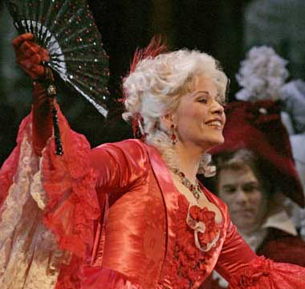
Manon {250}
Metropolitan Opera House; 09/20/2005
Debut: Kate Lindsey |
[Met Performance] CID:351295
La Bohème {1166}
Metropolitan Opera House; 09/22/2005
Debut: Timothy Breese Miller |
[Met Performance] CID:351296
Falstaff {168}
Metropolitan Opera House; 09/23/2005
Debut: Peter Bronder |
[Met Performance] CID:351297
Ariadne auf Naxos {79}
Metropolitan Opera House; 09/24/2005
Debuts: Jon Villars, Diana Damrau, Christopher Maltman |
[Met Performance] CID:351298
Manon {251}
Metropolitan Opera House; 09/24/2005
|
[Met Performance] CID:351299
Falstaff {169}
Metropolitan Opera House; 09/26/2005
|
[Met Performance] CID:351300
Manon {252}
Metropolitan Opera House; 09/27/2005
|
[Met Performance] CID:351301
La Bohème {1167}
Metropolitan Opera House; 09/28/2005
|
[Met Performance] CID:351302
Ariadne auf Naxos {80}
Metropolitan Opera House; 09/29/2005
|
[Met Performance] CID:351303
Manon {253}
Metropolitan Opera House; 09/30/2005
|
[Met Performance] CID:351304
La Bohème {1168}
Metropolitan Opera House; 10/01/2005
|
[Met Performance] CID:351305
Falstaff {170}
Metropolitan Opera House; 10/01/2005
|
[Met Performance] CID:351306
Manon {254}
Metropolitan Opera House; 10/03/2005
|
[Met Performance] CID:351307
Falstaff {171}
Metropolitan Opera House; 10/04/2005
|
[Met Performance] CID:351308
Ariadne auf Naxos {81}
Metropolitan Opera House; 10/05/2005
Debut: Mark Lundberg |
[Met Performance] CID:351309
Carmen {926}
Metropolitan Opera House; 10/06/2005
|
[Met Performance] CID:351311
Manon {255}
Metropolitan Opera House; 10/07/2005
|
[Met Performance] CID:351312
Ariadne auf Naxos {82}
Metropolitan Opera House; 10/08/2005
|
[Met Performance] CID:351313
La Cenerentola {24}
Metropolitan Opera House; 10/08/2005
Debuts: Antonello Allemandi, Simone Alberghini
Review |
[Met Performance] CID:351314
Carmen {927}
Metropolitan Opera House; 10/10/2005
Debut: Milena Kitic |
[Met Performance] CID:351315
Ariadne auf Naxos {83}
Metropolitan Opera House; 10/11/2005
|
[Met Performance] CID:351316
Falstaff {172}
Metropolitan Opera House; 10/12/2005
|
[Met Performance] CID:351317
La Cenerentola {25}
Metropolitan Opera House; 10/13/2005
|
[Met Performance] CID:351318
Aida {1081}
Metropolitan Opera House; 10/14/2005
|
[Met Performance] CID:351319
Carmen {928}
Metropolitan Opera House; 10/15/2005
|
[Met Performance] CID:351320
Falstaff {173}
Metropolitan Opera House; 10/15/2005
|
[Met Performance] CID:351321
La Cenerentola {26}
Metropolitan Opera House; 10/17/2005
|
[Met Performance] CID:351322
Aida {1082}
Metropolitan Opera House; 10/18/2005
|
[Met Performance] CID:351323
Falstaff {174}
Metropolitan Opera House; 10/19/2005
|
[Met Performance] CID:351324
La Cenerentola {27}
Metropolitan Opera House; 10/20/2005
|
[Met Performance] CID:351325

Così Fan Tutte {165}
Metropolitan Opera House; 10/21/2005
Review |
[Met Performance] CID:351326
Aida {1083}
Metropolitan Opera House; 10/22/2005
|
[Met Performance] CID:351327
Falstaff {175}
Metropolitan Opera House; 10/22/2005
|
[Met Performance] CID:351328
La Cenerentola {28}
Metropolitan Opera House; 10/24/2005
|
[Met Performance] CID:351329
Così Fan Tutte {166}
Metropolitan Opera House; 10/25/2005
|
[Met Performance] CID:351330
Aida {1084}
Metropolitan Opera House; 10/26/2005
|
[Met Performance] CID:351331
Lucia di Lammermoor {549}
Metropolitan Opera House; 10/27/2005
Debut: Giuseppe Filianoti |
[Met Performance] CID:351332
La Cenerentola {29}
Metropolitan Opera House; 10/28/2005
|
[Met Performance] CID:351333
Così Fan Tutte {167}
Metropolitan Opera House; 10/29/2005
|
[Met Performance] CID:351334
Aida {1085}
Metropolitan Opera House; 10/29/2005
|
[Met Concert/Gala] CID:351336
The MET Chamber Ensemble
Carnegie Hall, Zankel Hall, New York; 10/30/2005
|
[Met Performance] CID:351335
Lucia di Lammermoor {550}
Metropolitan Opera House; 10/31/2005
|
[Met Performance] CID:351337
Così Fan Tutte {168}
Metropolitan Opera House; 11/01/2005
|
[Met Performance] CID:351338
Le Nozze di Figaro {419}
Metropolitan Opera House; 11/02/2005
Debuts: Mark Wigglesworth, Maurizio Muraro, Joyce DiDonato, Wendy Bryn Harmer, Leann Sandel-Pantaleo |
[Met Performance] CID:351339
Lucia di Lammermoor {551}
Metropolitan Opera House; 11/03/2005
|
[Met Performance] CID:351340
Così Fan Tutte {169}
Metropolitan Opera House; 11/04/2005
|
[Met Performance] CID:351341
Le Nozze di Figaro {420}
Metropolitan Opera House; 11/05/2005
|
[Met Performance] CID:351342
Aida {1086}
Metropolitan Opera House; 11/05/2005
|
[Met Performance] CID:351343
Lucia di Lammermoor {552}
Metropolitan Opera House; 11/07/2005
|
[Met Performance] CID:351344
Le Nozze di Figaro {421}
Metropolitan Opera House; 11/08/2005
|
[Met Performance] CID:351345
Aida {1087}
Metropolitan Opera House; 11/09/2005
|
[Met Performance] CID:351346
Lucia di Lammermoor {553}
Metropolitan Opera House; 11/10/2005
|
[Met Performance] CID:351347
Le Nozze di Figaro {422}
Metropolitan Opera House; 11/11/2005
Debut: William Ferguson |
[Met Performance] CID:351348
La Bohème {1169}
Metropolitan Opera House; 11/12/2005
|
[Met Performance] CID:351349
Aida {1088}
Metropolitan Opera House; 11/12/2005
|
[Met Performance] CID:351350
New Production
Roméo et Juliette {301}
Metropolitan Opera House; 11/14/2005
Debuts: Guy Joosten, Johannes Leiacker,
Jorge Jara, David Cunningham, Seán Curran, Stéphane Degout, David Won
Review |
[Met Performance] CID:351351
La Bohème {1170}
Metropolitan Opera House; 11/15/2005
|
[Met Performance] CID:351352
Le Nozze di Figaro {423}
Metropolitan Opera House; 11/16/2005
|
[Met Performance] CID:351353
Roméo et Juliette {302}
Metropolitan Opera House; 11/17/2005
|
[Met Performance] CID:351354
La Bohème {1171}
Metropolitan Opera House; 11/18/2005
|
[Met Performance] CID:351355
Le Nozze di Figaro {424}
Metropolitan Opera House; 11/19/2005
|
[Met Performance] CID:351356
Carmen {929}
Metropolitan Opera House; 11/19/2005
Debuts: Ana Maria Martinez, Kirstin Chávez |
[Met Performance] CID:351357
Roméo et Juliette {303}
Metropolitan Opera House; 11/21/2005
Review |
[Met Performance] CID:351358
La Bohème {1172}
Metropolitan Opera House; 11/22/2005
|
[Met Performance] CID:351359
Carmen {930}
Metropolitan Opera House; 11/23/2005
|
[Met Performance] CID:351360
Roméo et Juliette {304}
Metropolitan Opera House; 11/25/2005
|
[Met Performance] CID:351362
Carmen {931}
Metropolitan Opera House; 11/26/2005
|
[Met Performance] CID:351363
La Bohème {1173}
Metropolitan Opera House; 11/26/2005
|
[Met Performance] CID:351364
Roméo et Juliette {305}
Metropolitan Opera House; 11/28/2005
|
[Met Performance] CID:351365
Carmen {932}
Metropolitan Opera House; 11/29/2005
|
[Met Performance] CID:351366
La Bohème {1174}
Metropolitan Opera House; 11/30/2005
|
[Met Performance] CID:351367
Roméo et Juliette {306}
Metropolitan Opera House; 12/01/2005
|
[Met Performance] CID:351368
World Premiere
An American Tragedy {1}
Metropolitan Opera House; 12/02/2005
Debuts: Jennifer Aylmer, Graham Phillips, Adrianne Lobel
Review |
[Met Performance] CID:351369
Carmen {933}
Metropolitan Opera House; 12/03/2005
|
[Met Performance] CID:351370
La Bohème {1175}
Metropolitan Opera House; 12/3/2005
|
[Met Performance] CID:351371
An American Tragedy {2}
Metropolitan Opera House; 12/05/2005
|
[Met Performance] CID:351372
La Bohème {1176}
Metropolitan Opera House; 12/6/2005
|
[Met Performance] CID:351373
Carmen {934}
Metropolitan Opera House; 12/07/2005
|
[Met Performance] CID:351374
An American Tragedy {3}
Metropolitan Opera House; 12/08/2005
|
[Met Performance] CID:351375
La Bohème {1177}
Metropolitan Opera House; 12/9/2005
|
[Met Performance] CID:351376
Carmen {935}
Metropolitan Opera House; 12/10/2005
|
[Met Performance] CID:351377
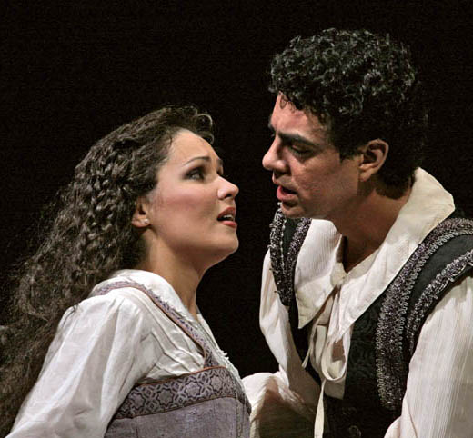
Rigoletto {792}
Metropolitan Opera House; 12/10/2005
Review |
[Met Performance] CID:351378
An American Tragedy {4}
Metropolitan Opera House; 12/12/2005
|
[Met Performance] CID:351379
Rigoletto {793}
Metropolitan Opera House; 12/13/2005
Debut: Raúl Melo |
[Met Performance] CID:351380
Carmen {936}
Metropolitan Opera House; 12/14/2005
|
[Met Performance] CID:351381
La Bohème {1178}
Metropolitan Opera House; 12/15/2005
|
[Met Performance] CID:351383
An American Tragedy {5}
Metropolitan Opera House; 12/16/2005
|
[Met Performance] CID:351384
Opera News 1
Opera News 2
Rigoletto {794}
Metropolitan Opera House; 12/17/2005
First Broadcast sponsored by Toll Brothers-Metropolitan Opera Radio Network |
[Met Performance] CID:351385
Carmen {937}
Metropolitan Opera House; 12/17/2005
|
[Met Performance] CID:351386
Die Fledermaus {203}
Metropolitan Opera House; 12/19/2005
Debuts: Janez Lotric, Marlis Petersen, Bill Irwin |
[Met Performance] CID:351387
Lucia di Lammermoor {554}
Metropolitan Opera House; 12/20/2005
|
[Met Performance] CID:351388
An American Tragedy {6}
Metropolitan Opera House; 12/21/2005
|
[Met Performance] CID:351389
Die Fledermaus {204}
Metropolitan Opera House; 12/22/2005
|
[Met Performance] CID:351390
Lucia di Lammermoor {555}
Metropolitan Opera House; 12/23/2005
|
[Met Performance] CID:351391
Opera News 1
Opera News 2
An American Tragedy {7}
Metropolitan Opera House; 12/24/2005
Broadcast |
[Met Performance] CID:351392
Die Fledermaus {205}
Metropolitan Opera House; 12/26/2005
|
[Met Performance] CID:351393
Wozzeck {57}
Metropolitan Opera House; 12/27/2005
Debuts: Walter Fink, Jacob Wade |
[Met Performance] CID:351394
An American Tragedy {8}
Metropolitan Opera House; 12/28/2005
|
[Met Performance] CID:351395
Die Fledermaus {206}
Metropolitan Opera House; 12/29/2005
|
[Met Performance] CID:351396
Lucia di Lammermoor {556}
Metropolitan Opera House; 12/30/2005
|
[Met Performance] CID:351397
Opera News 1
Opera News 2
Wozzeck {58}
Metropolitan Opera House; 12/31/2005
Broadcast |
[Met Performance] CID:351398
Die Fledermaus {207}
Metropolitan Opera House; 12/31/2005
|
[Met Performance] CID:351399
L'Elisir d'Amore {248}
Metropolitan Opera House; 01/02/2006
Debut: Andrew Shore |
[Met Performance] CID:351400
Wozzeck {59}
Metropolitan Opera House; 01/03/2006
|
[Met Performance] CID:351401
Die Fledermaus {208}
Metropolitan Opera House; 01/04/2006
|
[Met Performance] CID:351402
Lucia di Lammermoor {557}
Metropolitan Opera House; 01/05/2006
|
[Met Performance] CID:351403
Wozzeck {60}
Metropolitan Opera House; 01/06/2006
|
[Met Performance] CID:351404
L'Elisir d'Amore {249}
Metropolitan Opera House; 01/07/2006
Broadcast |
[Met Performance] CID:351405
Die Fledermaus {209}
Metropolitan Opera House; 01/07/2006
|
[Met Concert/Gala] CID:351406
The MET Orchestra
Carnegie Hall, New York; 01/08/2006
|
[Met Concert/Gala] CID:351407
A Mozart Celebration
Metropolitan Opera House; 01/14/2006
Broadcast |
[Met Presentation] CID:354229
Barbara Cook at the Met
Metropolitan Opera House; 01/20/2006
|
[Met Performance] CID:351408
Opera News 1
Opera News 2
Die Zauberflöte {353}
Metropolitan Opera House; 01/21/2006
Debuts: Paul Daniel, Susannah Glanville, Gregory Reinhart, Thomas Riley
Broadcast |
[Met Performance] CID:351409
Die Zauberflöte {354}
Metropolitan Opera House; 01/24/2006
|
[Met Performance] CID:351410
Così Fan Tutte {170}
Metropolitan Opera House; 01/25/2006
|
[Met Performance] CID:351411
Cyrano de Bergerac {4}
Metropolitan Opera House; 01/26/2006
|
[Met Performance] CID:351426
Die Zauberflöte {355}
Metropolitan Opera House; 01/27/2006
|
[Met Performance] CID:351413
Opera News 1
Opera News 2
Così Fan Tutte {171}
Metropolitan Opera House; 01/28/2006
Broadcast |
[Met Performance] CID:351414
Rigoletto {795}
Metropolitan Opera House; 01/28/2006
|
[Met Concert/Gala] CID:351415
The MET Orchestra: Erwartung {11}
Carnegie Hall, New York; 01/29/2006
|
[Met Performance] CID:351412
Die Zauberflöte {356}
Metropolitan Opera House; 01/30/2006
|
[Met Performance] CID:351425
Cyrano de Bergerac {5}
Metropolitan Opera House; 01/31/2006
|
[Met Performance] CID:351417
Rigoletto {796}
Metropolitan Opera House; 02/01/2006
|
[Met Performance] CID:351418
Aida {1089}
Metropolitan Opera House; 02/02/2006
|
[Met Performance] CID:351419
Die Zauberflöte {357}
Metropolitan Opera House; 02/03/2006
|
[Met Performance] CID:351416
Cyrano de Bergerac {6}
Metropolitan Opera House; 02/04/2006
Broadcast |
[Met Performance] CID:351420
La Traviata {904}
Metropolitan Opera House; 02/04/2006
Debut: Jonas Kaufmann |
[Met Performance] CID:351421
Aida {1090}
Metropolitan Opera House; 02/06/2006
|
[Met Performance] CID:351422
La Traviata {905}
Metropolitan Opera House; 02/07/2006
|
[Met Performance] CID:351423
Rigoletto {797}
Metropolitan Opera House; 02/08/2006
|
[Met Performance] CID:351424
Aida {1091}
Metropolitan Opera House; 02/09/2006
|
[Met Performance] CID:351427
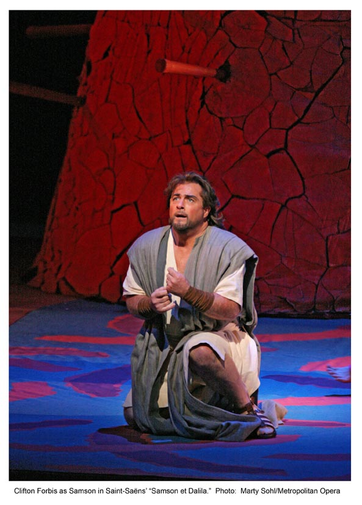
Samson et Dalila {221}
Metropolitan Opera House; 02/10/2006
|
[Met Performance] CID:351428
Opera News 1
Opera News 2
La Traviata {906}
Metropolitan Opera House; 02/11/2006
Broadcast
|
[Met Performance] CID:351429
Rigoletto {798}
Metropolitan Opera House; 02/11/2006
|
[Met Performance] CID:351430
Aida {1092}
Metropolitan Opera House; 02/13/2006
|
[Met Performance] CID:351431
Samson et Dalila {222}
Metropolitan Opera House; 02/14/2006
|
[Met Performance] CID:351432
Rigoletto {799}
Metropolitan Opera House; 02/15/2006
|
[Met Performance] CID:351433
La Traviata {907}
Metropolitan Opera House; 02/16/2006
|
[Met Performance] CID:351434
Samson et Dalila {223}
Metropolitan Opera House; 02/17/2006
|
[Met Performance] CID:351435
Aida {1093}
Metropolitan Opera House; 02/18/2006
Broadcast |
[Met Performance] CID:351436
Rigoletto {800}
Metropolitan Opera House; 02/18/2006
|
[Met Performance] CID:351437
La Forza del Destino {221}
Metropolitan Opera House; 02/20/2006
|
[Met Performance] CID:351438
Roméo et Juliette {307}
Metropolitan Opera House; 02/21/2006
|
[Met Performance] CID:351439
Samson et Dalila {224}
Metropolitan Opera House; 02/22/2006
|
[Met Performance] CID:351440
La Traviata {908}
Metropolitan Opera House; 02/23/2006
|
[Met Performance] CID:351441
La Forza del Destino {222}
Metropolitan Opera House; 02/24/2006
|
[Met Performance] CID:351442
Opera News 1
Opera News 2
Samson et Dalila {225}
Metropolitan Opera House; 02/25/2006
Broadcast |
[Met Performance] CID:351443
Roméo et Juliette {308}
Metropolitan Opera House; 02/25/2006
|
[Met Performance] CID:351444
La Traviata {909}
Metropolitan Opera House; 02/27/2006
|
[Met Performance] CID:351445
La Forza del Destino {223}
Metropolitan Opera House; 02/28/2006
|
[Met Performance] CID:351446
Roméo et Juliette {309}
Metropolitan Opera House; 03/01/2006
|
[Met Performance] CID:351447
Samson et Dalila {226}
Metropolitan Opera House; 03/02/2006
|
[Met Performance] CID:351448
La Traviata {910}
Metropolitan Opera House; 03/03/2006
|
[Met Performance] CID:351449
Opera News 1
Opera News 2
Roméo et Juliette {310}
Metropolitan Opera House; 03/04/2006
Broadcast |
[Met Performance] CID:351450
La Forza del Destino {224}
Metropolitan Opera House; 03/04/2006
|
[Met Performance] CID:351451
Metropolitan Opera Premiere
Mazeppa {1}
Metropolitan Opera House; 03/06/2006
Debuts: Yuri Alexandrov, Gleb Filshtinsky
Review |
[Met Performance] CID:351452
La Forza del Destino {225}
Metropolitan Opera House; 03/07/2006
|
[Met Performance] CID:351453
Cyrano de Bergerac {7}
Metropolitan Opera House; 03/08/2006
|
[Met Performance] CID:351454
Roméo et Juliette {311}
Metropolitan Opera House; 03/09/2006
|
[Met Performance] CID:351455
Mazeppa {2}
Metropolitan Opera House; 03/10/2006
|
[Met Performance] CID:351456
La Forza del Destino {226}
Metropolitan Opera House; 03/11/2006
Broadcast |
[Met Performance] CID:351457
Cyrano de Bergerac {8}
Metropolitan Opera House; 03/11/2006
|
[Met Performance] CID:351458
Luisa Miller {81}
Metropolitan Opera House; 03/13/2006
Debut: Tamara Mumford |
[Met Performance] CID:351459
Mazeppa {3}
Metropolitan Opera House; 03/14/2006
|
[Met Performance] CID:351460
La Forza del Destino {227}
Metropolitan Opera House; 03/15/2006
Debut: Mary Phillips |
[Met Performance] CID:351461
Cyrano de Bergerac {9}
Metropolitan Opera House; 03/16/2006
|
[Met Performance] CID:351462
Luisa Miller {82}
Metropolitan Opera House; 03/17/2006
Debut: Karen Slack |
[Met Performance] CID:351463
Opera News 1
Opera News 2
Mazeppa {4}
Metropolitan Opera House; 03/18/2006
Broadcast |
[Met Performance] CID:351464
La Forza del Destino {228}
Metropolitan Opera House; 03/18/2006
|
[Met Concert/Gala] CID:351465
The MET Chamber Ensemble
Carnegie Hall, Weill Recital Hall; 03/19/2006
|
[Met Performance] CID:351466
Fidelio {224}
Metropolitan Opera House; 03/20/2006
|
[Met Performance] CID:351467
Luisa Miller {83}
Metropolitan Opera House; 03/21/2006
|
[Met Performance] CID:351468
Mazeppa {5}
Metropolitan Opera House; 03/22/2006
|
[Met Performance] CID:351469
La Forza del Destino {229}
Metropolitan Opera House; 03/23/2006
|
[Met Performance] CID:351470
Fidelio {225}
Metropolitan Opera House; 03/24/2006
|
[Met Performance] CID:351471
Luisa Miller {84}
Metropolitan Opera House; 03/25/2006
Broadcast |
[Met Performance] CID:351472
Mazeppa {6}
Metropolitan Opera House; 03/25/2006
|
[Met Concert/Gala] CID:351473
National Council Grand Finals Concert
Metropolitan Opera House; 03/26/2006
First appearance: Paul Corona, Donovan Singletary, John Moore
Broadcast |
[Met Performance] CID:351474
Mazeppa {7}
Metropolitan Opera House; 03/27/2006
|
[Met Performance] CID:351475
Fidelio {226}
Metropolitan Opera House; 03/28/2006
|
[Met Performance] CID:351476
Luisa Miller {85}
Metropolitan Opera House; 03/29/2006
|
[Met Performance] CID:351477
Mazeppa {8}
Metropolitan Opera House; 03/30/2006
|
[Met Performance] CID:351478
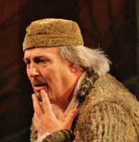
New Production
Don Pasquale {116}
Metropolitan Opera House; 03/31/2006
Review |
[Met Performance] CID:351479
Opera News 1
Opera News 2
Fidelio {227}
Metropolitan Opera House; 04/01/2006
Debut: Erika Sunnegardh
Broadcast |
[Met Performance] CID:351480
Luisa Miller {86}
Metropolitan Opera House; 04/01/2006
|
[Met Performance] CID:351481
Don Pasquale {117}
Metropolitan Opera House; 04/03/2006
|
[Met Performance] CID:351482
Fidelio {228}
Metropolitan Opera House; 04/04/2006
|
[Met Performance] CID:351483
Manon {256}
Metropolitan Opera House; 04/05/2006
Debut: Massimo Giordano, Craig Montgomery |
[Met Performance] CID:351484
La Traviata {911}
Metropolitan Opera House; 04/06/2006
|
[Met Performance] CID:351485
Don Pasquale {118}
Metropolitan Opera House; 04/07/2006
|
[Met Performance] CID:351486
Opera News 1
Opera News 2
Manon {257}
Metropolitan Opera House; 04/08/2006
Broadcast |
[Met Performance] CID:351488
Fidelio {229}
Metropolitan Opera House; 04/08/2006
|
[Met Performance] CID:351489
La Traviata {912}
Metropolitan Opera House; 04/10/2006
|
[Met Performance] CID:351490
Don Pasquale {119}
Metropolitan Opera House; 04/11/2006
|
[Met Performance] CID:351491
Le Nozze di Figaro {425}
Metropolitan Opera House; 04/12/2006
Debut: Alice Coote |
[Met Performance] CID:351492
Fidelio {230}
Metropolitan Opera House; 04/13/2006
|
[Met Performance] CID:351495
La Traviata {913}
Metropolitan Opera House; 04/14/2006
|
[Met Performance] CID:351494
Opera News 1
Opera News 2
Don Pasquale {120}
Metropolitan Opera House; 04/15/2006
Broadcast |
[Met Performance] CID:351493
Le Nozze di Figaro {426}
Metropolitan Opera House; 04/15/2006
|
[Met Performance] CID:351496
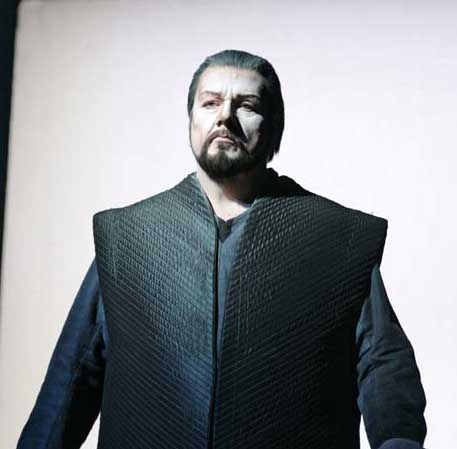
Lohengrin {613}
Metropolitan Opera House; 04/17/2006
Debut: Luana DeVol, Andrew Greenan |
[Met Performance] CID:351498
Don Pasquale {121}
Metropolitan Opera House; 04/18/2006
|
[Met Performance] CID:351499
Le Nozze di Figaro {427}
Metropolitan Opera House; 04/19/2006
|
[Met Performance] CID:351500
Lohengrin {614}
Metropolitan Opera House; 04/20/2006
|
[Met Performance] CID:351501
Don Pasquale {122}
Metropolitan Opera House; 04/21/2006
|
[Met Performance] CID:351502
Le Nozze di Figaro {428}
Metropolitan Opera House; 04/22/2006
Broadcast |
[Met Performance] CID:351503

Tosca {874}
Metropolitan Opera House; 04/22/2006
Debut: Kyle Ketelsen |
[Met Concert/Gala] CID:351504
The MET Chamber Ensemble
Carnegie Hall, Zankel Hall, New York; 04/23/2006
|
[Met Performance] CID:351505
Lohengrin {615}
Metropolitan Opera House; 04/24/2006
|
[Met Performance] CID:351506
Don Pasquale {123}
Metropolitan Opera House; 04/25/2006
|
[Met Performance] CID:351507
Tosca {875}
Metropolitan Opera House; 04/26/2006
|
[Met Performance] CID:351508
Le Nozze di Figaro {429}
Metropolitan Opera House; 04/27/2006
|
[Met Performance] CID:351509
Don Pasquale {124}
Metropolitan Opera House; 04/28/2006
|
[Met Performance] CID:351510
Opera News 1
Opera News 2
Lohengrin {616}
Metropolitan Opera House; 04/29/2006
Broadcast |
[Met Performance] CID:351511
Tosca {876}
Metropolitan Opera House; 04/29/2006
|
[Met Performance] CID:351512
Rigoletto {801}
Metropolitan Opera House; 05/01/2006
|
[Met Performance] CID:351513
Rodelinda {10}
Metropolitan Opera House; 05/02/2006
Debuts: Andreas Scholl, Christophe Dumaux |
[Met Performance] CID:351514
Lohengrin {617}
Metropolitan Opera House; 05/03/2006
Debut: Klaus Florian Vogt |
[Met Performance] CID:351515
Rigoletto {802}
Metropolitan Opera House; 05/04/2006
|
[Met Performance] CID:351516
Tosca {877}
Metropolitan Opera House; 05/05/2006
|
[Met Performance] CID:351517
Opera News 1
Opera News 2
Rodelinda {11}
Metropolitan Opera House; 05/06/2006
Broadcast |
[Met Performance] CID:351518
Lohengrin {618}
Metropolitan Opera House; 05/06/2006
|
[Met Performance] CID:351519
Tosca {878}
Metropolitan Opera House; 05/08/2006
|
[Met Performance] CID:351520
Rigoletto {803}
Metropolitan Opera House; 05/09/2006
|
[Met Performance] CID:351521
Rodelinda {12}
Metropolitan Opera House; 05/10/2006
|
[Met Performance] CID:351522
Tosca {879}
Metropolitan Opera House; 05/11/2006
|
[Met Performance] CID:351523
Parsifal {286}
Metropolitan Opera House; 05/12/2006
Debut: Jordan Bisch |
[Met Performance] CID:351524
L'Elisir d'Amore {250}
Metropolitan Opera House; 05/13/2006
|
[Met Performance] CID:351525
Rodelinda {13}
Metropolitan Opera House; 05/13/2006
|
[Met Concert/Gala] CID:351526
The MET Orchestra
Carnegie Hall, New York; 05/14/2006
|
[Met Performance] CID:351527
Parsifal {287}
Metropolitan Opera House; 05/15/2006
|
[Met Performance] CID:351528
Tosca {880}
Metropolitan Opera House; 05/16/2006
|
[Met Performance] CID:351529
L'Elisir d'Amore {251}
Metropolitan Opera House; 05/17/2006
|
[Met Performance] CID:351530
Parsifal {288}
Metropolitan Opera House; 05/18/2006
|
[Met Performance] CID:351531
Rodelinda {14}
Metropolitan Opera House; 05/19/2006
|
[Met Performance] CID:351532
L'Elisir d'Amore {252}
Metropolitan Opera House; 05/20/2006
|
[Met Concert/Gala] CID:351533
Gala Celebration in honor of Joseph Volpe
Metropolitan Opera House; 05/20/2006
Broadcast / Telecast |
[Met Performance] CID:351534
La Traviata {914}
Kobe, Japan; 06/10/2006
|
[Met Performance] CID:351535
Don Giovanni {497}
Kobe, Japan; 06/11/2006
|
[Met Performance] CID:351241
Die Walküre {511}
Nagoya, Japan; 06/12/2006
|
[Met Performance] CID:351537
La Traviata {915}
Tokyo, Japan; 06/14/2006
|
[Met Performance] CID:351539
Die Walküre {512}
Tokyo, Japan; 06/15/2006
|
[Met Performance] CID:351540
La Traviata {916}
Tokyo, Japan; 06/17/2006
|
[Met Performance] CID:351541
Don Giovanni {498}
Tokyo, Japan; 06/17/2006
|
[Met Performance] CID:351542
Die Walküre {513}
Tokyo, Japan; 06/18/2006
|
[Met Concert/Gala] CID:351543
The MET Orchestra
Tokyo, Japan; 06/19/2006
|
[Met Performance] CID:351544
Don Giovanni {499}
Tokyo, Japan; 06/20/2006
|
[Met Performance] CID:351545
Die Walküre {514}
Tokyo, Japan; 06/21/2006
|
[Met Performance] CID:351547
La Traviata {917}
Tokyo, Japan; 06/22/2006
|
[Met Performance] CID:351548
Don Giovanni {500}
Tokyo, Japan; 06/23/2006
|
[Met Performance] CID:351549
La Traviata {918}
New York, Manhattan, Central Park, Great Lawn; 08/22/2006
|
[Met Performance] CID:351550
Rigoletto {804}
New York, Manhattan, Central Park, Great Lawn; 08/23/2006
|
[Met Performance] CID:351552
La Traviata {919}
New York, Brooklyn, Marine Park; 08/25/2006
|
[Met Performance] CID:354627
Cancelled Performance
New York, Bronx, Orchard Beach; 08/26/2006
A scheduled performance of Rigoletto was cancelled due to rain. |
[Met Performance] CID:354628
Cancelled Performance
New York, Staten Island, Richmond County Bank Ballpark; 08/29/2006
A scheduled performance of La Traviata was cancelled due to rain. |
[Met Performance] CID:351553
Rigoletto {805}
New York, Queens, Cunningham Park; 08/31/2006
|
[Met Performance] CID:354629
Cancelled Performance
New Jersey, New Brunswick, Buccleuch Park; 09/02/2006
A performance scheduled of Rigoletto was cancelled due to rain. |
[Met Performance] CID:351555
New Production
Madama Butterfly {799}
Metropolitan Opera House; 09/25/2006
Opening Night {122}
Peter Gelb, General Manager
Debuts: Anthony Minghella, Carolyn Choa, Han Feng, Peter Mumford, Blind Summit Theatre, Keith Miller, Mark Down, Nick Barnes, Finn Caldwell, Hsin Ping Chang, Tom Yang
Broadcast/Times Squarecast/Plazacast
Review |
[Met Performance] CID:351556
La Gioconda {275}
Metropolitan Opera House; 09/26/2006
Debuts: Christopher Wheeldon, Holly Hynes, Zeljko Lucic, Ricardo Lugo, Letizia Giuliani, Angel Corella, Christian Jeong |
[Met Performance] CID:351557
Idomeneo {60}
Metropolitan Opera House; 09/28/2006
Debuts: Lisette Oropesa, Jeffrey Francis, Simon O'Neill
Broadcast |
[Met Performance] CID:351558
Madama Butterfly {800}
Metropolitan Opera House; 09/30/2006
|
[Met Performance] CID:351559
La Gioconda {276}
Metropolitan Opera House; 09/30/2006
Broadcast |
[Met Performance] CID:351585
Idomeneo {61}
Metropolitan Opera House; 10/02/2006
Broadcast |
[Met Performance] CID:351561
Faust {723}
Metropolitan Opera House; 10/03/2006
Debuts: Tommi Hakala, Karine Deshayes
Broadcast |
[Met Performance] CID:351563
La Gioconda {277}
Metropolitan Opera House; 10/04/2006
Broadcast |
[Met Performance] CID:351564
Madama Butterfly {801}
Metropolitan Opera House; 10/05/2006
Broadcast |
[Met Performance] CID:351565
Faust {724}
Metropolitan Opera House; 10/06/2006
|
[Met Performance] CID:351566
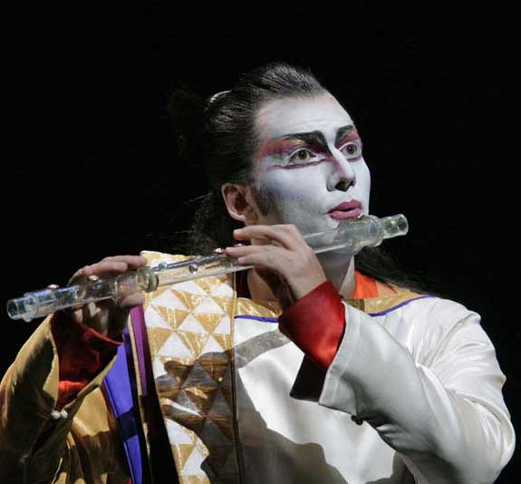
Die Zauberflöte {358}
Metropolitan Opera House; 10/07/2006
Debuts: Noah Weisbart, Richard Cox |
[Met Performance] CID:351587
La Gioconda {278}
Metropolitan Opera House; 10/07/2006
|
[Met Performance] CID:351576
Die Zauberflöte {359}
Metropolitan Opera House; 10/09/2006
Broadcast |
[Met Performance] CID:351586
Idomeneo {62}
Metropolitan Opera House; 10/10/2006
Broadcast |
[Met Performance] CID:351580
La Gioconda {279}
Metropolitan Opera House; 10/11/2006
|
[Met Performance] CID:351590
Faust {725}
Metropolitan Opera House; 10/12/2006
Broadcast |
[Met Performance] CID:351584
Die Zauberflöte {360}
Metropolitan Opera House; 10/13/2006
|
[Met Performance] CID:351560
Idomeneo {63}
Metropolitan Opera House; 10/14/2006
|
[Met Performance] CID:351567
La Gioconda {280}
Metropolitan Opera House; 10/14/2006
Broadcast |
[Met Concert/Gala] CID:351589
The MET Chamber Ensemble
Carnegie Hall, Zankel Hall; 10/15/2006
|
[Met Performance] CID:351581
Faust {726}
Metropolitan Opera House; 10/16/2006
Broadcast |
[Met Performance] CID:351593
Madama Butterfly {802}
Metropolitan Opera House; 10/17/2006
Broadcast |
[Met Performance] CID:351596
La Gioconda {281}
Metropolitan Opera House; 10/18/2006
Debut: Danny Tidwell
Broadcast |
[Met Performance] CID:351598
Faust {727}
Metropolitan Opera House; 10/19/2006
Debut: Darina Takova |
[Met Performance] CID:351600
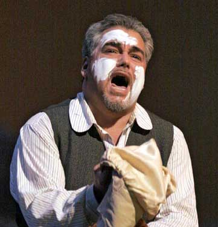
Cavalleria Rusticana {654}
Pagliacci {696}
Metropolitan Opera House; 10/20/2006
Broadcast |
[Met Performance] CID:351602
La Gioconda {282}
Metropolitan Opera House; 10/21/2006
|
[Met Performance] CID:351603
Madama Butterfly {803}
Metropolitan Opera House; 10/21/2006
|
[Met Performance] CID:351605
Cavalleria Rusticana {655}
Pagliacci {697}
Metropolitan Opera House; 10/23/2006
|
[Met Performance] CID:351606
Madama Butterfly {804}
Metropolitan Opera House; 10/24/2006
|
[Met Performance] CID:351611
Rigoletto {806}
Metropolitan Opera House; 10/25/2006
Debuts: Ekaterina Siurina, Joseph Calleja, Friedrich Haider
Broadcast/Streamed |
[Met Performance] CID:351614
Cavalleria Rusticana {656}
Pagliacci {698}
Metropolitan Opera House; 10/26/2006
Broadcast |
[Met Performance] CID:351616
Madama Butterfly {805}
Metropolitan Opera House; 10/27/2006
Broadcast |
[Met Performance] CID:351617
Rigoletto {807}
Metropolitan Opera House; 10/28/2006
|
[Met Performance] CID:351618
Tosca {881}
Metropolitan Opera House; 10/28/2006
Debut: Nicola Luisotti
Broadcast |
[Met Performance] CID:351619
Cavalleria Rusticana{657}
Pagliacci {699}
Metropolitan Opera House; 10/30/2006
Broadcast/Streamed |
[Met Performance] CID:351624
Madama Butterfly {806}
Metropolitan Opera House; 10/31/2006
|
[Met Performance] CID:351626
Tosca {882}
Metropolitan Opera House; 11/01/2006
Broadcast |
[Met Performance] CID:351628
Rigoletto {808}
Metropolitan Opera House; 11/02/2006
Broadcast |
[Met Performance] CID:351630
Cavalleria Rusticana {658}
Pagliacci {700}
Metropolitan Opera House; 11/03/2006
|
[Met Performance] CID:351631
Tosca {883}
Metropolitan Opera House; 11/04/2006
|
[Met Performance] CID:351632
Madama Butterfly {807}
Metropolitan Opera House; 11/04/2006
Broadcast |
[Met Performance] CID:351636
Rigoletto {809}
Metropolitan Opera House; 11/06/2006
Broadcast |
[Met Performance] CID:351639
Tosca {884}
Metropolitan Opera House; 11/07/2006
Broadcast |
[Met Concert/Gala] CID:351638
Late Show with David Letterman: Il Barbiere di Siviglia: Act I finale
Ed Sullivan Theater; 11/08/2006
Telecast |
[Met Performance] CID:351641
Madama Butterfly {808}
Metropolitan Opera House; 11/08/2006
Broadcast |
[Met Performance] CID:351643
Rigoletto {810}
Metropolitan Opera House; 11/09/2006
|
[Met Performance] CID:351644
New Production
Il Barbiere di Siviglia {551}
Metropolitan Opera House; 11/10/2006
Debuts: Bartlett Sher, Catherine Zuber, Christopher Akerlind, Rob Besserer
Broadcast/Streamed
Review |
[Met Performance] CID:351647
Tosca {885}
Metropolitan Opera House; 11/11/2006
|
[Met Performance] CID:351648
Madama Butterfly {809}
Metropolitan Opera House; 11/11/2006
|
[Met Performance] CID:351653
Il Barbiere di Siviglia {552}
Metropolitan Opera House; 11/13/2006
Broadcast |
[Met Performance] CID:351656
Tosca {886}
Metropolitan Opera House; 11/14/2006
Broadcast |
[Met Performance] CID:351658
Madama Butterfly {810}
Metropolitan Opera House; 11/15/2006
Broadcast |
[Met Performance] CID:351649
Il Barbiere di Siviglia {553}
Metropolitan Opera House; 11/16/2006
|
[Met Performance] CID:351663
Tosca {887}
Metropolitan Opera House; 11/17/2006
|
[Met Performance] CID:351664
La Bohème {1179}
Metropolitan Opera House; 11/18/2006
Debut: Angela Marambio, Aaron St. Clair Nicholson |
[Met Performance] CID:351665
Madama Butterfly {811}
Metropolitan Opera House; 11/18/2006
Broadcast/Streamed |
[Met Performance] CID:351676
Il Barbiere di Siviglia {554}
Metropolitan Opera House; 11/20/2006
Broadcast |
[Met Performance] CID:351670
La Bohème {1180}
Metropolitan Opera House; 11/21/2006
Broadcast |
[Met Performance] CID:351672
Tosca {888}
Metropolitan Opera House; 11/22/2006
|
[Met Performance] CID:351673
Il Barbiere di Siviglia {555}
Metropolitan Opera House; 11/24/2006
|
[Met Performance] CID:351674
La Bohème {1181}
Metropolitan Opera House; 11/25/2006
|
[Met Performance] CID:351675
Tosca {889}
Metropolitan Opera House; 11/25/2006
Broadcast/Streamed |
[Met Performance] CID:351677
Il Barbiere di Siviglia {556}
Metropolitan Opera House; 11/27/2006
Broadcast |
[Met Performance] CID:351683
Tosca {890}
Metropolitan Opera House; 11/28/2006
Broadcast |
[Met Performance] CID:351690
Opera News
Idomeneo {64}
Metropolitan Opera House; 11/29/2006
Debut: Jennifer Black
Broadcast |
[Met Performance] CID:351687
Don Carlo {184}
Metropolitan Opera House; 11/30/2006
Debut: Andrea Lucaciu
Broadcast/Streamed
Review |
[Met Performance] CID:351689
La Bohème {1182}
Metropolitan Opera House; 12/01/2006
Debut: Anna Samuil |
[Met Performance] CID:351691
Idomeneo {65}
Metropolitan Opera House; 12/02/2006
|
[Met Performance] CID:351692
Tosca {891}
Metropolitan Opera House; 12/02/2006
|
[Met Performance] CID:351693
Don Carlo {185}
Metropolitan Opera House; 12/04/2006
Broadcast |
[Met Performance] CID:351698
La Bohème {1183}
Metropolitan Opera House; 12/05/2006
Broadcast/Streamed |
[Met Performance] CID:351700
Idomeneo {66}
Metropolitan Opera House; 12/06/2006
|
[Met Performance] CID:351703
Don Carlo {186}
Metropolitan Opera House; 12/07/2006
|
[Met Performance] CID:351705
Rigoletto {811}
Metropolitan Opera House; 12/08/2006
Broadcast |
[Met Performance] CID:351706
Opera News
Idomeneo {67}
Metropolitan Opera House; 12/09/2006
Broadcast |
[Met Performance] CID:351707
La Bohème {1184}
Metropolitan Opera House; 12/09/2006
Debut: Maija Kovalevska |
[Met Performance] CID:351708
Don Carlo {187}
Metropolitan Opera House; 12/11/2006
Broadcast/Streamed |
[Met Performance] CID:351714
Rigoletto {812}
Metropolitan Opera House; 12/12/2006
|
[Met Performance] CID:351716
La Bohème {1185}
Metropolitan Opera House; 12/13/2006
Broadcast |
[Met Performance] CID:351719
Don Carlo {188}
Metropolitan Opera House; 12/14/2006
|
[Met Performance] CID:351720
Die Zauberflöte {361}
Metropolitan Opera House; 12/15/2006
Debuts: Christoph Strehl, Cornelia Götz
Broadcast |
[Met Performance] CID:351722
Rigoletto {813}
Metropolitan Opera House; 12/16/2006
Broadcast |
[Met Performance] CID:351724
La Bohème {1186}
Metropolitan Opera House; 12/16/2006
|
[Met Concert/Gala] CID:351891
The MET Chamber Ensemble
Carnegie Hall, Weill Recital Hall, New York; 12/17/2006
|
[Met Performance] CID:351730
Don Carlo {189}
Metropolitan Opera House; 12/18/2006
|
[Met Performance] CID:351731
Rigoletto {814}
Metropolitan Opera House; 12/19/2006
Debuts: Piotr Beczala, Kate Aldrich
Broadcast |
[Met Performance] CID:351733
Die Zauberflöte {362}
Metropolitan Opera House; 12/20/2006
Broadcast |
[Met Performance] CID:351734

World Premiere
The First Emperor {1}
Metropolitan Opera House; 12/21/2006
Debuts: Tan Dun, Zhang Yimou, Fan Yue, Emi Wada, Wang Chaoge, Dou Dou Huang, Wu Hsing-Kuo, Qi Yao, Danrell Williams
Broadcast/Streamed
Review |
[Met Performance] CID:351735
Rigoletto {815}
Metropolitan Opera House; 12/22/2006
|
[Met Performance] CID:351736
Opera News
Don Carlo {190}
Metropolitan Opera House; 12/23/2006
Broadcast |
[Met Performance] CID:351737
Die Zauberflöte {363}
Metropolitan Opera House; 12/23/2006
|
[Met Performance] CID:351738
The First Emperor {2}
Metropolitan Opera House; 12/26/2006
Broadcast |
[Met Performance] CID:351750
I Puritani {43}
Metropolitan Opera House; 12/27/2006
Broadcast/Streamed |
[Met Performance] CID:351752
Die Zauberflöte {364}
Metropolitan Opera House; 12/28/2006
Broadcast |
[Met Performance] CID:351755
Premiere of abridged version
Die Zauberflöte {365}
Metropolitan Opera House; 12/29/2006
Debuts: Ying Huang, Bennett Kosma, Jesse Burnside Murray, Kenneth Floyd |
[Met Performance] CID:351756
The First Emperor {3}
Metropolitan Opera House; 12/29/2006
|
[Met Performance] CID:351757
Die Zauberflöte {366}
Metropolitan Opera House; 12/30/2006
HD Simulcast |
[Met Performance] CID:351758
I Puritani {44}
Metropolitan Opera House; 12/30/2006
|
[Met Performance] CID:351759
Die Zauberflöte {367}
Metropolitan Opera House; 12/31/2006
Debut: Mari Moriya |
[Met Performance] CID:351761
Die Zauberflöte {368}
Metropolitan Opera House; 01/01/2007
|
[Met Performance] CID:351762
Die Zauberflöte {369}
Metropolitan Opera House; 01/01/2007
Broadcast |
[Met Performance] CID:351771
Die Zauberflöte {370}
Metropolitan Opera House; 01/02/2007
Debut: Jens Georg Bachmann |
[Met Performance] CID:351772
The First Emperor {4}
Metropolitan Opera House; 01/02/2007
Broadcast |
[Met Performance] CID:351775
I Puritani {45}
Metropolitan Opera House; 01/03/2007
|
[Met Performance] CID:351778
Die Zauberflöte {371}
Metropolitan Opera House; 01/04/2007
|
[Met Performance] CID:351779
Die Zauberflöte {372}
Metropolitan Opera House; 01/04/2007
|
[Met Performance] CID:351790
The First Emperor {5}
Metropolitan Opera House; 01/05/2007
|
[Met Performance] CID:351783
Opera News
I Puritani {46}
Metropolitan Opera House; 01/06/2007
HD Simulcast |
[Met Performance] CID:351784
Die Zauberflöte {373}
Metropolitan Opera House; 01/06/2007
|
[Met Performance] CID:351785
Die Zauberflöte {374}
Metropolitan Opera House; 01/08/2007
Broadcast |
[Met Performance] CID:351781
The First Emperor {6}
Metropolitan Opera House; 01/09/2007
|
[Met Performance] CID:351791
La Traviata {920}
Metropolitan Opera House; 01/10/2007
Debut: Wookyung Kim
Broadcast |
[Met Performance] CID:351792
I Puritani {47}
Metropolitan Opera House; 01/11/2007
Broadcast |
[Met Performance] CID:351793
Die Zauberflöte {375}
Metropolitan Opera House; 01/12/2007
|
[Met Performance] CID:351794
Opera News
The First Emperor {7}
Metropolitan Opera House; 01/13/2007
HD Simulcast |
[Met Performance] CID:351795
La Traviata {921}
Metropolitan Opera House; 01/13/2007
|
[Met Concert/Gala] CID:351796
The MET Orchestra
Carnegie Hall, New York; 01/14/2007
|
[Met Presentation] CID:354228
Kristin Chenoweth: Live at the Met
Metropolitan Opera House; 01/19/2007
|
[Met Performance] CID:351804
The First Emperor {8}
Metropolitan Opera House; 01/22/2007
|
[Met Performance] CID:351806
La Traviata {922}
Metropolitan Opera House; 01/23/2007
Broadcast |
[Met Performance] CID:351809
La Bohème {1187}
Metropolitan Opera House; 01/24/2007
Broadcast |
[Met Performance] CID:351811
The First Emperor {9}
Metropolitan Opera House; 01/25/2007
Debut: Marc Heller
Broadcast/Streamed |
[Met Performance] CID:351813
Cavalleria Rusticana {659}
Pagliacci {701}
Metropolitan Opera House; 01/26/2007
Broadcast |
[Met Performance] CID:351814
La Traviata {923}
Metropolitan Opera House; 01/27/2007
|
[Met Performance] CID:351815
La Bohème {1188}
Metropolitan Opera House; 01/27/2007
|
[Met Performance] CID:351819
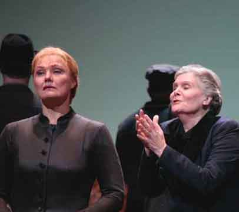
Jenufa {40}
Metropolitan Opera House; 01/29/2007
Debut: Michaela Martens
Broadcast/Streamed |
[Met Performance] CID:351821
Cavalleria Rusticana {660}
Pagliacci {702}
Metropolitan Opera House; 01/30/2007
Broadcast |
[Met Performance] CID:351823
La Bohème {1189}
Metropolitan Opera House; 01/31/2007
|
[Met Performance] CID:351825
La Traviata {924}
Metropolitan Opera House; 02/01/2007
Broadcast |
[Met Performance] CID:351827
Jenufa {41}
Metropolitan Opera House; 02/02/2007
|
[Met Performance] CID:351833
La Bohème {1190}
Metropolitan Opera House; 02/03/2007
Broadcast |
[Met Performance] CID:351828
Cavalleria Rusticana {661}
Pagliacci {703}
Metropolitan Opera House; 02/03/2007
|
[Met Performance] CID:351832
I Puritani {48}
Metropolitan Opera House; 02/05/2007
Broadcast |
[Met Performance] CID:351835
Jenufa {42}
Metropolitan Opera House; 02/06/2007
Broadcast |
[Met Performance] CID:351837
Cavalleria Rusticana {662}
Pagliacci {704}
Metropolitan Opera House; 02/07/2007
|
[Met Performance] CID:351838
I Puritani {49}
Metropolitan Opera House; 02/08/2007
|
[Met Performance] CID:351841
Eugene Onegin {122}
Metropolitan Opera House; 02/09/2007
Debut: Svetlana Volkova
Broadcast/Streamed
Review |
[Met Performance] CID:351842
Cavalleria Rusticana {663}
Pagliacci {705}
Metropolitan Opera House; 02/10/2007
Broadcast |
[Met Performance] CID:351844
Jenufa {43}
Metropolitan Opera House; 02/10/2007
|
[Met Performance] CID:351859
La Traviata {925}
Metropolitan Opera House; 02/12/2007
Broadcast/Streamed |
[Met Performance] CID:351849
Eugene Onegin {123}
Metropolitan Opera House; 02/13/2007
Broadcast |
[Met Performance] CID:351852
Jenufa {44}
Metropolitan Opera House; 02/14/2007
Debut: Jay Hunter Morris |
[Met Performance] CID:351854
I Puritani {50}
Metropolitan Opera House; 02/15/2007
Broadcast |
[Met Performance] CID:351848
La Traviata {926}
Metropolitan Opera House; 02/16/2007
|
[Met Performance] CID:351860
Jenufa {45}
Metropolitan Opera House; 02/17/2007
Broadcast |
[Met Performance] CID:351861
Eugene Onegin {124}
Metropolitan Opera House; 02/17/2007
|
[Met Performance] CID:319120
Simon Boccanegra {123}
Metropolitan Opera House; 02/19/2007
Broadcast/Streamed
Review |
[Met Performance] CID:351863
Eugene Onegin {125}
Metropolitan Opera House; 02/20/2007
|
[Met Performance] CID:351864
Die Zauberflöte {376}
Metropolitan Opera House; 02/21/2007
Debut: Amanda Pabyan
Broadcast |
[Met Performance] CID:351867
La Traviata {927}
Metropolitan Opera House; 02/22/2007
Broadcast |
[Met Performance] CID:351876
Simon Boccanegra {124}
Metropolitan Opera House; 02/23/2007
|
[Met Performance] CID:351870
Eugene Onegin {126}
Metropolitan Opera House; 02/24/2007
HD Simulcast |
[Met Performance] CID:351871
Die Zauberflöte {377}
Metropolitan Opera House; 02/24/2007
|
[Met Performance] CID:351869
Simon Boccanegra {125}
Metropolitan Opera House; 02/27/2007
|
[Met Performance] CID:351879
Eugene Onegin {127}
Metropolitan Opera House; 02/28/2007
Broadcast |
[Met Performance] CID:351881
Die Meistersinger von Nürnberg {406}
Metropolitan Opera House; 03/01/2007
Broadcast/Streamed |
[Met Performance] CID:351883
Die Zauberflöte {378}
Metropolitan Opera House; 03/02/2007
Broadcast |
[Met Performance] CID:351884
Simon Boccanegra {126}
Metropolitan Opera House; 03/03/2007
Broadcast |
[Met Performance] CID:351885
Eugene Onegin {128}
Metropolitan Opera House; 03/03/2007
|
[Met Concert/Gala] CID:352313
The MET Chamber Ensemble
Carnegie Hall, Zankel Hall, New York; 03/04/2007
|
[Met Performance] CID:351886
Die Meistersinger von Nürnberg {407}
Metropolitan Opera House; 03/05/2007
|
[Met Performance] CID:351894
Simon Boccanegra {127}
Metropolitan Opera House; 03/06/2007
Broadcast |
[Met Performance] CID:351897
La Traviata {928}
Metropolitan Opera House; 03/07/2007
Broadcast |
[Met Performance] CID:351899
Die Zauberflöte {379}
Metropolitan Opera House; 03/08/2007
Broadcast/Streamed |
[Met Performance] CID:351900
Simon Boccanegra {128}
Metropolitan Opera House; 03/09/2007
|
[Met Performance] CID:351901
Opera News
Die Meistersinger von Nürnberg {408}
Metropolitan Opera House; 03/10/2007
Broadcast |
[Met Performance] CID:351902
La Traviata {929}
Metropolitan Opera House; 03/10/2007
|
[Met Performance] CID:351904
Faust {728}
Metropolitan Opera House; 03/12/2007
|
[Met Performance] CID:351910
Die Meistersinger von Nürnberg {409}
Metropolitan Opera House; 03/13/2007
Broadcast |
[Met Performance] CID:351912
Il Barbiere di Siviglia {557}
Metropolitan Opera House; 03/14/2007
Broadcast/Streamed |
[Met Performance] CID:351915

New Production
Die Ägyptische Helena {8}
Metropolitan Opera House; 03/15/2007
Debuts: David Fielding, Mimi Jordan Sherin, Linda Dobell, Torsten Kerl, Michael Hendrick, Katherine Whyte
Broadcast |
[Met Performance] CID:351918
La Traviata {930}
Metropolitan Opera House; 03/16/2007
|
[Met Performance] CID:351919
Opera News
Faust {729}
Metropolitan Opera House; 03/17/2007
Broadcast |
[Met Performance] CID:351920
Il Barbiere di Siviglia {558}
Metropolitan Opera House; 03/17/2007
|
[Met Performance] CID:351924
Die Ägyptische Helena {9}
Metropolitan Opera House; 03/19/2007
Broadcast/Streamed
Review |
[Met Performance] CID:351926
La Traviata {931}
Metropolitan Opera House; 03/20/2007
Broadcast |
[Met Performance] CID:351928
Il Barbiere di Siviglia {559}
Metropolitan Opera House; 03/21/2007
|
[Met Performance] CID:351930
Andrea Chénier {172}
Metropolitan Opera House; 03/22/2007
Broadcast |
[Met Performance] CID:351932
Die Ägyptische Helena {10}
Metropolitan Opera House; 03/23/2007
|
[Met Performance] CID:351933
Il Barbiere di Siviglia {560}
Metropolitan Opera House; 03/24/2007
HD Simulcast |
[Met Performance] CID:351934
La Traviata {932}
Metropolitan Opera House; 03/24/2007
|
[Met Performance] CID:351937
Andrea Chénier {173}
Metropolitan Opera House; 03/26/2007
Broadcast/Streamed |
[Met Performance] CID:351939
Die Ägyptische Helena {11}
Metropolitan Opera House; 03/27/2007
|
[Met Performance] CID:351940
La Traviata {933}
Metropolitan Opera House; 03/28/2007
Broadcast |
[Met Performance] CID:351944
Andrea Chénier {174}
Metropolitan Opera House; 03/29/2007
|
[Met Performance] CID:351946
Turandot {260}
Metropolitan Opera House; 03/30/2007
Broadcast |
[Met Performance] CID:351947
Opera News 1
Opera News 2
Die Ägyptische Helena {12}
Metropolitan Opera House; 03/31/2007
Broadcast |
[Met Performance] CID:351948
La Traviata {934}
Metropolitan Opera House; 03/31/2007
|
[Met Concert/Gala] CID:351949
National Council Grand Finals Concert
Metropolitan Opera House; 04/01/2007
Broadcast
First appearances: Kiera Duffy, Matthew Plenk, Ryan Smith, Angela Meade, Alek Shrader, Amber Wagner, Michael Fabiano, Dísella Làrusdóttir, Ryan McKinny, Jamie Barton, Nicholas Pallesen |
[Met Performance] CID:351950
Andrea Chénier {175}
Metropolitan Opera House; 04/02/2007
|
[Met Concert/Gala] CID:351955
Anna & Rolando Celebrate the Met
Metropolitan Opera House; 04/03/2007
Commemorating the 40th Anniversary of the Metropolitan Opera at Lincoln Center
Broadcast/Streamed |
[Met Performance] CID:351958
Die Ägyptische Helena {13}
Metropolitan Opera House; 04/04/2007
Broadcast |
[Met Performance] CID:351961
Turandot {261}
Metropolitan Opera House; 04/05/2007
Broadcast |
[Met Performance] CID:351962
Giulio Cesare {17}
Metropolitan Opera House; 04/06/2007
Debuts: Patricia Bardon, Lawrence Zazzo, Wayne Tigges, Michael Maniaci, Trevor Scheunemann |
[Met Performance] CID:351963
Opera News
Andrea Chénier {176}
Metropolitan Opera House; 04/07/2007
Broadcast |
[Met Performance] CID:351964
Die Ägyptische Helena {14}
Metropolitan Opera House; 04/07/2007
Debut: Zoe Soumkine |
[Met Performance] CID:351968
Turandot {262}
Metropolitan Opera House; 04/09/2007
|
[Met Performance] CID:351970
Giulio Cesare {18}
Metropolitan Opera House; 04/10/2007
Broadcast/Streamed |
[Met Performance] CID:351980
Andrea Chénier {177}
Metropolitan Opera House; 04/11/2007
Broadcast |
[Met Performance] CID:351977
Giulio Cesare {19}
Metropolitan Opera House; 04/13/2007
|
[Met Performance] CID:351978
Turandot {263}
Metropolitan Opera House; 04/14/2007
Broadcast |
[Met Performance] CID:351979
Andrea Chénier {178}
Metropolitan Opera House; 04/14/2007
|
[Met Performance] CID:352097
Turandot {264}
Metropolitan Opera House; 04/16/2007
Broadcast |
[Met Performance] CID:351985
Giulio Cesare {20}
Metropolitan Opera House; 04/17/2007
|
[Met Performance] CID:351986
Andrea Chénier {179}
Metropolitan Opera House; 04/18/2007
Broadcast |
[Met Performance] CID:351990
Turandot {265}
Metropolitan Opera House; 04/19/2007
|
[Met Performance] CID:351994
New Production
Il Trittico {60}
Il Tabarro {66}
Suor Angelica {60}
Gianni Schicchi {124}
Metropolitan Opera House; 04/20/2007
Debuts: Jack O'Brien, Douglas W. Schmidt, Jess Goldstein, Jules Fisher, Peggy Eisenhower, Anne-Carolyn Bird, Leah Wool, Olga Mykytenko, Donato Di Stefano
Broadcast/Streamed
Review |
[Met Performance] CID:351992
Opera News 1
Opera News 2
Giulio Cesare {21}
Metropolitan Opera House; 04/21/2007
Broadcast |
[Met Performance] CID:351993
Turandot {266}
Metropolitan Opera House; 04/21/2007
|
[Met Performance] CID:352000
Il Trittico {61}
Il Tabarro {67}
Suor Angelica {61}
Gianni Schicchi {125}
Metropolitan Opera House; 04/23/2007
|
[Met Performance] CID:352002
Giulio Cesare {22}
Metropolitan Opera House; 04/24/2007
Debut: Gerald Thompson
Broadcast |
[Met Performance] CID:352004
Turandot {267}
Metropolitan Opera House; 04/25/2007
Broadcast/Streamed |
[Met Performance] CID:352006
Il Barbiere di Siviglia {561}
Metropolitan Opera House; 04/26/2007
Debut: Lawrence Brownlee
Broadcast |
[Met Performance] CID:352008
Giulio Cesare {23}
Metropolitan Opera House; 04/27/2007
|
[Met Performance] CID:352009
Opera News
Il Trittico {62}
Il Tabarro {68}
Suor Angelica {62}
Gianni Schicchi {126}
Metropolitan Opera House; 04/28/2007
HD Simulcast |
[Met Performance] CID:352011
Turandot {268}
Metropolitan Opera House; 04/28/2007
|
[Met Performance] CID:352012
Il Barbiere di Siviglia {562}
Metropolitan Opera House; 04/30/2007
Broadcast |
[Met Performance] CID:352016
Il Trittico {63}
Il Tabarro {69}
Suor Angelica {63}
Gianni Schicchi {127}
Metropolitan Opera House; 05/01/2007
Broadcast/Streamed |
[Met Performance] CID:352019
New Production
Orfeo ed Euridice {83}
Metropolitan Opera House; 05/02/2007
Debuts: Mark Morris, Allen Moyer, Isaac Mizrahi
Review |
[Met Performance] CID:352023
Turandot {269}
Metropolitan Opera House; 05/3/2007
Broadcast |
[Met Performance] CID:352024
Il Trittico {64}
Il Tabarro {70}
Suor Angelica {64}
Gianni Schicchi {128}
Metropolitan Opera House; 05/04/2007
|
[Met Performance] CID:352026
Orfeo ed Euridice {84}
Metropolitan Opera House; 05/05/2007
Broadcast |
[Met Performance] CID:352027
Il Barbiere di Siviglia {563}
Metropolitan Opera House; 05/05/2007
|
[Met Performance] CID:352028
Il Trittico {65}
Il Tabarro {71}
Suor Angelica {65}
Gianni Schicchi {129}
Metropolitan Opera House; 05/07/2007
Broadcast |
[Met Performance] CID:352032
Turandot {270}
Metropolitan Opera House; 05/8/2007
Broadcast |
[Met Performance] CID:352033
Orfeo ed Euridice {85}
Metropolitan Opera House; 05/09/2007
Broadcast |
[Met Performance] CID:352034
Il Trittico {66}
Il Tabarro {72}
Suor Angelica {66}
Gianni Schicchi {130}
Metropolitan Opera House; 05/10/2007
|
[Met Performance] CID:352035
Il Barbiere di Siviglia {564}
Metropolitan Opera House; 05/11/2007
Broadcast |
[Met Performance] CID:352036
Orfeo ed Euridice {86}
Metropolitan Opera House; 05/12/2007
|
[Met Performance] CID:352037
Il Trittico {67}
Il Tabarro {73}
Suor Angelica {67}
Gianni Schicchi {131}
Metropolitan Opera House; 05/12/2007
|
[Met Concert/Gala] CID:352038
The MET Orchestra
Carnegie Hall, New York; 05/13/2007
|
[Met Concert/Gala] CID:352039
The MET Orchestra
Carnegie Hall, New York; 05/20/2007
|
[Met Performance] CID:354626
Cancelled Performance
New York, Manhattan, Central Park; 06/12/2007
A scheduled performance of La Bohème was cancelled due to rain. |
[Met Performance] CID:352042
Faust {730}
New York, Manhattan, Central Park, Great Lawn; 06/13/2007
|
[Met Performance] CID:352050
La Bohème {1191}
New York, Bronx, Pelham Bay Park; 06/15/2007
|
[Met Performance] CID:352051
Faust {731}
New York, Staten Island, Snug Harbor; 06/16/2007
|
[Met Performance] CID:352052
Faust {732}
New York, Brooklyn, Prospect Park; 06/19/2007
|
[Met Performance] CID:352054
La Bohème {1192}
New York, Queens, Cunningham Park; 06/20/2007
|
[Met Performance] CID:352055
Faust {733}
New Jersey, Bloomfield/Montclair, Brookdale Park; 06/22/2007
|
[Met Performance] CID:352056
La Bohème {1193}
New Jersey, New Brunswick, Buccleuch Park; 06/23/2007
|
[Met Concert/Gala] CID:352057
A Tribute to Beverly Sills
1929-2007
Metropolitan Opera House; 09/16/2007
Broadcast |
[Met Performance] CID:352065
New Production
Lucia di Lammermoor {558}
Metropolitan Opera House; 09/24/2007
Opening Night {123}
Peter Gelb, General Manager
Debut: Stephen Costello, Mary Zimmerman, Daniel Ostling, Mara Blumenfeld, T. J. Gerckens, Daniel Pelzig
Broadcast/Streamed/Times Squarecast/Plazacast
Review |
[Met Performance] CID:352067
Roméo et Juliette {312}
Metropolitan Opera House; 09/25/2007
Debut: Isabel Leonard
Broadcast
Review |
[Met Performance] CID:352069
Lucia di Lammermoor {559}
Metropolitan Opera House; 09/27/2007
Broadcast |
[Met Performance] CID:352071
Aida {1094}
Metropolitan Opera House; 09/29/2007
Debuts: Kazushi Ono, Andrzej Dobber, Courtney Mills, Norbert De La Cruz |
[Met Performance] CID:352073
Roméo et Juliette {313}
Metropolitan Opera House; 09/29/2007
|
[Met Performance] CID:352075
Lucia di Lammermoor {560}
Metropolitan Opera House; 10/01/2007
|
[Met Performance] CID:352076
Le Nozze di Figaro {430}
Metropolitan Opera House; 10/02/2007
Debuts: Anke Vondung, Robin Leggate, Kathleen Kim, Ashley Emerson
Broadcast |
[Met Performance] CID:352077
Roméo et Juliette {314}
Metropolitan Opera House; 10/03/2007
Debut: Joseph Kaiser
Broadcast/Streamed |
[Met Performance] CID:352084
Aida {1095}
Metropolitan Opera House; 10/04/2007
Broadcast |
[Met Performance] CID:352086
Lucia di Lammermoor {561}
Metropolitan Opera House; 10/05/2007
Debut: Stephen Gaertner |
[Met Performance] CID:352087
Le Nozze di Figaro {431}
Metropolitan Opera House; 10/06/2007
|
[Met Performance] CID:352088
Roméo et Juliette {315}
Metropolitan Opera House; 10/06/2007
|
[Met Performance] CID:352090
Madama Butterfly {812}
Metropolitan Opera House; 10/08/2007
Debuts: Luca Salsi, Kevin Augustine, Tom Lee
Broadcast/Streamed
Review |
[Met Performance] CID:352096
Lucia di Lammermoor {562}
Metropolitan Opera House; 10/09/2007
Broadcast |
[Met Performance] CID:352099
Le Nozze di Figaro {432}
Metropolitan Opera House; 10/10/2007
|
[Met Performance] CID:352100
Roméo et Juliette {316}
Metropolitan Opera House; 10/11/2007
Broadcast |
[Met Performance] CID:352104
Madama Butterfly {813}
Metropolitan Opera House; 10/12/2007
|
[Met Performance] CID:352105
Le Nozze di Figaro {433}
Metropolitan Opera House; 10/13/2007
|
[Met Performance] CID:352106
Lucia di Lammermoor {563}
Metropolitan Opera House; 10/13/2007
Broadcast |
[Met Performance] CID:352108
Madama Butterfly {814}
Metropolitan Opera House; 10/15/2007
|
[Met Performance] CID:352112
Aida {1096}
Metropolitan Opera House; 10/16/2007
Debut: Reinhard Hagen
Broadcast |
[Met Performance] CID:352115
Lucia di Lammermoor {564}
Metropolitan Opera House; 10/17/2007
|
[Met Performance] CID:352117
Le Nozze di Figaro {434}
Metropolitan Opera House; 10/18/2007
Broadcast |
[Met Performance] CID:352119
Madama Butterfly {815}
Metropolitan Opera House; 10/19/2007
Debut: Maria Gavrilova
Broadcast |
[Met Performance] CID:352120
Aida {1097}
Metropolitan Opera House; 10/20/2007
Debut: Micaela Carosi |
[Met Performance] CID:352121
Lucia di Lammermoor {565}
Metropolitan Opera House; 10/20/2007
|
[Met Performance] CID:352126
New Production
Macbeth {81}
Metropolitan Opera House; 10/22/2007
Debuts: Adrian Noble, Sue Lefton, David Crawford, Raymond Renault, Adam Hauser Piñero, Joseph Turi
Broadcast/Streamed
Review |
[Met Performance] CID:352127
Madama Butterfly {816}
Metropolitan Opera House; 10/23/2007
|
[Met Performance] CID:352130
Aida {1098}
Metropolitan Opera House; 10/24/2007
Broadcast |
[Met Performance] CID:352132
Lucia di Lammermoor {566}
Metropolitan Opera House; 10/25/2007
Debut: Todd Wilander
Broadcast |
[Met Performance] CID:352137
Macbeth {82}
Metropolitan Opera House; 10/26/2007
Broadcast |
[Met Performance] CID:352139
Madama Butterfly {817}
Metropolitan Opera House; 10/27/2007
|
[Met Performance] CID:352140
Aida {1099}
Metropolitan Opera House; 10/27/2007
Debut: Christine Freeman |
[Met Concert/Gala] CID:352141
The MET Chamber Ensemble
Carnegie Hall, Weill Recital Hall, New York; 10/28/2007
|
[Met Performance] CID:352142
Die Zauberflöte {380}
Metropolitan Opera House; 10/29/2007
Debuts: Anna-Kristiina Kaappola, Dietmar Kerschbaum, Jakob Taylor, Luke Scott Murray
Broadcast |
[Met Performance] CID:352143
Aida {1100}
Metropolitan Opera House; 10/30/2007
|
[Met Performance] CID:352149
Macbeth {83}
Metropolitan Opera House; 10/31/2007
Broadcast |
[Met Performance] CID:352151
Die Zauberflöte {381}
Metropolitan Opera House; 11/01/2007
Broadcast |
[Met Performance] CID:352153
Aida {1101}
Metropolitan Opera House; 11/02/2007
Broadcast/Streamed |
[Met Performance] CID:352155
La Traviata {935}
Metropolitan Opera House; 11/03/2007
|
[Met Performance] CID:352154
Macbeth {84}
Metropolitan Opera House; 11/03/2007
|
[Met Performance] CID:352160
Aida {1102}
Metropolitan Opera House; 11/05/2007
|
[Met Performance] CID:352162
Die Zauberflöte {382}
Metropolitan Opera House; 11/06/2007
Broadcast |
[Met Performance] CID:352164
La Traviata {936}
Metropolitan Opera House; 11/07/2007
Broadcast/Streamed |
[Met Performance] CID:352166
Aida {1103}
Metropolitan Opera House; 11/08/2007
Broadcast |
[Met Performance] CID:352167
Die Zauberflöte {383}
Metropolitan Opera House; 11/09/2007
|
[Met Performance] CID:352169
Le Nozze di Figaro {435}
Metropolitan Opera House; 11/10/2007
|
[Met Performance] CID:352168
La Traviata {937}
Metropolitan Opera House; 11/10/2007
|
[Met Performance] CID:352170
Norma {140}
Metropolitan Opera House; 11/12/2007
Debut: Julianna Di Giacomo
Broadcast
|
[Met Performance] CID:352175
Die Zauberflöte {384}
Metropolitan Opera House; 11/13/2007
Broadcast/Streamed |
[Met Performance] CID:352178
Le Nozze di Figaro {436}
Metropolitan Opera House; 11/14/2007
Broadcast |
[Met Performance] CID:352180
La Traviata {938}
Metropolitan Opera House; 11/15/2007
Broadcast |
[Met Performance] CID:352181
Norma {141}
Metropolitan Opera House; 11/16/2007
|
[Met Performance] CID:352182
Le Nozze di Figaro {437}
Metropolitan Opera House; 11/17/2007
|
[Met Performance] CID:352183
Die Zauberflöte {385}
Metropolitan Opera House; 11/17/2007
|
[Met Performance] CID:352188
Norma {142}
Metropolitan Opera House; 11/19/2007
Broadcast |
[Met Performance] CID:352189
Die Zauberflöte {386}
Metropolitan Opera House; 11/20/2007
Debut: Genia Kühmeier
Broadcast/Streamed |
[Met Performance] CID:352192
Le Nozze di Figaro {438}
Metropolitan Opera House; 11/21/2007
Broadcast |
[Met Performance] CID:352193
Norma {143}
Metropolitan Opera House; 11/23/2007
|
[Met Performance] CID:352196
Die Zauberflöte {387}
Metropolitan Opera House; 11/24/2007
|
[Met Performance] CID:352197
Le Nozze di Figaro {439}
Metropolitan Opera House; 11/24/2007
|
[Met Performance] CID:352201
Norma {144}
Metropolitan Opera House; 11/26/2007
Broadcast |
[Met Performance] CID:352202
New Production
Iphigénie en Tauride {6}
Metropolitan Opera House; 11/27/2007
Debuts: Louis Langrée, Sasha Cooke, Michele Losier, Jacqueline Antaramian, Mark Capri
Broadcast/Streamed
Review |
[Met Performance] CID:352208
Le Nozze di Figaro {440}
Metropolitan Opera House; 11/28/2007
Broadcast |
[Met Performance] CID:352206
Norma {145}
Metropolitan Opera House; 11/30/2007
Broadcast |
[Met Performance] CID:352207
Iphigénie en Tauride {7}
Metropolitan Opera House; 12/01/2007
|
[Met Performance] CID:352204
Le Nozze di Figaro {441}
Metropolitan Opera House; 12/01/2007
|
[Met Performance] CID:352212
Norma {146}
Metropolitan Opera House; 12/04/2007
Broadcast/Streamed |
[Met Performance] CID:352213
Iphigénie en Tauride {8}
Metropolitan Opera House; 12/05/2007
Broadcast |
[Met Performance] CID:352218
Norma {147}
Metropolitan Opera House; 12/07/2007
|
[Met Performance] CID:352220
Iphigénie en Tauride {9}
Metropolitan Opera House; 12/08/2007
Broadcast |
[Met Performance] CID:352221
Roméo et Juliette {317}
Metropolitan Opera House; 12/08/2007
|
[Met Performance] CID:352228
War and Peace {11}
Metropolitan Opera House; 12/10/2007
Debuts: Aleksei Markov, Marina Poplavskaya, Keith Jameson, Ekaterina Gubanova, Vitaliy Bilyy, Alexander Morozov, Todd Thomas, Lucas Meachem, Jennifer Zetlan, Samuel Dylan Rosner, Jeffrey Roger, Scott Graham, Michael Gomborone, Ashley Kohl
Broadcast/Streamed
Review |
[Met Performance] CID:352229
Iphigénie en Tauride {10}
Metropolitan Opera House; 12/11/2007
Broadcast |
[Met Performance] CID:352232
Roméo et Juliette {318}
Metropolitan Opera House; 12/12/2007
Broadcast |
[Met Performance] CID:352237
War and Peace {12}
Metropolitan Opera House; 12/13/2007
|
[Met Performance] CID:352234
Iphigénie en Tauride {11}
Metropolitan Opera House; 12/14/2007
|
[Met Performance] CID:352235
Roméo et Juliette {319}
Metropolitan Opera House; 12/15/2007
HD Simulcast |
[Met Performance] CID:352233
War and Peace {13}
Metropolitan Opera House; 12/15/2007
Debuts: Vasili Ladyuk, Irina Mataeva |
[Met Performance] CID:352238
Un Ballo in Maschera {279}
Metropolitan Opera House; 12/17/2007
Debut: Ofelia Sala
Broadcast/Streamed |
[Met Performance] CID:352249
War and Peace {14}
Metropolitan Opera House; 12/18/2007
|
[Met Performance] CID:352254
Iphigénie en Tauride {12}
Metropolitan Opera House; 12/19/2007
Broadcast |
[Met Performance] CID:352261
Roméo et Juliette {320}
Metropolitan Opera House; 12/20/2007
Broadcast |
[Met Performance] CID:352262
Un Ballo in Maschera {280}
Metropolitan Opera House; 12/21/2007
Debut: Marco Di Felice |
[Met Performance] CID:352263
War and Peace {15}
Metropolitan Opera House; 12/22/2007
Broadcast |
[Met Performance] CID:352264
Iphigénie en Tauride {13}
Metropolitan Opera House; 12/22/2007
|
[Met Performance] CID:352268
New Production
Hänsel und Gretel {240}
Metropolitan Opera House; 12/24/2007
Debuts: Richard Jones, John Macfarlane
Review |
[Met Performance] CID:352269
Un Ballo in Maschera {281}
Metropolitan Opera House; 12/24/2007
|
[Met Performance] CID:352270
War and Peace {16}
Metropolitan Opera House; 12/26/2007
Broadcast |
[Met Performance] CID:352271
Roméo et Juliette {321}
Metropolitan Opera House; 12/27/2007
Broadcast |
[Met Performance] CID:352272
War and Peace {17}
Metropolitan Opera House; 12/28/2007
|
[Met Performance] CID:352273
Hänsel und Gretel {241}
Metropolitan Opera House; 12/29/2007
Broadcast |
[Met Performance] CID:352274
Un Ballo in Maschera {282}
Metropolitan Opera House; 12/29/2007
|
[Met Performance] CID:352276
Roméo et Juliette {322}
Metropolitan Opera House; 12/31/2007
Broadcast/Streamed |
[Met Performance] CID:352278
Hänsel und Gretel {242}
Metropolitan Opera House; 01/01/2008
HD Simulcast |
[Met Performance] CID:352279
Un Ballo in Maschera {283}
Metropolitan Opera House; 01/01/2008
|
[Met Performance] CID:352280
War and Peace {18}
Metropolitan Opera House; 01/03/2008
Debut: Teresa S. Herold
Broadcast |
[Met Performance] CID:352284
Hänsel und Gretel {243}
Metropolitan Opera House; 01/04/2008
|
[Met Performance] CID:352285
Un Ballo in Maschera {284}
Metropolitan Opera House; 01/05/2008
Broadcast |
[Met Performance] CID:352286
Macbeth {85}
Metropolitan Opera House; 01/05/2008
|
[Met Performance] CID:352288
Die Walküre {515}
Metropolitan Opera House; 01/07/2008
Debuts: Kelly Cae Hogan, Laura Vlasak Nolen
Broadcast/Streamed |
[Met Performance] CID:352293
Hänsel und Gretel {244}
Metropolitan Opera House; 01/08/2008
Broadcast |
[Met Performance] CID:352294
Macbeth {86}
Metropolitan Opera House; 01/09/2008
Broadcast |
[Met Performance] CID:352296
Hänsel und Gretel {245}
Metropolitan Opera House; 01/11/2008
|
[Met Performance] CID:352297
Macbeth {87}
Metropolitan Opera House; 01/12/2008
Broadcast
HD Simulcast |
[Met Performance] CID:352298
Il Barbiere di Siviglia {565}
Metropolitan Opera House; 01/12/08
Debut: Elina Garanca, José Manuel Zapata, John Moore |
[Met Performance] CID:352299
Die Walküre {516}
Metropolitan Opera House; 01/14/2008
Broadcast/Streamed |
[Met Performance] CID:352300
Macbeth {88}
Metropolitan Opera House; 01/15/2008
Broadcast |
[Met Performance] CID:352306
Il Barbiere di Siviglia {566}
Metropolitan Opera House; 01/22/2008
Broadcast/Streamed |
[Met Performance] CID:352308
Hänsel und Gretel {246}
Metropolitan Opera House; 01/23/2008
Broadcast |
[Met Performance] CID:352311
Il Barbiere di Siviglia {567}
Metropolitan Opera House; 01/26/2008
Broadcast/Streamed |
[Met Performance] CID:352312
Hänsel und Gretel {247}
Metropolitan Opera House; 01/26/2008
|
[Met Concert/Gala] CID:352314
The MET Chamber Ensemble
Carnegie Hall, Zankel Hall, New York; 01/27/2008
|
[Met Performance] CID:352318

Die Walküre {517}
Metropolitan Opera House; 01/28/2008
|
[Met Performance] CID:352319

Manon Lescaut {208}
Metropolitan Opera House; 01/29/2008
Debut: Sean Panikkar
Broadcast/Streamed |
[Met Performance] CID:352323
Il Barbiere di Siviglia {568}
Metropolitan Opera House; 01/30/2008
Broadcast |
[Met Performance] CID:352325
Hänsel und Gretel {248}
Metropolitan Opera House; 01/31/2008
Debut: J. David Jackson
Broadcast |
[Met Performance] CID:352327
Manon Lescaut {209}
Metropolitan Opera House; 02/01/2008
|
[Met Performance] CID:352328
Die Walküre {518}
Metropolitan Opera House; 02/02/2008
Broadcast |
[Met Performance] CID:352329
Il Barbiere di Siviglia {569}
Metropolitan Opera House; 02/02/2008
|
[Met Performance] CID:353338
Carmen {938}
Metropolitan Opera House; 02/04/2008
Broadcast/Streamed |
[Met Performance] CID:352334
Manon Lescaut {210}
Metropolitan Opera House; 02/05/2008
Broadcast |
[Met Performance] CID:352336
Die Walküre {519}
Metropolitan Opera House; 02/06/2008
|
[Met Performance] CID:352338
Il Barbiere di Siviglia {570}
Metropolitan Opera House; 02/07/2008
Broadcast |
[Met Performance] CID:352342
Carmen {939}
Metropolitan Opera House; 02/08/2008
|
[Met Performance] CID:352343
Die Walküre {520}
Metropolitan Opera House; 02/09/2008
|
[Met Performance] CID:352344
Manon Lescaut {211}
Metropolitan Opera House; 02/09/2008
Debut: Erin Morley |
[Met Performance] CID:354654
Otello {307}
Metropolitan Opera House; 02/11/2008
Broadcast/Streamed |
[Met Performance] CID:352350
Manon Lescaut {212}
Metropolitan Opera House; 02/12/2008
|
[Met Performance] CID:352351
Carmen {940}
Metropolitan Opera House; 02/13/2008
Broadcast |
[Met Performance] CID:352353
Il Barbiere di Siviglia {571}
Metropolitan Opera House; 02/14/2008
Broadcast |
[Met Performance] CID:352354
Otello {308}
Metropolitan Opera House; 02/15/2008
|
[Met Performance] CID:352355
Manon Lescaut {213}
Metropolitan Opera House; 02/16/2008
HD Simulcast |
[Met Performance] CID:352357
Carmen {941}
Metropolitan Opera House; 02/16/2008
|
[Met Concert/Gala] CID:352554
The MET Orchestra
Carnegie Hall, New York; 02/17/2008
|
[Met Performance] CID:352359
Otello {309}
Metropolitan Opera House; 02/18/2008
Broadcast |
[Met Performance] CID:352361
Carmen {942}
Metropolitan Opera House; 02/19/2008
|
[Met Performance] CID:352369
Manon Lescaut {214}
Metropolitan Opera House; 02/20/2008
Broadcast/Streamed |
[Met Performance] CID:352372
Il Barbiere di Siviglia {572}
Metropolitan Opera House; 02/21/2008
Broadcast |
[Met Performance] CID:352373
Otello {310}
Metropolitan Opera House; 02/22/2008
|
[Met Performance] CID:352374
Carmen {943}
Metropolitan Opera House; 02/23/2008
Broadcast |
[Met Performance] CID:352375
Manon Lescaut {215}
Metropolitan Opera House; 02/23/2008
|
[Met Concert/Gala] CID:352376
National Council Grand Finals Concert
Metropolitan Opera House; 02/24/2008
First appearance: Jennifer Johnson Cano, Edward Parks
Broadcast |
[Met Performance] CID:352383
Il Barbiere di Siviglia {573}
Metropolitan Opera House; 02/25/2008
Broadcast |
[Met Performance] CID:352385
Otello {311}
Metropolitan Opera House; 02/26/2008
|
[Met Performance] CID:352387
Carmen {944}
Metropolitan Opera House; 02/27/2008
Broadcast |
[Met Performance] CID:352389
New Production
Peter Grimes {65}
Metropolitan Opera House; 02/28/2008
Debuts: John Doyle, Scott Pask, Ann Hould-Ward, Leah Partridge, Teddy Tahu Rhodes, Logan William Erickson
Broadcast/Streamed
Review |
[Met Performance] CID:352391
Il Barbiere di Siviglia {574}
Metropolitan Opera House; 02/29/2008
|
[Met Performance] CID:352393
Carmen {945}
Metropolitan Opera House; 03/01/2008
|
[Met Performance] CID:352392
Otello {312}
Metropolitan Opera House; 03/01/2008
Broadcast |
[Met Performance] CID:352397
Peter Grimes {66}
Metropolitan Opera House; 03/03/2008
Broadcast |
[Met Performance] CID:352398
Otello {313}
Metropolitan Opera House; 03/04/2008
Broadcast |
[Met Performance] CID:352401
Lucia di Lammermoor {567}
Metropolitan Opera House; 03/05/2008
|
[Met Performance] CID:352402
La Traviata {939}
Metropolitan Opera House; 03/06/2008
Broadcast/Streamed |
[Met Performance] CID:352405
Peter Grimes {67}
Metropolitan Opera House; 03/07/2008
|
[Met Performance] CID:352406
Lucia di Lammermoor {568}
Metropolitan Opera House; 03/08/2008
Broadcast |
[Met Performance] CID:352408
Otello {314}
Metropolitan Opera House; 03/08/2008
|
[Met Performance] CID:352409
Tristan und Isolde {444}
Metropolitan Opera House; 03/10/2008
Debut: Matthew Plenk
Broadcast |
[Met Performance] CID:352413
Peter Grimes {68}
Metropolitan Opera House; 03/11/2008
|
[Met Performance] CID:352416
La Traviata {940}
Metropolitan Opera House; 03/12/2008
Debut: Eric Otto
Broadcast |
[Met Performance] CID:352418
Lucia di Lammermoor {569}
Metropolitan Opera House; 03/13/2008
Broadcast |
[Met Performance] CID:352420
Tristan und Isolde {445}
Metropolitan Opera House; 03/14/2008
Debuts: Gary Lehman, Janice Baird |
[Met Performance] CID:352421
Peter Grimes {69}
Metropolitan Opera House; 03/15/2008
HD Simulcast |
[Met Performance] CID:352422
La Traviata {941}
Metropolitan Opera House; 03/15/2008
Debut: Ermonela Jaho |
[Met Performance] CID:352424
Ernani {82}
Metropolitan Opera House; 03/17/2008
Debut: Ryan Smith
Broadcast/Streamed |
[Met Performance] CID:352428
Tristan und Isolde {446}
Metropolitan Opera House; 03/18/2008
|
[Met Performance] CID:352430
La Traviata {942}
Metropolitan Opera House; 03/19/2008
Broadcast |
[Met Performance] CID:352432
Peter Grimes {70}
Metropolitan Opera House; 03/20/2008
|
[Met Performance] CID:352433
Ernani {83}
Metropolitan Opera House; 03/21/2008
Debut: Angela Meade
Broadcast |
[Met Performance] CID:352434
Tristan und Isolde {447}
Metropolitan Opera House; 03/22/2008
Debut: Robert Dean Smith
HD Simulcast |
[Met Performance] CID:352435
La Traviata {943}
Metropolitan Opera House; 03/22/2008
|
[Met Performance] CID:352438
Peter Grimes {71}
Metropolitan Opera House; 03/24/2008
Broadcast |
[Met Performance] CID:352441
Tristan und Isolde {448}
Metropolitan Opera House; 03/25/2008
Broadcast |
[Met Performance] CID:352444
Ernani {84}
Metropolitan Opera House; 03/26/2008
|
[Met Performance] CID:352448
The Gambler {7}
Metropolitan Opera House; 03/27/2008
Debuts: Diego Matamoros, Jeremy Little, Kirk Eichelberger, Philip Horst
Broadcast/Streamed |
[Met Performance] CID:352449
Tristan und Isolde {449}
Metropolitan Opera House; 03/28/2008
Broadcast/Streamed |
[Met Performance] CID:352450
Ernani {85}
Metropolitan Opera House; 03/29/2008
Broadcast |
[Met Performance] CID:352451
La Bohème {1194}
Metropolitan Opera House; 03/29/2008
Debut: Quinn Kelsey |
[Met Concert/Gala] CID:352454
The MET Chamber Ensemble
Carnegie Hall, Zankel Hall, New York; 03/30/2008
|
[Met Performance] CID:352452
The Gambler {8}
Metropolitan Opera House; 03/31/2008
Broadcast |
[Met Performance] CID:352455
La Bohème {1195}
Metropolitan Opera House; 04/01/2008
Broadcast/Streamed |
[Met Performance] CID:352460
Ernani {86}
Metropolitan Opera House; 04/02/2008
Broadcast |
[Met Performance] CID:352464
The Gambler {9}
Metropolitan Opera House; 04/04/2008
|
[Met Performance] CID:352466
La Bohème {1196}
Metropolitan Opera House; 04/05/2008
HD Simulcast |
[Met Performance] CID:352465
Ernani {87}
Metropolitan Opera House; 04/05/2008
|
[Met Performance] CID:352469
The Gambler {10}
Metropolitan Opera House; 04/08/2008
|
[Met Performance] CID:352474
La Bohème {1197}
Metropolitan Opera House; 04/09/2008
Broadcast |
[Met Performance] CID:352475
Ernani {88}
Metropolitan Opera House; 04/10/2008
Broadcast |
[Met Performance] CID:352481
Metropolitan Opera Premiere
Satyagraha {1}
Metropolitan Opera House; 04/11/2008
Debuts: Phelim McDermott, Julian Crouch, Kevin Pollard, Paule Constable, Leo Warner, Mark Grimmer, 59 Productions, Dante Anzolini, Ellie Dehn, Skills Ensemble
Broadcast/Streamed
Review |
[Met Performance] CID:352477
The Gambler {11}
Metropolitan Opera House; 04/12/2008
Broadcast |
[Met Performance] CID:352480
La Bohème {1198}
Metropolitan Opera House; 04/12/2008
|
[Met Performance] CID:352485
Satyagraha {2}
Metropolitan Opera House; 04/14/2008
Broadcast |
[Met Performance] CID:352490
La Bohème {1199}
Metropolitan Opera House; 04/15/2008
Broadcast/Streamed |
[Met Performance] CID:352493
Un Ballo in Maschera {285}
Metropolitan Opera House; 04/16/2008
Broadcast |
[Met Performance] CID:352494
La Bohème {1200}
Metropolitan Opera House; 04/18/2008
|
[Met Performance] CID:352495
Satyagraha {3}
Metropolitan Opera House; 04/19/2008
Broadcast |
[Met Performance] CID:352496
Un Ballo in Maschera {286}
Metropolitan Opera House; 04/19/2008
|
[Met Performance] CID:352500
New Production
La Fille du Régiment {89}
Metropolitan Opera House; 04/21/2008
Debuts: Laurent Pelly, Chantal Thomas, Joël Adam, Laura Scozzi, Agathe Mélinand, Donald Maxwell, Marian Seldes, Jack Wetherall
Broadcast/Streamed
Review |
[Met Performance] CID:352502
Satyagraha {4}
Metropolitan Opera House; 04/22/2008
Broadcast |
[Met Performance] CID:352505
Un Ballo in Maschera {287}
Metropolitan Opera House; 04/23/2008
Broadcast |
[Met Performance] CID:352508
Satyagraha {5}
Metropolitan Opera House; 04/25/2008
|
[Met Performance] CID:352509
La Fille du Régiment {90}
Metropolitan Opera House; 04/26/2008
HD Simulcast |
[Met Performance] CID:352510
Die Entführung aus dem Serail {65}
Metropolitan Opera House; 04/26/2008
Debut: Steve Davislim |
[Met Performance] CID:352511
Satyagraha {6}
Metropolitan Opera House; 04/28/2008
|
[Met Performance] CID:352512
La Fille du Régiment {91}
Metropolitan Opera House; 04/29/2008
Broadcast |
[Met Performance] CID:352513
Die Entführung aus dem Serail {66}
Metropolitan Opera House; 04/30/2008
Broadcast |
[Met Performance] CID:352520
Satyagraha {7}
Metropolitan Opera House; 05/01/2008
Debut: Alan Oke
Broadcast |
[Met Performance] CID:352523
La Fille du Régiment {92}
Metropolitan Opera House; 05/02/2008
|
[Met Performance] CID:352525
Die Entführung aus dem Serail {67}
Metropolitan Opera House; 05/03/2008
Broadcast |
[Met Performance] CID:352526
La Clemenza di Tito {36}
Metropolitan Opera House; 05/03/2008
|
[Met Performance] CID:352527
La Fille du Régiment {93}
Metropolitan Opera House; 05/05/2008
Broadcast |
[Met Performance] CID:352531
La Clemenza di Tito {37}
Metropolitan Opera House; 05/06/2008
Broadcast/Streamed |
[Met Performance] CID:352534
Die Entführung aus dem Serail {68}
Metropolitan Opera House; 05/07/2008
Broadcast |
[Met Performance] CID:352536
La Fille du Régiment {94}
Metropolitan Opera House; 05/08/2008
|
[Met Performance] CID:352538
Macbeth {89}
Metropolitan Opera House; 05/09/2008
Broadcast |
[Met Performance] CID:352540
La Clemenza di Tito {38}
Metropolitan Opera House; 05/10/2008
|
[Met Performance] CID:352539
The First Emperor {10}
Metropolitan Opera House; 05/10/2008
|
[Met Performance] CID:352544
La Fille du Régiment {95}
Metropolitan Opera House; 05/12/2008
Broadcast/Streamed |
[Met Performance] CID:352545
Macbeth {90}
Metropolitan Opera House; 05/13/2008
Broadcast |
[Met Performance] CID:352546
The First Emperor {11}
Metropolitan Opera House; 05/14/2008
Broadcast |
[Met Performance] CID:352550
La Clemenza di Tito {39}
Metropolitan Opera House; 05/15/2008
Broadcast |
[Met Performance] CID:352551
La Fille du Régiment {96}
Metropolitan Opera House; 05/16/2008
|
[Met Performance] CID:352552
The First Emperor {12}
Metropolitan Opera House; 05/17/2008
|
[Met Performance] CID:352553
Macbeth {91}
Metropolitan Opera House; 05/17/2008
|
[Met Concert/Gala] CID:352555
The MET Orchestra
Carnegie Hall, New York; 05/18/2008
|
[Met Concert/Gala] CID:352556
The MET Orchestra
Carnegie Hall, New York; 05/22/2008
|
[Met Performance] CID:352557
MET Summer Concert: Live in Prospect Park
New York, Brooklyn, Prospect Park; 06/20/2008
Broadcast/Streamed |
[Met Performance] CID:352562
Verdi Requiem Mass {49}
Metropolitan Opera House; 09/18/2008
In Memory of Luciano Pavarotti
Broadcast/Streamed |
[Met Concert/Gala] CID:352565

Opening Night Gala
Metropolitan Opera House; 09/22/2008
Opening Night {124}
Peter Gelb, General Manager
Debut: Christian Lacroix, Karl Lagerfeld, John Galliano
HD Simulcast/Streamed/Times Squarecast/Plazacast
Review |
[Met Performance] CID:352566
Salome {151}
Metropolitan Opera House; 09/23/2008
Debuts: Juha Uusitalo, Donovan Singletary
Broadcast |
[Met Performance] CID:352574
La Gioconda {283}
Metropolitan Opera House; 09/24/2008
Debuts: Daniele Callegari, Orlin Anastassov |
[Met Performance] CID:352591
Salome {152}
Metropolitan Opera House; 09/26/2008
|
[Met Performance] CID:352576
Don Giovanni {501}
Metropolitan Opera House; 09/27/2008
Debut: Joshua Bloom
Broadcast |
[Met Performance] CID:352575
La Gioconda {284}
Metropolitan Opera House; 09/27/2008
|
[Met Performance] CID:352582
Salome {153}
Metropolitan Opera House; 09/30/2008
Broadcast |
[Met Performance] CID:352585
Don Giovanni {502}
Metropolitan Opera House; 10/01/2008
Broadcast |
[Met Performance] CID:352587
La Gioconda {285}
Metropolitan Opera House; 10/02/2008
Broadcast |
[Met Performance] CID:352590
Lucia di Lammermoor {570}
Metropolitan Opera House; 10/03/2008
Debut: Vladimir Stoyanov
Broadcast/Streamed
Review |
[Met Performance] CID:352592
Salome {154}
Metropolitan Opera House; 10/04/2008
|
[Met Performance] CID:352594
Don Giovanni {503}
Metropolitan Opera House; 10/04/2008
|
[Met Concert/Gala] CID:352596
The MET Orchestra
Carnegie Hall, New York; 10/05/2008
|
[Met Performance] CID:352597
La Gioconda {286}
Metropolitan Opera House; 10/06/2008
Broadcast |
[Met Performance] CID:352601
Salome {155}
Metropolitan Opera House; 10/07/2008
Broadcast/Streamed |
[Met Performance] CID:352603
Lucia di Lammermoor {571}
Metropolitan Opera House; 10/08/2008
Broadcast |
[Met Performance] CID:352607
La Gioconda {287}
Metropolitan Opera House; 10/9/2008
Debuts: Gillian Murphy, David Hallberg |
[Met Performance] CID:352609
Don Giovanni {504}
Metropolitan Opera House; 10/10/2008
|
[Met Performance] CID:352611
Salome {156}
Metropolitan Opera House; 10/11/2008
HD Simulcast |
[Met Performance] CID:352613
Lucia di Lammermoor {572}
Metropolitan Opera House; 10/11/2008
|
[Met Performance] CID:352614
Metropolitan Opera Premiere
Doctor Atomic {1}
Metropolitan Opera House; 10/13/2008
Debuts: Alan Gilbert, Thomas Glenn, Eric Owens, Roger Honeywell, Meredith Arwady, Penny Woolcock, Brian MacDevitt, Andrew Dawson, Mark Grey
Broadcast/Streamed
Review |
[Met Performance] CID:352618
Don Giovanni {505}
Metropolitan Opera House; 10/14/2008
Broadcast |
[Met Performance] CID:352619
Lucia di Lammermoor {573}
Metropolitan Opera House; 10/15/2008
Broadcast |
[Met Performance] CID:352622
Salome {157}
Metropolitan Opera House; 10/16/2008
Broadcast |
[Met Performance] CID:352625
Doctor Atomic {2}
Metropolitan Opera House; 10/18/2008
|
[Met Performance] CID:352626
Lucia di Lammermoor {574}
Metropolitan Opera House; 10/18/2008
|
[Met Performance] CID:352628
La Traviata {944}
Metropolitan Opera House; 10/20/2008
Debut: Paolo Carignani
Broadcast
Review |
[Met Performance] CID:352633
Doctor Atomic {3}
Metropolitan Opera House; 10/21/2008
Broadcast |
[Met Performance] CID:352639
Lucia di Lammermoor {575}
Metropolitan Opera House; 10/22/2008
Broadcast |
[Met Performance] CID:352637
La Traviata {945}
Metropolitan Opera House; 10/23/2008
|
[Met Performance] CID:352642
Madama Butterfly {818}
Metropolitan Opera House; 10/24/2008
Debuts: Marc Petrosino
Broadcast/Streamed |
[Met Performance] CID:352640
Lucia di Lammermoor {576}
Metropolitan Opera House; 10/25/2008
|
[Met Performance] CID:352641
Doctor Atomic {4}
Metropolitan Opera House; 10/25/2008
|
[Met Performance] CID:352643
La Traviata {946}
Metropolitan Opera House; 10/27/2008
Broadcast |
[Met Performance] CID:352651
Madama Butterfly {819}
Metropolitan Opera House; 10/29/2008
Broadcast |
[Met Performance] CID:352653
Doctor Atomic {5}
Metropolitan Opera House; 10/30/2008
Broadcast |
[Met Performance] CID:352655
La Traviata {947}
Metropolitan Opera House; 10/31/2008
Broadcast/Streamed |
[Met Performance] CID:352657
Madama Butterfly {820}
Metropolitan Opera House; 11/01/2008
|
[Met Performance] CID:352656
Doctor Atomic {6}
Metropolitan Opera House; 11/01/2008
|
[Met Performance] CID:352659
La Traviata {948}
Metropolitan Opera House; 11/03/2008
|
[Met Performance] CID:352671
Madama Butterfly {821}
Metropolitan Opera House; 11/04/2008
Broadcast |
[Met Performance] CID:352673
Doctor Atomic {7}
Metropolitan Opera House; 11/05/2008
Broadcast |
[Met Performance] CID:352670
La Traviata {949}
Metropolitan Opera House; 11/06/2008
Broadcast |
[Met Performance] CID:352680
New Production
La Damnation de Faust {12}
Metropolitan Opera House; 11/07/2008
Debuts: Robert Lepage, Neilson Vignola, Carl Fillion, Karin Erskine, Sonoyo Nishikawa, Holger Förterer, Boris Firquet, Johanne Madore, Alain Gauthier
Broadcast/Streamed
Review |
[Met Performance] CID:352679
Doctor Atomic {8}
Metropolitan Opera House; 11/08/2008
HD Simulcast |
[Met Performance] CID:352678
Madama Butterfly {822}
Metropolitan Opera House; 11/08/2008
|
[Met Concert/Gala] CID:352684
The MET Chamber Ensemble
Carnegie Hall, Weill Recitall Hall, New York; 11/09/2008
|
[Met Performance] CID:352685
La Damnation de Faust {13}
Metropolitan Opera House; 11/10/2008
|
[Met Performance] CID:352687
Madama Butterfly {823}
Metropolitan Opera House; 11/11/2008
Broadcast |
[Met Performance] CID:352688
La Traviata {950}
Metropolitan Opera House; 11/12/2008
Broadcast |
[Met Performance] CID:352689
Doctor Atomic {9}
Metropolitan Opera House; 11/13/2008
Broadcast/Streamed |
[Met Performance] CID:352692
La Damnation de Faust {14}
Metropolitan Opera House; 11/14/2008
Broadcast |
[Met Performance] CID:352693
La Traviata {951}
Metropolitan Opera House; 11/15/2008
|
[Met Performance] CID:352694
Madama Butterfly {824}
Metropolitan Opera House; 11/15/2008
|
[Met Performance] CID:352695
La Damnation de Faust {15}
Metropolitan Opera House; 11/18/2008
Broadcast |
[Met Performance] CID:352700
Madama Butterfly {825}
Metropolitan Opera House; 11/19/2008
Broadcast |
[Met Performance] CID:352703
La Traviata {952}
Metropolitan Opera House; 11/20/2008
Broadcast |
[Met Performance] CID:352705
The Queen of Spades {60}
Metropolitan Opera House; 11/21/2008
Broadcast/Streamed |
[Met Performance] CID:352706
La Damnation de Faust {16}
Metropolitan Opera House; 11/22/2008
HD Simulcast |
[Met Performance] CID:352707
Madama Butterfly {826}
Metropolitan Opera House; 11/22/2008
|
[Met Concert/Gala] CID:352709
The MET Chamber Ensemble
Carnegie Hall, Weill Recitall Hall, New York; 11/23/2008
|
[Met Performance] CID:352710
The Queen of Spades {61}
Metropolitan Opera House; 11/24/2008
Broadcast |
[Met Performance] CID:352716
La Damnation de Faust {17}
Metropolitan Opera House; 11/25/2008
Broadcast |
[Met Performance] CID:352720
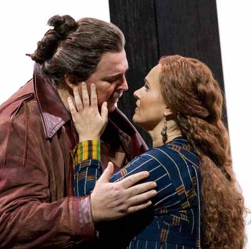
Tristan und Isolde {450}
Metropolitan Opera House; 11/28/2008
Debuts: Daniel Barenboim, Gerd Grochowski
Broadcast
Review |
[Met Performance] CID:352718
La Damnation de Faust {18}
Metropolitan Opera House; 11/29/2008
Broadcast |
[Met Performance] CID:352719
The Queen of Spades {62}
Metropolitan Opera House; 11/29/2008
|
[Met Performance] CID:352723
Don Giovanni {506}
Metropolitan Opera House; 12/01/2008
Debuts: Lothar Koenigs, Mark Thomsen |
[Met Performance] CID:352725
Tristan und Isolde {451}
Metropolitan Opera House; 12/02/2008
Broadcast |
[Met Performance] CID:352727
The Queen of Spades {63}
Metropolitan Opera House; 12/03/2008
Broadcast |
[Met Performance] CID:352730
La Damnation de Faust {19}
Metropolitan Opera House; 12/04/2008
Broadcast/Streamed |
[Met Performance] CID:352732
Don Giovanni {507}
Metropolitan Opera House; 12/05/2008
|
[Met Performance] CID:352733
Tristan und Isolde {452}
Metropolitan Opera House; 12/06/2008
Broadcast |
[Met Performance] CID:352734
The Queen of Spades {64}
Metropolitan Opera House; 12/06/2008
|
[Met Performance] CID:352738
New Production
Thaïs {64}
Metropolitan Opera House; 12/08/2008
Debuts: Alain Vernhes, Ginger Costa-Jackson, Zahra Hashemian, Sara Jo Slate
Broadcast/Streamed
Review |
[Met Performance] CID:352739
Don Giovanni {508}
Metropolitan Opera House; 12/09/2008
Broadcast |
[Met Performance] CID:352742
The Queen of Spades {65}
Metropolitan Opera House; 12/10/2008
|
[Met Performance] CID:352744
Thaïs {65}
Metropolitan Opera House; 12/11/2008
Broadcast |
[Met Performance] CID:352746
Tristan und Isolde {453}
Metropolitan Opera House; 12/12/2008
|
[Met Performance] CID:352747
The Queen of Spades {66}
Metropolitan Opera House; 12/13/2008
Broadcast |
[Met Performance] CID:352748
Don Giovanni {509}
Metropolitan Opera House; 12/13/2008
|
[Met Presentation] CID:354285
Daniel Barenboim, Piano Recital
Metropolitan Opera House; 12/14/2008
|
[Met Performance] CID:352749
La Bohème {1201}
Metropolitan Opera House; 12/15/2008
Debut: Susanna Phillips
Broadcast/Streamed |
[Met Performance] CID:352750
Tristan und Isolde {454}
Metropolitan Opera House; 12/16/2008
Broadcast |
[Met Performance] CID:352756
Thaïs {66}
Metropolitan Opera House; 12/17/2008
|
[Met Performance] CID:352758
La Bohème {1202}
Metropolitan Opera House; 12/18/2008
|
[Met Performance] CID:352765
Don Giovanni {510}
Metropolitan Opera House; 12/19/2008
Broadcast |
[Met Performance] CID:352766
Thaïs {67}
Metropolitan Opera House; 12/20/2008
HD Simulcast |
[Met Performance] CID:352767
Tristan und Isolde {455}
Metropolitan Opera House; 12/20/2008
|
[Met Performance] CID:352771
Die Zauberflöte {388}
Metropolitan Opera House; 12/22/2008
Debut: Nicole Cabell |
[Met Performance] CID:352768
La Bohème {1203}
Metropolitan Opera House; 12/22/2008
Broadcast |
[Met Performance] CID:352775
Thaïs {68}
Metropolitan Opera House; 12/23/2008
Broadcast |
[Met Performance] CID:352778
La Bohème {1204}
Metropolitan Opera House; 12/26/2008
|
[Met Performance] CID:352779
Die Zauberflöte {389}
Metropolitan Opera House; 12/27/2008
Broadcast/Streamed |
[Met Performance] CID:352781
Thaïs {69}
Metropolitan Opera House; 12/27/2008
|
[Met Performance] CID:352782
La Bohème {1205}
Metropolitan Opera House; 12/29/2008
|
[Met Performance] CID:352783
Die Zauberflöte {390}
Metropolitan Opera House; 12/30/2008
|
[Met Performance] CID:352784
Thaïs {70}
Metropolitan Opera House; 12/30/2008
Broadcast |
[Met Performance] CID:352794
Die Zauberflöte {391}
Metropolitan Opera House; 12/31/2008
|
[Met Performance] CID:352796
New Production
La Rondine {19}
Metropolitan Opera House; 12/31/2008
Debuts: Marius Brenciu, Elizabeth DeShong
Broadcast/Streamed
Review |
[Met Performance] CID:352795
Die Zauberflöte {392}
Metropolitan Opera House; 01/01/2009
Broadcast |
[Met Performance] CID:352797
Thaïs {71}
Metropolitan Opera House; 01/02/2009
|
[Met Performance] CID:352798
La Bohème {1206}
Metropolitan Opera House; 01/03/2009
Broadcast |
[Met Performance] CID:352799
La Rondine {20}
Metropolitan Opera House; 01/03/2009
|
[Met Performance] CID:352800
Thaïs {72}
Metropolitan Opera House; 01/05/2009
|
[Met Performance] CID:352805
La Bohème {1207}
Metropolitan Opera House; 01/06/2009
Broadcast |
[Met Performance] CID:352807
La Rondine {21}
Metropolitan Opera House; 01/07/2009
|
[Met Performance] CID:352809
Thaïs {73}
Metropolitan Opera House; 01/08/2009
Broadcast |
[Met Performance] CID:356792
Thaïs {73}
Metropolitan Opera House; 01/08/2009
Broadcast |
[Met Performance] CID:352817
Orfeo ed Euridice {87}
Metropolitan Opera House; 01/09/2009
Broadcast/Streamed |
[Met Performance] CID:352811
La Rondine {22}
Metropolitan Opera House; 01/10/2009
HD Simulcast |
[Met Performance] CID:352812
La Bohème {1208}
Metropolitan Opera House; 01/10/2009
|
[Met Concert/Gala] CID:352792
The MET Chamber Ensemble
Carnegie Hall, Zankel Hall, New York; 01/11/2009
|
[Met Performance] CID:352815
La Rondine {23}
Metropolitan Opera House; 01/13/2009
Broadcast/Streamed |
[Met Performance] CID:352810
Orfeo ed Euridice {88}
Metropolitan Opera House; 01/14/2009
Broadcast |
[Met Performance] CID:352820
Orfeo ed Euridice {89}
Metropolitan Opera House; 01/17/2009
|
[Met Performance] CID:352821
Orfeo ed Euridice {90}
Metropolitan Opera House; 01/20/2009
Broadcast/Streamed |
[Met Performance] CID:352826
Orfeo ed Euridice {91}
Metropolitan Opera House; 01/24/2009
HD Simulcast |
[Met Performance] CID:352828
Rigoletto {816}
Metropolitan Opera House; 01/24/2009
Debuts: Riccardo Frizza, Grazia Doronzio, Viktoria Vizin |
[Met Concert/Gala] CID:352829
The MET Orchestra
Carnegie Hall, New York; 01/25/2009
|
[Met Performance] CID:352830
Lucia di Lammermoor {577}
Metropolitan Opera House; 01/26/2009
Debut: Colin Lee |
[Met Performance] CID:352823
Rigoletto {817}
Metropolitan Opera House; 01/27/2009
Debut: George Gagnidze |
[Met Performance] CID:352831
Orfeo ed Euridice {92}
Metropolitan Opera House; 01/28/2009
Broadcast
Debut: Kazem Abdullah |
[Met Performance] CID:352838
Lucia di Lammermoor {578}
Metropolitan Opera House; 01/29/2009
|
[Met Performance] CID:352840
Eugene Onegin {129}
Metropolitan Opera House; 01/30/2009
Broadcast/Streamed |
[Met Performance] CID:352841
Rigoletto {818}
Metropolitan Opera House; 01/31/2009
Broadcast |
[Met Performance] CID:352842
Orfeo ed Euridice {93}
Metropolitan Opera House; 01/31/2009
|
[Met Performance] CID:352843
Eugene Onegin {130}
Metropolitan Opera House; 02/02/2009
|
[Met Performance] CID:352848
Lucia di Lammermoor {579}
Metropolitan Opera House; 02/03/2009
Broadcast |
[Met Performance] CID:352850
Rigoletto {819}
Metropolitan Opera House; 02/04/2009
|
[Met Performance] CID:352853
Eugene Onegin {131}
Metropolitan Opera House; 02/05/2009
Broadcast |
[Met Performance] CID:352856

Adriana Lecouvreur {67}
Metropolitan Opera House; 02/06/2009
Debut: Brian Frutiger
Broadcast/Streamed
Review |
[Met Performance] CID:352857
Lucia di Lammermoor {580}
Metropolitan Opera House; 02/07/2009
HD Simulcast |
[Met Performance] CID:352858
Rigoletto {820}
Metropolitan Opera House; 02/07/2009
|
[Met Performance] CID:352861
Eugene Onegin {132}
Metropolitan Opera House; 02/09/2009
|
[Met Performance] CID:352863
Adriana Lecouvreur {68}
Metropolitan Opera House; 02/10/2009
Broadcast |
[Met Performance] CID:352864
La Rondine {24}
Metropolitan Opera House; 02/11/2009
Broadcast |
[Met Performance] CID:352868
Rigoletto {821}
Metropolitan Opera House; 02/12/2009
Broadcast |
[Met Performance] CID:352869
Adriana Lecouvreur {69}
Metropolitan Opera House; 02/13/2009
|
[Met Performance] CID:352870
Eugene Onegin {133}
Metropolitan Opera House; 02/14/2009
Broadcast |
[Met Performance] CID:352871
La Rondine {25}
Metropolitan Opera House; 02/14/2009
|
[Met Performance] CID:353605
New Production
Il Trovatore {600}
Metropolitan Opera House; 02/16/2009
Debuts: David McVicar, Charles Edwards, Brigitte Reiffenstuel, Leah Hausman
Broadcast/Streamed
Review |
[Met Performance] CID:352879
Adriana Lecouvreur {70}
Metropolitan Opera House; 02/17/2009
|
[Met Performance] CID:352881
Eugene Onegin {134}
Metropolitan Opera House; 02/18/2009
Broadcast |
[Met Performance] CID:352884
La Rondine {26}
Metropolitan Opera House; 02/19/2009
Broadcast |
[Met Performance] CID:352887
Il Trovatore {601}
Metropolitan Opera House; 02/20/2009
|
[Met Performance] CID:352889
Adriana Lecouvreur {71}
Metropolitan Opera House; 02/21/2009
Broadcast |
[Met Performance] CID:352890
Eugene Onegin {135}
Metropolitan Opera House; 02/21/2009
|
[Met Concert/Gala] CID:352892
National Council Grand Finals Concert
Metropolitan Opera House; 02/22/2009
First appearance: Anthony Roth Costanzo, Paul Appleby, Kiri Deonarine, Nadine Sierra br>Broadcast |
[Met Performance] CID:352893
La Rondine {27}
Metropolitan Opera House; 02/23/2009
Debut: Katie Van Kooten
Broadcast |
[Met Performance] CID:352894
Il Trovatore {602}
Metropolitan Opera House; 02/24/2009
Broadcast |
[Met Performance] CID:352895
Adriana Lecouvreur {72}
Metropolitan Opera House; 02/25/2009
Broadcast/Streamed |
[Met Performance] CID:352904
La Rondine {28}
Metropolitan Opera House; 02/26/2009
|
[Met Performance] CID:352905
Madama Butterfly {827}
Metropolitan Opera House; 02/27/2009
|
[Met Performance] CID:352906
Il Trovatore {603}
Metropolitan Opera House; 02/28/2009
Broadcast |
[Met Performance] CID:352907
Adriana Lecouvreur {73}
Metropolitan Opera House; 02/28/2009
|
[Met Performance] CID:352908
New Production
La Sonnambula {66}
Metropolitan Opera House; 03/02/2009
Debut: Jeremy Galyon
Broadcast/Streamed |
[Met Performance] CID:352909
Madama Butterfly {828}
Metropolitan Opera House; 03/03/2009
Broadcast |
[Met Performance] CID:352915
Il Trovatore {604}
Metropolitan Opera House; 03/04/2009
|
[Met Performance] CID:352918
La Sonnambula {67}
Metropolitan Opera House; 03/06/2009
|
[Met Performance] CID:352920
Madama Butterfly {829}
Metropolitan Opera House; 03/07/2009
HD Simulcast |
[Met Performance] CID:352921
Il Trovatore {605}
Metropolitan Opera House; 03/07/2009
|
[Met Performance] CID:352925
Rusalka {16}
Metropolitan Opera House; 03/09/2009
Debuts: Aleksandrs Antonenko, Brenda Patterson
Broadcast/Streamed |
[Met Performance] CID:352927
Il Trovatore {606}
Metropolitan Opera House; 03/10/2009
Broadcast |
[Met Performance] CID:352928
La Sonnambula {68}
Metropolitan Opera House; 03/11/2009
Broadcast |
[Met Performance] CID:352933
Rusalka {17}
Metropolitan Opera House; 03/12/2009
|
[Met Performance] CID:352937
Il Trovatore {607}
Metropolitan Opera House; 03/13/2009
Debut: Philip Webb |
[Met Performance] CID:352940
Rusalka {18}
Metropolitan Opera House; 03/14/2009
Broadcast |
[Met Performance] CID:352939
La Sonnambula {69}
Metropolitan Opera House; 03/14/2009
|
[Met Concert/Gala] CID:352934
The 125th Anniversary Gala
Celebration of Plácido Domingo's 40 Years at the Met
Metropolitan Opera House; 03/15/2009
Broadcast / Streamed |
[Met Performance] CID:352945
Il Trovatore {608}
Metropolitan Opera House; 03/16/2009
|
[Met Performance] CID:352948
Rusalka {19}
Metropolitan Opera House; 03/17/2009
Broadcast |
[Met Performance] CID:352949
La Sonnambula {70}
Metropolitan Opera House; 03/18/2009
|
[Met Performance] CID:352952
Cavalleria Rusticana {664}
Pagliacci {706}
Metropolitan Opera House; 03/19/2009
Debuts: Pietro Rizzo, Alberto Mastromarino
Broadcast/Streamed |
[Met Performance] CID:353022
Il Trovatore {609}
Metropolitan Opera House; 03/20/2009
|
[Met Performance] CID:352956
La Sonnambula {71}
Metropolitan Opera House; 03/21/2009
HD Simulcast |
[Met Performance] CID:352954
Rusalka {20}
Metropolitan Opera House; 03/21/2009
|
[Met Performance] CID:352958
Cavalleria Rusticana {665}
Pagliacci {707}
Metropolitan Opera House; 03/23/2009
|
[Met Performance] CID:352962
La Sonnambula {72}
Metropolitan Opera House; 03/24/2009
Broadcast |
[Met Performance] CID:352963
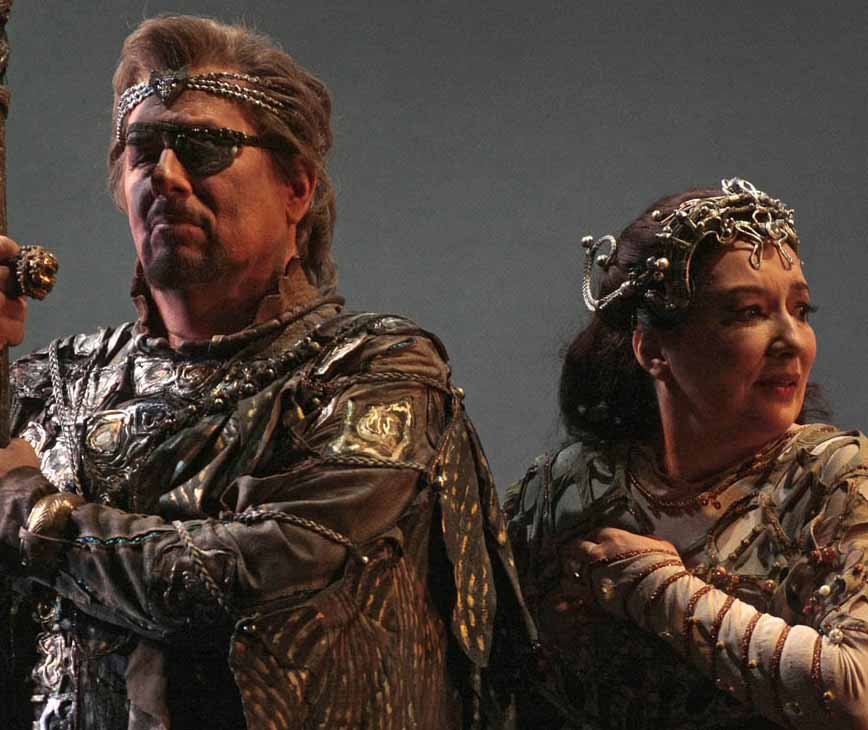
Das Rheingold {151}
Metropolitan Opera House; 03/25/2009
Broadcast/Streamed |
[Met Performance] CID:352964
Cavalleria Rusticana {666}
Pagliacci {708}
Metropolitan Opera House; 03/26/2009
Broadcast |
[Met Performance] CID:352971
Das Rheingold {152}
Ring Cycle [106] Uncut
Metropolitan Opera House; 03/28/2009
Broadcast |
[Met Performance] CID:352969
La Sonnambula {73}
Metropolitan Opera House; 03/28/2009
|
[Met Performance] CID:352972
Cavalleria Rusticana {667}
Pagliacci {709}
Metropolitan Opera House; 03/30/2009
|
[Met Performance] CID:352973
L'Elisir d'Amore {253}
Metropolitan Opera House; 03/31/2009
Broadcast/Streamed |
[Met Performance] CID:352980
Rigoletto {822}
Metropolitan Opera House; 04/01/2009
Broadcast |
[Met Performance] CID:352981
Cavalleria Rusticana {668}
Pagliacci {710}
Metropolitan Opera House; 04/02/2009
Broadcast |
[Met Performance] CID:352983
La Sonnambula {74}
Metropolitan Opera House; 04/03/2009
|
[Met Performance] CID:352984
L'Elisir d'Amore {254}
Metropolitan Opera House; 04/04/2009
Broadcast |
[Met Performance] CID:352985
Rigoletto {823}
Metropolitan Opera House; 04/04/2009
|
[Met Performance] CID:352988
Die Walküre {521}
Metropolitan Opera House; 04/06/2009
Debut: Iréne Theorin
Broadcast/Streamed |
[Met Performance] CID:352990
Cavalleria Rusticana {669}
Pagliacci {711}
Metropolitan Opera House; 04/07/2009
Broadcast |
[Met Performance] CID:352996
L'Elisir d'Amore {255}
Metropolitan Opera House; 04/08/2009
|
[Met Performance] CID:352997
Rigoletto {824}
Metropolitan Opera House; 04/09/2009
Broadcast |
[Met Performance] CID:353000
Cavalleria Rusticana {670}
Pagliacci {712}
Metropolitan Opera House; 04/10/2009
|
[Met Performance] CID:353002
Die Walküre {522}
Ring Cycle [106] Uncut
Metropolitan Opera House; 04/11/2009
Broadcast |
[Met Performance] CID:353011
L'Elisir d'Amore {256}
Metropolitan Opera House; 04/11/2009
|
[Met Performance] CID:353004
Don Giovanni {511}
Metropolitan Opera House; 04/13/2009
Debuts: Erin Wall, Pavol Breslik, Shenyang |
[Met Performance] CID:353009
Rigoletto {825}
Metropolitan Opera House; 04/14/2009
Broadcast |
[Met Performance] CID:353003
L'Elisir d'Amore {257}
Metropolitan Opera House; 04/15/2009
Broadcast |
[Met Performance] CID:353010
Don Giovanni {512}
Metropolitan Opera House; 04/16/2009
Broadcast |
[Met Performance] CID:353012
Rigoletto {826}
Metropolitan Opera House; 04/17/2009
|
[Met Performance] CID:353013
Siegfried {260}
Ring Cycle [106] Uncut
Metropolitan Opera House; 04/18/2009
Debut: Christian Franz
Broadcast/Streamed |
[Met Performance] CID:353014
L'Elisir d'Amore {258}
Metropolitan Opera House; 04/18/2009
|
[Met Performance] CID:353017
Don Giovanni {513}
Metropolitan Opera House; 04/20/2009
Broadcast |
[Met Performance] CID:353023
Il Trovatore {610}
Metropolitan Opera House; 4/21/2009
|
[Met Performance] CID:353024
L'Elisir d'Amore {259}
Metropolitan Opera House; 04/22/2009
Broadcast |
[Met Performance] CID:353025
Das Rheingold {153}
Metropolitan Opera House; 04/23/2009
Broadcast |
[Met Performance] CID:353030
Don Giovanni {514}
Metropolitan Opera House; 04/24/2009
Samuel Ramey's 25th Anniversary |
[Met Performance] CID:353032
Götterdämmerung {223}
Ring Cycle [106] Uncut
Metropolitan Opera House; 04/25/2009
Debut: Iain Paterson
Broadcast/Streamed |
[Met Performance] CID:353031
Il Trovatore {611}
Metropolitan Opera House; 4/25/2009
|
[Met Performance] CID:353033
Das Rheingold {154}
Ring Cycle [107] Uncut
Metropolitan Opera House; 04/27/2009
|
[Met Performance] CID:353034
Die Walküre {523}
Ring Cycle [107] Uncut
Metropolitan Opera House; 04/28/2009
Broadcast |
[Met Performance] CID:353035
Il Trovatore {612}
Metropolitan Opera House; 04/29/2009
|
[Met Performance] CID:353040
Siegfried {261}
Ring Cycle [107] Uncut
Metropolitan Opera House; 04/30/2009
Broadcast |
[Met Performance] CID:353041
La Cenerentola {30}
Metropolitan Opera House; 05/01/2009
Broadcast/Streamed |
[Met Performance] CID:353042
Il Trovatore {613}
Metropolitan Opera House; 05/02/2009
|
[Met Performance] CID:353043
Götterdämmerung {224}
Ring Cycle [107] Uncut
Metropolitan Opera House; 05/02/2009
Broadcast |
[Met Performance] CID:353044
Das Rheingold {155}
Ring Cycle [108] Uncut
Metropolitan Opera House; 05/04/2009
Broadcast |
[Met Performance] CID:353052
Die Walküre {524}
Ring Cycle [108] Uncut
Metropolitan Opera House; 05/05/2009
Broadcast |
[Met Performance] CID:353053
La Cenerentola {31}
Metropolitan Opera House; 05/06/2009
Broadcast/Streamed |
[Met Performance] CID:353054
Siegfried {262}
Ring Cycle [108] Uncut
Metropolitan Opera House; 05/07/2009
Broadcast |
[Met Performance] CID:353055
Il Trovatore {614}
Metropolitan Opera House; 05/08/2009
|
[Met Performance] CID:353056
La Cenerentola {32}
Metropolitan Opera House; 05/09/2009
HD Simulcast |
[Met Performance] CID:353057
Götterdämmerung {225}
Ring Cycle [108] Uncut
Metropolitan Opera House; 05/09/2009
|
[Met Concert/Gala] CID:353065
The MET Orchestra
Carnegie Hall, New York; 05/21/2009
|
[Met Concert/Gala] CID:353059
The Met's Summer Recital Series:
SummerStage
New York, Manhattan, Central Park; 07/13/2009
|
[Met Concert/Gala] CID:353060
The Met's Summer Recital Series
New York, Bronx, Crotona Park; 07/17/2009
|
[Met Concert/Gala] CID:353061
The Met's Summer Recital Series
New York, Queens, Queensbridge Park; 07/24/2009
|
[Met Concert/Gala] CID:353063
Cancelled Performance
New York, Manhattan, East River Park; 07/31/2009
A scheduled performance of The Met's Summer Recital Series was cancelled due to rain. |
[Met Concert/Gala] CID:353064
The Met's Summer Recital Series
New York, Brooklyn, Coffey Park; 08/14/2009
|
[Met Performance] CID:353073
New Production
Tosca {892}
Metropolitan Opera House; 09/21/2009
Opening Night {125}
Debuts: Luc Bondy, Richard Peduzzi, Jonathan A. Makepeace
Broadcast/Streamed/Times Squarecast/Plazacast |
[Met Performance] CID:353075
Le Nozze di Figaro {442}
Metropolitan Opera House; 09/22/2009
Debuts: Dan Ettinger, Emma Bell, Jennifer Johnson Cano
Broadcast |
[Met Performance] CID:353076
Die Zauberflöte {393}
Metropolitan Opera House; 09/23/2009
Debuts: Bernard Labadie, Matthias Klink, Jamie Barton, Georg Zeppenfeld
Broadcast |
[Met Performance] CID:353078
Tosca {893}
Metropolitan Opera House; 09/24/2009
|
[Met Performance] CID:353080
Die Zauberflöte {394}
Metropolitan Opera House; 09/26/2009
|
[Met Performance] CID:353081
Le Nozze di Figaro {443}
Metropolitan Opera House; 09/26/2009
|
[Met Performance] CID:353082
Tosca {894}
Metropolitan Opera House; 09/28/2009
|
[Met Performance] CID:353087
Die Zauberflöte {395}
Metropolitan Opera House; 09/30/2009
|
[Met Performance] CID:353089
Le Nozze di Figaro {444}
Metropolitan Opera House; 10/01/2009
|
[Met Performance] CID:353094

Aida {1104}
Metropolitan Opera House; 10/02/2009
Debuts: Alexei Ratmansky, Stefan Kocán, Adam Laurence Herskowitz
Broadcast/Streamed |
[Met Performance] CID:353095
Tosca {895}
Metropolitan Opera House; 10/03/2009
|
[Met Performance] CID:353096
Il Barbiere di Siviglia {575}
Metropolitan Opera House; 10/03/2009
Debuts: Edward Parks, Kathleen Smith Belcher
Broadcast |
[Met Performance] CID:353097
Le Nozze di Figaro {445}
Metropolitan Opera House; 10/05/2009
Broadcast/Streamed |
[Met Performance] CID:353098
Tosca {896}
Metropolitan Opera House; 10/06/2009
Broadcast |
[Met Performance] CID:353106
Aida {1105}
Metropolitan Opera House; 10/07/2009
|
[Met Performance] CID:353107
Il Barbiere di Siviglia {576}
Metropolitan Opera House; 10/08/2009
Broadcast |
[Met Performance] CID:353108
Le Nozze di Figaro {446}
Metropolitan Opera House; 10/09/2009
|
[Met Performance] CID:353110
Tosca {897}
Metropolitan Opera House; 10/10/2009
HD Simulcast |
[Met Performance] CID:353109
Il Barbiere di Siviglia {577}
Metropolitan Opera House; 10/10/2009
Debut: Christophoros Stamboglis |
[Met Performance] CID:353111
Aida {1106}
Metropolitan Opera House; 10/12/2009
Broadcast |
[Met Performance] CID:353112

Der Rosenkavalier {370}
Metropolitan Opera House; 10/13/2009
Debut: Miah Persson, Rodell Rosel, Nicholas Crawford
Broadcast/Streamed |
[Met Performance] CID:353117
Tosca {898}
Metropolitan Opera House; 10/14/2009
Broadcast |
[Met Performance] CID:353118
Il Barbiere di Siviglia {578}
Metropolitan Opera House; 10/15/2009
|
[Met Performance] CID:353120
Der Rosenkavalier {371}
Metropolitan Opera House; 10/16/2009
|
[Met Performance] CID:353121
Aida {1107}
Metropolitan Opera House; 10/17/2009
|
[Met Performance] CID:353123
Tosca {899}
Metropolitan Opera House; 10/17/2009
|
[Met Performance] CID:353124
Der Rosenkavalier {372}
Metropolitan Opera House; 10/19/2009
Broadcast |
[Met Performance] CID:353125
Aida {1108}
Metropolitan Opera House; 10/21/2009
Broadcast
|
[Met Performance] CID:353133
Der Rosenkavalier {373}
Metropolitan Opera House; 10/22/2009
|
[Met Performance] CID:353135
La Damnation de Faust {20}
Metropolitan Opera House; 10/23/2009
Broadcast/Streamed |
[Met Performance] CID:353136
Aida {1109}
Metropolitan Opera House; 10/24/2009
HD Simulcast |
[Met Performance] CID:353137
Il Barbiere di Siviglia {579}
Metropolitan Opera House; 10/24/2009
|
[Met Performance] CID:353138
La Damnation de Faust {21}
Metropolitan Opera House; 10/26/2009
|
[Met Performance] CID:353142
Il Barbiere di Siviglia {580}
Metropolitan Opera House; 10/27/2009
Broadcast |
[Met Performance] CID:353144
Turandot {271}
Metropolitan Opera House; 10/28/2009
Debuts: Andris Nelsons, Lise Lindstrom, Joshua Hopkins, Antonio de Marco, Alexandra Gonzalez
Broadcast/Streamed |
[Met Performance] CID:353145
Aida {1110}
Metropolitan Opera House; 10/29/2009
Debuts: Diego Torre, Laura Feig, Aaron Loux |
[Met Performance] CID:353149
La Damnation de Faust {22}
Metropolitan Opera House; 10/30/2009
Broadcast |
[Met Performance] CID:353150
Il Barbiere di Siviglia {581}
Metropolitan Opera House; 10/31/2009
|
[Met Performance] CID:353151

Turandot {272}
Metropolitan Opera House; 10/31/2009
|
[Met Performance] CID:353152
Aida {1111}
Metropolitan Opera House; 11/02/2009
Broadcast |
[Met Performance] CID:353153
Turandot {273}
Metropolitan Opera House; 11/03/2009
Broadcast |
[Met Performance] CID:353158
Il Barbiere di Siviglia {582}
Metropolitan Opera House; 11/04/2009
Broadcast/Streamed |
[Met Performance] CID:353160
La Damnation de Faust {23}
Metropolitan Opera House; 11/05/2009
|
[Met Performance] CID:353161
Aida {1112}
Metropolitan Opera House; 11/06/2009
|
[Met Performance] CID:353162
Turandot {274}
Metropolitan Opera House; 11/07/2009
HD Simulcast |
[Met Performance] CID:353163
Il Barbiere di Siviglia {583}
Metropolitan Opera House; 11/07/2009
|
[Met Performance] CID:353164
La Damnation de Faust {24}
Metropolitan Opera House; 11/09/2009
Broadcast |
[Met Performance] CID:353166
Turandot {275}
Metropolitan Opera House; 11/10/2009
Broadcast |
[Met Performance] CID:353170
Metropolitan Opera Premiere
From the House of the Dead {1}
Metropolitan Opera House; 11/12/2009
Debuts: Esa-Pekka Salonen, Patrice Chéreau, Thierry Thieû Niang, Caroline de Vivaise, Bertrand Couderc, Eric Stoklossa, Stefan Margita, Vladimir Chmelo, Scott Scully, Ales Jenis, Marian Pavlovic, Peter Hoare, Andreas Conrad
Broadcast/Streamed
Review |
[Met Performance] CID:353173
La Damnation de Faust {25}
Metropolitan Opera House; 11/14/2009
|
[Met Performance] CID:353174
Turandot {276}
Metropolitan Opera House; 11/14/2009
|
[Met Performance] CID:353175
From the House of the Dead {2}
Metropolitan Opera House; 11/16/2009
Broadcast |
[Met Performance] CID:353179
La Damnation de Faust {26}
Metropolitan Opera House; 11/17/2009
Broadcast |
[Met Performance] CID:353182
Turandot {277}
Metropolitan Opera House; 11/18/2009
Debut: Frank Porretta |
[Met Performance] CID:353178
Il Trittico {68}
Il Tabarro {74}
Suor Angelica {68}
Gianni Schicchi {132}
Metropolitan Opera House; 11/20/2009
Debut: Stefano Ranzani, Saimir Pirgu, Neel Ram Nagarajan, Joyce El-Khoury
Broadcast/Streamed
Review |
[Met Performance] CID:353188
Turandot {278}
Metropolitan Opera House; 11/21/2009
|
[Met Performance] CID:353187
From the House of the Dead {3}
Metropolitan Opera House; 11/21/2009
|
[Met Performance] CID:353189
Le Nozze di Figaro {447}
Metropolitan Opera House; 11/23/2009
Debut: Annette Dasch |
[Met Performance] CID:353194
From the House of the Dead {4}
Metropolitan Opera House; 11/24/2009
Broadcast |
[Met Performance] CID:353196
Il Trittico {69}
Il Tabarro {75}
Suor Angelica {69}
Gianni Schicchi {133}
Metropolitan Opera House; 11/25/2009
Broadcast |
[Met Performance] CID:353197
Le Nozze di Figaro {448}
Metropolitan Opera House; 11/27/2009
Broadcast/Streamed |
[Met Performance] CID:353199
Il Trittico {70}
Il Tabarro {76}
Suor Angelica {70}
Gianni Schicchi {134}
Metropolitan Opera House; 11/28/2009
Debut: Levi Hernandez |
[Met Performance] CID:353198
From the House of the Dead {5}
Metropolitan Opera House; 11/28/2009
|
[Met Performance] CID:353200
Le Nozze di Figaro {449}
Metropolitan Opera House; 11/30/2009
Broadcast |
[Met Performance] CID:353205
Il Trittico {71}
Il Tabarro {77}
Suor Angelica {71}
Gianni Schicchi {135}
Metropolitan Opera House; 12/01/2009
|
[Met Performance] CID:353207
From the House of the Dead {6}
Metropolitan Opera House; 12/02/2009
Broadcast |
[Met Performance] CID:353209
New Production
Les Contes d'Hoffmann {241}
Metropolitan Opera House; 12/03/2009
Debut: Michael Todd Simpson
Broadcast/Streamed |
[Met Performance] CID:353210
Le Nozze di Figaro {450}
Metropolitan Opera House; 12/04/2009
|
[Met Performance] CID:353211
From the House of the Dead {7}
Metropolitan Opera House; 12/05/2009
|
[Met Performance] CID:353212
Il Trittico {72}
Il Tabarro {78}
Suor Angelica {72}
Gianni Schicchi {136}
Metropolitan Opera House; 12/05/2009
|
[Met Concert/Gala] CID:353214
The MET Chamber Ensemble
Carnegie Hall, Weill Recital Hall, New York; 12/06/2009
|
[Met Performance] CID:353215
Les Contes d'Hoffmann {242}
Metropolitan Opera House; 12/07/2009
|
[Met Performance] CID:353219
Le Nozze di Figaro {451}
Metropolitan Opera House; 12/08/2009
|
[Met Performance] CID:353220
Il Trittico {73}
Il Tabarro {79}
Suor Angelica {73}
Gianni Schicchi {137}
Metropolitan Opera House; 12/09/2009
|
[Met Performance] CID:353222
Elektra {96}
Metropolitan Opera House; 12/10/2009
Debuts: Susan Bullock, Heidi Melton, Kevin Burdette
Broadcast/Streamed |
[Met Performance] CID:353225
Les Contes d'Hoffmann {243}
Metropolitan Opera House; 12/11/2009
Broadcast |
[Met Performance] CID:353227
Il Trittico {74}
Il Tabarro {80}
Suor Angelica {74}
Gianni Schicchi {138}
Metropolitan Opera House; 12/12/2009
Broadcast |
[Met Performance] CID:353226
Le Nozze di Figaro {452}
Metropolitan Opera House; 12/12/2009
|
[Met Performance] CID:353228
Hänsel und Gretel {249}
Metropolitan Opera House; 12/14/2009
Broadcast/Streamed |
[Met Performance] CID:353237
Elektra {97}
Metropolitan Opera House; 12/15/2009
Broadcast |
[Met Performance] CID:353248
Les Contes d'Hoffmann {244}
Metropolitan Opera House; 12/16/2009
|
[Met Performance] CID:353240
Hänsel und Gretel {250}
Metropolitan Opera House; 12/17/2009
|
[Met Performance] CID:353246
Elektra {98}
Metropolitan Opera House; 12/18/2009
|
[Met Performance] CID:353239
Les Contes d'Hoffmann {245}
Metropolitan Opera House; 12/19/2009
HD Simulcast |
[Met Performance] CID:353247
Hänsel und Gretel {251}
Metropolitan Opera House; 12/19/2009
|
[Met Concert/Gala] CID:353249
The MET Orchestra
Carnegie Hall, New York; 12/20/2009
|
[Met Performance] CID:353251
Hänsel und Gretel {252}
Metropolitan Opera House; 12/21/2009
Broadcast |
[Met Performance] CID:353255
Elektra {99}
Metropolitan Opera House; 12/22/2009
|
[Met Performance] CID:353259
Les Contes d'Hoffmann {246}
Metropolitan Opera House; 12/23/2009
Debut: Rachele Gilmore
Broadcast/Streamed |
[Met Performance] CID:353261
Hänsel und Gretel {253}
Metropolitan Opera House; 12/24/2009
|
[Met Performance] CID:353266
Elektra {100}
Metropolitan Opera House; 12/26/2009
Broadcast |
[Met Performance] CID:353263
Les Contes d'Hoffmann {247}
Metropolitan Opera House; 12/26/2009
|
[Met Performance] CID:353264
Hänsel und Gretel {254}
Metropolitan Opera House; 12/28/2009
|
[Met Performance] CID:353265
Elektra {101}
Metropolitan Opera House; 12/29/2009
|
[Met Performance] CID:353267
Hänsel und Gretel {255}
Metropolitan Opera House; 12/30/2009
|
[Met Performance] CID:353268
Les Contes d'Hoffmann {248}
Metropolitan Opera House; 12/30/2009
Debut: David Pomeroy
Broadcast |
[Met Performance] CID:353274
New Production
Carmen {946}
Metropolitan Opera House; 12/31/2009
Debuts: Yannick Nézet-Séguin, Richard Eyre, Rob Howell, Irene Bohan, Elizabeth Caballero, Maria Kowroski, Martin Harvey
Broadcast |
[Met Performance] CID:353270
Der Rosenkavalier {374}
Metropolitan Opera House; 01/01/2010
Debut: Erica Strauss |
[Met Performance] CID:353272
Hänsel und Gretel {256}
Metropolitan Opera House; 01/02/2010
Broadcast |
[Met Performance] CID:353273
Les Contes d'Hoffmann {249}
Metropolitan Opera House; 01/02/2010
|
[Met Performance] CID:353275
Turandot {279}
Metropolitan Opera House; 01/04/2010
|
[Met Performance] CID:353279
Carmen {947}
Metropolitan Opera House; 01/05/2010
Debuts: Ashley Tuttle, Keith Roberts |
[Met Performance] CID:353285
Der Rosenkavalier {375}
Metropolitan Opera House; 01/06/2010
Broadcast/Streamed |
[Met Performance] CID:353289
Turandot {280}
Metropolitan Opera House; 01/07/2010
Broadcast |
[Met Performance] CID:353291
Carmen {948}
Metropolitan Opera House; 01/08/2010
|
[Met Performance] CID:353293
Der Rosenkavalier {376}
Metropolitan Opera House; 01/09/2010
HD Simulcast |
[Met Performance] CID:353292
Turandot {281}
Metropolitan Opera House; 01/09/2010
|
[Met Concert/Gala] CID:353287
The MET Chamber Ensemble
Carnegie Hall, Zankel Hall, New York; 01/10/2010
|
[Met Performance] CID:353294
Stiffelio {18}
Metropolitan Opera House; 01/11/2010
Debut: Michael Fabiano
Broadcast/Streamed |
[Met Performance] CID:353295
Carmen {949}
Metropolitan Opera House; 01/12/2010
Broadcast |
[Met Performance] CID:353302
Turandot {282}
Metropolitan Opera House; 01/13/2010
|
[Met Performance] CID:353305
Stiffelio {19}
Metropolitan Opera House; 01/14/2010
|
[Met Performance] CID:353309
Der Rosenkavalier {377}
Metropolitan Opera House; 01/15/2010
|
[Met Performance] CID:353311
Carmen {950}
Metropolitan Opera House; 01/16/2010
HD Simulcast |
[Met Performance] CID:353310
Turandot {283}
Metropolitan Opera House; 01/16/2010
|
[Met Performance] CID:353312
Simon Boccanegra {129}
Metropolitan Opera House; 01/18/2010
Broadcast/Streamed |
[Met Performance] CID:353315
Stiffelio {20}
Metropolitan Opera House; 01/19/2010
|
[Met Performance] CID:353317
Turandot {284}
Metropolitan Opera House; 01/20/2010
Broadcast |
[Met Performance] CID:353318
Carmen {951}
Metropolitan Opera House; 01/21/2010
Broadcast |
[Met Performance] CID:353322
Simon Boccanegra {130}
Metropolitan Opera House; 01/22/2010
|
[Met Performance] CID:353323
Turandot {285}
Metropolitan Opera House; 01/23/2010
|
[Met Performance] CID:353324
Stiffelio {21}
Metropolitan Opera House; 01/23/2010
|
[Met Concert/Gala] CID:353300
The MET Orchestra
Carnegie Hall, New York; 01/24/2010
|
[Met Performance] CID:353325
Simon Boccanegra {131}
Metropolitan Opera House; 01/25/2010
Broadcast |
[Met Performance] CID:353329
Stiffelio {22}
Metropolitan Opera House; 01/26/2010
|
[Met Performance] CID:353331
Carmen {952}
Metropolitan Opera House; 01/27/2010
Debuts: Alain Altinoglu, Brandon Jovanovich |
[Met Performance] CID:353333
Turandot {286}
Metropolitan Opera House; 01/28/2010
Debut: Julien Salemkour
Broadcast/Streamed |
[Met Performance] CID:353334
Simon Boccanegra {132}
Metropolitan Opera House; 01/29/2010
|
[Met Performance] CID:353335
Stiffelio {23}
Metropolitan Opera House; 01/30/2010
Broadcast |
[Met Performance] CID:353337
Carmen {953}
Metropolitan Opera House; 01/30/2010
|
[Met Performance] CID:353339
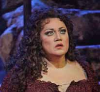
Carmen {954}
Metropolitan Opera House; 02/01/2010
Broadcast |
[Met Performance] CID:353345
Simon Boccanegra {133}
Metropolitan Opera House; 02/02/2010
Broadcast |
[Met Performance] CID:353348
Ariadne auf Naxos {84}
Metropolitan Opera House; 02/04/2010
Debuts: Jochen Schmeckenbecher, Markus Werba
Broadcast/Streamed |
[Met Performance] CID:353350
Carmen {955}
Metropolitan Opera House; 02/05/2010
|
[Met Performance] CID:353351
Simon Boccanegra {134}
Metropolitan Opera House; 02/06/2010
HD Simulcast |
[Met Performance] CID:353352
La Fille du Régiment {97}
Metropolitan Opera House; 02/06/2010
|
[Met Performance] CID:353353
Ariadne auf Naxos {85}
Metropolitan Opera House; 02/08/2010
Debut: Lance Ryan
Broadcast |
[Met Performance] CID:353357
Carmen {956}
Metropolitan Opera House; 02/09/2010
Debut: Liam Bonner
Broadcast/Streamed |
[Met Performance] CID:353358
La Fille du Régiment {98}
Metropolitan Opera House; 02/10/2010
|
[Met Performance] CID:353359
Ariadne auf Naxos {86}
Metropolitan Opera House; 02/11/2010
|
[Met Performance] CID:353365
La Fille du Régiment {99}
Metropolitan Opera House; 02/13/2010
Broadcast |
[Met Performance] CID:353366
Carmen {957}
Metropolitan Opera House; 02/13/2010
|
[Met Performance] CID:353367
Ariadne auf Naxos {87}
Metropolitan Opera House; 02/15/2010
|
[Met Performance] CID:353369
La Fille du Régiment {100}
Metropolitan Opera House; 02/16/2010
Broadcast/Streamed |
[Met Performance] CID:353371
La Fille du Régiment {101}
Metropolitan Opera House; 02/19/2010
|
[Met Performance] CID:353372
Ariadne auf Naxos {88}
Metropolitan Opera House; 02/20/2010
Broadcast |
[Met Performance] CID:353373
La Bohème {1209}
Metropolitan Opera House; 02/20/2010
Debut: Massimo Cavalletti |
[Met Performance] CID:353375
La Fille du Régiment {102}
Metropolitan Opera House; 02/22/2010
Broadcast |
[Met Performance] CID:353381
Metropolitan Opera Premiere
Attila {1}
Metropolitan Opera House; 02/23/2010
Debuts: Riccardo Muti, Giovanni Meoni, Pierre Audi, Miuccia Prada, Herzog & de Meuron, Robby Duiveman
Review |
[Met Performance] CID:353383
La Bohème {1210}
Metropolitan Opera House; 02/24/2010
Broadcast/Streamed |
[Met Performance] CID:353384
Il Barbiere di Siviglia {584}
Metropolitan Opera House; 02/26/2010
|
[Met Performance] CID:353385
La Bohème {1211}
Metropolitan Opera House; 02/27/2010
Broadcast |
[Met Performance] CID:353386
Attila {2}
Metropolitan Opera House; 02/27/2010
|
[Met Performance] CID:353389
Il Barbiere di Siviglia {585}
Metropolitan Opera House; 03/01/2010
Broadcast |
[Met Performance] CID:353390
La Bohème {1212}
Metropolitan Opera House; 03/02/2010
Broadcast |
[Met Performance] CID:353393
Attila {3}
Metropolitan Opera House; 03/03/2010
|
[Met Performance] CID:353397
Il Barbiere di Siviglia {586}
Metropolitan Opera House; 03/04/2010
|
[Met Performance] CID:353395
Metropolitan Opera Premiere
The Nose {1}
Metropolitan Opera House; 03/05/2010
Debuts: Paulo Szot, William Kentridge, Sabine Theunissen, Greta Goiris, Urs Schönebaum, Luc De Wit, Catherine Meyburgh, Andrey Popov, Gordon Gietz, Sergei Skorokhodov, Brian Kontes, Grigory Soloviov, Jeffrey Behrens, Vassily Gorshkov
Broadcast/Streamed
Review |
[Met Performance] CID:353399
Attila {4}
Metropolitan Opera House; 03/06/2010
Broadcast |
[Met Performance] CID:353400
La Bohème {1213}
Metropolitan Opera House; 03/06/2010
|
[Met Performance] CID:353408
Attila {5}
Metropolitan Opera House; 03/09/2010
|
[Met Performance] CID:353410
La Bohème {1214}
Metropolitan Opera House; 03/10/2010
Debut: George Petean
Broadcast/Streamed |
[Met Performance] CID:353413
The Nose {2}
Metropolitan Opera House; 03/11/2010
|
[Met Performance] CID:353415
Attila {6}
Metropolitan Opera House; 03/12/2010
|
[Met Performance] CID:353416
The Nose {3}
Metropolitan Opera House; 03/13/2010
Broadcast |
[Met Performance] CID:353417
La Bohème {1215}
Metropolitan Opera House; 03/13/2010
|
[Met Concert/Gala] CID:353418
National Council Grand Finals Concert
Metropolitan Opera House; 03/14/2010
First appearance: Haeran Hong, Lori Guilbeau
Broadcast |
[Met Performance] CID:353422
Attila {7}
Metropolitan Opera House; 03/15/2010
|
[Met Performance] CID:353424
New Production
Hamlet {10}
Metropolitan Opera House; 03/16/2010
Debuts: Patrice Caurier, Moshe Leiser, Christian Fenouillat, Agostino Cavalca, Christophe Forey, Toby Spence, Maxim Mikhailov, Peter Richards, Joshua Wynter, Christian Rozakis
Broadcast/Streamed
Review |
[Met Performance] CID:353426
La Bohème {1216}
Metropolitan Opera House; 03/17/2010
Broadcast |
[Met Performance] CID:353428
The Nose {4}
Metropolitan Opera House; 03/18/2010
Broadcast |
[Met Performance] CID:353432
Attila {8}
Metropolitan Opera House; 03/19/2010
|
[Met Performance] CID:353434
La Bohème {1217}
Metropolitan Opera House; 03/20/2010
|
[Met Performance] CID:353435
Hamlet {11}
Metropolitan Opera House; 03/20/2010
|
[Met Performance] CID:353437
Attila {9}
Metropolitan Opera House; 03/22/2010
Broadcast |
[Met Performance] CID:353441
The Nose {5}
Metropolitan Opera House; 03/23/2010
|
[Met Performance] CID:353444
Hamlet {12}
Metropolitan Opera House; 03/24/2010
Broadcast/Streamed |
[Met Performance] CID:353445
The Nose {6}
Metropolitan Opera House; 03/25/2010
Debut: Pavel Smelkov |
[Met Performance] CID:353447
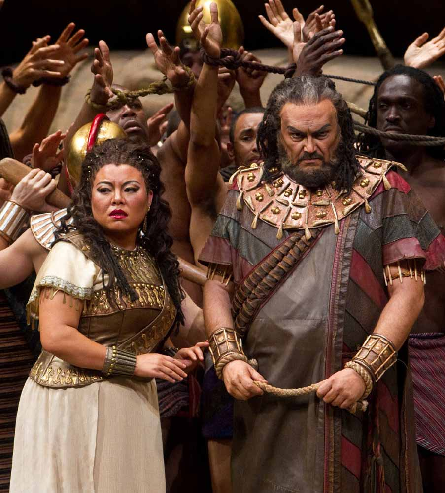
Aida {1113}
Metropolitan Opera House; 03/26/2010
Debut: Hui He |
[Met Performance] CID:353449
Hamlet {13}
Metropolitan Opera House; 03/27/2010
HD Simulcast |
[Met Performance] CID:353459
Attila {10}
Metropolitan Opera House; 03/27/2010
|
[Met Performance] CID:353450
La Traviata {953}
Metropolitan Opera House; 03/29/2010
Debut: James Valenti
Broadcast/Streamed |
[Met Performance] CID:353456
Hamlet {14}
Metropolitan Opera House; 03/30/2010
Broadcast |
[Met Performance] CID:353460
Aida {1114}
Metropolitan Opera House; 03/31/2010
|
[Met Performance] CID:353461
Die Zauberflöte {396}
Metropolitan Opera House; 04/01/2010
Debuts: Julia Kleiter, Albina Shagimuratova, Hans-Peter König |
[Met Performance] CID:353463
Hamlet {15}
Metropolitan Opera House; 04/02/2010
|
[Met Performance] CID:353464
Aida {1115}
Metropolitan Opera House; 04/03/2010
Broadcast |
[Met Performance] CID:353465
La Traviata {954}
Metropolitan Opera House; 04/03/2010
|
[Met Performance] CID:353470
Hamlet {16}
Metropolitan Opera House; 04/05/2010
Debut: Jane Archibald
Broadcast/Streamed |
[Met Performance] CID:353471
Die Zauberflöte {397}
Metropolitan Opera House; 04/06/2010
|
[Met Performance] CID:353473
La Traviata {955}
Metropolitan Opera House; 04/07/2010
Debut: Steven White
Broadcast |
[Met Performance] CID:353475
Die Zauberflöte {398}
Metropolitan Opera House; 04/08/2010
|
[Met Performance] CID:353477
Hamlet {17}
Metropolitan Opera House; 04/09/2010
|
[Met Performance] CID:353478
Die Zauberflöte {399}
Metropolitan Opera House; 04/10/2010
Broadcast |
[Met Performance] CID:353480
La Traviata {956}
Metropolitan Opera House; 04/10/2010
|
[Met Performance] CID:353483
Metropolitan Opera Premiere
Armida {1}
Metropolitan Opera House; 04/12/2010
Debut: Graciela Daniele, Yeghishe Manucharyan, Teele Ude
Broadcast/Streamed
Review |
[Met Performance] CID:353488
La Traviata {957}
Metropolitan Opera House; 04/13/2010
|
[Met Performance] CID:353490
Tosca {900}
Metropolitan Opera House; 04/14/2010
|
[Met Performance] CID:353491
Die Zauberflöte {400}
Metropolitan Opera House; 04/15/2010
Broadcast |
[Met Performance] CID:353494
Armida {2}
Metropolitan Opera House; 04/16/2010
Broadcast |
[Met Performance] CID:353495
La Traviata {958}
Metropolitan Opera House; 04/17/2010
Broadcast |
[Met Performance] CID:353496
Tosca {901}
Metropolitan Opera House; 04/17/2010
|
[Met Performance] CID:353497
Armida {3}
Metropolitan Opera House; 04/19/2010
Broadcast |
[Met Performance] CID:353503
Tosca {902}
Metropolitan Opera House; 04/20/2010
|
[Met Performance] CID:353505
La Traviata {959}
Metropolitan Opera House; 04/21/2010
|
[Met Performance] CID:353506
Armida {4}
Metropolitan Opera House; 04/22/2010
|
[Met Performance] CID:353507
Der Fliegende Holländer {148}
Metropolitan Opera House; 04/23/2010
Debut: Stephen Gould
Broadcast/Streamed |
[Met Performance] CID:353508
Tosca {903}
Metropolitan Opera House; 04/24/2010
Broadcast |
[Met Performance] CID:353509
La Traviata {960}
Metropolitan Opera House; 04/24/2010
|
[Met Performance] CID:353510
Der Fliegende Holländer {149}
Metropolitan Opera House; 04/26/2010
|
[Met Performance] CID:353516
Armida {5}
Metropolitan Opera House; 04/27/2010
Broadcast/Streamed |
[Met Performance] CID:353518
Carmen {958}
Metropolitan Opera House; 04/28/2010
Debut: Eve Gigliotti
Broadcast |
[Met Performance] CID:353520
Tosca {904}
Metropolitan Opera House; 04/29/2010
|
[Met Performance] CID:353524
Der Fliegende Holländer {150}
Metropolitan Opera House; 04/30/2010
|
[Met Performance] CID:353525
Armida {6}
Metropolitan Opera House; 05/01/2010
HD Simulcast |
[Met Performance] CID:353526
Carmen {959}
Metropolitan Opera House; 05/01/2010
|
[Met Performance] CID:353527
Der Fliegende Holländer {151}
Metropolitan Opera House; 05/03/2010
Debut: Lori Phillips |
[Met Performance] CID:353532
Armida {7}
Metropolitan Opera House; 05/04/2010
Debut: Jesse Marks |
[Met Performance] CID:353534
Tosca {905}
Metropolitan Opera House; 05/05/2010
Broadcast/Streamed |
[Met Performance] CID:353536
Der Fliegende Holländer {152}
Metropolitan Opera House; 05/06/2010
|
[Met Performance] CID:353538
Armida {8}
Metropolitan Opera House; 05/07/2010
|
[Met Performance] CID:353539
Lulu {34}
Metropolitan Opera House; 05/08/2010
Debut: Joshua Benaim, Angela Mannino, Tom Mulvaney, Frank Colardo
Broadcast |
[Met Performance] CID:353540
Tosca {906}
Metropolitan Opera House; 05/08/2010
|
[Met Concert/Gala] CID:353541
Remembering Tom Connell 1942-2010
Metropolitan Opera House; 05/09/2010
|
[Met Performance] CID:353542
Der Fliegende Holländer {153}
Metropolitan Opera House; 05/10/2010
Broadcast |
[Met Performance] CID:353546
Armida {9}
Metropolitan Opera House; 05/11/2010
Broadcast |
[Met Performance] CID:353547
Lulu {35}
Metropolitan Opera House; 05/12/2010
Broadcast/Streamed |
[Met Performance] CID:353548
Tosca {907}
Metropolitan Opera House; 05/13/2010
|
[Met Performance] CID:353549
Der Fliegende Holländer {154}
Metropolitan Opera House; 05/14/2010
|
[Met Performance] CID:353551
Lulu {36}
Metropolitan Opera House; 05/15/2010
|
[Met Performance] CID:353552
Armida {10}
Metropolitan Opera House; 05/15/2010
|
[Met Concert/Gala] CID:353522
The MET Orchestra: Erwartung {12}
Carnegie Hall, New York; 05/16/2010
|
[Met Concert/Gala] CID:353553
The Met's Summer Recital Series: SummerStage
New York, Manhattan, Central Park, SummerStage; 07/12/2010
|
[Met Concert/Gala] CID:353554
The Met's Summer Recital Series
New York, Bronx, Crotona Park; 07/15/2010
|
[Met Concert/Gala] CID:353555
The Met's Summer Recital Series
New York, Brooklyn, Brooklyn Bridge Park; 07/20/2010
|
[Met Concert/Gala] CID:353556
The Met's Summer Recital Series
New York, Staten Island, Tappen Park; 07/22/2010
|
[Met Concert/Gala] CID:353557
The Met's Summer Recital Series
New York, Queens, Queensbridge Park; 07/27/2010
|
[Met Concert/Gala] CID:353558
The Met's Summer Recital Series
New York, Manhattan, Jackie Robinson Park; 07/29/2010
|
[Met Performance] CID:353563
New Production
Das Rheingold {156}
Metropolitan Opera House; 09/27/2010
Opening Night {126}
Peter Gelb, General Manager
Debuts: Adam Diegel, François St-Aubin, Etienne Boucher
Broadcast/Streamed/Times Squarecast/Plazacast |
[Met Performance] CID:353564
Les Contes d'Hoffmann {250}
Metropolitan Opera House; 09/28/2010
Debuts: Patrick Fournillier, Hibla Gerzmava, Enkelejda Shkosa
Broadcast |
[Met Performance] CID:353568
Rigoletto {827}
Metropolitan Opera House; 09/29/2010
Debuts: Paolo Arrivabeni, Catherine MiEun Choi-Steckmeyer, Francesco Meli, Andrea Silvestrelli, Nino Surguladze
Broadcast |
[Met Performance] CID:353570
Das Rheingold {157}
Metropolitan Opera House; 09/30/2010
|
[Met Performance] CID:353571
Les Contes d'Hoffmann {251}
Metropolitan Opera House; 10/02/2010
|
[Met Performance] CID:353572
Rigoletto {828}
Metropolitan Opera House; 10/02/2010
|
[Met Performance] CID:353573
Das Rheingold {158}
Metropolitan Opera House; 10/04/2010
Broadcast |
[Met Performance] CID:353580
Rigoletto {829}
Metropolitan Opera House; 10/05/2010
Broadcast/Streamed |
[Met Performance] CID:353583
Les Contes d'Hoffmann {252}
Metropolitan Opera House; 10/06/2010
Debut: Elena Mosuc
Broadcast |
[Met Performance] CID:353587
Rigoletto {830}
Metropolitan Opera House; 10/08/2010
|
[Met Performance] CID:353588
Das Rheingold {159}
Metropolitan Opera House; 10/09/2010
HD Simulcast |
[Met Performance] CID:353589
Les Contes d'Hoffmann {253}
Metropolitan Opera House; 10/09/2010
|
[Met Performance] CID:353590
New Production
Boris Godunov {265}
Metropolitan Opera House; 10/11/2010
Debuts: Mikhail Svetlov, Andrew Oakden, Ferdinand Wõgerbauer, Moidele Bickel, Apostolia Tsolaki
Broadcast/Streamed |
[Met Performance] CID:353591
Les Contes d'Hoffmann {254}
Metropolitan Opera House; 10/12/2010
Broadcast |
[Met Performance] CID:353595
Rigoletto {831}
Metropolitan Opera House; 10/14/2010
|
[Met Performance] CID:353596
Boris Godunov {266}
Metropolitan Opera House; 10/15/2010
|
[Met Performance] CID:353597
Les Contes d'Hoffmann {255}
Metropolitan Opera House; 10/16/2010
|
[Met Performance] CID:353598
La Bohème {1218}
Metropolitan Opera House; 10/16/2010
Debuts: Roberto Rizzi Brignoli, Vittorio Grigolo, Fabio Capitanucci, Takesha Meshé Kizart
Broadcast |
[Met Performance] CID:353601
Boris Godunov {267}
Metropolitan Opera House; 10/18/2010
Broadcast |
[Met Performance] CID:353603
Les Contes d'Hoffmann {256}
Metropolitan Opera House; 10/19/2010
Broadcast |
[Met Performance] CID:353604
La Bohème {1219}
Metropolitan Opera House; 10/20/2010
Broadcast/Streamed |
[Met Performance] CID:353671
Boris Godunov {268}
Metropolitan Opera House; 10/23/2010
HD Simulcast |
[Met Performance] CID:353670
La Bohème {1220}
Metropolitan Opera House; 10/23/2010
|
[Met Performance] CID:353602
Boris Godunov {269}
Metropolitan Opera House; 10/25/2010
|
[Met Performance] CID:352873
Il Trovatore {615}
Metropolitan Opera House; 10/26/2010
Debuts: Alexander Tsymbalyuk, Renée Tatum
Broadcast |
[Met Performance] CID:353606
La Bohème {1221}
Metropolitan Opera House; 10/28/2010
|
[Met Performance] CID:353607
Don Pasquale {125}
Metropolitan Opera House; 10/29/2010
Broadcast/Streamed |
[Met Performance] CID:353608
Boris Godunov {270}
Metropolitan Opera House; 10/30/2010
|
[Met Performance] CID:353611
Il Trovatore {616}
Metropolitan Opera House; 10/30/2010
|
[Met Performance] CID:353613
The MET Chamber Ensemble
Carnegie Hall, Zankel Hall, New York; 10/31/2010
|
[Met Performance] CID:353614
La Bohème {1222}
Metropolitan Opera House; 11/01/2010
|
[Met Performance] CID:353615
Don Pasquale {126}
Metropolitan Opera House; 11/02/2010
Broadcast |
[Met Performance] CID:353616
Il Trovatore {617}
Metropolitan Opera House; 11/03/2010
Broadcast |
[Met Performance] CID:353617
Carmen {960}
Metropolitan Opera House; 11/04/2010
Debuts: Edward Gardner, Malcolm MacKenzie
Broadcast/Streamed |
[Met Performance] CID:353618
La Bohème {1223}
Metropolitan Opera House; 11/05/2010
|
[Met Performance] CID:353619
Don Pasquale {127}
Metropolitan Opera House; 11/06/2010
|
[Met Performance] CID:353620
Il Trovatore {618}
Metropolitan Opera House; 11/06/2010
|
[Met Performance] CID:353621
Carmen {961}
Metropolitan Opera House; 11/08/2010
Broadcast |
[Met Performance] CID:353610
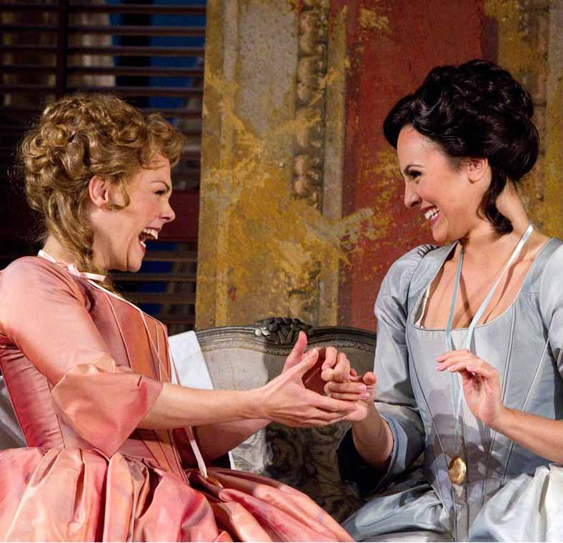
Così Fan Tutte {172}
Metropolitan Opera House; 11/09/2010
Debut: William Christie
Broadcast/Streamed |
[Met Performance] CID:353622
Don Pasquale {128}
Metropolitan Opera House; 11/10/2010
Broadcast |
[Met Performance] CID:353623
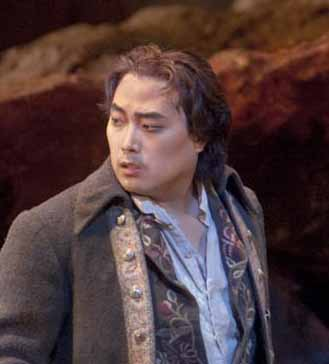
Il Trovatore {619}
Metropolitan Opera House; 11/11/2010
Debut: Alfred Kim |
[Met Performance] CID:353624
Carmen {962}
Metropolitan Opera House; 11/12/2010
|
[Met Performance] CID:353625
Don Pasquale {129}
Metropolitan Opera House; 11/13/2010
HD Simulcast |
[Met Performance] CID:353626
Così Fan Tutte {173}
Metropolitan Opera House; 11/13/2010
|
[Met Performance] CID:353627
Il Trovatore {620}
Metropolitan Opera House; 11/15/2010
|
[Met Performance] CID:353628
Carmen {963}
Metropolitan Opera House; 11/16/2010
Broadcast |
[Met Performance] CID:353629
Così Fan Tutte {174}
Metropolitan Opera House; 11/17/2010
|
[Met Performance] CID:353630
Don Pasquale {130}
Metropolitan Opera House; 11/18/2010
Broadcast |
[Met Performance] CID:353631
Il Trovatore {621}
Metropolitan Opera House; 11/19/2010
Broadcast/Streamed |
[Met Performance] CID:353632
Così Fan Tutte {175}
Metropolitan Opera House; 11/20/2010
|
[Met Performance] CID:353633
Carmen {964}
Metropolitan Opera House; 11/20/2010
|
[Met Performance] CID:353609

New Production
Don Carlo {191}
Metropolitan Opera House; 11/22/2010
Debuts: Nicholas Hytner, Bob Crowley, Mark Henderson, Anna Smirnova, Layla Claire, Alexei Tanovitski, Keith Harris, Tyler Simpson, Eric Jordan, Tommaso Matelli, Anne Dyas
Broadcast/Streamed |
[Met Performance] CID:353612
Così Fan Tutte {176}
Metropolitan Opera House; 11/23/2010
Broadcast |
[Met Performance] CID:353643
Carmen {965}
Metropolitan Opera House; 11/24/2010
Broadcast |
[Met Performance] CID:353644
Don Carlo {192}
Metropolitan Opera House; 11/26/2010
|
[Met Performance] CID:353645
Carmen {966}
Metropolitan Opera House; 11/27/2010
|
[Met Performance] CID:353646
Così Fan Tutte {177}
Metropolitan Opera House; 11/27/2010
|
[Met Performance] CID:353647
Don Carlo {193}
Metropolitan Opera House; 11/29/2010
Debut: Yonghoon Lee, Maxime de Toledo
Broadcast |
[Met Performance] CID:353652
Carmen {967}
Metropolitan Opera House; 11/30/2010
Broadcast/Streamed |
[Met Performance] CID:353654
La Bohème {1224}
Metropolitan Opera House; 12/01/2010
Debuts: Dimitri Tiliakos, Günther Groissböck, Brandon Mayberry |
[Met Performance] CID:353656
Così Fan Tutte {178}
Metropolitan Opera House; 12/02/2010
Broadcast |
[Met Performance] CID:353658
Don Carlo {194}
Metropolitan Opera House; 12/03/2010
|
[Met Performance] CID:353659
La Bohème {1225}
Metropolitan Opera House; 12/04/2010
|
[Met Performance] CID:353660
Carmen {968}
Metropolitan Opera House; 12/04/2010
|
[Met Performance] CID:353661
La Fanciulla del West {96}
Metropolitan Opera House; 12/06/2010
Debuts: Hugo Vera, Edward Mout
Broadcat/Streamed
Review |
[Met Performance] CID:353667
Don Carlo {195}
Metropolitan Opera House; 12/07/2010
Broadcast |
[Met Performance] CID:353673
La Bohème {1226}
Metropolitan Opera House; 12/08/2010
Broadcast |
[Met Performance] CID:353674
Carmen {969}
Metropolitan Opera House; 12/09/2010
|
[Met Performance] CID:353675
La Fanciulla del West {97}
Metropolitan Opera House; 12/10/2010
100th Anniversary of the world premiere at the Metropolitan Opera |
[Met Performance] CID:353676
Don Carlo {196}
Metropolitan Opera House; 12/11/2010
HD Simulcast |
[Met Performance] CID:353677
La Bohème {1227}
Metropolitan Opera House; 12/11/2010
|
[Met Performance] CID:353682
La Fanciulla del West {98}
Metropolitan Opera House; 12/14/2010
Broadcast |
[Met Performance] CID:353683
Don Carlo {197}
Metropolitan Opera House; 12/15/2010
|
[Met Performance] CID:353687
Pelléas et Mélisande {110}
Metropolitan Opera House; 12/17/2010
Debut: Simon Rattle, Paul Corona
Broadcast/Streamed |
[Met Performance] CID:353688
Don Carlo {198}
Metropolitan Opera House; 12/18/2010
Debut: Giorgio Giuseppini
Broadcast |
[Met Performance] CID:353690
La Fanciulla del West {99}
Metropolitan Opera House; 12/18/2010
|
[Met Performance] CID:353695
Pelléas et Mélisande {111}
Metropolitan Opera House; 12/20/2010
|
[Met Performance] CID:353699
Die Zauberflöte {401}
Metropolitan Opera House; 12/21/2010
Debuts: Erik Nielsen, Noah Sadik, Seth Ewing-Crystal
Broadcast/Streamed |
[Met Performance] CID:353700
La Fanciulla del West {100}
Metropolitan Opera House; 12/22/2010
Debut: Elisabete Matos
Broadcast |
[Met Performance] CID:353705
Pelléas et Mélisande {112}
Metropolitan Opera House; 12/23/2010
Broadcast |
[Met Performance] CID:353706
Die Zauberflöte {402}
Metropolitan Opera House; 12/24/2010
|
[Met Performance] CID:353707
La Fanciulla del West {101}
Metropolitan Opera House; 12/27/2010
Debut: Carl Tanner |
[Met Performance] CID:353708
Die Zauberflöte {403}
Metropolitan Opera House; 12/28/2010
|
[Met Performance] CID:353709
Die Zauberflöte {404}
Metropolitan Opera House; 12/29/2010
Debut: Audrey Luna |
[Met Performance] CID:353710
Pelléas et Mélisande {113}
Metropolitan Opera House; 12/29/2010
Broadcast |
[Met Performance] CID:353715
Die Zauberflöte {405}
Metropolitan Opera House; 12/30/2010
|
[Met Performance] CID:353717
La Fanciulla del West {102}
Metropolitan Opera House; 12/30/2010
|
[Met Performance] CID:353718
New Production
La Traviata {961}
Metropolitan Opera House; 12/31/2010
Debuts: Willy Decker, Wolfgang Gussmann, Susana Mendoza, Hans Toelstede, Athol Farmer, Kyle Pfortmiller, Jennifer Holloway
Broadcast/Streamed |
[Met Performance] CID:353719
Pelléas et Mélisande {114}
Metropolitan Opera House; 01/01/2011
Broadcast |
[Met Performance] CID:353720
Die Zauberflöte {406}
Metropolitan Opera House; 01/01/2011
|
[Met Performance] CID:353721
Die Zauberflöte {407}
Metropolitan Opera House; 01/03/2011
|
[Met Performance] CID:353722
La Fanciulla del West {103}
Metropolitan Opera House; 01/03/2011
Broadcast/Streamed |
[Met Performance] CID:353726
La Traviata {962}
Metropolitan Opera House; 01/04/2011
|
[Met Performance] CID:353729
Carmen {970}
Metropolitan Opera House; 01/05/2011
Debuts: Anita Rachvelishvili, Margaret Thompson |
[Met Performance] CID:353731
Die Zauberflöte {408}
Metropolitan Opera House; 01/06/2011
Broadcast |
[Met Performance] CID:353733
La Traviata {963}
Metropolitan Opera House; 01/07/2011
|
[Met Performance] CID:353735
La Fanciulla del West {104}
Metropolitan Opera House; 01/08/2011
HD Simulcast |
[Met Performance] CID:353734
Carmen {971}
Metropolitan Opera House; 01/08/2011
|
[Met Performance] CID:353736
Tosca {908}
Metropolitan Opera House; 01/10/2011
Debuts: Yves Mervin-Leroy, Harold Wilson
Broadcast/Streamed |
[Met Performance] CID:353728
Rigoletto {832}
Metropolitan Opera House; 01/11/2011
Debut: Nino Machaidze |
[Met Performance] CID:353741
La Traviata {964}
Metropolitan Opera House; 01/12/2011
|
[Met Performance] CID:353742
Carmen {972}
Metropolitan Opera House; 01/13/2011
Broadcast |
[Met Performance] CID:353744
Tosca {909}
Metropolitan Opera House; 01/14/2011
|
[Met Performance] CID:353745
La Traviata {965}
Metropolitan Opera House; 01/15/2011
Broadcast |
[Met Performance] CID:353746
Rigoletto {833}
Metropolitan Opera House; 01/15/2011
Debut: Vitaly Efanov |
[Met Performance] CID:353750
Tosca {910}
Metropolitan Opera House; 01/17/2011
|
[Met Performance] CID:353751
Rigoletto {834}
Metropolitan Opera House; 01/18/2011
|
[Met Performance] CID:353756
La Traviata {966}
Metropolitan Opera House; 01/19/2011
Broadcast |
[Met Performance] CID:353758

Simon Boccanegra {135}
Metropolitan Opera House; 01/20/2011
Debuts: Roberto De Biasio, Nicola Alaimo
Broadcast/Streamed |
[Met Performance] CID:353760
Tosca {911}
Metropolitan Opera House; 01/21/2011
|
[Met Performance] CID:353761
Rigoletto {835}
Metropolitan Opera House; 01/22/2011
Broadcast |
[Met Performance] CID:353762
La Traviata {967}
Metropolitan Opera House; 01/22/2011
|
[Met Concert/Gala] CID:353763
The MET Orchestra
Carnegie Hall, New York; 01/23/2011
Broadcast |
[Met Performance] CID:353767
Simon Boccanegra {136}
Metropolitan Opera House; 01/24/2011
|
[Met Performance] CID:353770
Tosca {912}
Metropolitan Opera House; 01/25/2011
|
[Met Performance] CID:353772
La Traviata {968}
Metropolitan Opera House; 01/26/2011
Broadcast/Streamed |
[Met Performance] CID:353773
Rigoletto {836}
Metropolitan Opera House; 01/27/2011
|
[Met Performance] CID:353776
Simon Boccanegra {137}
Metropolitan Opera House; 01/28/2011
|
[Met Performance] CID:353777
Tosca {913}
Metropolitan Opera House; 01/29/2011
Broadcast |
[Met Performance] CID:353778
La Traviata {969}
Metropolitan Opera House; 01/29/2011
|
[Met Performance] CID:353779
La Bohème {1228}
Metropolitan Opera House; 01/31/2011
|
[Met Performance] CID:353780
Simon Boccanegra {138}
Metropolitan Opera House; 02/01/2011
Broadcast |
[Met Performance] CID:353786
Metropolitan Opera Premiere
Nixon in China {1}
Metropolitan Opera House; 02/02/2011
Debuts: John Adams, Peter Sellars, James Maddalena, Janis Kelly, Haruno Yamazaki, Kanji Segawa
Broadcast/Streamed |
[Met Performance] CID:353788
La Bohème {1229}
Metropolitan Opera House; 02/03/2011
|
[Met Performance] CID:353790
Don Pasquale {131}
Metropolitan Opera House; 02/04/2011
|
[Met Performance] CID:353791
Simon Boccanegra {139}
Metropolitan Opera House; 02/05/2011
Broadcast |
[Met Performance] CID:353792
Nixon in China {2}
Metropolitan Opera House; 02/05/2011
|
[Met Performance] CID:353793
La Bohème {1230}
Metropolitan Opera House; 02/07/2011
Broadcast/Streamed |
[Met Performance] CID:353798
Don Pasquale {132}
Metropolitan Opera House; 02/08/2011
|
[Met Performance] CID:353801
Nixon in China {3}
Metropolitan Opera House; 02/09/2011
Broadcast
Review |
[Met Performance] CID:353802
La Bohème {1231}
Metropolitan Opera House; 02/10/2011
|
[Met Performance] CID:353804
Don Pasquale {133}
Metropolitan Opera House; 02/11/2011
|
[Met Performance] CID:353805
Nixon in China {4}
Metropolitan Opera House; 02/12/2011
HD Simulcast |
[Met Performance] CID:353806
Iphigénie en Tauride {14}
Metropolitan Opera House; 02/12/2011
Debuts: Julie Boulianne, Lei Xu, Cecelia Hall |
[Met Performance] CID:353807
Don Pasquale {134}
Metropolitan Opera House; 02/14/2011
Debut: Peter Barrett |
[Met Performance] CID:353816
Nixon in China {5}
Metropolitan Opera House; 02/15/2011
|
[Met Performance] CID:353813
The Bartered Bride
Peter Jay Sharp Theater, The Juilliard School, New York; 02/15/2011
|
[Met Performance] CID:353817
Iphigénie en Tauride {15}
Metropolitan Opera House; 02/16/2011
Broadcast/Streamed |
[Met Performance] CID:353819
La Bohème {1232}
Metropolitan Opera House; 02/17/2011
|
[Met Performance] CID:355489
The Bartered Bride
Peter Jay Sharp Theater, The Juilliard School, New York; 02/17/2011
|
[Met Performance] CID:353824
Armida {11}
Metropolitan Opera House; 02/18/2011
Debut: Jamie Verazin
Broadcast |
[Met Performance] CID:353825
Don Pasquale {135}
Metropolitan Opera House; 02/19/2011
Broadcast |
[Met Performance] CID:353826
Nixon in China {6}
Metropolitan Opera House; 02/19/2011
|
[Met Performance] CID:355490
The Bartered Bride
Peter Jay Sharp Theater, The Juilliard School, New York; 02/20/2011
|
[Met Performance] CID:353827
Iphigénie en Tauride {16}
Metropolitan Opera House; 02/21/2011
Broadcast |
[Met Performance] CID:353831
La Bohème {1233}
Metropolitan Opera House; 02/22/2011
Broadcast |
[Met Performance] CID:353833
Armida {12}
Metropolitan Opera House; 02/23/2011
|
[Met Performance] CID:353835
Lucia di Lammermoor {581}
Metropolitan Opera House; 02/24/2011
Broadcast/Streamed |
[Met Performance] CID:353837
La Bohème {1234}
Metropolitan Opera House; 02/25/2011
|
[Met Performance] CID:353839
Iphigénie en Tauride {17}
Metropolitan Opera House; 02/26/2011
HD Simulcast |
[Met Performance] CID:353838
Armida {13}
Metropolitan Opera House; 02/26/2011
|
[Met Performance] CID:353843
Lucia di Lammermoor {582}
Metropolitan Opera House; 02/28/2011
|
[Met Performance] CID:353845
Armida {14}
Metropolitan Opera House; 03/01/2011
Broadcast/Streamed |
[Met Performance] CID:353846
Iphigénie en Tauride {18}
Metropolitan Opera House; 03/02/2011
|
[Met Performance] CID:353849
Roméo et Juliette {323}
Metropolitan Opera House; 03/03/2011
Broadcast |
[Met Performance] CID:353852
Lucia di Lammermoor {583}
Metropolitan Opera House; 03/04/2011
|
[Met Performance] CID:353853
Armida {15}
Metropolitan Opera House; 03/05/2011
Broadcast |
[Met Performance] CID:353854
Iphigénie en Tauride {19}
Metropolitan Opera House; 03/05/2011
|
[Met Performance] CID:353859
Roméo et Juliette {324}
Metropolitan Opera House; 03/07/2011
Broadcast |
[Met Performance] CID:353861
Lucia di Lammermoor {584}
Metropolitan Opera House; 03/08/2011
|
[Met Performance] CID:353863
Boris Godunov {271}
Metropolitan Opera House; 03/09/2011
|
[Met Performance] CID:353866
Roméo et Juliette {325}
Metropolitan Opera House; 03/10/2011
|
[Met Performance] CID:353868
The Queen of Spades {67}
Metropolitan Opera House; 03/11/2011
Debuts: Danielle Pastin, Dina Kuznetsova
Broadcast/Streamed |
[Met Performance] CID:353882
Boris Godunov {272}
Metropolitan Opera House; 03/12/2011
Broadcast |
[Met Performance] CID:353871
Lucia di Lammermoor {585}
Metropolitan Opera House; 03/12/2011
|
[Met Concert/Gala] CID:353876
National Council Grand Finals Concert
Metropolitan Opera House; 03/13/2011
First appearance: Ryan Speedo Green
Broadcast |
[Met Performance] CID:353877
Roméo et Juliette {326}
Metropolitan Opera House; 03/14/2011
|
[Met Performance] CID:353879
The Queen of Spades {68}
Metropolitan Opera House; 03/15/2011
Broadcast |
[Met Performance] CID:353881
Lucia di Lammermoor {586}
Metropolitan Opera House; 03/16/2011
Broadcast/Streamed |
[Met Performance] CID:353883
Boris Godunov {273}
Metropolitan Opera House; 03/17/2011
|
[Met Performance] CID:353885
The Queen of Spades {69}
Metropolitan Opera House; 03/18/2011
|
[Met Performance] CID:353886
Lucia di Lammermoor {587}
Metropolitan Opera House; 03/19/2011
HD Simulcast |
[Met Performance] CID:353887
Roméo et Juliette {327}
Metropolitan Opera House; 03/19/2011
|
[Met Performance] CID:353889
The Queen of Spades {70}
Metropolitan Opera House; 03/21/2011
|
[Met Performance] CID:353893
Roméo et Juliette {328}
Metropolitan Opera House; 03/22/2011
Broadcast |
[Met Performance] CID:353897
Metropolitan Opera Premiere
Le Comte Ory {1}
Metropolitan Opera House; 03/24/2011
Debuts: Susanne Resmark
Broadcast/Streamed
Review |
[Met Performance] CID:353898
Tosca {914}
Metropolitan Opera House; 03/25/2011
|
[Met Performance] CID:353899
The Queen of Spades {71}
Metropolitan Opera House; 03/26/2011
Broadcast |
[Met Performance] CID:353900
Roméo et Juliette {329}
Metropolitan Opera House; 03/26/2011
|
[Met Performance] CID:353904
Capriccio {7}
Metropolitan Opera House; 03/28/2011
Debuts: Morten Frank Larsen, Steven Goldstein, Grant Youngblood, David Chan (Stage Debut)
Broadcast/Streamed |
[Met Performance] CID:353907
Le Comte Ory {2}
Metropolitan Opera House; 03/29/2011
|
[Met Performance] CID:353909
Das Rheingold {160}
Metropolitan Opera House; 03/30/2011
Debut: Arnold Bezuyen |
[Met Performance] CID:353911
Tosca {915}
Metropolitan Opera House; 03/31/2011
James Morris's 40th Anniversary
Broadcast |
[Met Performance] CID:353913
Capriccio {8}
Metropolitan Opera House; 04/01/2011
|
[Met Performance] CID:353914
Das Rheingold {161}
Metropolitan Opera House; 04/02/2011
Broadcast |
[Met Performance] CID:353915
Le Comte Ory {3}
Metropolitan Opera House; 04/02/2011
|
[Met Performance] CID:353916
Tosca {916}
Metropolitan Opera House; 04/04/2011
|
[Met Performance] CID:353921
Le Comte Ory {4}
Metropolitan Opera House; 04/05/2011
Broadcast |
[Met Performance] CID:353922
Wozzeck {61}
Metropolitan Opera House; 04/06/2011
Debuts: Stuart Skelton, John Albert, Jonathan Kelly
Broadcast/Streamed |
[Met Performance] CID:353925
Capriccio {9}
Metropolitan Opera House; 04/07/2011
|
[Met Performance] CID:353927
Tosca {917}
Metropolitan Opera House; 04/08/2011
|
[Met Performance] CID:353928
Le Comte Ory {5}
Metropolitan Opera House; 04/09/2011
HD Simulcast |
[Met Performance] CID:353929
Wozzeck {62}
Metropolitan Opera House; 04/09/2011
|
[Met Concert/Gala] CID:353934
The MET Orchestra
Carnegie Hall, New York; 04/10/11
Broadcast |
[Met Performance] CID:353933
Capriccio {10}
Metropolitan Opera House; 04/11/2011
|
[Met Performance] CID:353935
Tosca {918}
Metropolitan Opera House; 04/12/2011
|
[Met Performance] CID:353938
Wozzeck {63}
Metropolitan Opera House; 04/13/2011
|
[Met Performance] CID:353939
Le Comte Ory {6}
Metropolitan Opera House; 04/14/2011
Broadcast/Streamed |
[Met Performance] CID:353940
Capriccio {11}
Metropolitan Opera House; 04/15/2011
|
[Met Performance] CID:353941
Wozzeck {64}
Metropolitan Opera House; 04/16/2011
Broadcast |
[Met Performance] CID:353942
Tosca {919}
Metropolitan Opera House; 04/16/2011
|
[Met Performance] CID:353945
Le Comte Ory {7}
Metropolitan Opera House; 04/18/2011
|
[Met Performance] CID:353949
Capriccio {12}
Metropolitan Opera House; 04/19/2011
Broadcast |
[Met Performance] CID:353950
Il Trovatore {622}
Metropolitan Opera House; 04/20/2011
|
[Met Performance] CID:353954
Le Comte Ory {8}
Metropolitan Opera House; 04/21/2011
|
[Met Performance] CID:353959
New Production
Die Walküre {525}
Metropolitan Opera House; 04/22/2011
Debuts: Eva-Maria Westbroek, Molly Fillmore, Lindsay Ammann
Broadcast/Streamed |
[Met Performance] CID:353957
Capriccio {13}
Metropolitan Opera House; 04/23/2011
HD Simulcast |
[Met Performance] CID:353958
Il Trovatore {623}
Metropolitan Opera House; 04/23/2011
Debut: Arnold Rawls |
[Met Performance] CID:353963
Die Walküre {526}
Metropolitan Opera House; 04/25/2011
|
[Met Performance] CID:353965
Rigoletto {837}
Metropolitan Opera House; 04/26/2011
Debut: Corinne Winters
Broadcast |
[Met Performance] CID:353966
Il Trovatore {624}
Metropolitan Opera House; 04/27/2011
Broadcast/Streamed |
[Met Performance] CID:353967
Die Walküre {527}
Metropolitan Opera House; 04/28/2011
|
[Met Performance] CID:353968
Orfeo ed Euridice {94}
Metropolitan Opera House; 04/29/2011
Debuts: Antony Walker, Kate Royal |
[Met Performance] CID:353970
Il Trovatore {625}
Metropolitan Opera House; 04/30/2011
HD Simulcast |
[Met Performance] CID:353969
Rigoletto {838}
Metropolitan Opera House; 04/30/2011
|
[Met Performance] CID:353977
Die Walküre {528}
Metropolitan Opera House; 05/02/2011
|
[Met Performance] CID:353978
Rigoletto {839}
Metropolitan Opera House; 05/03/2011
Broadcast |
[Met Performance] CID:353981
Orfeo ed Euridice {95}
Metropolitan Opera House; 05/04/2011
Broadcast/Streamed |
[Met Performance] CID:353983
Die Walküre {529}
Metropolitan Opera House; 05/05/2011
|
[Met Performance] CID:353985
Rigoletto {840}
Metropolitan Opera House; 05/06/2011
|
[Met Performance] CID:353993
Ariadne auf Naxos {89}
Metropolitan Opera House; 05/07/2011
Debuts: Paul Appleby, Noah Baetge
Broadcast |
[Met Performance] CID:353987
Orfeo ed Euridice {96}
Metropolitan Opera House; 05/07/2011
|
[Met Performance] CID:353992
Die Walküre {530}
Metropolitan Opera House; 05/09/2011
Broadcast |
[Met Performance] CID:353994
Ariadne auf Naxos {90}
Metropolitan Opera House; 05/10/2011
Broadcast/Streamed |
[Met Performance] CID:353995
Orfeo ed Euridice {97}
Metropolitan Opera House; 05/11/2011
|
[Met Performance] CID:353996
Rigoletto {841}
Metropolitan Opera House; 05/12/2011
|
[Met Performance] CID:353997
Ariadne auf Naxos {91}
Metropolitan Opera House; 05/13/2011
|
[Met Performance] CID:353998
Die Walküre {531}
Metropolitan Opera House; 05/14/2011
HD Simulcast |
[Met Performance] CID:353999
Orfeo ed Euridice {98}
Metropolitan Opera House; 05/14/2011
|
[Met Concert/Gala] CID:354000
The MET Orchestra
Carnegie Hall, New York; 05/15/2011
Broadcast |
[Met Performance] CID:354001
La Bohème {1235}
Nagoya, Japan; 06/04/2011
|
[Met Performance] CID:354002
Don Carlo {199}
Nagoya, Japan; 06/05/2011
|
[Met Performance] CID:354016
La Bohème {1236}
Tokyo, Japan; 06/08/2011
|
[Met Performance] CID:354017
Lucia di Lammermoor {588}
Tokyo, Japan; 06/09/2011
|
[Met Performance] CID:354018
Don Carlo {200}
Tokyo, Japan; 06/10/2011
|
[Met Performance] CID:354019
La Bohème {1237}
Tokyo, Japan; 06/11/2011
|
[Met Performance] CID:354020
Lucia di Lammermoor {589}
Tokyo, Japan; 06/12/2011
Debut: Alexey Dolgov |
[Met Concert/Gala] CID:354021
Concert
Tokyo, Japan; 06/14/2011
|
[Met Performance] CID:354022
Don Carlo {201}
Tokyo, Japan; 06/15/2011
|
[Met Performance] CID:354023
Lucia di Lammermoor {590}
Tokyo, Japan; 06/16/2011
|
[Met Performance] CID:354024
La Bohème {1238}
Tokyo, Japan; 06/17/2011
|
[Met Performance] CID:354025
Don Carlo {202}
Tokyo, Japan; 06/18/2011
|
[Met Performance] CID:354026
Lucia di Lammermoor {591}
Tokyo, Japan; 06/19/2011
|
[Met Performance] CID:354027
La Bohème {1239}
Tokyo, Japan; 06/19/2011
|
[Met Concert/Gala] CID:354028
The Met's Summer Recital Series
New York, Manhattan, Central Park; 07/11/2011
|
[Met Concert/Gala] CID:354035
The Met's Summer Recital Series
New York, Brooklyn, Brooklyn Bridge Park; 07/13/2011
|
[Met Concert/Gala] CID:354030
The Met's Summer Recital Series
New York, Bronx, Crotona Park; 07/19/2011
|
[Met Concert/Gala] CID:354036
The Met's Summer Recital Series
New York, Staten Island, Clove Lakes Park; 07/21/2011
|
[Met Concert/Gala] CID:354037
The Met's Summer Recital Series
New York, Queens, Socrates Sculpture Park; 07/26/2011
|
[Met Concert/Gala] CID:354038
The Met's Summer Recital Series
New York, Manhattan, Jackie Robinson Park; 07/28/2011
|
[Met Performance] CID:354049
Metropolitan Opera Premiere
Anna Bolena {1}
Metropolitan Opera House; 09/26/2011
Opening Night {127}
Peter Gelb, General Manager
Debuts: Robert Jones, Jenny Tiramani
Broadcast/Streamed/Times Squarecast/Plazacast
Review |
[Met Performance] CID:354051
Nabucco {46}
Metropolitan Opera House; 09/27/2011
Debut: Amber Wagner
Broadcast |
[Met Performance] CID:354054
Anna Bolena {2}
Metropolitan Opera House; 09/30/2011
|
[Met Performance] CID:354056
Il Barbiere di Siviglia {587}
Metropolitan Opera House; 10/01/2011
Debut: Javier Camarena
Broadcast |
[Met Performance] CID:354055
Nabucco {47}
Metropolitan Opera House; 10/1/2011
|
[Met Performance] CID:354057
Anna Bolena {3}
Metropolitan Opera House; 10/03/2011
Broadcast |
[Met Performance] CID:354065
Il Barbiere di Siviglia {588}
Metropolitan Opera House; 10/04/2011
Broadcast |
[Met Performance] CID:354066
Nabucco {48}
Metropolitan Opera House; 10/5/2011
Broadcast |
[Met Performance] CID:354069
Anna Bolena {4}
Metropolitan Opera House; 10/06/2011
|
[Met Performance] CID:354074
Il Barbiere di Siviglia {589}
Metropolitan Opera House; 10/08/2011
|
[Met Performance] CID:354075
Nabucco {49}
Metropolitan Opera House; 10/8/2011
|
[Met Performance] CID:354077
Anna Bolena {5}
Metropolitan Opera House; 10/10/2011
Broadcast |
[Met Performance] CID:354078
Il Barbiere di Siviglia {590}
Metropolitan Opera House; 10/11/2011
|
[Met Performance] CID:354082
Nabucco {50}
Metropolitan Opera House; 10/12/2011
Broadcast |
[Met Performance] CID:354085
New Production
Don Giovanni {515}
Metropolitan Opera House; 10/13/2011
Debuts: Michael Grandage, Christopher Oram, Ben Wright, Marina Rebeka, Mojca Erdmann
Broadcast/Streamed
Review |
[Met Performance] CID:354086
Il Barbiere di Siviglia {591}
Metropolitan Opera House; 10/14/2011
|
[Met Performance] CID:354087
Anna Bolena {6}
Metropolitan Opera House; 10/15/2011
HD Simulcast |
[Met Performance] CID:354089
Nabucco {51}
Metropolitan Opera House; 10/15/2011
|
[Met Concert/Gala] CID:354090
The MET Orchestra
Carnegie Hall, New York; 10/16/2011
|
[Met Performance] CID:354095
Don Giovanni {516}
Metropolitan Opera House; 10/17/2011
Broadcast |
[Met Performance] CID:354096
Anna Bolena {7}
Metropolitan Opera House; 10/18/2011
Debut: Taylor Stayton |
[Met Performance] CID:354098
Il Barbiere di Siviglia {592}
Metropolitan Opera House; 10/19/2011
Broadcast/Streamed |
[Met Performance] CID:354099
Nabucco {52}
Metropolitan Opera House; 10/20/2011
|
[Met Performance] CID:354104
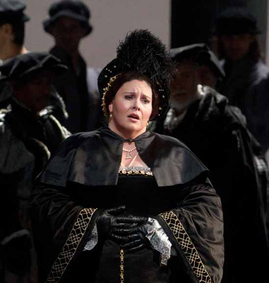
Anna Bolena {8}
Metropolitan Opera House; 10/21/2011
Broadcast |
[Met Performance] CID:354105
Il Barbiere di Siviglia {593}
Metropolitan Opera House; 10/22/2011
|
[Met Performance] CID:354106
Don Giovanni {517}
Metropolitan Opera House; 10/22/2011
|
[Met Performance] CID:354107
Anna Bolena {9}
Metropolitan Opera House; 10/24/2011
Broadcast |
[Met Performance] CID:354115
Don Giovanni {518}
Metropolitan Opera House; 10/25/2011
Broadcast |
[Met Performance] CID:354116
Il Barbiere di Siviglia {594}
Metropolitan Opera House; 10/26/2011
Debut: Alexey Kudrya |
[Met Performance] CID:354117
New Production
Siegfried {263}
Metropolitan Opera House; 10/27/2011
Debut: Pedro Pires
Broadcast/Streamed |
[Met Performance] CID:354118
Anna Bolena {10}
Metropolitan Opera House; 10/28/2011
|
[Met Performance] CID:354119
Don Giovanni {519}
Metropolitan Opera House; 10/29/2011
HD Simulcast |
[Met Performance] CID:354121
Il Barbiere di Siviglia {595}
Metropolitan Opera House; 10/29/2011
|
[Met Concert/Gala] CID:354113
Jonas Kaufmann in Recital
Metropolitan Opera House; 10/30/2011
Broadcast |
[Met Performance] CID:356528
Jonas Kaufmann in Recital
Metropolitan Opera House; 10/30/2011
Broadcast |
[Met Performance] CID:354125
Don Giovanni {520}
Metropolitan Opera House; 10/31/2011
Broadcast/Streamed |
[Met Performance] CID:354130
Siegfried {264}
Metropolitan Opera House; 11/01/2011
Broadcast |
[Met Performance] CID:354131
Nabucco {53}
Metropolitan Opera House; 11/02/2011
|
[Met Performance] CID:354134
Don Giovanni {521}
Metropolitan Opera House; 11/03/2011
|
[Met Performance] CID:354139
Satyagraha {8}
Metropolitan Opera House; 11/04/2011
|
[Met Performance] CID:354137
Siegfried {265}
Metropolitan Opera House; 11/05/2011
HD Simulcast |
[Met Performance] CID:354136
Nabucco {54}
Metropolitan Opera House; 11/05/2011
Debut: Dmitry Belosselskiy |
[Met Performance] CID:354144
Don Giovanni {522}
Metropolitan Opera House; 11/07/2011
Broadcast |
[Met Performance] CID:354145
Satyagraha {9}
Metropolitan Opera House; 11/08/2011
Broadcast/Streamed |
[Met Performance] CID:354146
Nabucco {55}
Metropolitan Opera House; 11/09/2011
Broadcast |
[Met Performance] CID:354151
Don Giovanni {523}
Metropolitan Opera House; 11/11/2011
|
[Met Performance] CID:354152
Nabucco {56}
Metropolitan Opera House; 11/12/2011
|
[Met Performance] CID:354153
Satyagraha {10}
Metropolitan Opera House; 11/12/2011
|
[Met Performance] CID:354154
Rodelinda {15}
Metropolitan Opera House; 11/14/2011
Debuts: Iestyn Davies, Moritz Linn
Broadcast/Streamed |
[Met Performance] CID:354158
Satyagraha {11}
Metropolitan Opera House; 11/15/2011
Broadcast |
[Met Performance] CID:354161
Nabucco {57}
Metropolitan Opera House; 11/17/2011
Broadcast |
[Met Performance] CID:354168
La Bohème {1240}
Metropolitan Opera House; 11/18/2011
Debut: Matthew Rose |
[Met Performance] CID:354163
Satyagraha {12}
Metropolitan Opera House; 11/19/2011
HD Simulcast |
[Met Performance] CID:354164
Rodelinda {16}
Metropolitan Opera House; 11/19/2011
|
[Met Performance] CID:354162
La Bohème {1241}
Metropolitan Opera House; 11/22/2011
Broadcast/Streamed |
[Met Performance] CID:354174
Rodelinda {17}
Metropolitan Opera House; 11/23/2011
Broadcast |
[Met Performance] CID:354175
La Bohème {1242}
Metropolitan Opera House; 11/25/2011
|
[Met Performance] CID:354176
Satyagraha {13}
Metropolitan Opera House; 11/26/2011
|
[Met Performance] CID:354177
Rodelinda {18}
Metropolitan Opera House; 11/26/2011
|
[Met Performance] CID:354181
La Bohème {1243}
Metropolitan Opera House; 11/28/2011
Broadcast |
[Met Performance] CID:354183
New Production
Faust {734}
Metropolitan Opera House; 11/29/2011
Debuts: Des McAnuff, Robert Brill, Paul Tazewell, Kelly Devine, Sean Nieuwenhuis, Jonathan Beyer
Broadcast/Streamed |
[Met Performance] CID:354184
Rodelinda {19}
Metropolitan Opera House; 11/30/2011
|
[Met Performance] CID:354187
Satyagraha {14}
Metropolitan Opera House; 12/01/2011
|
[Met Performance] CID:354190
La Bohème {1244}
Metropolitan Opera House; 12/02/2011
|
[Met Performance] CID:354191
Rodelinda {20}
Metropolitan Opera House; 12/03/2011
Debut: Matthew Diamond
HD Simulcast |
[Met Performance] CID:354192
Faust {735}
Metropolitan Opera House; 12/03/2011
|
[Met Performance] CID:354193
Madama Butterfly {830}
Metropolitan Opera House; 12/05/2011
Debuts: Luthando Qave, Frankie Cordero
Broadcast/Streamed |
[Met Performance] CID:354197
Faust {736}
Metropolitan Opera House; 12/06/2011
Broadcast |
[Met Performance] CID:354199
Rodelinda {21}
Metropolitan Opera House; 12/07/2011
Debut: Anthony Roth Costanzo |
[Met Performance] CID:354201
La Bohème {1245}
Metropolitan Opera House; 12/08/2011
|
[Met Performance] CID:354205
Madama Butterfly {831}
Metropolitan Opera House; 12/09/2011
|
[Met Performance] CID:354203
Faust {737}
Metropolitan Opera House; 12/10/2011
HD Simulcast |
[Met Performance] CID:354204
Rodelinda {22}
Metropolitan Opera House; 12/10/2011
|
[Met Performance] CID:354208
La Fille du Régiment {103}
Metropolitan Opera House; 12/12/2011
Debut: Christian Räth
Broadcast/Streamed
Review |
[Met Performance] CID:354213
Faust {738}
Metropolitan Opera House; 12/13/2011
|
[Met Performance] CID:354214
Madama Butterfly {832}
Metropolitan Opera House; 12/14/2011
|
[Met Performance] CID:354215
La Fille du Régiment {104}
Metropolitan Opera House; 12/15/2011
|
[Met Performance] CID:354230
Hänsel und Gretel {257}
Metropolitan Opera House; 12/16/2011
Debut: Robin Ticciati
Broadcast |
[Met Performance] CID:354231
Madama Butterfly {833}
Metropolitan Opera House; 12/17/2011
Broadcast |
[Met Performance] CID:354232
Faust {739}
Metropolitan Opera House; 12/17/2011
Debut: Pierre Vallet |
[Met Performance] CID:354233
La Fille du Régiment {105}
Metropolitan Opera House; 12/19/2011
|
[Met Performance] CID:354237
Faust {740}
Metropolitan Opera House; 12/20/2011
Broadcast |
[Met Performance] CID:354242
Hänsel und Gretel {258}
Metropolitan Opera House; 12/21/2011
|
[Met Performance] CID:354245
Madama Butterfly {834}
Metropolitan Opera House; 12/22/2011
Broadcast |
[Met Performance] CID:354248
Faust {741}
Metropolitan Opera House; 12/23/2011
Debut: Malin Byström |
[Met Performance] CID:354249
La Fille du Régiment {106}
Metropolitan Opera House; 12/24/2011
Broadcast |
[Met Performance] CID:354250
Hänsel und Gretel {259}
Metropolitan Opera House; 12/24/2011
|
[Met Performance] CID:354251
Hänsel und Gretel {260}
Metropolitan Opera House; 12/26/2011
Broadcast |
[Met Performance] CID:354259
Madama Butterfly {835}
Metropolitan Opera House; 12/27/2011
|
[Met Performance] CID:354262
Faust {742}
Metropolitan Opera House; 12/28/2011
Broadcast |
[Met Performance] CID:354264
Hänsel und Gretel {261}
Metropolitan Opera House; 12/29/2011
Debut: Heidi Stober |
[Met Performance] CID:354265
La Fille du Régiment {107}
Metropolitan Opera House; 12/29/2011
|
[Met Performance] CID:354266
Hänsel und Gretel {262}
Metropolitan Opera House; 12/30/2011
|
[Met Performance] CID:354267
Madama Butterfly {837}
Metropolitan Opera House; 12/30/2011
|
[Met Performance] CID:354269
List of Selections
World Premiere
The Enchanted Island {1}
Metropolitan Opera House; 12/31/2011
Debuts: Jeremy Sams, Elliot Madore
Broadcast/Streamed
Review |
[Met Performance] CID:354268
La Fille du Régiment {108}
Metropolitan Opera House; 01/02/2012
Broadcast/Streamed |
[Met Performance] CID:354270
Hänsel und Gretel {263}
Metropolitan Opera House; 01/03/2012
|
[Met Performance] CID:354277
The Enchanted Island {2}
Metropolitan Opera House; 01/04/2012
Broadcast |
[Met Performance] CID:354278
Faust {743}
Metropolitan Opera House; 01/05/2012
|
[Met Performance] CID:354282
La Fille du Régiment {109}
Metropolitan Opera House; 01/06/2012
|
[Met Performance] CID:354283
Hänsel und Gretel {264}
Metropolitan Opera House; 01/07/2012
Broadcast |
[Met Performance] CID:354284
The Enchanted Island {3}
Metropolitan Opera House; 01/07/2012
Debut: Andrew Stenson |
[Met Performance] CID:354286
Faust {744}
Metropolitan Opera House; 01/09/2012
Broadcast |
[Met Performance] CID:354290

Tosca {920}
Metropolitan Opera House; 01/10/2012
Debut: Mikko Franck
Broadcast/Streamed |
[Met Performance] CID:354293
The Enchanted Island {4}
Metropolitan Opera House; 01/12/2012
Debut: Jeffrey Mandelbaum
Broadcast |
[Met Performance] CID:354295
Faust {745}
Metropolitan Opera House; 01/13/2012
|
[Met Performance] CID:354296
Tosca {921}
Metropolitan Opera House; 01/14/2012
|
[Met Performance] CID:354297
The Enchanted Island {5}
Metropolitan Opera House; 01/14/2012
|
[Met Concert/Gala] CID:354302
The MET Orchestra
Carnegie Hall, New York; 01/15/2012
|
[Met Performance] CID:354301
Faust {746}
Metropolitan Opera House; 01/16/2012
|
[Met Performance] CID:354303
The Enchanted Island {6}
Metropolitan Opera House; 01/17/2012
Broadcast/Streamed |
[Met Performance] CID:354305
Tosca {922}
Metropolitan Opera House; 01/18/2012
Broadcast |
[Met Performance] CID:354306
Faust {747}
Metropolitan Opera House; 01/19/2012
Broadcast |
[Met Performance] CID:354308
The Enchanted Island {7}
Metropolitan Opera House; 01/21/2012
HD Simulcast |
[Met Performance] CID:354309
Tosca {923}
Metropolitan Opera House; 01/21/2012
|
[Met Performance] CID:354313
Tosca {924}
Metropolitan Opera House; 01/24/2012
|
[Met Performance] CID:354314
The Enchanted Island {8}
Metropolitan Opera House; 01/25/2012
Broadcast |
[Met Performance] CID:354318
New Production
Götterdämmerung {226}
Metropolitan Opera House; 01/27/2012
Debuts: Maria Radner, Lionel Arnould
Broadcast/Streamed |
[Met Performance] CID:354319
Tosca {925}
Metropolitan Opera House; 01/28/2012
Broadcast |
[Met Performance] CID:354322
The Enchanted Island {9}
Metropolitan Opera House; 01/28/2012
|
[Met Performance] CID:354323
The Enchanted Island {10}
Metropolitan Opera House; 01/30/2012
|
[Met Performance] CID:354331
Götterdämmerung {227}
Metropolitan Opera House; 01/31/2012
Broadcast |
[Met Performance] CID:354332
Anna Bolena {11}
Metropolitan Opera House; 02/01/2012
|
[Met Performance] CID:354333

Ernani {89}
Metropolitan Opera House; 02/02/2012
Broadcast/Streamed |
[Met Performance] CID:354336
Götterdämmerung {228}
Metropolitan Opera House; 02/03/2012
|
[Met Performance] CID:354337
Anna Bolena {12}
Metropolitan Opera House; 02/04/2012
Broadcast |
[Met Performance] CID:354338
Il Barbiere di Siviglia {596}
Metropolitan Opera House; 02/04/2012
|
[Met Performance] CID:354339
Ernani {90}
Metropolitan Opera House; 02/06/2012
Review |
[Met Performance] CID:354340
Götterdämmerung {229}
Metropolitan Opera House; 02/07/2012
Broadcast |
[Met Performance] CID:354342
Armide
Peter Jay Sharp Theater, The Juilliard School, New York; 02/08/2012
|
[Met Performance] CID:354341
Il Barbiere di Siviglia {597}
Metropolitan Opera House; 02/08/2012
|
[Met Performance] CID:354344

Aida {1116}
Metropolitan Opera House; 02/09/2012
Debuts: Lori Guilbeau, Robert Colby Damon
Broadcast/Streamed |
[Met Performance] CID:354351
Ernani {91}
Metropolitan Opera House; 02/10/2012
|
[Met Performance] CID:354353
Götterdämmerung {230}
Metropolitan Opera House; 02/11/2012
HD Simulcast |
[Met Performance] CID:355493
Armide
Peter Jay Sharp Theater, The Juilliard School, New York; 02/11/2012
|
[Met Performance] CID:354352
Il Barbiere di Siviglia {598}
Metropolitan Opera House; 02/11/2012
|
[Met Performance] CID:354355
Aida {1117}
Metropolitan Opera House; 02/13/2012
|
[Met Performance] CID:354356
Ernani {92}
Metropolitan Opera House; 02/14/2012
Broadcast |
[Met Performance] CID:354361
Il Barbiere di Siviglia {599}
Metropolitan Opera House; 02/15/2012
Broadcast/Streamed |
[Met Performance] CID:354363
Aida {1118}
Metropolitan Opera House; 02/16/2012
|
[Met Performance] CID:354365
Madama Butterfly {838}
Metropolitan Opera House; 02/17/2012
Debut: Laurent Naouri |
[Met Performance] CID:354366
Il Barbiere di Siviglia {600}
Metropolitan Opera House; 02/18/2012
Broadcast |
[Met Performance] CID:354367
Ernani {93}
Metropolitan Opera House; 02/18/2012
|
[Met Performance] CID:354371
Aida {1119}
Metropolitan Opera House; 02/20/2012
|
[Met Performance] CID:354372
Don Giovanni {524}
Metropolitan Opera House; 02/21/2012
|
[Met Performance] CID:354374
Madama Butterfly {839}
Metropolitan Opera House; 02/22/2012
Broadcast/Streamed |
[Met Performance] CID:354377
Aida {1120}
Metropolitan Opera House; 02/23/2012
Debut: Riccardo Massì
Broadcast |
[Met Performance] CID:354379
Don Giovanni {525}
Metropolitan Opera House; 02/24/2012
|
[Met Performance] CID:354380
Ernani {94}
Metropolitan Opera House; 02/25/2012
HD Simulcast |
[Met Performance] CID:354381
Madama Butterfly {840}
Metropolitan Opera House; 02/25/2012
|
[Met Performance] CID:354383
Khovanshchina {33}
Metropolitan Opera House; 02/27/2012
Debuts: Anatoli Kotscherga, Misha Didyk, Benjamin Millepied
Broadcast/Streamed |
[Met Performance] CID:354388
Aida {1121}
Metropolitan Opera House; 02/28/2012
|
[Met Performance] CID:354390
Don Giovanni {526}
Metropolitan Opera House; 02/29/2012
Broadcast |
[Met Performance] CID:354392
Khovanshchina {34}
Metropolitan Opera House; 03/01/2012
Review |
[Met Performance] CID:354394
Madama Butterfly {841}
Metropolitan Opera House; 03/02/2012
|
[Met Performance] CID:354395
Aida {1122}
Metropolitan Opera House; 03/03/2012
Debut: Latonia Moore
Broadcast |
[Met Performance] CID:354396
Don Giovanni {527}
Metropolitan Opera House; 03/03/2012
|
[Met Performance] CID:354397
L'Elisir d'Amore {260}
Metropolitan Opera House; 03/05/2012
Broadcast/Streamed |
[Met Performance] CID:354404
Khovanshchina {35}
Metropolitan Opera House; 03/06/2012
Broadcast |
[Met Performance] CID:354406
Don Giovanni {528}
Metropolitan Opera House; 03/07/2012
|
[Met Performance] CID:354408
Madama Butterfly {842}
Metropolitan Opera House; 03/08/2012
|
[Met Performance] CID:354410
L'Elisir d'Amore {261}
Metropolitan Opera House; 03/09/2012
|
[Met Performance] CID:354411
Don Giovanni {529}
Metropolitan Opera House; 03/10/2012
Broadcast/Streamed |
[Met Performance] CID:354412
Khovanshchina {36}
Metropolitan Opera House; 03/10/2012
|
[Met Performance] CID:354413
L'Elisir d'Amore {262}
Metropolitan Opera House; 03/12/2012
Broadcast |
[Met Performance] CID:354418
Khovanshchina {37}
Metropolitan Opera House; 03/13/2012
|
[Met Performance] CID:354419
Don Giovanni {530}
Metropolitan Opera House; 03/14/2012
|
[Met Performance] CID:354422
Macbeth {92}
Metropolitan Opera House; 03/15/2012
Debuts: Nadja Michael, Haeran Hong, Connell C. Rapavy
Broadcast/Streamed |
[Met Performance] CID:354424
L'Elisir d'Amore {263}
Metropolitan Opera House; 03/16/2012
|
[Met Performance] CID:354425
Khovanshchina {38}
Metropolitan Opera House; 03/17/2012
Broadcast/Streamed |
[Met Performance] CID:354426
Don Giovanni {531}
Metropolitan Opera House; 03/17/2012
|
[Met Concert/Gala] CID:354903
National Council Grand Finals Concert
Metropolitan Opera House; 03/18/2012
First appearance: Janai Brugger
|
[Met Performance] CID:354429
Macbeth {93}
Metropolitan Opera House; 03/20/2012
Broadcast |
[Met Performance] CID:354433
L'Elisir d'Amore {264}
Metropolitan Opera House; 03/21/2012
Broadcast/Streamed |
[Met Performance] CID:354435
Macbeth {94}
Metropolitan Opera House; 03/24/2012
Thomas Hampson's 25th Anniversary
Broadcast |
[Met Performance] CID:354436
L'Elisir d'Amore {265}
Metropolitan Opera House; 03/24/2012
|
[Met Performance] CID:354438

New Production
Manon {258}
Metropolitan Opera House; 03/26/2012
Debuts: Lionel Hoche, Christophe Mortagne, Alexander Lewis
Broadcast/Streamed |
[Met Performance] CID:354439
L'Elisir d'Amore {266}
Metropolitan Opera House; 03/27/2012
|
[Met Performance] CID:354443
Macbeth {95}
Metropolitan Opera House; 03/29/2012
Broadcast |
[Met Performance] CID:354446
L'Elisir d'Amore {267}
Metropolitan Opera House; 03/31/2012
Broadcast |
[Met Performance] CID:354447
Manon {259}
Metropolitan Opera House; 03/31/2012
|
[Met Performance] CID:354452
Macbeth {96}
Metropolitan Opera House; 04/02/2012
|
[Met Performance] CID:354453
Manon {260}
Metropolitan Opera House; 04/03/2012
|
[Met Performance] CID:354455
Das Rheingold {162}
Metropolitan Opera House; 04/04/2012
Broadcast/Streamed |
[Met Performance] CID:354459
Macbeth {97}
Metropolitan Opera House; 04/05/2012
|
[Met Performance] CID:354460
Pension Fund Performance
La Traviata {970}
Metropolitan Opera House; 04/06/2012
Broadcast |
[Met Performance] CID:354461
Manon {261}
Metropolitan Opera House; 04/07/2012
HD Simulcast |
[Met Performance] CID:354462
Das Rheingold {163}
Ring Cycle [109] Uncut
Metropolitan Opera House; 04/07/2012
|
[Met Performance] CID:354463
Macbeth {98}
Metropolitan Opera House; 04/09/2012
|
[Met Performance] CID:354467
La Traviata {971}
Metropolitan Opera House; 04/10/2012
Broadcast/Streamed |
[Met Performance] CID:354469
Manon {262}
Metropolitan Opera House; 04/11/2012
Broadcast |
[Met Performance] CID:354470
Die Walküre {532}
Ring Cycle [109] Uncut
Metropolitan Opera House; 04/13/2012
|
[Met Performance] CID:354472
La Traviata {972}
Metropolitan Opera House; 04/14/2012
HD Simulcast |
[Met Performance] CID:354474
Manon {263}
Metropolitan Opera House; 04/14/2012
|
[Met Performance] CID:354480
Manon {264}
Metropolitan Opera House; 04/17/2012
Broadcast/Streamed |
[Met Performance] CID:354482
La Traviata {973}
Metropolitan Opera House; 04/18/2012
Broadcast |
[Met Performance] CID:354485
Manon {265}
Metropolitan Opera House; 04/20/2012
|
[Met Performance] CID:354488
Siegfried {266}
Ring Cycle [109] Uncut
Metropolitan Opera House; 04/21/2012
Broadcast |
[Met Performance] CID:354487
La Traviata {974}
Metropolitan Opera House; 04/21/2012
|
[Met Performance] CID:354489
Manon {266}
Metropolitan Opera House; 04/23/2012
|
[Met Performance] CID:354490
Götterdämmerung {231}
Ring Cycle [109] Uncut
Metropolitan Opera House; 04/24/2012
Debuts: Karen Cargill |
[Met Performance] CID:354496
La Traviata {975}
Metropolitan Opera House; 04/25/2012
|
[Met Performance] CID:354498
Das Rheingold {164}
Ring Cycle [110] Uncut
Metropolitan Opera House; 04/26/2012
Broadcast |
[Met Performance] CID:354500
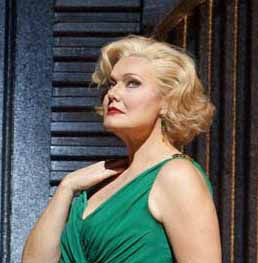
The Makropulos Case {14}
Metropolitan Opera House; 04/27/2012
Debuts: Emalie Savoy, Johan Reuter
Broadcast |
[Met Performance] CID:354501
Die Walküre {533}
Ring Cycle [110] Uncut
Metropolitan Opera House; 04/28/2012
Debut: Frank van Aken
Broadcast |
[Met Performance] CID:354502
La Traviata {976}
Metropolitan Opera House; 04/28/2012
|
[Met Performance] CID:354508
Siegfried {267}
Ring Cycle [110] Uncut
Metropolitan Opera House; 04/30/2012
Broadcast |
[Met Performance] CID:354509
The Makropulos Case {15}
Metropolitan Opera House; 05/01/2012
Debut: Christopher Feigum |
[Met Performance] CID:354511
La Traviata {977}
Metropolitan Opera House; 05/02/2012
Last performance: Richard Horowitz |
[Met Performance] CID:354514
Götterdämmerung {232}
Ring Cycle [110] Uncut
Metropolitan Opera House; 05/03/2012
Broadcast |
[Met Performance] CID:354518
Billy Budd {45}
Metropolitan Opera House; 05/04/2012
Debuts: John Daszak, Ryan McKinny, Joaquin Juan
Broadcast/Streamed |
[Met Performance] CID:354516
The Makropulos Case {16}
Metropolitan Opera House; 05/05/2012
Broadcast |
[Met Performance] CID:354517
Das Rheingold {165}
Ring Cycle [111] Uncut
Metropolitan Opera House; 05/05/2012
|
[Met Performance] CID:354519
Die Walküre {534}
Ring Cycle [111] Uncut
Metropolitan Opera House; 05/07/2012
Broadcast/Streamed |
[Met Performance] CID:354524
The Makropulos Case {17}
Metropolitan Opera House; 05/08/2012
Broadcast |
[Met Performance] CID:354525
Siegfried {268}
Ring Cycle [111] Uncut
Metropolitan Opera House; 05/09/2012
|
[Met Performance] CID:354526
Billy Budd {46}
Metropolitan Opera House; 05/10/2012
Broadcast |
[Met Performance] CID:354527
The Makropulos Case {18}
Metropolitan Opera House; 05/11/2012
|
[Met Performance] CID:354528
Götterdämmerung {233}
Ring Cycle [111] Uncut
Metropolitan Opera House; 05/12/2012
|
[Met Performance] CID:354529
Billy Budd {47}
Metropolitan Opera House; 05/12/2012
|
[Met Concert/Gala] CID:354531
The MET Orchestra
Carnegie Hall, New York; 05/20/2012
|
[Met Concert/Gala] CID:354533
The Met's Summer Recital Series
New York, Manhattan, Central Park; 07/25/2012
|
[Met Concert/Gala] CID:354534
The Met's Summer Recital Series
New York, Brooklyn, Brooklyn Bridge Park; 07/27/2012
|
[Met Concert/Gala] CID:354535
The Met's Summer Recital Series
New York, Bronx, Crotona Park; 07/31/2012
|
[Met Concert/Gala] CID:354536
The Met's Summer Recital Series
New York, Staten Island, Clove Lakes Park; 08/02/2012
|
[Met Concert/Gala] CID:354537
The Met's Summer Recital Series
New York, Manhattan, Jackie Robinson Park; 08/07/2012
|
[Met Concert/Gala] CID:354538
The Met's Summer Recital Series
New York, Queens, Socrates Sculpture Park; 08/09/2012
|
[Met Concert/Gala] CID:354541
Remembering Whit Kellogg
Metropolitan Opera Ballet Pianist since 1981
Metropolitan Opera House; 09/20/2012
|
[Met Performance] CID:354544
New Production
L'Elisir d'Amore {268}
Metropolitan Opera House; 09/24/2012
Opening Night {128}
Peter Gelb, General Manager
Broadcast/Streamed/Times Squarecast/Plazacast
Review |
[Met Performance] CID:354549
Turandot {287}
Metropolitan Opera House; 09/26/2012
Debuts: Ryan Speedo Green, Oriada Islami Prifti
Broadcast |
[Met Performance] CID:354550
L'Elisir d'Amore {269}
Metropolitan Opera House; 09/27/2012
|
[Met Performance] CID:354553
Carmen {973}
Metropolitan Opera House; 09/28/2012
Debut: Michele Mariotti
Broadcast |
[Met Performance] CID:354555
Il Trovatore {626}
Metropolitan Opera House; 09/29/2012
Debut: Guanqun Yu
Review |
[Met Performance] CID:354556
Turandot {288}
Metropolitan Opera House; 09/29/2012
|
[Met Performance] CID:354559
L'Elisir d'Amore {270}
Metropolitan Opera House; 10/01/2012
Broadcast |
[Met Performance] CID:354564
Carmen {974}
Metropolitan Opera House; 10/02/2012
|
[Met Performance] CID:354566
Turandot {289}
Metropolitan Opera House; 10/03/2012
Broadcast/Streamed |
[Met Performance] CID:354567
Il Trovatore {627}
Metropolitan Opera House; 10/04/2012
Debut: Carmen Giannattasio
Broadcast |
[Met Performance] CID:354569
L'Elisir d'Amore {271}
Metropolitan Opera House; 10/05/2012
|
[Met Performance] CID:354570
Turandot {290}
Metropolitan Opera House; 10/06/2012
|
[Met Performance] CID:354571
Carmen {975}
Metropolitan Opera House; 10/06/2012
|
[Met Performance] CID:354574
Il Trovatore {628}
Metropolitan Opera House; 10/08/2012
|
[Met Performance] CID:354575
Otello {315}
Metropolitan Opera House; 10/09/2012
Broadcast/Streamed |
[Met Performance] CID:354576
L'Elisir d'Amore {272}
Metropolitan Opera House; 10/10/2012
Broadcast |
[Met Performance] CID:354581
Carmen {976}
Metropolitan Opera House; 10/11/2012
Broadcast |
[Met Performance] CID:354584
Il Trovatore {629}
Metropolitan Opera House; 10/12/2012
|
[Met Performance] CID:354585
L'Elisir d'Amore {273}
Metropolitan Opera House; 10/13/2012
HD Simulcast |
[Met Performance] CID:354586
Otello {316}
Metropolitan Opera House; 10/13/2012
Debut: Avgust Amonov |
[Met Concert/Gala] CID:354587
The MET Orchestra
Carnegie Hall, New York; 10/14/2012
|
[Met Performance] CID:354590
Carmen {977}
Metropolitan Opera House; 10/15/2012
Broadcast/Streamed |
[Met Performance] CID:354591
Otello {317}
Metropolitan Opera House; 10/16/2012
Broadcast |
[Met Performance] CID:354592
Il Trovatore {630}
Metropolitan Opera House; 10/17/2012
Debut: Angel Òdena
Broadcast |
[Met Performance] CID:354594
Carmen {978}
Metropolitan Opera House; 10/18/2012
|
[Met Performance] CID:354596
Otello {318}
Metropolitan Opera House; 10/20/2012
|
[Met Performance] CID:354597
Il Trovatore {631}
Metropolitan Opera House; 10/20/2012
|
[Met Performance] CID:354601

Metropolitan Opera Premiere
The Tempest {1}
Metropolitan Opera House; 10/23/2012
Debuts: Thomas Adès, Alek Shrader, Jasmine Catudal, Kym Barrett, Michel Beaulieu, David Leclerc, Crystal Pite
Broadcast/Streamed
Review |
[Met Performance] CID:354604
Il Trovatore {632}
Metropolitan Opera House; 10/25/2012
Broadcast |
[Met Performance] CID:354605
Le Nozze di Figaro {453}
Metropolitan Opera House; 10/26/2012
Debut: John Graham-Hall, Irene Roberts
Broadcast |
[Met Performance] CID:354606
Otello {319}
Metropolitan Opera House; 10/27/2012
HD Simulcast |
[Met Performance] CID:354607
The Tempest {2}
Metropolitan Opera House; 10/27/2012
|
[Met Performance] CID:354612
Cancelled Performance
10/29/2012
A scheduled performance of Le Nozze di Figaro was cancelled due to the destruction in the northeast caused by Hurricane Sandy. |
[Met Performance] CID:354613
Cancelled Performance
10/30/2012
A scheduled performance of Turandot was cancelled due to the destruction in the northeast caused by Hurricane Sandy. |
[Met Performance] CID:354616
The Tempest {3}
Metropolitan Opera House; 10/31/2012
Broadcast |
[Met Performance] CID:354619
Turandot {291}
Metropolitan Opera House; 11/02/2012
Debut: Janai Brugger
Broadcast |
[Met Performance] CID:354620
The Tempest {4}
Metropolitan Opera House; 11/03/2012
|
[Met Performance] CID:354621
Le Nozze di Figaro {454}
Metropolitan Opera House; 11/03/2012
|
[Met Performance] CID:354632
Turandot {292}
Metropolitan Opera House; 11/05/2012
|
[Met Performance] CID:354637
The Tempest {5}
Metropolitan Opera House; 11/06/2012
Broadcast |
[Met Performance] CID:354639
Le Nozze di Figaro {455}
Metropolitan Opera House; 11/07/2012
Broadcast |
[Met Performance] CID:354641
New Production
Un Ballo in Maschera {288}
Metropolitan Opera House; 11/08/2012
Debuts: Paul Steinberg, Adam Silverman, Maxine Braham
Broadcast/Streamed
Review |
[Met Performance] CID:354644
Turandot {293}
Metropolitan Opera House; 11/09/2012
|
[Met Performance] CID:354646
The Tempest {6}
Metropolitan Opera House; 11/10/2012
HD Simulcast |
[Met Performance] CID:354645
Le Nozze di Figaro {456}
Metropolitan Opera House; 11/10/2012
|
[Met Performance] CID:354647
Un Ballo in Maschera {289}
Metropolitan Opera House; 11/12/2012
|
[Met Performance] CID:354653
Le Nozze di Figaro {457}
Metropolitan Opera House; 11/13/2012
Broadcast |
[Met Performance] CID:355486
Così Fan Tutte
Peter Jay Sharp Theater, The Juilliard School, New York; 11/14/2012
|
[Met Performance] CID:354655
The Tempest {7}
Metropolitan Opera House; 11/14/2012
|
[Met Performance] CID:354657
Un Ballo in Maschera {290}
Metropolitan Opera House; 11/15/2012
Broadcast |
[Met Performance] CID:354661
La Clemenza di Tito {40}
Metropolitan Opera House; 11/16/2012
Debuts: Lucy Crowe, Toni Rubio
Broadcast /Streamed |
[Met Performance] CID:354662
The Tempest {8}
Metropolitan Opera House; 11/17/2012
|
[Met Performance] CID:355491
Così Fan Tutte
Peter Jay Sharp Theater, The Juilliard School, New York; 11/17/2012
|
[Met Performance] CID:354660
Le Nozze di Figaro {458}
Metropolitan Opera House; 11/17/2012
|
[Met Performance] CID:355492
Così Fan Tutte
Peter Jay Sharp Theater, The Juilliard School, New York; 11/19/2012
|
[Met Performance] CID:354666
Un Ballo in Maschera {291}
Metropolitan Opera House; 11/19/2012
Broadcast |
[Met Performance] CID:354669
La Clemenza di Tito {41}
Metropolitan Opera House; 11/20/2012
Broadcast |
[Met Performance] CID:354672
Aida {1123}
Metropolitan Opera House; 11/23/2012
Debuts: Liudmyla Monastyrska, Miklós Sebestyén
Broadcast/Streamed |
[Met Performance] CID:354670
La Clemenza di Tito {42}
Metropolitan Opera House; 11/24/2012
|
[Met Performance] CID:354671
Un Ballo in Maschera {292}
Metropolitan Opera House; 11/24/2012
|
[Met Performance] CID:354677
Aida {1124}
Metropolitan Opera House; 11/26/2012
|
[Met Performance] CID:354681
Un Ballo in Maschera {293}
Metropolitan Opera House; 11/27/2012
Broadcast |
[Met Performance] CID:354682
Don Giovanni {532}
Metropolitan Opera House; 11/28/2012
Debut: David Soar, Louisa Muller
Broadcast/Streamed |
[Met Performance] CID:354684
Aida {1125}
Metropolitan Opera House; 11/29/2012
Broadcast |
[Met Performance] CID:354687
Un Ballo in Maschera {294}
Metropolitan Opera House; 11/30/2012
|
[Met Performance] CID:354689
La Clemenza di Tito {43}
Metropolitan Opera House; 12/01/2012
HD Simulcast |
[Met Performance] CID:354690
Don Giovanni {533}
Metropolitan Opera House; 12/01/2012
|
[Met Concert/Gala] CID:354691
The MET Orchestra
Carnegie Hall, New York; 12/02/2012
|
[Met Performance] CID:354692
Aida {1126}
Metropolitan Opera House; 12/03/2012
|
[Met Performance] CID:354695
Un Ballo in Maschera {295}
Metropolitan Opera House; 12/04/2012
Broadcast/Streamed |
[Met Performance] CID:354698
Don Giovanni {534}
Metropolitan Opera House; 12/05/2012
Broadcast |
[Met Performance] CID:354701
La Clemenza di Tito {44}
Metropolitan Opera House; 12/06/2012
Broadcast |
[Met Performance] CID:354702
Aida {1127}
Metropolitan Opera House; 12/07/2012
|
[Met Performance] CID:354703
Un Ballo in Maschera {296}
Metropolitan Opera House; 12/08/2012
HD Simulcast |
[Met Performance] CID:354705
Don Giovanni {535}
Metropolitan Opera House; 12/08/2012
|
[Met Performance] CID:354706
La Clemenza di Tito {45}
Metropolitan Opera House; 12/10/2012
Debut: Géraldine Chauvet |
[Met Performance] CID:354709
Don Giovanni {536}
Metropolitan Opera House; 12/11/2012
|
[Met Performance] CID:354710
Aida {1128}
Metropolitan Opera House; 12/12/2012
Broadcast |
[Met Performance] CID:354717
Les Troyens {38}
Metropolitan Opera House; 12/13/2012
Debuts: Alex Springer, Julia Burrer
Broadcast/Streamed |
[Met Performance] CID:354718
Un Ballo in Maschera {297}
Metropolitan Opera House; 12/14/2012
|
[Met Performance] CID:354719
Aida {1129}
Metropolitan Opera House; 12/15/2012
HD Simulcast |
[Met Performance] CID:354720
Don Giovanni {537}
Metropolitan Opera House; 12/15/2012
|
[Met Performance] CID:354721
Les Troyens {39}
Metropolitan Opera House; 12/17/2012
|
[Met Performance] CID:354722
Premiere of abridged version
Il Barbiere di Siviglia {601}
Metropolitan Opera House; 12/18/2012
Broadcast/Streamed |
[Met Performance] CID:354729
Aida {1130}
Metropolitan Opera House; 12/19/2012
|
[Met Performance] CID:354730
Don Giovanni {538}
Metropolitan Opera House; 12/20/2012
Broadcast |
[Met Performance] CID:354735
Les Troyens {40}
Metropolitan Opera House; 12/21/2012
|
[Met Performance] CID:354736
Il Barbiere di Siviglia {602}
Metropolitan Opera House; 12/22/2012
Broadcast |
[Met Performance] CID:354737
Aida {1131}
Metropolitan Opera House; 12/22/2012
|
[Met Performance] CID:354745
Il Barbiere di Siviglia {603}
Metropolitan Opera House; 12/26/2012
|
[Met Performance] CID:354746
Les Troyens {41}
Metropolitan Opera House; 12/26/2012
Debut: Bryan Hymel
Broadcast/Streamed |
[Met Performance] CID:354754
Il Barbiere di Siviglia {604}
Metropolitan Opera House; 12/27/2012
Broadcast |
[Met Performance] CID:354755
Aida {1132}
Metropolitan Opera House; 12/28/2012
|
[Met Performance] CID:354760
Les Troyens {42}
Metropolitan Opera House; 12/29/2012
|
[Met Performance] CID:354757
Il Barbiere di Siviglia {605}
Metropolitan Opera House; 12/29/2012
|
[Met Performance] CID:354759
Metropolitan Opera Premiere
Maria Stuarda {1}
Metropolitan Opera House; 12/31/2012
Debut: Elza van den Heever
Broadcast/Streamed
Review |
[Met Performance] CID:354758
Les Troyens {43}
Metropolitan Opera House; 01/01/2013
|
[Met Performance] CID:354761
Turandot {294}
Metropolitan Opera House; 01/02/2013
|
[Met Performance] CID:354764
Il Barbiere di Siviglia {606}
Metropolitan Opera House; 01/03/2013
Debut: Holli Harrison
Broadcast |
[Met Performance] CID:354765
Maria Stuarda {2}
Metropolitan Opera House; 01/04/2013
Debut: Salvatore Cordella |
[Met Performance] CID:354766
Les Troyens {44}
Metropolitan Opera House; 01/05/2013
HD Simulcast |
[Met Performance] CID:354767
Il Barbiere di Siviglia {607}
Metropolitan Opera House; 01/05/2013
|
[Met Performance] CID:354770
Turandot {295}
Metropolitan Opera House; 01/07/2013
Broadcast |
[Met Performance] CID:354773
Maria Stuarda {3}
Metropolitan Opera House; 01/08/2013
Broadcast |
[Met Performance] CID:354778
Il Trovatore {633}
Metropolitan Opera House; 01/09/2013
|
[Met Performance] CID:354780
Turandot {296}
Metropolitan Opera House; 01/10/2013
|
[Met Performance] CID:354783
La Rondine {29}
Metropolitan Opera House; 01/11/2013
Debuts: Kristine Opolais, Evan Hughes, Stephanie Chigas, Sara Stewart, Christine Thomson Anderson
Broadcast/Streamed
Review |
[Met Performance] CID:354784
Il Trovatore {634}
Metropolitan Opera House; 01/12/2013
Broadcast |
[Met Performance] CID:354785
Maria Stuarda {4}
Metropolitan Opera House; 01/12/2013
|
[Met Performance] CID:354786
La Rondine {30}
Metropolitan Opera House; 01/14/2013
|
[Met Performance] CID:354777
Maria Stuarda {5}
Metropolitan Opera House; 01/15/2013
Broadcast |
[Met Performance] CID:354791
Il Trovatore {635}
Metropolitan Opera House; 01/16/2013
Broadcast |
[Met Performance] CID:354792
Le Comte Ory {9}
Metropolitan Opera House; 01/17/2013
Debuts: Pretty Yende, Nicola Ulivieri
Broadcast/Streamed |
[Met Performance] CID:354793
La Rondine {31}
Metropolitan Opera House; 01/18/2013
|
[Met Performance] CID:354794
Maria Stuarda {6}
Metropolitan Opera House; 01/19/2013
HD Simulcast |
[Met Performance] CID:354795
Il Trovatore {636}
Metropolitan Opera House; 01/19/2013
Debut: Elena Manistina |
[Met Performance] CID:354800
Le Comte Ory {10}
Metropolitan Opera House; 01/21/2013
|
[Met Performance] CID:354804
La Rondine {32}
Metropolitan Opera House; 01/22/2013
|
[Met Performance] CID:354808
Maria Stuarda {7}
Metropolitan Opera House; 01/23/2013
Broadcast |
[Met Performance] CID:354812
Il Trovatore {637}
Metropolitan Opera House; 01/24/2013
Broadcast/Streamed |
[Met Performance] CID:354821
Le Comte Ory {11}
Metropolitan Opera House; 01/25/2013
|
[Met Performance] CID:354823
La Rondine {33}
Metropolitan Opera House; 01/26/2013
Broadcast |
[Met Performance] CID:354824
Maria Stuarda {8}
Metropolitan Opera House; 01/26/2013
|
[Met Performance] CID:354827
New Production
Rigoletto {842}
Metropolitan Opera House; 01/28/2013
Debuts: Michael Mayer, Christine Jones, Susan Hilferty, Kevin Adams, Steven Hoggett, Robert Pomakov, Oksana Volkova
Broadcast/Streamed
Review |
[Met Performance] CID:354830
Le Comte Ory {12}
Metropolitan Opera House; 01/29/2013
|
[Met Performance] CID:354832
L'Elisir d'Amore {274}
Metropolitan Opera House; 01/30/2013
Broadcast |
[Met Performance] CID:354834
Rigoletto {843}
Metropolitan Opera House; 01/31/2013
|
[Met Performance] CID:354837
Le Comte Ory {13}
Metropolitan Opera House; 02/02/2013
Broadcast |
[Met Performance] CID:354836
L'Elisir d'Amore {275}
Metropolitan Opera House; 02/02/2013
|
[Met Performance] CID:354838
Rigoletto {844}
Metropolitan Opera House; 02/04/2013
Broadcast/Streamed |
[Met Performance] CID:354842
Le Comte Ory {14}
Metropolitan Opera House; 02/05/2013
Broadcast |
[Met Performance] CID:354844
L'Elisir d'Amore {276}
Metropolitan Opera House; 02/06/2013
|
[Met Performance] CID:354846
Rigoletto {845}
Metropolitan Opera House; 02/08/2013
|
[Met Performance] CID:354847
L'Elisir d'Amore {277}
Metropolitan Opera House; 02/09/2013
Broadcast |
[Met Performance] CID:354848

Carmen {979}
Metropolitan Opera House; 02/09/2013
Debuts: Nicolai Schukoff, Marco Nisticò |
[Met Performance] CID:354853
Rigoletto {846}
Metropolitan Opera House; 02/12/2013
Broadcast |
[Met Performance] CID:354856
Carmen {980}
Metropolitan Opera House; 02/13/2013
|
[Met Performance] CID:354861
New Production
Parsifal {289}
Metropolitan Opera House; 02/15/2013
Debuts: François Girard, Thibault Vancraenenbroeck, David Finn, Peter Flaherty, Serge Lamothe
Lauren McNeese, Jennifer Forni, Heather Johnson, Mario Chang, Rúni Brattaberg, Kiera Duffy |
[Met Performance] CID:354860
Rigoletto {847}
Metropolitan Opera House; 02/16/2013
HD Simulcast |
[Met Performance] CID:354859
Carmen {981}
Metropolitan Opera House; 02/16/2013
Debut: Ekaterina Scherbachenko |
[Met Performance] CID:354864
Parsifal {290}
Metropolitan Opera House; 02/18/2013
|
[Met Performance] CID:354857
Rigoletto {848}
Metropolitan Opera House; 02/19/2013
|
[Met Performance] CID:354865
Carmen {982}
Metropolitan Opera House; 02/20/2013
|
[Met Performance] CID:354862
Parsifal {291}
Metropolitan Opera House; 2/21/2013
Broadcast |
[Met Performance] CID:354871
Don Carlo {203}
Metropolitan Opera House; 02/22/2013
Debuts: Alexey Lavrov
Broadcast/Streamed |
[Met Performance] CID:354872
Carmen {983}
Metropolitan Opera House; 02/23/2013
Broadcast |
[Met Performance] CID:354873
Rigoletto {849}
Metropolitan Opera House; 02/23/2013
|
[Met Performance] CID:354875
Don Carlo {204}
Metropolitan Opera House; 02/25/2013
|
[Met Performance] CID:354869
Carmen {984}
Metropolitan Opera House; 02/26/2013
Debut: Andrew Richards
Broadcast/Streamed |
[Met Performance] CID:354878
Parsifal {292}
Metropolitan Opera House; 02/27/2013
Broadcast |
[Met Performance] CID:354879
Don Carlo {205}
Metropolitan Opera House; 02/28/2013
|
[Met Performance] CID:354883
Carmen {985}
Metropolitan Opera House; 03/01/2013
|
[Met Performance] CID:354884
Parsifal {293}
Metropolitan Opera House; 03/02/2013
HD Simulcast |
[Met Performance] CID:354888
Francesca da Rimini {38}
Metropolitan Opera House; 03/4/2013
Debuts: Dísella Làrusdóttir, Caitlin Lynch, Dustin Lucas
Broadcast/Streamed |
[Met Performance] CID:354889
Parsifal {294}
Metropolitan Opera House; 03/05/2013
|
[Met Performance] CID:354890
Don Carlo {206}
Metropolitan Opera House; 03/06/2013
Broadcast |
[Met Performance] CID:354894
Parsifal {295}
Metropolitan Opera House; 03/08/2013
|
[Met Performance] CID:354895
Don Carlo {207}
Metropolitan Opera House; 03/09/2013
Broadcast |
[Met Performance] CID:354896
Francesca da Rimini {39}
Metropolitan Opera House; 03/9/2013
|
[Met Concert/Gala] CID:354428
National Council Grand Finals Concert
Metropolitan Opera House; 03/10/2013
First appearance: Cedel, Brandon
Broadcast |
[Met Performance] CID:354901
Otello {320}
Metropolitan Opera House; 03/11/2013
|
[Met Performance] CID:354904
Francesca da Rimini {40}
Metropolitan Opera House; 03/12/2013
Broadcast |
[Met Performance] CID:354906
Don Carlo {208}
Metropolitan Opera House; 03/13/2013
|
[Met Performance] CID:354909
La Traviata {978}
Metropolitan Opera House; 03/14/2013
Broadcast/Streamed |
[Met Performance] CID:354912
Otello {321}
Metropolitan Opera House; 03/15/2013
|
[Met Performance] CID:354913
Francesca da Rimini {41}
Metropolitan Opera House; 03/16/2013
HD Simulcast |
[Met Performance] CID:354914
Don Carlo {209}
Metropolitan Opera House; 03/16/2013
|
[Met Performance] CID:354905
La Traviata {979}
Metropolitan Opera House; 03/18/2013
Broadcast |
[Met Performance] CID:354917
Francesca da Rimini {42}
Metropolitan Opera House; 03/19/2013
|
[Met Performance] CID:354922
Otello {322}
Metropolitan Opera House; 03/20/2013
Broadcast |
[Met Performance] CID:354924
Faust {748}
Metropolitan Opera House; 03/21/2013
Debut: Jonathon Loy
Broadcast/Streamed |
[Met Performance] CID:354926
Francesca da Rimini {43}
Metropolitan Opera House; 03/22/2013
|
[Met Performance] CID:354927
La Traviata {980}
Metropolitan Opera House; 03/23/2013
|
[Met Performance] CID:354928
Otello {323}
Metropolitan Opera House; 03/23/2013
|
[Met Performance] CID:354929
Faust {749}
Metropolitan Opera House; 03/25/2013
|
[Met Performance] CID:354931
La Traviata {981}
Metropolitan Opera House; 03/26/2013
|
[Met Performance] CID:354937
Otello {324}
Metropolitan Opera House; 03/27/2013
Debut: Marco Vratogna
Broadcast/Streamed |
[Met Performance] CID:354939
Faust {750}
Metropolitan Opera House; 03/28/2013
Broadcast |
[Met Performance] CID:354932
La Traviata {982}
Metropolitan Opera House; 03/30/2013
Broadcast |
[Met Performance] CID:354933
Otello {325}
Metropolitan Opera House; 03/30/2013
|
[Met Performance] CID:354940
Faust {751}
Metropolitan Opera House; 04/02/2013
|
[Met Performance] CID:354941
La Traviata {983}
Metropolitan Opera House; 04/03/2013
Debut: Zurab Ninua
Broadcast |
[Met Performance] CID:354946
New Production
Giulio Cesare {24}
Metropolitan Opera House; 04/04/2013
Debuts: Guido Loconsolo, Rachid Ben Abdeslam, Christina Luzwick, Karla Dionne Victum, Justin Flores, Kei Tsuruharatani, Sean Chin, Matthew Cusick, Tony Guerrero, Arthur Lazalde, Shad Ramsey, Collin Ware, Philip Willingham, Christian Zaremba
Broadcast/Streamed |
[Met Performance] CID:354947
Faust {752}
Metropolitan Opera House; 04/05/2013
|
[Met Performance] CID:354956
Das Rheingold {166}
Ring Cycle [111] Uncut
Metropolitan Opera House; 04/06/2013
Broadcast |
[Met Performance] CID:354948
La Traviata {984}
Metropolitan Opera House; 04/06/2013
|
[Met Performance] CID:354954
Giulio Cesare {25}
Metropolitan Opera House; 04/09/2013
Broadcast/Streamed |
[Met Performance] CID:354958
Giulio Cesare {26}
Metropolitan Opera House; 04/12/2013
Debut: Zephyrus White |
[Met Performance] CID:354960
Die Walküre {535}
Ring Cycle [111] Uncut
Metropolitan Opera House; 04/13/2013
Debuts: Andrew Sritheran, Martina Serafin, Deborah Mayer, Rebecca Ringle
Broadcast |
[Met Performance] CID:354961
Rigoletto {850}
Metropolitan Opera House; 04/13/2013
Debut: Enrico Giuseppe Iori, Wallis Giunta |
[Met Performance] CID:354962
Rigoletto {851}
Metropolitan Opera House; 04/16/2013
Broadcast/Streamed |
[Met Performance] CID:354971
Giulio Cesare {27}
Metropolitan Opera House; 04/19/2013
|
[Met Performance] CID:354973
Siegfried {269}
Ring Cycle [111] Uncut
Metropolitan Opera House; 04/20/2013
Broadcast |
[Met Performance] CID:354972
Rigoletto {852}
Metropolitan Opera House; 04/20/2013
|
[Met Performance] CID:354975
Giulio Cesare {28}
Metropolitan Opera House; 04/22/2013
Broadcast/Streamed |
[Met Performance] CID:354979
Götterdämmerung {234}
Ring Cycle [111] Uncut
Metropolitan Opera House; 04/23/2013
Broadcast |
[Met Performance] CID:354981
Rigoletto {853}
Metropolitan Opera House; 04/24/2013
Broadcast |
[Met Performance] CID:354983
Das Rheingold {167}
Ring Cycle [112] Uncut
Metropolitan Opera House; 04/25/2013
|
[Met Performance] CID:354985
Die Walküre {536}
Ring Cycle [112] Uncut
Metropolitan Opera House; 04/26/2013
|
[Met Performance] CID:354987
Giulio Cesare {29}
Metropolitan Opera House; 04/27/2013
HD Simulcast |
[Met Performance] CID:354986
Rigoletto {854}
Metropolitan Opera House; 04/27/2013
|
[Met Performance] CID:354989
Siegfried {270}
Ring Cycle [112] Uncut
Metropolitan Opera House; 04/29/2013
Broadcast |
[Met Performance] CID:354993
Giulio Cesare {30}
Metropolitan Opera House; 04/30/2013
|
[Met Performance] CID:354995
Rigoletto {855}
Metropolitan Opera House; 05/01/2013
Broadcast/Streamed |
[Met Performance] CID:354997
Götterdämmerung {235}
Ring Cycle [112] Uncut
Metropolitan Opera House; 05/02/2013
|
[Met Performance] CID:354998
Giulio Cesare {31}
Metropolitan Opera House; 05/03/2013
|
[Met Performance] CID:355000
Dialogues des Carmélites {55}
Metropolitan Opera House; 05/04/2013
Debuts: Sunghye Lee, Kathleen Mangiameli, Amanda Osorio
Broadcast |
[Met Performance] CID:354999
Das Rheingold {168}
Ring Cycle [113] Uncut
Metropolitan Opera House; 05/04/2013
|
[Met Performance] CID:355001
Die Walküre {537}
Ring Cycle [113] Uncut
Metropolitan Opera House; 05/06/2013
Broadcast |
[Met Performance] CID:355002
Giulio Cesare {32}
Metropolitan Opera House; 05/07/2013
|
[Met Performance] CID:355008
Siegfried {271}
Ring Cycle [113] Uncut
Metropolitan Opera House; 05/08/2013
Debut: Lars Cleveman |
[Met Performance] CID:355009
Dialogues des Carmélites {56}
Metropolitan Opera House; 05/09/2013
Broadcast/Streamed |
[Met Performance] CID:355010
Giulio Cesare {33}
Metropolitan Opera House; 05/10/2013
|
[Met Performance] CID:355011
Götterdämmerung {236}
Ring Cycle [113] Uncut
Metropolitan Opera House; 05/11/2013
Debut: Ronnita Miller
Broadcast |
[Met Performance] CID:355012
Dialogues des Carmélites {57}
Metropolitan Opera House; 05/11/2013
Debut: Philip Skinner |
[Met Concert/Gala] CID:355014
The MET Orchestra
Carnegie Hall, New York; 05/19/2013
Broadcast/Streamed |
[Met Concert/Gala] CID:355015
The Met's Summer Recital Series
New York, Manhattan, Central Park; 07/16/2013
|
[Met Concert/Gala] CID:355016
The Met's Summer Recital Series
New York, Brooklyn, Brooklyn Bridge Park; 07/19/2013
|
[Met Concert/Gala] CID:355018
The Met's Summer Recital Series
New York, Bronx, Crotona Park; 07/23/2013
First appearance: Ying Fang |
[Met Concert/Gala] CID:355019
The Met's Summer Recital Series
New York, Manhattan, Jackie Robinson Park; 07/30/2013
|
[Met Performance] CID:355023
New Production
Eugene Onegin {136}
Metropolitan Opera House; 09/23/2013
Opening Night {129}
Peter Gelb, General Manager
Debuts: Deborah Warner, Fiona Shaw, Tom Pye, Chloe Obolensky, Ian William Galloway, Finn Ross
Broadcast/Streamed/Times Squarecast/Plazacast
Review |
[Met Performance] CID:355024
Così Fan Tutte {179}
Metropolitan Opera House; 09/24/2013
Broadcast
Return of James Levine |
[Met Performance] CID:355025
Eugene Onegin {137}
Metropolitan Opera House; 09/26/2013
|
[Met Performance] CID:355027

The Nose {7}
Metropolitan Opera House; 09/28/2013
Debuts: Ying Fang, Matt Boehler, Joseph Barron, Kevin Glavin, Christopher Job
Broadcast/Streamed |
[Met Performance] CID:355026
Così Fan Tutte {180}
Metropolitan Opera House; 09/28/2013
|
[Met Performance] CID:355029
Norma {148}
Metropolitan Opera House; 09/30/2013
Debut: Siân Davies
Broadcast |
[Met Performance] CID:355037
Eugene Onegin {138}
Metropolitan Opera House; 10/01/2013
Broadcast |
[Met Performance] CID:355039
Così Fan Tutte {181}
Metropolitan Opera House; 10/02/2013
Broadcast/Streamed |
[Met Performance] CID:355040
The Nose {8}
Metropolitan Opera House; 10/03/2013
|
[Met Performance] CID:355041
Norma {149}
Metropolitan Opera House; 10/04/2013
|
[Met Performance] CID:355042
Eugene Onegin {139}
Metropolitan Opera House; 10/05/2013
HD Simulcast |
[Met Performance] CID:355043
Così Fan Tutte {182}
Metropolitan Opera House; 10/05/2013
|
[Met Performance] CID:355047
Norma {150}
Metropolitan Opera House; 10/07/2013
|
[Met Performance] CID:355051
The Nose {9}
Metropolitan Opera House; 10/08/2013
Broadcast |
[Met Performance] CID:355053
Eugene Onegin {140}
Metropolitan Opera House; 10/09/2013
|
[Met Performance] CID:355055
Norma {151}
Metropolitan Opera House; 10/10/2013
|
[Met Performance] CID:355060

A Midsummer Night's Dream {14}
Metropolitan Opera House; 10/11/2013
Debuts: Riley Costello, Kiki Porter, Benjamin P. Wenzelberg, Thatcher Pitkoff
Broadcast/Streamed |
[Met Performance] CID:355058
The Nose {10}
Metropolitan Opera House; 10/12/2013
|
[Met Performance] CID:355059
Eugene Onegin {141}
Metropolitan Opera House; 10/12/2013
|
[Met Concert/Gala] CID:355061
The MET Orchestra
Carnegie Hall, New York; 10/13/2013
Broadcast |
[Met Performance] CID:355063
Norma {152}
Metropolitan Opera House; 10/14/2013
Broadcast/Streamed |
[Met Performance] CID:355064
A Midsummer Night's Dream {15}
Metropolitan Opera House; 10/15/2013
Broadcast |
[Met Performance] CID:355068
Eugene Onegin {142}
Metropolitan Opera House; 10/16/2013
Broadcast |
[Met Performance] CID:355072
The Nose {11}
Metropolitan Opera House; 10/17/2013
|
[Met Performance] CID:355074
Norma {153}
Metropolitan Opera House; 10/18/2013
|
[Met Performance] CID:355075
A Midsummer Night's Dream {16}
Metropolitan Opera House; 10/19/2013
|
[Met Performance] CID:355076
Eugene Onegin {143}
Metropolitan Opera House; 10/19/2013
|
[Met Performance] CID:355077
United States Premiere
Two Boys {1}
Metropolitan Opera House; 10/21/2013
Debuts: Hofesh Shechter, Nicol Scott, Christopher Bolduc, Andrew Pulver, Juan José de León, Sarah Mostov, Maria D'Amato
Broadcast/Streamed
Review |
[Met Performance] CID:355102
The Nose {12}
Metropolitan Opera House; 10/22/2013
Broadcast |
[Met Performance] CID:355084
A Midsummer Night's Dream {17}
Metropolitan Opera House; 10/23/2013
|
[Met Performance] CID:355088
Norma {154}
Metropolitan Opera House; 10/24/2013
Debut: Ievgen Orlov
Broadcast |
[Met Performance] CID:355089
Two Boys {2}
Metropolitan Opera House; 10/25/2013
|
[Met Performance] CID:355078
The Nose {13}
Metropolitan Opera House; 10/26/2013
HD Simulcast |
[Met Performance] CID:355090
A Midsummer Night's Dream {18}
Metropolitan Opera House; 10/26/2013
|
[Met Performance] CID:355091
Norma {155}
Metropolitan Opera House; 10/28/2013
Broadcast |
[Met Performance] CID:355092
Tosca {926}
Metropolitan Opera House; 10/29/2013
Broadcast/Streamed |
[Met Performance] CID:355093
Two Boys {3}
Metropolitan Opera House; 10/30/2013
|
[Met Performance] CID:355098
A Midsummer Night's Dream {19}
Metropolitan Opera House; 10/31/2013
Broadcast |
[Met Performance] CID:355099
Norma {156}
Metropolitan Opera House; 11/01/2013
|
[Met Performance] CID:355113
Two Boys {4}
Metropolitan Opera House; 11/02/2013
|
[Met Performance] CID:355101
Tosca {927}
Metropolitan Opera House; 11/02/2013
|
[Met Performance] CID:355105
Tosca {928}
Metropolitan Opera House; 11/05/2013
Broadcast |
[Met Performance] CID:355109
Two Boys {5}
Metropolitan Opera House; 11/06/2013
Broadcast |
[Met Performance] CID:355114
Die Frau ohne Schatten {60}
Metropolitan Opera House; 11/07/2013
Debuts: Anne Schwanewilms, Nathan Stark, Anthony Kalil, Jihee Kim, Megan Marino, Danielle Talamantes, Jeongcheol Cha, Brandon Cedel, Andrey Nemzer, Matt Gibson
Broadcast/Streamed |
[Met Performance] CID:355116
Tosca {929}
Metropolitan Opera House; 11/09/2013
HD Simulcast |
[Met Performance] CID:355117
Two Boys {6}
Metropolitan Opera House; 11/09/2013
|
[Met Performance] CID:355119
Rigoletto {856}
Metropolitan Opera House; 11/11/2013
Debuts: Pablo Heras-Casado, Irina Lungu
Broadcast/Streamed |
[Met Performance] CID:355123
Die Frau ohne Schatten {61}
Metropolitan Opera House; 11/12/2013
|
[Met Performance] CID:355127
Tosca {930}
Metropolitan Opera House; 11/13/2013
Broadcast |
[Met Performance] CID:355128
Two Boys {7}
Metropolitan Opera House; 11/14/2013
Debut: Nicky Spence
Broadcast |
[Met Performance] CID:355134
Rigoletto {857}
Metropolitan Opera House; 11/15/2013
|
[Met Performance] CID:355130
Tosca {931}
Metropolitan Opera House; 11/16/2013
|
[Met Performance] CID:355131
Die Frau ohne Schatten {62}
Metropolitan Opera House; 11/16/2013
Debut: Meagan Miller |
[Met Performance] CID:355129
Rigoletto {858}
Metropolitan Opera House; 11/18/2013
Broadcast |
[Met Performance] CID:355143
Die Frau ohne Schatten {63}
Metropolitan Opera House; 11/20/2013
Broadcast |
[Met Performance] CID:355145
Rigoletto {859}
Metropolitan Opera House; 11/21/2013
Debut: Sonya Yoncheva |
[Met Performance] CID:355147
Der Rosenkavalier {378}
Metropolitan Opera House; 11/22/2013
Debut: Wolfgang Ablinger-Sperrhacke, Ysai Huebner
Broadcast/Streamed |
[Met Performance] CID:355149
Die Frau ohne Schatten {64}
Metropolitan Opera House; 11/23/2013
|
[Met Performance] CID:355150
Eugene Onegin {144}
Metropolitan Opera House; 11/23/2013
Debut: Alexander Vedernikov, Elena Maximova |
[Met Performance] CID:355151
Der Rosenkavalier {379}
Metropolitan Opera House; 11/25/2013
Broadcast |
[Met Performance] CID:355155
Die Frau ohne Schatten {65}
Metropolitan Opera House; 11/26/2013
Broadcast/Streamed |
[Met Performance] CID:355156
Rigoletto {860}
Metropolitan Opera House; 11/27/2013
|
[Met Performance] CID:355158
Eugene Onegin {145}
Metropolitan Opera House; 11/29/2013
|
[Met Performance] CID:355159
Der Rosenkavalier {380}
Metropolitan Opera House; 11/30/2013
|
[Met Performance] CID:355160
Rigoletto {861}
Metropolitan Opera House; 11/30/2013
|
[Met Performance] CID:355161
Eugene Onegin {146}
Metropolitan Opera House; 12/02/2013
Broadcast |
[Met Performance] CID:355165
Der Rosenkavalier {381}
Metropolitan Opera House; 12/03/2013
Debut: Daniela Sindram |
[Met Performance] CID:355170
Rigoletto {862}
Metropolitan Opera House; 12/04/2013
|
[Met Performance] CID:355172
Eugene Onegin {147}
Metropolitan Opera House; 12/05/2013
|
[Met Performance] CID:355173
New Production
Falstaff {176}
Metropolitan Opera House; 12/06/2013
Debuts: Peter Van Praet, Paolo Fanale, Carlo Bosi, Christian Van Horn
Broadcast/Streamed
Review |
[Met Performance] CID:355174
Rigoletto {863}
Metropolitan Opera House; 12/07/2013
Broadcast |
[Met Performance] CID:355175
Der Rosenkavalier {382}
Metropolitan Opera House; 12/07/2013
|
[Met Performance] CID:355169
Falstaff {177}
Metropolitan Opera House; 12/09/2013
Debut: Serban Vasile
Broadcast |
[Met Performance] CID:355178
Der Rosenkavalier {383}
Metropolitan Opera House; 12/10/2013
Broadcast/Streamed |
[Met Performance] CID:355183
Tosca {932}
Metropolitan Opera House; 12/11/2013
|
[Met Performance] CID:355185
Eugene Onegin {148}
Metropolitan Opera House; 12/12/2013
|
[Met Performance] CID:355187
Der Rosenkavalier {384}
Metropolitan Opera House; 12/13/2013
|
[Met Performance] CID:355188
Falstaff {178}
Metropolitan Opera House; 12/14/2013
HD Simulcast |
[Met Performance] CID:355190
Tosca {933}
Metropolitan Opera House; 12/14/2013
|
[Met Performance] CID:355192
Die Zauberflöte {409}
Metropolitan Opera House; 12/16/2013
Debuts: Jane Glover, Andre Gulick, Julius Ahn
Broadcast/Streamed |
[Met Performance] CID:355196
Tosca {934}
Metropolitan Opera House; 12/17/2013
Debut: Ricardo Tamura |
[Met Performance] CID:355199
Falstaff {179}
Metropolitan Opera House; 12/18/2013
|
[Met Performance] CID:355204
Tosca {935}
Metropolitan Opera House; 12/20/2013
|
[Met Performance] CID:355205
Falstaff {180}
Metropolitan Opera House; 12/21/2013
|
[Met Performance] CID:355206
Die Zauberflöte {410}
Metropolitan Opera House; 12/21/2013
|
[Met Concert/Gala] CID:355207
The MET Orchestra
Carnegie Hall, New York; 12/22/2013
Broadcast |
[Met Performance] CID:355208
Tosca {936}
Metropolitan Opera House; 12/23/2013
Broadcast/Streamed |
[Met Performance] CID:355209
Die Zauberflöte {411}
Metropolitan Opera House; 12/24/2013
Debut: Connor Tsui
|
[Met Performance] CID:355215
Die Zauberflöte {412}
Metropolitan Opera House; 12/26/2013
|
[Met Performance] CID:355216
Falstaff {181}
Metropolitan Opera House; 12/27/2013
|
[Met Performance] CID:355217
Tosca {937}
Metropolitan Opera House; 12/28/2013
Broadcast |
[Met Performance] CID:355218
Die Zauberflöte {413}
Metropolitan Opera House; 12/28/2013
Debut: Kathryn Lewek |
[Met Performance] CID:355220
Die Zauberflöte {414}
Metropolitan Opera House; 12/30/2013
|
[Met Performance] CID:355221
Falstaff {182}
Metropolitan Opera House; 12/30/2013
|
[Met Performance] CID:355214
New Production
Die Fledermaus {210}
Metropolitan Opera House; 12/31/2013
Debuts: Jeremy Sams, Douglas Carter Beane, Jen Schriever, Stephen Mear, Danny Burstein, Betsy Wolfe, Jason Simon, Andrea Coleman, Nathan Carlisle
Broadcast/Streamed |
[Met Performance] CID:355226
Die Zauberflöte {415}
Metropolitan Opera House; 01/02/2014
|
[Met Performance] CID:355230
Falstaff {183}
Metropolitan Opera House; 01/03/2014
|
[Met Performance] CID:355229
Die Zauberflöte {416}
Metropolitan Opera House; 01/04/2014
Broadcast |
[Met Performance] CID:355231
Die Fledermaus {211}
Metropolitan Opera House; 01/04/2014
|
[Met Performance] CID:355232
Falstaff {184}
Metropolitan Opera House; 01/06/2014
Broadcast |
[Met Performance] CID:355236
Die Fledermaus {212}
Metropolitan Opera House; 01/07/2014
|
[Met Performance] CID:355238
L'Elisir d'Amore {278}
Metropolitan Opera House; 01/09/2014
Debut: Andriana Chuchman
Broadcast/Streamed |
[Met Performance] CID:355241
Die Fledermaus {213}
Metropolitan Opera House; 01/11/2014
Broadcast |
[Met Performance] CID:355242
Falstaff {185}
Metropolitan Opera House; 01/11/2014
|
[Met Performance] CID:355244
L'Elisir d'Amore {279}
Metropolitan Opera House; 01/13/2014
|
[Met Performance] CID:355245
La Bohème {1246}
Metropolitan Opera House; 01/14/2014
Broadcast/Streamed |
[Met Performance] CID:355250
Die Fledermaus {214}
Metropolitan Opera House; 01/15/2014
Broadcast |
[Met Performance] CID:355251
Madama Butterfly {843}
Metropolitan Opera House; 01/16/2014
Debuts: Amanda Echalaz, Scott Hendricks, Maya Lahyani
Broadcast |
[Met Performance] CID:355254
L'Elisir d'Amore {280}
Metropolitan Opera House; 01/17/2014
|
[Met Performance] CID:355255
Die Fledermaus {215}
Metropolitan Opera House; 01/18/2014
|
[Met Performance] CID:355256
La Bohème {1247}
Metropolitan Opera House; 01/18/2014
|
[Met Performance] CID:355258
Madama Butterfly {844}
Metropolitan Opera House; 01/20/2014
|
[Met Performance] CID:355252
L'Elisir d'Amore {281}
Metropolitan Opera House; 01/21/2014
Broadcast |
[Met Performance] CID:355259
La Bohème {1248}
Metropolitan Opera House; 01/22/2014
|
[Met Performance] CID:355265
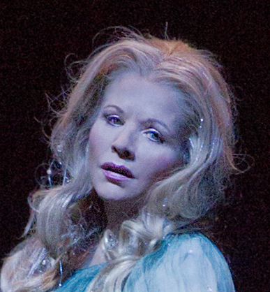
Rusalka {21}
Metropolitan Opera House; 01/23/2014
Debut: Emily Magee
Broadcast/Streamed |
[Met Performance] CID:355267
Madama Butterfly {845}
Metropolitan Opera House; 01/24/2014
|
[Met Performance] CID:355268
L'Elisir d'Amore {282}
Metropolitan Opera House; 01/25/2014
Broadcast |
[Met Performance] CID:355269
La Bohème {1249}
Metropolitan Opera House; 01/25/2014
|
[Met Performance] CID:355271
Rusalka {22}
Metropolitan Opera House; 01/27/2014
Broadcast |
[Met Performance] CID:355272
Madama Butterfly {846}
Metropolitan Opera House; 01/28/2014
|
[Met Performance] CID:355276
L'Elisir d'Amore {283}
Metropolitan Opera House; 01/29/2014
Broadcast/Streamed |
[Met Performance] CID:355278
La Bohème {1250}
Metropolitan Opera House; 01/30/2014
|
[Met Performance] CID:355282
Rusalka {23}
Metropolitan Opera House; 01/31/2014
|
[Met Performance] CID:355284
Madama Butterfly {847}
Metropolitan Opera House; 02/01/2014
Broadcast |
[Met Performance] CID:355285
L'Elisir d'Amore {284}
Metropolitan Opera House; 02/01/2014
|
[Met Performance] CID:355286
Die Fledermaus {216}
Metropolitan Opera House; 02/03/2014
|
[Met Performance] CID:355277
Rusalka {24}
Metropolitan Opera House; 02/04/2014
Broadcast |
[Met Performance] CID:355288
Die Fledermaus {217}
Metropolitan Opera House; 02/05/2014
|
[Met Performance] CID:355301
New Production
Prince Igor {11}
Metropolitan Opera House; 02/06/2014
Debuts: Dmitri Tcherniakov, Elena Zaitseva, Itzik Galili, S. Katy Tucker, Sergey Semishkur, Oksana Dyka, Kiri Deonarine, Mikhail Vekua
Broadcast/Streamed |
[Met Performance] CID:355294
Madama Butterfly {848}
Metropolitan Opera House; 02/07/2014
|
[Met Performance] CID:355295
Rusalka {25}
Metropolitan Opera House; 02/08/2014
HD Simulcast |
[Met Performance] CID:355296
Die Fledermaus {218}
Metropolitan Opera House; 02/08/2014
|
[Met Performance] CID:355302
Prince Igor {12}
Metropolitan Opera House; 02/10/2014
Broadcast |
[Met Performance] CID:355303
Die Fledermaus {219}
Metropolitan Opera House; 02/11/2014
|
[Met Performance] CID:355998
A Concert of Comic Operas: Scenes from works by Berlioz, Donizetti, Mozart and Stravinsky's one act Mavra
Peter Jay Sharp Theater, The Juilliard School, New York; 02/11/2014
|
[Met Performance] CID:355298
Rusalka {26}
Metropolitan Opera House; 02/12/2014
|
[Met Performance] CID:355304
Die Fledermaus {220}
Metropolitan Opera House; 02/13/2014
Broadcast/Streamed |
[Met Performance] CID:355309
Prince Igor {13}
Metropolitan Opera House; 02/14/2014
|
[Met Performance] CID:355999
A Concert of Comic Operas: Scenes from works by Berlioz, Donizetti, Mozart and Stravinsky's one act Mavra
Peter Jay Sharp Theater, The Juilliard School, New York; 02/14/2014
|
[Met Performance] CID:355311
Die Fledermaus {221}
Metropolitan Opera House; 02/15/2014
|
[Met Performance] CID:355312
Rusalka {27}
Metropolitan Opera House; 02/15/2014
Debut: Tyler Duncan |
[Met Performance] CID:356000
A Concert of Comic Operas: Scenes from works by Berlioz, Donizetti, Mozart and Stravinsky's one act Mavra
Peter Jay Sharp Theater, The Juilliard School, New York; 02/16/2014
|
[Met Performance] CID:355328
Prince Igor {14}
Metropolitan Opera House; 02/17/2014
|
[Met Performance] CID:355319
New Production
Werther {74}
Metropolitan Opera House; 02/18/2014
Debuts: Sara Erde, Sophie Koch, David Bizic, Richard Hausman, Helena Abbott, Daniel Katzman, Thomas White
Broadcast/Streamed |
[Met Performance] CID:355321
Die Fledermaus {222}
Metropolitan Opera House; 02/20/2014
Broadcast |
[Met Performance] CID:355322
Prince Igor {15}
Metropolitan Opera House; 02/21/2014
|
[Met Performance] CID:355324
Werther {75}
Metropolitan Opera House; 02/22/2014
|
[Met Performance] CID:355323
Die Fledermaus {223}
Metropolitan Opera House; 02/22/2014
|
[Met Performance] CID:355318
Prince Igor {16}
Metropolitan Opera House; 02/24/2014
Broadcast |
[Met Performance] CID:355329
Werther {76}
Metropolitan Opera House; 02/25/2014
|
[Met Performance] CID:355334
List of Selections
The Enchanted Island {11}
Metropolitan Opera House; 02/26/2014
Debuts: Nicholas Pallesen, Norman Shankle
Broadcast/Streamed |
[Met Performance] CID:355336
Werther {77}
Metropolitan Opera House; 02/28/2014
|
[Met Performance] CID:355337
Prince Igor {17}
Metropolitan Opera House; 03/01/2014
HD Simulcast |
[Met Performance] CID:355338
The Enchanted Island {12}
Metropolitan Opera House; 03/01/2014
|
[Met Performance] CID:355341
Werther {78}
Metropolitan Opera House; 03/03/2014
Debuts: Jean-François Borras, Mercer Patterson
Broadcast |
[Met Performance] CID:355342
Prince Igor {18}
Metropolitan Opera House; 03/04/2014
|
[Met Performance] CID:355347
The Enchanted Island {13}
Metropolitan Opera House; 03/05/2014
|
[Met Performance] CID:355349
Wozzeck {65}
Metropolitan Opera House; 03/06/2014
Debuts: Clive Bayley, Anthony Reznikovsky, Bradley Moore
Broadcast/Streamed |
[Met Performance] CID:355351
Werther {79}
Metropolitan Opera House; 03/07/2014
|
[Met Performance] CID:355352
The Enchanted Island {14}
Metropolitan Opera House; 03/08/2014
Broadcast |
[Met Performance] CID:355353
Prince Igor {19}
Metropolitan Opera House; 03/08/2014
|
[Met Performance] CID:355348
Vittorio Grigolo in Recital
Metropolitan Opera House; 03/09/2014
|
[Met Performance] CID:355358
Wozzeck {66}
Metropolitan Opera House; 03/10/2014
|
[Met Performance] CID:355360
Werther {80}
Metropolitan Opera House; 03/11/2014
Broadcast |
[Met Performance] CID:355364
The Enchanted Island {15}
Metropolitan Opera House; 03/12/2014
|
[Met Performance] CID:355367
Wozzeck {67}
Metropolitan Opera House; 03/13/2014
|
[Met Performance] CID:355368
La Sonnambula {75}
Metropolitan Opera House; 03/14/2014
Broadcast/Streamed |
[Met Performance] CID:355369
Werther {81}
Metropolitan Opera House; 03/15/2014
HD Simulcast |
[Met Performance] CID:355370
The Enchanted Island {16}
Metropolitan Opera House; 03/15/2014
|
[Met Performance] CID:355371
Wozzeck {68}
Metropolitan Opera House; 03/17/2014
|
[Met Performance] CID:355377
La Sonnambula {76}
Metropolitan Opera House; 03/18/2014
Broadcast |
[Met Performance] CID:355378
La Bohème {1251}
Metropolitan Opera House; 03/19/2014
Debuts: Anita Hartig, Jennifer Rowley, Nicolas Testé |
[Met Performance] CID:355382
The Enchanted Island {17}
Metropolitan Opera House; 03/20/2014
Broadcast/Streamed |
[Met Performance] CID:355383
La Sonnambula {77}
Metropolitan Opera House; 03/21/2014
|
[Met Performance] CID:355384
Wozzeck {69}
Metropolitan Opera House; 03/22/2014
Broadcast |
[Met Performance] CID:355385
La Bohème {1252}
Metropolitan Opera House; 03/22/2014
|
[Met Performance] CID:355386
Andrea Chénier {180}
Metropolitan Opera House; 03/24/2014
Debut: Olesya Petrova
Broadcast/Streamed |
[Met Performance] CID:355392
La Sonnambula {78}
Metropolitan Opera House; 03/25/2014
|
[Met Performance] CID:355393
La Bohème {1253}
Metropolitan Opera House; 03/26/2014
|
[Met Performance] CID:355398
Andrea Chénier {181}
Metropolitan Opera House; 03/28/2014
|
[Met Performance] CID:355399
La Sonnambula {79}
Metropolitan Opera House; 03/29/2014
Broadcast |
[Met Performance] CID:355400
La Bohème {1254}
Metropolitan Opera House; 03/29/2014
|
[Met Concert/Gala] CID:355401
National Council Grand Finals Concert
Metropolitan Opera House; 03/30/2014
Broadcast |
[Met Performance] CID:355402
Andrea Chénier {182}
Metropolitan Opera House; 03/31/2014
|
[Met Performance] CID:355403
La Sonnambula {80}
Metropolitan Opera House; 04/01/2014
|
[Met Performance] CID:355410
La Bohème {1255}
Metropolitan Opera House; 04/02/2014
Broadcast |
[Met Performance] CID:355411
Arabella {53}
Metropolitan Opera House; 04/03/2014
Debuts: Michael Volle, Catherine Wyn-Rogers, Juliane Banse, Roberto Saccà, Brian Jagde, Martin Winkler, Scott Dispensa
Broadcast/Streamed |
[Met Performance] CID:355415
Madama Butterfly {849}
Metropolitan Opera House; 04/04/2014
|
[Met Performance] CID:355416
La Bohème {1256}
Metropolitan Opera House; 04/05/2014
HD Transmission/Simulcast |
[Met Performance] CID:355417
Andrea Chénier {183}
Metropolitan Opera House; 04/05/2014
|
[Met Performance] CID:355418
Arabella {54}
Metropolitan Opera House; 04/07/2014
|
[Met Performance] CID:355422
Andrea Chénier {184}
Metropolitan Opera House; 04/08/2014
Broadcast |
[Met Performance] CID:355423
Madama Butterfly {850}
Metropolitan Opera House; 04/09/2014
Broadcast/Streamed |
[Met Performance] CID:355426
La Bohème {1257}
Metropolitan Opera House; 04/10/2014
|
[Met Performance] CID:355427
Arabella {55}
Metropolitan Opera House; 04/11/2014
|
[Met Performance] CID:355428
Andrea Chénier {185}
Metropolitan Opera House; 04/12/2014
Broadcast |
[Met Performance] CID:355429
Madama Butterfly {851}
Metropolitan Opera House; 04/12/2014
|
[Met Performance] CID:355430
La Bohème {1258}
Metropolitan Opera House; 04/14/2014
|
[Met Performance] CID:355424
Madama Butterfly {852}
Metropolitan Opera House; 04/15/2014
Broadcast |
[Met Performance] CID:355441
Arabella {56}
Metropolitan Opera House; 04/16/2014
|
[Met Performance] CID:355442
I Puritani {51}
Metropolitan Opera House; 04/17/2014
Debuts: Olga Peretyatko-Mariotti, Maksim Aniskin
Broadcast/Streamed |
[Met Performance] CID:355443
La Bohème {1259}
Metropolitan Opera House; 04/18/2014
|
[Met Performance] CID:355444
Arabella {57}
Metropolitan Opera House; 04/19/2014
Broadcast |
[Met Performance] CID:355445
Madama Butterfly {853}
Metropolitan Opera House; 04/19/2014
|
[Met Performance] CID:355446
La Cenerentola {33}
Metropolitan Opera House; 04/21/2014
Debut: Pietro Spagnoli
Broadcast/Streamed |
[Met Performance] CID:355447
I Puritani {52}
Metropolitan Opera House; 04/22/2014
|
[Met Performance] CID:355452
Così Fan Tutte {183}
Metropolitan Opera House; 04/23/2014
Broadcast |
[Met Performance] CID:355457
Arabella {58}
Metropolitan Opera House; 04/24/2014
Broadcast |
[Met Performance] CID:355458
La Cenerentola {34}
Metropolitan Opera House; 04/25/2014
|
[Met Performance] CID:355459
Così Fan Tutte {184}
Metropolitan Opera House; 04/26/2014
HD Simulcast |
[Met Performance] CID:355460
I Puritani {53}
Metropolitan Opera House; 04/26/2014
|
[Met Performance] CID:355465
La Cenerentola {35}
Metropolitan Opera House; 04/28/2014
Broadcast |
[Met Performance] CID:355466
I Puritani {54}
Metropolitan Opera House; 04/29/2014
Broadcast |
[Met Performance] CID:355453
Così Fan Tutte {185}
Metropolitan Opera House; 04/30/2014
|
[Met Performance] CID:355467
Madama Butterfly {854}
Metropolitan Opera House; 05/01/2014
|
[Met Performance] CID:355468
La Cenerentola {36}
Metropolitan Opera House; 05/02/2014
|
[Met Performance] CID:355469
I Puritani {55}
Metropolitan Opera House; 05/03/2014
Broadcast |
[Met Performance] CID:355470
Così Fan Tutte {186}
Metropolitan Opera House; 05/03/2014
|
[Met Performance] CID:355471
Madama Butterfly {855}
Metropolitan Opera House; 05/05/2014
Broadcast |
[Met Performance] CID:355479
La Cenerentola {37}
Metropolitan Opera House; 05/06/2014
|
[Met Performance] CID:355480
I Puritani {56}
Metropolitan Opera House; 05/07/2014
|
[Met Performance] CID:355481
Così Fan Tutte {187}
Metropolitan Opera House; 05/08/2014
|
[Met Performance] CID:355482
Madama Butterfly {856}
Metropolitan Opera House; 05/09/2014
|
[Met Performance] CID:355484
La Cenerentola {38}
Metropolitan Opera House; 05/10/2014
HD Simulcast |
[Met Performance] CID:355483
I Puritani {57}
Metropolitan Opera House; 05/10/2014
|
[Met Concert/Gala] CID:355485
The MET Orchestra
Carnegie Hall, New York; 05/11/2014
Broadcast |
[Met Concert/Gala] CID:355495
The Met's Summer Recital Series
New York, Manhattan, Central Park; 06/23/2014
|
[Met Concert/Gala] CID:355499
The Met's Summer Recital Series
New York Brooklyn, Brooklyn Bridge Park, Pier 1; 06/25/2014
|
[Met Concert/Gala] CID:355498
The Met's Summer Recital Series
Brooklyn, New York, Brooklyn Bridge Park, Pier 1; 06/25/2014
|
[Met Concert/Gala] CID:355501
The Met's Summer Recital Series
New York, Bronx, Crotona Park; 07/01/2014
|
[Met Concert/Gala] CID:355502
The Met's Summer Recital Series
New York, Staten Island, Clove Lake Park; 07/03/2014
|
[Met Concert/Gala] CID:355503
The Met's Summer Recital Series
New York, Manhattan, Jackie Robinson Park; 07/08/2014
|
[Met Concert/Gala] CID:355504
The Met's Summer Recital Series
New York, Queens, Socrates Sculpture Park; 07/10/2014
|
[Met Performance] CID:355517
New Production
Le Nozze di Figaro {459}
Metropolitan Opera House; 09/22/2014
Opening Night {130}
Peter Gelb, General Manager
Debut: Amanda Majeski
Broadcast/Streamed/Times Squarecast/Plazacast |
[Met Performance] CID:355518
La Bohème {1260}
Metropolitan Opera House; 09/23/2014
Debut: Myrtò Papatanasiu
Broadcast |
[Met Performance] CID:355520

Macbeth {99}
Metropolitan Opera House; 09/24/2014
Broadcast |
[Met Performance] CID:355522
Le Nozze di Figaro {460}
Metropolitan Opera House; 09/25/2014
|
[Met Performance] CID:355525
La Bohème {1261}
Metropolitan Opera House; 09/26/2014
|
[Met Performance] CID:355526
Macbeth {100}
Metropolitan Opera House; 09/27/2014
|
[Met Performance] CID:355527
Le Nozze di Figaro {461}
Metropolitan Opera House; 09/27/2014
|
[Met Performance] CID:355528
René Pape in Recital
Metropolitan Opera House; 09/28/2014
Broadcast |
[Met Performance] CID:355529
La Bohème {1262}
Metropolitan Opera House; 09/29/2014
|
[Met Performance] CID:355532
Carmen {986}
Metropolitan Opera House; 09/30/2014
Broadcast/Streamed |
[Met Performance] CID:355538
Le Nozze di Figaro {462}
Metropolitan Opera House; 10/02/2014
|
[Met Performance] CID:355539
Macbeth {101}
Metropolitan Opera House; 10/03/2014
Broadcast |
[Met Performance] CID:355540
Carmen {987}
Metropolitan Opera House; 10/04/2014
|
[Met Performance] CID:355541
La Bohème {1263}
Metropolitan Opera House; 10/04/2014
|
[Met Performance] CID:355544
Die Zauberflöte {417}
Metropolitan Opera House; 10/06/2014
Debuts: Ana Durlovski, Amy Shoremount-Obra, Rod Nelman, Sebastian Berg
Broadcast/Streamed |
[Met Performance] CID:355545
Le Nozze di Figaro {463}
Metropolitan Opera House; 10/07/2014
Broadcast |
[Met Performance] CID:355550
Macbeth {102}
Metropolitan Opera House; 10/08/2014
Broadcast |
[Met Performance] CID:355554
Carmen {988}
Metropolitan Opera House; 10/09/2014
|
[Met Performance] CID:355556
Le Nozze di Figaro {464}
Metropolitan Opera House; 10/10/2014
|
[Met Performance] CID:355557
Macbeth {103}
Metropolitan Opera House; 10/11/2014
HD Simulcast |
[Met Performance] CID:355558
Die Zauberflöte {418}
Metropolitan Opera House; 10/11/2014
|
[Met Concert/Gala] CID:355563
The MET Orchestra
Carnegie Hall, New York; 10/12/2014
|
[Met Performance] CID:355564
Carmen {989}
Metropolitan Opera House; 10/13/2014
|
[Met Performance] CID:355566
Le Nozze di Figaro {465}
Metropolitan Opera House; 10/14/2014
Debut: Ingeborg Gillebo
Broadcast |
[Met Performance] CID:355567
Macbeth {104}
Metropolitan Opera House; 10/15/2014
Debut: Ethan Herschenfeld
Broadcast/Streamed |
[Met Performance] CID:355568
Die Zauberflöte {419}
Metropolitan Opera House; 10/16/2014
|
[Met Performance] CID:355572
Carmen {990}
Metropolitan Opera House; 10/17/2014
|
[Met Performance] CID:355573
Le Nozze di Figaro {466}
Metropolitan Opera House; 10/18/2014
HD Simulcast |
[Met Performance] CID:355574
Macbeth {105}
Metropolitan Opera House; 10/18/2014
|
[Met Performance] CID:355576
Metropolitan Opera Premiere
The Death of Klinghoffer {1}
Metropolitan Opera House; 10/20/2014
Protests during performance
Debuts: Tom Morris, Laura Hopkins, Arthur Pita, Kate Miller-Heidke, Aubrey Allicock, Jesse Kovarsky |
[Met Performance] CID:355581
Die Zauberflöte {420}
Metropolitan Opera House; 10/21/2014
Debut: Tobias Kehrer
Broadcast |
[Met Performance] CID:355582
Le Nozze di Figaro {467}
Metropolitan Opera House; 10/22/2014
|
[Met Performance] CID:355583
Carmen {991}
Metropolitan Opera House; 10/23/2014
Broadcast/Streamed |
[Met Performance] CID:355586
The Death of Klinghoffer {2}
Metropolitan Opera House; 10/24/2014
|
[Met Performance] CID:355587
Die Zauberflöte {421}
Metropolitan Opera House; 10/25/2014
|
[Met Performance] CID:355588
Le Nozze di Figaro {468}
Metropolitan Opera House; 10/25/2014
|
[Met Performance] CID:355591
Die Zauberflöte {422}
Metropolitan Opera House; 10/27/2014
|
[Met Performance] CID:355595
Carmen {992}
Metropolitan Opera House; 10/28/2014
Broadcast |
[Met Performance] CID:355597
The Death of Klinghoffer {3}
Metropolitan Opera House; 10/29/2014
|
[Met Performance] CID:355599
Aida {1133}
Metropolitan Opera House; 10/30/2014
Debut: Soloman Howard
Broadcast/Streamed |
[Met Performance] CID:355601
Die Zauberflöte {423}
Metropolitan Opera House; 10/31/2014
|
[Met Performance] CID:355602
Carmen {993}
Metropolitan Opera House; 11/01/2014
HD Simulcast |
[Met Performance] CID:355603
The Death of Klinghoffer {4}
Metropolitan Opera House; 11/01/2014
|
[Met Performance] CID:355604
Die Zauberflöte {424}
Metropolitan Opera House; 11/03/2014
Broadcast/Streamed |
[Met Performance] CID:355608
Aida {1134}
Metropolitan Opera House; 11/04/2014
Broadcast |
[Met Performance] CID:355600
The Death of Klinghoffer {5}
Metropolitan Opera House; 11/05/2014
|
[Met Performance] CID:355612
Aida {1135}
Metropolitan Opera House; 11/07/2014
|
[Met Performance] CID:355613
Die Zauberflöte {425}
Metropolitan Opera House; 11/08/2014
|
[Met Performance] CID:355614
The Death of Klinghoffer {6}
Metropolitan Opera House; 11/08/2014
|
[Met Performance] CID:355616
Lady Macbeth of Mtsensk {16}
Metropolitan Opera House; 11/10/2014
Debut: Mikhail Kolelishvili
Broadcast/Streamed |
[Met Performance] CID:355618
The Death of Klinghoffer {7}
Metropolitan Opera House; 11/11/2014
|
[Met Performance] CID:355621
Aida {1136}
Metropolitan Opera House; 11/12/2014
Broadcast |
[Met Performance] CID:355623
Lady Macbeth of Mtsensk {17}
Metropolitan Opera House; 11/13/2014
|
[Met Performance] CID:355625
La Bohème {1264}
Metropolitan Opera House; 11/14/2014
Debut: Alessio Arduini |
[Met Performance] CID:355626
The Death of Klinghoffer {8}
Metropolitan Opera House; 11/15/2014
|
[Met Performance] CID:355627
Aida {1137}
Metropolitan Opera House; 11/15/2014
|
[Met Performance] CID:355629
The MET Chamber Ensemble
Carnegie Hall, Weill Recital Halll, New York; 11/16/2014
|
[Met Performance] CID:355630
Lady Macbeth of Mtsensk {18}
Metropolitan Opera House; 11/17/2014
|
[Met Performance] CID:355634
Il Barbiere di Siviglia {608}
Metropolitan Opera House; 11/18/2014
Debut: Yunpeng Wang
Broadcast |
[Met Performance] CID:355637
Aida {1138}
Metropolitan Opera House; 11/19/2014
|
[Met Performance] CID:355641
La Bohème {1265}
Metropolitan Opera House; 11/20/2014
Broadcast/Streamed |
[Met Performance] CID:355642
Lady Macbeth of Mtsensk {19}
Metropolitan Opera House; 11/21/2014
|
[Met Performance] CID:355643
Il Barbiere di Siviglia {609}
Metropolitan Opera House; 11/22/2014
HD Simulcast |
[Met Performance] CID:355644
Aida {1139}
Metropolitan Opera House; 11/22/2014
Debut: Antonello Palombi |
[Met Performance] CID:355650
La Bohème {1266}
Metropolitan Opera House; 11/24/2014
Debut: Francesco Demuro |
[Met Performance] CID:355651
Lady Macbeth of Mtsensk {20}
Metropolitan Opera House; 11/25/2014
Broadcast |
[Met Performance] CID:355656
Il Barbiere di Siviglia {610}
Metropolitan Opera House; 11/26/2014
Broadcast/Streamed |
[Met Performance] CID:355658
La Bohème {1267}
Metropolitan Opera House; 11/28/2014
|
[Met Performance] CID:355659
Lady Macbeth of Mtsensk {21}
Metropolitan Opera House; 11/29/2014
|
[Met Performance] CID:355657
Il Barbiere di Siviglia {611}
Metropolitan Opera House; 11/29/2014
|
[Met Performance] CID:355660
La Bohème {1268}
Metropolitan Opera House; 12/01/2014
Broadcast |
[Met Performance] CID:355664
Die Meistersinger von Nürnberg {410}
Metropolitan Opera House; 12/02/2014
Debuts: Johannes Martin Kränzle, Benjamin Bliss, Martin Gantner
Broadcast/Streamed |
[Met Performance] CID:355666
Il Barbiere di Siviglia {612}
Metropolitan Opera House; 12/03/2014
|
[Met Performance] CID:355667
Le Nozze di Figaro {469}
Metropolitan Opera House; 12/04/2014
Debut: Rachel Willis-Sorensen, Serena Malfi |
[Met Performance] CID:355670
La Bohème {1269}
Metropolitan Opera House; 12/05/2014
|
[Met Performance] CID:355671
Il Barbiere di Siviglia {613}
Metropolitan Opera House; 12/06/2014
Broadcast |
[Met Performance] CID:355672
Die Meistersinger von Nürnberg {411}
Metropolitan Opera House; 12/06/2014
|
[Met Performance] CID:355665
Le Nozze di Figaro {470}
Metropolitan Opera House; 12/08/2014
|
[Met Performance] CID:355673
Die Meistersinger von Nürnberg {412}
Metropolitan Opera House; 12/09/2014
Broadcast |
[Met Performance] CID:355679
La Bohème {1270}
Metropolitan Opera House; 12/10/2014
Broadcast |
[Met Performance] CID:355680
La Traviata {985}
Metropolitan Opera House; 12/11/2014
Broadcast/Streamed |
[Met Performance] CID:355684
Le Nozze di Figaro {471}
Metropolitan Opera House; 12/12/2014
|
[Met Performance] CID:355685
Die Meistersinger von Nürnberg {413}
Metropolitan Opera House; 12/13/2014
HD Simulcast |
[Met Performance] CID:355686
La Bohème {1271}
Metropolitan Opera House; 12/13/2014
|
[Met Performance] CID:355687
Le Nozze di Figaro {472}
Metropolitan Opera House; 12/15/2014
Broadcast |
[Met Performance] CID:355690
La Traviata {986}
Metropolitan Opera House; 12/16/2014
|
[Met Performance] CID:355694
Die Meistersinger von Nürnberg {414}
Metropolitan Opera House; 12/17/2014
|
[Met Performance] CID:355695
Hänsel und Gretel {265}
Metropolitan Opera House; 12/18/2014
Debuts: Christine Rice, Carolyn Sproule
Broadcast/Streamed |
[Met Performance] CID:355699
La Traviata {987}
Metropolitan Opera House; 12/19/2014
|
[Met Performance] CID:355700
Le Nozze di Figaro {473}
Metropolitan Opera House; 12/20/2014
Broadcast |
[Met Performance] CID:355701
Die Meistersinger von Nürnberg {415}
Metropolitan Opera House; 12/20/2014
|
[Met Performance] CID:355702
La Traviata {988}
Metropolitan Opera House; 12/22/2014
|
[Met Performance] CID:355704
Hänsel und Gretel {266}
Metropolitan Opera House; 12/23/2014
|
[Met Performance] CID:355710
Die Meistersinger von Nürnberg {416}
Metropolitan Opera House; 12/23/2014
Broadcast/Streamed |
[Met Performance] CID:355711
Aida {1140}
Metropolitan Opera House; 12/26/2014
Debut: Tamara Wilson, Jennifer Cadden |
[Met Performance] CID:355712
La Traviata {989}
Metropolitan Opera House; 12/27/2014
Broadcast |
[Met Performance] CID:355713
Hänsel und Gretel {267}
Metropolitan Opera House; 12/27/2014
|
[Met Performance] CID:355716
Aida {1141}
Metropolitan Opera House; 12/29/2014
Broadcast |
[Met Performance] CID:355717
Hänsel und Gretel {268}
Metropolitan Opera House; 12/30/2014
|
[Met Performance] CID:355718
La Traviata {990}
Metropolitan Opera House; 12/30/2014
|
[Met Performance] CID:355727
New Production
The Merry Widow {27}
Metropolitan Opera House; 12/31/2014
Debuts: Susan Stroman, William Ivey Long, Kelli O'Hara, Gary Simpson, Carson Elrod, Synthia Link, Alison Mixon, Emily Pynenburg, Leah Hofmann, Jenny Laroche, Catherine Hamilton
Broadcast/Streamed |
[Met Performance] CID:355719
Hänsel und Gretel {269}
Metropolitan Opera House; 01/01/2015
|
[Met Performance] CID:355720
Aida {1142}
Metropolitan Opera House; 01/02/2015
Debut: Marjorie Owens |
[Met Performance] CID:355721
Hänsel und Gretel {270}
Metropolitan Opera House; 01/03/2015
Broadcast |
[Met Performance] CID:355728
The Merry Widow {28}
Metropolitan Opera House; 01/03/2015
|
[Met Performance] CID:355729
Aida {1143}
Metropolitan Opera House; 01/05/2015
|
[Met Performance] CID:355724
The Merry Widow {29}
Metropolitan Opera House; 01/06/2015
Broadcast |
[Met Performance] CID:355730
La Traviata {991}
Metropolitan Opera House; 01/07/2015
|
[Met Performance] CID:355726
Hänsel und Gretel {271}
Metropolitan Opera House; 01/08/2015
Broadcast/Streamed |
[Met Performance] CID:355735
The Merry Widow {30}
Metropolitan Opera House; 01/09/2015
Broadcast |
[Met Performance] CID:355736
Aida {1144}
Metropolitan Opera House; 01/10/2015
Broadcast |
[Met Performance] CID:355737
La Traviata {992}
Metropolitan Opera House; 01/10/2015
|
[Met Performance] CID:355740
Les Contes d'Hoffmann {257}
Metropolitan Opera House; 01/12/2015
Broadcast/Streamed |
[Met Performance] CID:355741
The Merry Widow {31}
Metropolitan Opera House; 01/13/2015
Broadcast |
[Met Performance] CID:355747
La Traviata {993}
Metropolitan Opera House; 01/14/2015
|
[Met Performance] CID:355748
La Bohème {1272}
Metropolitan Opera House; 01/15/2015
|
[Met Performance] CID:355750
Les Contes d'Hoffmann {258}
Metropolitan Opera House; 01/16/2015
|
[Met Performance] CID:355751
The Merry Widow {32}
Metropolitan Opera House; 01/17/2015
HD Simulcast |
[Met Performance] CID:355752
La Traviata {994}
Metropolitan Opera House; 01/17/2015
|
[Met Performance] CID:355753
La Bohème {1273}
Metropolitan Opera House; 01/19/2015
|
[Met Performance] CID:355759
The Merry Widow {33}
Metropolitan Opera House; 01/20/2015
|
[Met Performance] CID:355761
La Traviata {995}
Metropolitan Opera House; 01/21/2015
Broadcast/Streamed |
[Met Performance] CID:355762
Les Contes d'Hoffmann {259}
Metropolitan Opera House; 01/22/2015
|
[Met Performance] CID:355765
The Merry Widow {34}
Metropolitan Opera House; 01/23/2015
|
[Met Performance] CID:355767
La Bohème {1274}
Metropolitan Opera House; 01/24/2015
Broadcast |
[Met Performance] CID:355768
La Traviata {996}
Metropolitan Opera House; 01/24/2015
|
[Met Performance] CID:355774
Cancelled Performance
Metropolitan Opera House; 01/26/2015
A scheduled performance of Iolanta and Bluebeard's Castle was cancelled due to winter storm Juno. |
[Met Performance] CID:355772
Les Contes d'Hoffmann {260}
Metropolitan Opera House; 01/27/2015
Broadcast |
[Met Performance] CID:355771
The Merry Widow {35}
Metropolitan Opera House; 01/28/2015
|
[Met Performance] CID:355785
Metropolitan Opera Premiere (Iolanta)
New Production (Bluebeard's Castle)
Iolanta {1}
Bluebeard's Castle {25}
Metropolitan Opera House; 01/29/2015
Debuts: Ilya Bannik, Mariusz Trelinski, Boris Kudlicka, Marek Adamski, Marc Heinz, Tomasz Wygoda, Bartek Macias, Piotr Gruszczynski, Cassandra Zoé Velasco, Eichin Azizov
Broadcast/Streamed |
[Met Performance] CID:355763
Les Contes d'Hoffmann {261}
Metropolitan Opera House; 01/31/2015
HD Simulcast |
[Met Performance] CID:355770
The Merry Widow {36}
Metropolitan Opera House; 01/31/2015
|
[Met Performance] CID:355786
Iolanta {2}
Bluebeard's Castle {26}
Metropolitan Opera House; 2/03/2015
Broadcast |
[Met Performance] CID:355791
Don Giovanni {539}
Metropolitan Opera House; 02/04/2015
Debuts: Dmitry Korchak, Adam Plachetka
Broadcast/Streamed |
[Met Performance] CID:355793
Les Contes d'Hoffmann {262}
Metropolitan Opera House; 02/05/2015
|
[Met Performance] CID:355797
Carmen {994}
Metropolitan Opera House; 02/06/2015
Debits: Ailyn Pérez, Gábor Bretz |
[Met Performance] CID:355795
Don Giovanni {540}
Metropolitan Opera House; 02/07/2015
|
[Met Performance] CID:355796
Iolanta {3}
Bluebeard's Castle {27}
Metropolitan Opera House; 2/07/2015
|
[Met Concert/Gala] CID:355798
The MET Orchestra
Carnegie Hall, New York; 02/08/2015
|
[Met Performance] CID:355799
Carmen {995}
Metropolitan Opera House; 02/09/2015
|
[Met Performance] CID:355809
Iphigénie en Aulide
Peter Jay Sharp Theater, The Juilliard School, New York; 02/10/2015
|
[Met Performance] CID:355800
Iolanta {4}
Bluebeard's Castle {28}
Metropolitan Opera House; 2/10/2015
Broadcast/Streamed |
[Met Performance] CID:355801
Don Giovanni {541}
Metropolitan Opera House; 02/11/2015
|
[Met Performance] CID:355810
Iphigénie en Aulide
Peter Jay Sharp Theater, The Juilliard School, New York; 02/12/2015
|
[Met Performance] CID:355812
Carmen {996}
Metropolitan Opera House; 02/13/2015
|
[Met Performance] CID:355910
Iphigénie en Aulide
Peter Jay Sharp Theater, The Juilliard School, New York; 02/14/2015
|
[Met Performance] CID:355813
Iolanta {5}
Bluebeard's Castle {29}
Metropolitan Opera House; 2/14/2015
HD Simulcast |
[Met Performance] CID:355814
Don Giovanni {542}
Metropolitan Opera House; 02/14/2015
|
[Met Performance] CID:355815
Metropolitan Opera Premiere
La Donna Del Lago {1}
Metropolitan Opera House; 02/16/2015
Debuts: Paul Curran, Kevin Knight, Driscoll Otto, Gregory Schmidt
Broadcast/Streamed |
[Met Performance] CID:355820
Don Giovanni {543}
Metropolitan Opera House; 02/17/2015
|
[Met Performance] CID:355821
Iolanta {6}
Bluebeard's Castle {30}
Metropolitan Opera House; 2/18/2015
|
[Met Performance] CID:355824
Carmen {997}
Metropolitan Opera House; 02/19/2015
|
[Met Performance] CID:355826
La Donna Del Lago {2}
Metropolitan Opera House; 02/20/2015
|
[Met Performance] CID:355827
Don Giovanni {544}
Metropolitan Opera House; 02/21/2015
Broadcast |
[Met Performance] CID:355828
Iolanta {7}
Bluebeard's Castle {31}
Metropolitan Opera House; 2/21/2015
|
[Met Performance] CID:355830
Carmen {998}
Metropolitan Opera House; 02/23/2015
Broadcast/Streamed |
[Met Performance] CID:355833
Don Giovanni {545}
Metropolitan Opera House; 02/24/2015
|
[Met Performance] CID:355837
La Donna Del Lago {3}
Metropolitan Opera House; 02/25/2015
Broadcast |
[Met Performance] CID:355839
Carmen {999}
Metropolitan Opera House; 02/26/2015
|
[Met Performance] CID:355840
Don Giovanni {546}
Metropolitan Opera House; 02/27/2015
|
[Met Performance] CID:355841
La Donna Del Lago {4}
Metropolitan Opera House; 02/28/2015
|
[Met Performance] CID:355842
Les Contes d'Hoffmann {263}
Metropolitan Opera House; 02/28/2015
|
[Met Performance] CID:355847
Don Giovanni {547}
Metropolitan Opera House; 03/02/2015
|
[Met Performance] CID:355851
La Donna Del Lago {5}
Metropolitan Opera House; 03/03/2015
|
[Met Performance] CID:355845
Carmen {1000}
Metropolitan Opera House; 03/04/2015
|
[Met Performance] CID:355853
Les Contes d'Hoffmann {264}
Metropolitan Opera House; 03/05/2015
Broadcast/Streamed |
[Met Performance] CID:355855
Don Giovanni {548}
Metropolitan Opera House; 03/06/2015
|
[Met Performance] CID:355856
La Donna Del Lago {6}
Metropolitan Opera House; 03/07/2015
|
[Met Performance] CID:355857
Carmen {1001}
Metropolitan Opera House; 03/07/2015
Broadcast |
[Met Performance] CID:355860
The MET Chamber Ensemble
Carnegie Hall, Zankel Halll, New York; 03/08/2015
|
[Met Performance] CID:355861
Manon {267}
Metropolitan Opera House; 03/09/2015
Debut: Mireille Asselin
Broadcast/Streamed |
[Met Performance] CID:355865
La Donna Del Lago {7}
Metropolitan Opera House; 03/10/2015
Broadcast |
[Met Performance] CID:355867
Les Contes d'Hoffmann {265}
Metropolitan Opera House; 03/11/2015
|
[Met Performance] CID:355868
Manon {268}
Metropolitan Opera House; 03/12/2015
|
[Met Performance] CID:355872
La Donna Del Lago {8}
Metropolitan Opera House; 03/14/2015
HD Simulcast
|
[Met Performance] CID:355873
Les Contes d'Hoffmann {266}
Metropolitan Opera House; 03/14/2015
|
[Met Performance] CID:355874
Lucia di Lammermoor {592}
Metropolitan Opera House; 03/16/2015
Broadcast/Streamed |
[Met Performance] CID:355878
Manon {269}
Metropolitan Opera House; 03/17/2015
|
[Met Performance] CID:355881
Les Contes d'Hoffmann {267}
Metropolitan Opera House; 03/18/2015
|
[Met Performance] CID:355883
Lucia di Lammermoor {593}
Metropolitan Opera House; 03/19/2015
|
[Met Performance] CID:355884
Ernani {95}
Metropolitan Opera House; 03/20/2015
Debut: Issachah Savage
Broadcast |
[Met Performance] CID:355885
Manon {270}
Metropolitan Opera House; 03/21/2015
Broadcast |
[Met Performance] CID:355886
Les Contes d'Hoffmann {268}
Metropolitan Opera House; 03/21/2015
|
[Met Concert/Gala] CID:355880
National Council Grand Finals Concert
Metropolitan Opera House; 03/22/2015
Broadcast |
[Met Performance] CID:355889
Ernani {96}
Metropolitan Opera House; 03/23/2015
|
[Met Performance] CID:355890
Lucia di Lammermoor {594}
Metropolitan Opera House; 03/24/2015
|
[Met Performance] CID:355891
Manon {271}
Metropolitan Opera House; 03/25/2015
|
[Met Performance] CID:355896
Ernani {97}
Metropolitan Opera House; 03/26/2015
Broadcast/Streamed |
[Met Performance] CID:355897
Lucia di Lammermoor {595}
Metropolitan Opera House; 03/28/2015
Broadcast |
[Met Performance] CID:355898
Manon {272}
Metropolitan Opera House; 03/28/2015
|
[Met Performance] CID:355901
Don Carlo {210}
Metropolitan Opera House; 03/30/2015
Debuts: Amanda Woodbury
Broadcast/Streamed |
[Met Performance] CID:355902
Ernani {98}
Metropolitan Opera House; 03/31/2015
|
[Met Performance] CID:355906
Lucia di Lammermoor {596}
Metropolitan Opera House; 04/01/2015
|
[Met Performance] CID:355907
Don Carlo {211}
Metropolitan Opera House; 04/02/2015
|
[Met Performance] CID:355908
Ernani {99}
Metropolitan Opera House; 04/04/2015
Broadcast |
[Met Performance] CID:355909
Lucia di Lammermoor {597}
Metropolitan Opera House; 04/04/2015
|
[Met Performance] CID:355915
Don Carlo {212}
Metropolitan Opera House; 04/06/2015
|
[Met Performance] CID:355921
Lucia di Lammermoor {598}
Metropolitan Opera House; 04/07/2015
Broadcast/Streamed |
[Met Performance] CID:355922
Ernani {100}
Metropolitan Opera House; 04/08/2015
Debut: Luc Robert |
[Met Performance] CID:355927
Aida {1145}
Metropolitan Opera House; 04/09/2015
|
[Met Performance] CID:355928
Lucia di Lammermoor {599}
Metropolitan Opera House; 04/10/2015
|
[Met Performance] CID:355929
Don Carlo {213}
Metropolitan Opera House; 04/11/2015
Broadcast |
[Met Performance] CID:355930
Ernani {101}
Metropolitan Opera House; 04/11/2015
|
[Met Performance] CID:355935
Aida {1146}
Metropolitan Opera House; 04/13/2015
Broadcast |
[Met Performance] CID:355936
New Production
Cavalleria Rusticana {671}
Pagliacci {713}
Metropolitan Opera House; 04/14/2015
Debuts: Rae Smith, Moritz Junge, Emil Wolk, Marty Keiser, Andy Sapora
Broadcast/Streamed |
[Met Performance] CID:355939
Don Carlo {214}
Metropolitan Opera House; 04/15/2015
Debuts: Lianna Haroutounian, Nadia Krasteva |
[Met Performance] CID:355940
Aida {1147}
Metropolitan Opera House; 04/17/2015
|
[Met Performance] CID:355941
Don Carlo {215}
Metropolitan Opera House; 04/18/2015
|
[Met Performance] CID:355942
Cavalleria Rusticana {672}
Pagliacci {714}
Metropolitan Opera House; 04/18/2015
|
[Met Performance] CID:355945
Aida {1148}
Metropolitan Opera House; 04/20/2015
|
[Met Performance] CID:355950
Cavalleria Rusticana {673}
Pagliacci {715}
Metropolitan Opera House; 04/21/2015
Broadcast |
[Met Performance] CID:355951
Don Carlo {216}
Metropolitan Opera House; 04/22/2015
|
[Met Performance] CID:355954
Un Ballo in Maschera {298}
Metropolitan Opera House; 04/23/2015
Broadcast/Streamed |
[Met Performance] CID:355955
The Merry Widow {37}
Metropolitan Opera House; 04/24/2015
|
[Met Performance] CID:355956
Cavalleria Rusticana {674}
Pagliacci {716}
Metropolitan Opera House; 04/25/2015
HD Simulcast |
[Met Performance] CID:355957
Don Carlo {217}
Metropolitan Opera House; 04/25/2015
|
[Met Performance] CID:355952
The Merry Widow {38}
Metropolitan Opera House; 04/27/2015
Broadcast |
[Met Performance] CID:355960
Un Ballo in Maschera {299}
Metropolitan Opera House; 04/28/2015
|
[Met Performance] CID:355965
Cavalleria Rusticana {675}
Pagliacci {717}
Metropolitan Opera House; 04/29/2015
|
[Met Performance] CID:355966
The Merry Widow {39}
Metropolitan Opera House; 04/30/2015
|
[Met Performance] CID:355971
The Rake's Progress {24}
Metropolitan Opera House; 05/01/2015
Debut: Brindley Sherratt
Broadcast/Streamed |
[Met Performance] CID:355970
Un Ballo in Maschera {300}
Metropolitan Opera House; 05/02/2015
Broadcast |
[Met Performance] CID:355972
Cavalleria Rusticana {676}
Pagliacci {718}
Metropolitan Opera House; 05/02/2015
|
[Met Performance] CID:355974
The Rake's Progress {25}
Metropolitan Opera House; 05/04/2015
|
[Met Performance] CID:355975
Cavalleria Rusticana {677}
Pagliacci {719}
Metropolitan Opera House; 05/05/2015
|
[Met Performance] CID:355981
Un Ballo in Maschera {301}
Metropolitan Opera House; 05/06/2015
|
[Met Performance] CID:355983
The Merry Widow {40}
Metropolitan Opera House; 05/07/2015
Broadcast/Streamed |
[Met Performance] CID:355984
Cavalleria Rusticana {678}
Pagliacci {720}
Metropolitan Opera House; 05/08/2015
|
[Met Performance] CID:355985
The Rake's Progress {26}
Metropolitan Opera House; 05/09/2015
Broadcast |
[Met Performance] CID:355986
Un Ballo in Maschera {302}
Metropolitan Opera House; 05/09/2015
|
[Met Concert/Gala] CID:355987
The MET Orchestra
Carnegie Hall, New York; 05/17/2015
|
[Met Concert/Gala] CID:355988
The Met's Summer Recital Series
New York, Manhattan, Central Park; 06/15/2015
|
[Met Concert/Gala] CID:355996
The Met's Summer Recital Series
New York, Brooklyn, Brooklyn Bridge Park; 06/17/2015
|
[Met Concert/Gala] CID:355991
The Met's Summer Recital Series
New York, Queens, Socrates Sculpture Garden; 06/24/2015
|
[Met Concert/Gala] CID:355993
The Met's Summer Recital Series
New York, Manhattan, Jackie Robinson Park; 06/26/2015
|
[Met Concert/Gala] CID:355994
The Met's Summer Recital Series
New York, Brronx, Crotona Park; 06/28/2015
|
[Met Concert/Gala] CID:355995
The Met's Summer Recital Series
New York, Staten Island, Cloves Lake Park; 06/30/2015
|
[Met Concert/Gala] CID:356002
Celebrating the Life of Margaret Juntwait (1957-2015)
Peter J. Sharp Theater, The Juilliard School, New York; 09/16/2015
|
[Met Performance] CID:356006
New Production
Otello {326}
Metropolitan Opera House; 09/21/2015
Opening Night {131}
Peter Gelb General Manager
Debuts: Es Devlin, Luke Halls, Chad Shelton
Broadcast/Streamed/Times Squarecast |
[Met Performance] CID:356007
Turandot {297}
Metropolitan Opera House; 09/23/2015
Debuts: Elliott Reiland
Broadcast |
[Met Performance] CID:356012
Otello {327}
Metropolitan Opera House; 09/24/2015
|
[Met Performance] CID:356013
Il Trovatore {638}
Metropolitan Opera House; 09/25/2015
Broadcast |
[Met Performance] CID:356014
Anna Bolena {13}
Metropolitan Opera House; 09/26/2015
Broadcast |
[Met Performance] CID:356015
Turandot {298}
Metropolitan Opera House; 09/26/2015
|
[Met Performance] CID:356019
Otello {328}
Metropolitan Opera House; 09/28/2015
|
[Met Performance] CID:356022
Il Trovatore {639}
Metropolitan Opera House; 09/29/2015
Broadcast/Streamed |
[Met Performance] CID:356025
Turandot {299}
Metropolitan Opera House; 09/30/2015
Broadcast |
[Met Performance] CID:356026
Anna Bolena {14}
Metropolitan Opera House; 10/01/2015
|
[Met Performance] CID:356030
Otello {329}
Metropolitan Opera House; 10/2/2015
|
[Met Performance] CID:356032
Il Trovatore {640}
Metropolitan Opera House; 10/03/2015
HD Simulcast |
[Met Performance] CID:356031
Turandot {300}
Metropolitan Opera House; 10/03/2015
|
[Met Performance] CID:356034
Anna Bolena {15}
Metropolitan Opera House; 10/05/2015
|
[Met Performance] CID:356039
Otello {330}
Metropolitan Opera House; 10/6/2015
Broadcast |
[Met Performance] CID:356044
Il Trovatore {641}
Metropolitan Opera House; 10/07/2015
|
[Met Performance] CID:356048
Tannhäuser {472}
Metropolitan Opera House; 10/08/2015
Debuts: Michael Graham, Gabriel Nichols, Ruby Gilmore, Emma Kramer, Brandon Harnett, Marybeth Hansohn, Ana Luiza Luizi
Broadcast/Streamed |
[Met Performance] CID:356052
Anna Bolena {16}
Metropolitan Opera House; 10/09/2015
Debut: Milijana Nikolic |
[Met Performance] CID:356053
Otello {331}
Metropolitan Opera House; 10/10/2015
|
[Met Performance] CID:356054
Il Trovatore {642}
Metropolitan Opera House; 10/10/2015
Dolora Zajick's 25th Anniversary |
[Met Performance] CID:356055
Tannhäuser {473}
Metropolitan Opera House; 10/12/2015
|
[Met Performance] CID:356227
Anna Bolena {17}
Metropolitan Opera House; 10/13/2015
Broadcast/Streamed |
[Met Performance] CID:356058
Otello {332}
Metropolitan Opera House; 10/14/2015
Broadcast |
[Met Performance] CID:356060
Tannhäuser {474}
Metropolitan Opera House; 10/15/2015
|
[Met Performance] CID:356064
Tosca {938}
Metropolitan Opera House; 10/16/2015
Broadcast |
[Met Performance] CID:356065
Otello {333}
Metropolitan Opera House; 10/17/2015
HD Simulcast |
[Met Performance] CID:356066
Il Trovatore {643}
Metropolitan Opera House; 10/17/2015
|
[Met Performance] CID:356068
Tannhäuser {475}
Metropolitan Opera House; 10/19/2015
Broadcast |
[Met Performance] CID:356069
Rigoletto {864}
Metropolitan Opera House; 10/20/2015
Debuts: Katarina Leoson, Richard Troxell
Broadcast/Streamed |
[Met Performance] CID:356073
Tosca {939}
Metropolitan Opera House; 10/21/2015
|
[Met Performance] CID:356074
Turandot {301}
Metropolitan Opera House; 10/22/2015
Debut: Leah Crocetto |
[Met Performance] CID:356077
Rigoletto {865}
Metropolitan Opera House; 10/23/2015
|
[Met Performance] CID:356078
Tosca {940}
Metropolitan Opera House; 10/24/2015
|
[Met Performance] CID:356982
Tosca {940}
Metropolitan Opera House; 10/24/2015
|
[Met Performance] CID:356079
Tannhäuser {476}
Metropolitan Opera House; 10/24/2015
|
[Met Performance] CID:356181
Turandot {302}
Metropolitan Opera House; 10/26/2015
Broadcast/Streamed |
[Met Performance] CID:356087
Tannhäuser {477}
Metropolitan Opera House; 10/27/2015
Broadcast |
[Met Performance] CID:356090
Rigoletto {866}
Metropolitan Opera House; 10/28/2015
|
[Met Performance] CID:356092
Tosca {941}
Metropolitan Opera House; 10/29/2015
|
[Met Performance] CID:356081
Turandot {303}
Metropolitan Opera House; 10/30/2015
|
[Met Performance] CID:356094
Tannhäuser {478}
Metropolitan Opera House; 10/31/2015
HD Simulcast |
[Met Performance] CID:356095
Rigoletto {867}
Metropolitan Opera House; 10/31/2015
|
[Met Performance] CID:356097
Tosca {942}
Metropolitan Opera House; 11/02/2015
Broadcast |
[Met Performance] CID:356101
Turandot {304}
Metropolitan Opera House; 11/03/2015
|
[Met Performance] CID:356103
Rigoletto {868}
Metropolitan Opera House; 11/04/2015
|
[Met Performance] CID:356105
New Production
Lulu {37}
Metropolitan Opera House; 11/05/2015
Debuts: Daniel Brenna, Julian Close, Joanna Dudley, Andrea Fabi
Broadcast/Streamed |
[Met Performance] CID:356108
Tosca {943}
Metropolitan Opera House; 11/06/2015
|
[Met Performance] CID:356109
Turandot {305}
Metropolitan Opera House; 11/07/2015
Debut: Yusif Eyvazov |
[Met Performance] CID:356110
Rigoletto {869}
Metropolitan Opera House; 11/07/2015
|
[Met Performance] CID:356112
Lulu {38}
Metropolitan Opera House; 11/09/2015
Broadcast |
[Met Performance] CID:356113
Rigoletto {870}
Metropolitan Opera House; 11/10/2015
Broadcast/streamed |
[Met Performance] CID:356119
Tosca {944}
Metropolitan Opera House; 11/11/2015
|
[Met Performance] CID:356120
Turandot {306}
Metropolitan Opera House; 11/12/2015
Debut: Jennifer Wilson |
[Met Performance] CID:356121
Rigoletto {871}
Metropolitan Opera House; 11/13/2015
|
[Met Performance] CID:356122
Tosca {945}
Metropolitan Opera House; 11/14/2015
"La Marseillaise" performed in solidarity with France |
[Met Performance] CID:356123
Lulu {39}
Metropolitan Opera House; 11/14/2015
|
[Met Performance] CID:356126
Rigoletto {872}
Metropolitan Opera House; 11/16/2015
|
[Met Performance] CID:356129
Lulu {40}
Metropolitan Opera House; 11/17/2015
Broadcast/Streamed |
[Met Performance] CID:356135
Tosca {946}
Metropolitan Opera House; 11/18/2015
|
[Met Performance] CID:356137
Rigoletto {873}
Metropolitan Opera House; 11/19/2015
Broadcast |
[Met Performance] CID:356139
Lulu {41}
Metropolitan Opera House; 11/21/2015
HD Simulcast |
[Met Performance] CID:356138
Tosca {947}
Metropolitan Opera House; 11/21/2015
|
[Met Performance] CID:356140
La Bohème {1275}
Metropolitan Opera House; 11/23/2015
Debut: Levente Molnár
Broadcast/Streamed |
[Met Performance] CID:356145
Lulu {42}
Metropolitan Opera House; 11/24/2015
|
[Met Performance] CID:356146
Tosca {948}
Metropolitan Opera House; 11/25/2015
|
[Met Performance] CID:356147
La Bohème {1276}
Metropolitan Opera House; 11/27/2015
|
[Met Performance] CID:356148
Tosca {949}
Metropolitan Opera House; 11/28/2015
|
[Met Performance] CID:356149
Lulu {43}
Metropolitan Opera House; 11/28/2015
|
[Met Performance] CID:356157
La Bohème {1277}
Metropolitan Opera House; 11/30/2015
|
[Met Performance] CID:356158
Tosca {950}
Metropolitan Opera House; 12/01/2015
Broadcast/Streamed |
[Met Performance] CID:356159
Rigoletto {874}
Metropolitan Opera House; 12/02/2015
Debuts: Nadine Sierra, Dimitry Ivashchenko |
[Met Performance] CID:356160
Lulu {44}
Metropolitan Opera House; 12/03/2015
|
[Met Performance] CID:356161
Die Fledermaus {224}
Metropolitan Opera House; 12/04/2015
Debuts: Christopher Fitzgerald
Broadcast |
[Met Performance] CID:356162
La Bohème {1278}
Metropolitan Opera House; 12/05/2015
Broadcast |
[Met Performance] CID:356168
Rigoletto {875}
Metropolitan Opera House; 12/05/2015
|
[Met Performance] CID:356167
Die Fledermaus {225}
Metropolitan Opera House; 12/07/2015
|
[Met Performance] CID:356169
Rigoletto {876}
Metropolitan Opera House; 12/08/2015
|
[Met Performance] CID:356174
La Bohème {1279}
Metropolitan Opera House; 12/09/2015
|
[Met Performance] CID:356176
Die Fledermaus {226}
Metropolitan Opera House; 12/10/2015
|
[Met Performance] CID:356180
La Donna Del Lago {9}
Metropolitan Opera House; 12/11/2015
Broadcast/Streamed |
[Met Performance] CID:356182
Rigoletto {877}
Metropolitan Opera House; 12/12/2015
Broadcast |
[Met Performance] CID:356183
La Bohème {1280}
Metropolitan Opera House; 12/12/2015
|
[Met Performance] CID:356184
The MET Chamber Ensemble
Carnegie Hall, Zankel Halll, New York; 12/13/2015
|
[Met Performance] CID:356185
Die Fledermaus {227}
Metropolitan Opera House; 12/14/2015
|
[Met Performance] CID:356189
La Donna Del Lago {10}
Metropolitan Opera House; 12/15/2015
|
[Met Performance] CID:356192
Il Barbiere di Siviglia {614}
Metropolitan Opera House; 12/16/2015
Debuts: David Portillo, Valeriano Lanchas
Broadcast/Streamed |
[Met Performance] CID:356194
Rigoletto {878}
Metropolitan Opera House; 12/17/2015
|
[Met Performance] CID:356196
Die Fledermaus {228}
Metropolitan Opera House; 12/18/2015
|
[Met Performance] CID:356197
La Donna Del Lago {11}
Metropolitan Opera House; 12/19/2015
Broadcast |
[Met Performance] CID:356198
Il Barbiere di Siviglia {615}
Metropolitan Opera House; 12/19/2015
|
[Met Performance] CID:356203
Il Barbiere di Siviglia {616}
Metropolitan Opera House; 12/21/2015
|
[Met Performance] CID:356204
La Donna Del Lago {12}
Metropolitan Opera House; 12/22/2015
|
[Met Performance] CID:356207
Die Fledermaus {229}
Metropolitan Opera House; 12/23/2015
Broadcast/Streamed |
[Met Performance] CID:356208
Il Barbiere di Siviglia {617}
Metropolitan Opera House; 12/24/2015
|
[Met Performance] CID:356209
Il Barbiere di Siviglia {618}
Metropolitan Opera House; 12/26/2015
Broadcast |
[Met Performance] CID:356210
La Donna Del Lago {13}
Metropolitan Opera House; 12/26/2015
|
[Met Performance] CID:356217
Die Fledermaus {230}
Metropolitan Opera House; 12/28/2015
|
[Met Performance] CID:356221
Il Barbiere di Siviglia {619}
Metropolitan Opera House; 12/29/2015
Debut: David Pershall
Broadcast |
[Met Performance] CID:356223
Il Barbiere di Siviglia {620}
Metropolitan Opera House; 12/30/2015
|
[Met Performance] CID:356224
Die Fledermaus {231}
Metropolitan Opera House; 12/30/2015
|
[Met Performance] CID:356215
New production
Les Pêcheurs de Perles {5}
Metropolitan Opera House; 12/31/2015
Debut: Dick Bird
Broadcast/Streamed |
[Met Performance] CID:356228
Il Barbiere di Siviglia {621}
Metropolitan Opera House; 01/01/2016
|
[Met Performance] CID:356230
Die Fledermaus {232}
Metropolitan Opera House; 01/02/2016
Broadcast |
[Met Performance] CID:356229
Il Barbiere di Siviglia {622}
Metropolitan Opera House; 01/02/2016
|
[Met Performance] CID:356233
Les Pêcheurs de Perles {6}
Metropolitan Opera House; 01/04/2016
|
[Met Performance] CID:356231
Anna Bolena {18}
Metropolitan Opera House; 01/05/2016
|
[Met Performance] CID:356237
La Bohème {1281}
Metropolitan Opera House; 01/06/2016
Debus: Maria Agresta, Kihwan Sim |
[Met Performance] CID:356240
Die Fledermaus {233}
Metropolitan Opera House; 01/07/2016
Broadcast/Streamed |
[Met Performance] CID:356243
Les Pêcheurs de Perles {7}
Metropolitan Opera House; 01/08/2016
|
[Met Performance] CID:356244
Anna Bolena {19}
Metropolitan Opera House; 01/09/2016
Broadcast |
[Met Performance] CID:356245
La Bohème {1282}
Metropolitan Opera House; 01/09/2016
|
[Met Performance] CID:356246
Turandot {307}
Metropolitan Opera House; 01/11/2016
|
[Met Performance] CID:356247
Les Pêcheurs de Perles {8}
Metropolitan Opera House; 01/12/2016
Broadcast |
[Met Performance] CID:356248
La Bohème {1283}
Metropolitan Opera House; 01/13/2016
Broadcast/Streamed |
[Met Performance] CID:356255
Turandot {308}
Metropolitan Opera House; 01/15/2016
|
[Met Performance] CID:356256
Les Pêcheurs de Perles {9}
Metropolitan Opera House; 01/16/2016
HD Simulcast |
[Met Performance] CID:356257
La Bohème {1284}
Metropolitan Opera House; 01/16/2016
|
[Met Performance] CID:356260
Turandot {309}
Metropolitan Opera House; 01/18/2016
|
[Met Performance] CID:356261
La Bohème {1285}
Metropolitan Opera House; 01/19/2016
Broadcast |
[Met Performance] CID:356265
Les Pêcheurs de Perles {10}
Metropolitan Opera House; 01/20/2016
|
[Met Performance] CID:356267
Cavalleria Rusticana {679}
Pagliacci {721}
Metropolitan Opera House; 01/21/2016
Broadcast/Streamed |
[Met Performance] CID:356268
Turandot {310}
Metropolitan Opera House; 01/22/2016
|
[Met Performance] CID:356262
Cancelled Performance
Metropolitan Opera House; 01/23/2016
A scheduled performance of La Bohème was cancelled due to Winter Storm Jonas. |
[Met Performance] CID:356254
Cancelled Performance
Metropolitan Opera House; 01/23/2016
A scheduled performance of Les Pêcheurs de Perles was cancelled due to Winter Storm Jonas. |
[Met Performance] CID:356273
Cavalleria Rusticana {680}
Pagliacci {722}
Metropolitan Opera House; 01/25/2016
Debuts: Blake Habermann, Jamie Roach |
[Met Performance] CID:356274
Turandot {311}
Metropolitan Opera House; 01/26/2016
Broadcast |
[Met Performance] CID:356277
Les Pêcheurs de Perles {11}
Metropolitan Opera House; 01/27/2016
|
[Met Performance] CID:356279
Cavalleria Rusticana {681}
Pagliacci {723}
Metropolitan Opera House; 01/28/2016
|
[Met Performance] CID:356280
Maria Stuarda {9}
Metropolitan Opera House; 01/29/2016
Debut: Celso Albelo
Broadcast/Streamed |
[Met Performance] CID:356281
Turandot {312}
Metropolitan Opera House; 01/30/2016
HD Simulcast |
[Met Performance] CID:356282
Les Pêcheurs de Perles {12}
Metropolitan Opera House; 01/30/2016
|
[Met Performance] CID:356283
Maria Stuarda {10}
Metropolitan Opera House; 02/01/2016
|
[Met Performance] CID:356290
Cavalleria Rusticana {682}
Pagliacci {724}
Metropolitan Opera House; 02/02/2016
|
[Met Performance] CID:356292
Il Trovatore {644}
Metropolitan Opera House; 02/03/2016
Debut: Juan Jesús Rodríguez |
[Met Performance] CID:356293
Les Pêcheurs de Perles {13}
Metropolitan Opera House; 02/04/2016
Broadcast/Streamed |
[Met Performance] CID:356294
Maria Stuarda {11}
Metropolitan Opera House; 02/05/2016
|
[Met Performance] CID:356295
Cavalleria Rusticana {683}
Pagliacci {725}
Metropolitan Opera House; 02/06/2016
Broadcast |
[Met Performance] CID:356296
Il Trovatore {645}
Metropolitan Opera House; 02/06/2016
|
[Met Performance] CID:356301
Maria Stuarda {12}
Metropolitan Opera House; 02/08/2016
Broadcast |
[Met Performance] CID:356312
La Sonnambula
Peter Jay Sharp Theater, The Juilliard School, New York; 02/09/2016
|
[Met Performance] CID:356303
Il Trovatore {646}
Metropolitan Opera House; 02/09/2016
|
[Met Performance] CID:356309
Cavalleria Rusticana {684}
Pagliacci {726}
Metropolitan Opera House; 02/10/2016
Debut: Andrew Bidlack |
[Met Performance] CID:356311
Maria Stuarda {13}
Metropolitan Opera House; 02/11/2016
|
[Met Performance] CID:356313
La Sonnambula
Peter Jay Sharp Theater, The Juilliard School, New York; 02/11/2016
|
[Met Performance] CID:356304
New Production
Manon Lescaut {216}
Metropolitan Opera House; 02/12/2016
Debuts: Fotini Dimou, Zach Borichevsky, Virginie Verrez, Rosalie Sullivan
Broadcast/Streamed |
[Met Performance] CID:356305
Il Trovatore {647}
Metropolitan Opera House; 02/13/2016
Broadcast |
[Met Performance] CID:356314
La Sonnambula
Peter Jay Sharp Theater, The Juilliard School, New York; 02/13/2016
|
[Met Performance] CID:356306
Cavalleria Rusticana {685}
Pagliacci {727}
Metropolitan Opera House; 02/13/2016
|
[Met Performance] CID:356315
Manon Lescaut {217}
Metropolitan Opera House; 02/15/2016
|
[Met Performance] CID:356317
Maria Stuarda {14}
Metropolitan Opera House; 02/16/2016
|
[Met Performance] CID:356324
Cavalleria Rusticana {686}
Pagliacci {728}
Metropolitan Opera House; 02/17/2016
Broadcast |
[Met Performance] CID:356325
Manon Lescaut {218}
Metropolitan Opera House; 02/18/2016
|
[Met Performance] CID:356328
Madama Butterfly {857}
Metropolitan Opera House; 02/19/2016
Debuts: Karel Mark Chichon, Artur Rucinski
Broadcast/Streamed |
[Met Performance] CID:356329
Maria Stuarda {15}
Metropolitan Opera House; 02/20/2016
Broadcast |
[Met Performance] CID:356330
Cavalleria Rusticana {687}
Pagliacci {729}
Metropolitan Opera House; 02/20/2016
|
[Met Performance] CID:356331
Madama Butterfly {858}
Metropolitan Opera House; 02/22/2016
|
[Met Performance] CID:356334
Cavalleria Rusticana {688}
Pagliacci {730}
Metropolitan Opera House; 02/23/2016
|
[Met Performance] CID:356335
Manon Lescaut {219}
Metropolitan Opera House; 02/24/2016
Broadcast |
[Met Performance] CID:356337
Le Nozze di Figaro {474}
Metropolitan Opera House; 02/25/2016
Debuts: Jonathan Loy, Robert McPherson
Broadcast/Streamed |
[Met Performance] CID:356342
Cavalleria Rusticana {689}
Pagliacci {731}
Metropolitan Opera House; 02/26/2016
|
[Met Performance] CID:356343
Manon Lescaut {220}
Metropolitan Opera House; 02/27/2016
|
[Met Performance] CID:356344
Madama Butterfly {859}
Metropolitan Opera House; 02/27/2016
|
[Met Performance] CID:356341
Anna Netrebko in Recital
Metropolitan Opera House; 02/28/2016
Broadcast |
[Met Performance] CID:356345
Le Nozze di Figaro {475}
Metropolitan Opera House; 02/29/2016
|
[Met Performance] CID:356346
Manon Lescaut {221}
Metropolitan Opera House; 03/01/2016
Broadcast |
[Met Performance] CID:356352
Madama Butterfly {860}
Metropolitan Opera House; 03/02/2016
|
[Met Performance] CID:356348
Le Nozze di Figaro {476}
Metropolitan Opera House; 03/03/2016
|
[Met Performance] CID:356353
Don Pasquale {136}
Metropolitan Opera House; 03/04/2016
Debut: Eleonora Buratto
Broadcast/Streamed |
[Met Performance] CID:356354
Manon Lescaut {222}
Metropolitan Opera House; 03/05/2016
HD Simulcast |
[Met Performance] CID:356355
Madama Butterfly {861}
Metropolitan Opera House; 03/05/2016
|
[Met Performance] CID:356360
Le Nozze di Figaro {477}
Metropolitan Opera House; 03/07/2016
|
[Met Performance] CID:356362
Manon Lescaut {223}
Metropolitan Opera House; 03/08/2016
|
[Met Performance] CID:356364
Don Pasquale {137}
Metropolitan Opera House; 03/09/2016
|
[Met Performance] CID:356365
L'Elisir d'Amore {285}
Metropolitan Opera House; 03/10/2016
Debut: Enrique Mazzola
Broadcast/Streamed |
[Met Performance] CID:356371
Manon Lescaut {224}
Metropolitan Opera House; 03/11/2016
|
[Met Performance] CID:356372
Don Pasquale {138}
Metropolitan Opera House; 03/12/2016
Broadcast |
[Met Performance] CID:356374
Le Nozze di Figaro {478}
Metropolitan Opera House; 03/12/2016
|
[Met Concert/Gala] CID:356375
National Council Grand Finals Concert
Metropolitan Opera House; 03/13/2016
Broadcast |
[Met Performance] CID:356376
L'Elisir d'Amore {286}
Metropolitan Opera House; 03/14/2016
|
[Met Performance] CID:356378
Don Pasquale {139}
Metropolitan Opera House; 03/15/2016
|
[Met Performance] CID:356379
Le Nozze di Figaro {479}
Metropolitan Opera House; 03/16/2016
Broadcast/Streamed |
[Met Performance] CID:356384
Madama Butterfly {862}
Metropolitan Opera House; 03/17/2016
|
[Met Performance] CID:356385
Don Pasquale {140}
Metropolitan Opera House; 03/18/2016
|
[Met Performance] CID:356387
L'Elisir d'Amore {287}
Metropolitan Opera House; 03/19/2016
Broadcast |
[Met Performance] CID:356388
Le Nozze di Figaro {480}
Metropolitan Opera House; 03/19/2016
|
[Met Performance] CID:356389
The MET Chamber Ensemble
Carnegie Hall, Weill Recital Hall, Halll, New York; 03/20/2016
|
[Met Performance] CID:356390
Madama Butterfly {863}
Metropolitan Opera House; 03/21/2016
|
[Met Performance] CID:356392
Le Nozze di Figaro {481}
Metropolitan Opera House; 03/22/2016
|
[Met Performance] CID:356397
L'Elisir d'Amore {288}
Metropolitan Opera House; 03/23/2016
|
[Met Performance] CID:356398
Metropolitan Opera Premiere
Roberto Devereux {1}
Metropolitan Opera House; 03/24/2016
Debuts: David McVicar, Brian Downen, Yohan Yi
Broadcast/Streamed |
[Met Performance] CID:356400
Madama Butterfly {864}
Metropolitan Opera House; 03/25/2016
|
[Met Performance] CID:356401
Le Nozze di Figaro {482}
Metropolitan Opera House; 03/26/2016
Broadcast |
[Met Performance] CID:356402
L'Elisir d'Amore {289}
Metropolitan Opera House; 03/26/2016
|
[Met Performance] CID:356403
Roberto Devereux {2}
Metropolitan Opera House; 03/28/2016
|
[Met Performance] CID:356404
Madama Butterfly {865}
Metropolitan Opera House; 03/29/2016
Broadcast |
[Met Performance] CID:356854
L'Elisir d'Amore {290}
Metropolitan Opera House; 03/30/2016
|
[Met Performance] CID:356408
L'Elisir d'Amore {290}
Metropolitan Opera House; 03/30/2016
|
[Met Performance] CID:356409
Roberto Devereux {3}
Metropolitan Opera House; 03/31/2016
Debut: Mario Zeffiri |
[Met Performance] CID:356410
Simon Boccanegra {140}
Metropolitan Opera House; 04/01/2016
Broadcast/Streamed |
[Met Performance] CID:356411
Madama Butterfly {866}
Metropolitan Opera House; 04/02/2016
HD Simulcast |
[Met Performance] CID:356414
L'Elisir d'Amore {291}
Metropolitan Opera House; 04/02/2016
|
[Met Performance] CID:356416
Roberto Devereux {4}
Metropolitan Opera House; 04/04/2016
Broadcast/Streamed |
[Met Performance] CID:356417
Simon Boccanegra {141}
Metropolitan Opera House; 04/05/2016
|
[Met Performance] CID:356418
Madama Butterfly {867}
Metropolitan Opera House; 04/06/2016
|
[Met Performance] CID:356421
L'Elisir d'Amore {292}
Metropolitan Opera House; 04/07/2016
Broadcast |
[Met Performance] CID:356422
Roberto Devereux {5}
Metropolitan Opera House; 04/08/2016
|
[Met Performance] CID:356423
Simon Boccanegra {142}
Metropolitan Opera House; 04/09/2016
Broadcast |
[Met Performance] CID:356424
Madama Butterfly {868}
Metropolitan Opera House; 04/09/2016
|
[Met Performance] CID:356425
Roberto Devereux {6}
Metropolitan Opera House; 04/11/2016
Broadcast |
[Met Performance] CID:356426
Madama Butterfly {869}
Metropolitan Opera House; 04/12/2016
Debut: Eric Wright |
[Met Performance] CID:356432
Simon Boccanegra {143}
Metropolitan Opera House; 04/13/2016
|
[Met Performance] CID:356433
New production
Elektra {102}
Metropolitan Opera House; 04/14/2016
Debuts: Dominique Bruguière, Vincent Huguet, Burkhard Ulrich, Bonita Hyman, Andrea Hill
Broadcast/Streamed |
[Met Performance] CID:356434
La Bohème {1286}
Metropolitan Opera House; 04/15/2016
Debut: Roberto Tagliavini |
[Met Performance] CID:356435
Roberto Devereux {7}
Metropolitan Opera House; 04/16/2016
HD Simulcast |
[Met Performance] CID:356436
Simon Boccanegra {144}
Metropolitan Opera House; 04/16/2016
|
[Met Performance] CID:356437
Elektra {103}
Metropolitan Opera House; 04/18/2016
|
[Met Performance] CID:356438
Roberto Devereux {8}
Metropolitan Opera House; 04/19/2016
|
[Met Performance] CID:356439
Otello {334}
Metropolitan Opera House; 04/20/2016
|
[Met Performance] CID:356443
La Bohème {1287}
Metropolitan Opera House; 04/21/2016
|
[Met Performance] CID:356444
Die Entführung aus dem Serail {69}
Metropolitan Opera House; 04/22/2016
Debut: Brenton Ryan
Broadcast/Streamed |
[Met Performance] CID:356445
Otello {335}
Metropolitan Opera House; 04/23/2016
Debut: Francesco Anile
Broadcast |
[Met Performance] CID:356446
Elektra {104}
Metropolitan Opera House; 04/23/2016
|
[Met Performance] CID:356447
La Bohème {1288}
Metropolitan Opera House; 04/25/2016
Broadcast/Streamed |
[Met Performance] CID:356451
Elektra {105}
Metropolitan Opera House; 04/26/2016
Broadcast |
[Met Performance] CID:356452
Die Entführung aus dem Serail {70}
Metropolitan Opera House; 04/27/2016
|
[Met Performance] CID:356453
Otello {336}
Metropolitan Opera House; 04/28/2016
|
[Met Performance] CID:356454
La Bohème {1289}
Metropolitan Opera House; 04/29/2016
|
[Met Performance] CID:356455
Elektra {106}
Metropolitan Opera House; 04/30/2016
HD Simulcast |
[Met Performance] CID:356456
Die Entführung aus dem Serail {71}
Metropolitan Opera House; 04/30/2016
|
[Met Performance] CID:356458
Otello {337}
Metropolitan Opera House; 05/02/2016
Broadcast/Streamed |
[Met Performance] CID:356459
Die Entführung aus dem Serail {72}
Metropolitan Opera House; 05/03/2016
|
[Met Performance] CID:356462
Elektra {107}
Metropolitan Opera House; 05/04/2016
|
[Met Performance] CID:356463
La Bohème {1290}
Metropolitan Opera House; 05/05/2016
|
[Met Performance] CID:356464
Otello {338}
Metropolitan Opera House; 05/06/2016
|
[Met Performance] CID:356465
Die Entführung aus dem Serail {73}
Metropolitan Opera House; 05/07/2016
Broadcast |
[Met Performance] CID:356466
Elektra {108}
Metropolitan Opera House; 05/07/2016
|
[Met Concert/Gala] CID:356468
The MET Orchestra
Carnegie Hall, New York; 05/19/2016
|
[Met Concert/Gala] CID:356470
The MET Orchestra
Carnegie Hall, New York; 05/22/2016
|
[Met Concert/Gala] CID:356471
The MET Orchestra
Carnegie Hall, New York; 05/26/2016
|
[Met Concert/Gala] CID:356477
The Met's Summer Recital Series
New York, Manhattan Central Park Summer Stage; 06/22/2016
First appearance: Angel Blue |
[Met Concert/Gala] CID:356476
The Met's Summer Recital Series
New York, Brooklyn Brooklyn Bridge Park; 06/24/2016
|
[Met Concert/Gala] CID:356472
The Met's Summer Recital Series
New York, Staten Island, Clove Lake Park; 07/07/2016
First appearances: Michelle Bradley |
[Met Concert/Gala] CID:356473
The Met's Summer Recital Series
New York, Manhattan, Jackie Robinson Park; 07/09/2016
|
[Met Concert/Gala] CID:356474
The Met's Summer Recital Series
New York, Queens, Socrates Sculpture Park; 07/11/2016
|
[Met Concert/Gala] CID:356475
The Met's Summer Recital Series
New York, Bronx, Crotona Park Amphitheater; 07/13/2016
|
[Met Performance] CID:356483
New Production
Tristan und Isolde {456}
Metropolitan Opera House; 09/26/2016
Opening Night {132}
Peter Gelb General Manager
Debuts: Neal Cooper, Alex Richardson, Jonathan O'Reilly
Broadcast/Streamed/Times Squarecast |
[Met Performance] CID:356479
Don Giovanni {549}
Metropolitan Opera House; 09/27/2016
Broadcast |
[Met Performance] CID:356480
La Bohème {1291}
Metropolitan Opera House; 09/28/2016
Debut: Dmytro Popov
Broadcast |
[Met Performance] CID:356478
Tristan und Isolde {457}
Metropolitan Opera House; 09/30/2016
|
[Met Performance] CID:356482
La Bohème {1292}
Metropolitan Opera House; 10/01/2016
|
[Met Performance] CID:356481
Don Giovanni {550}
Metropolitan Opera House; 10/01/2016
|
[Met Performance] CID:356484
Tristan und Isolde {458}
Metropolitan Opera House; 10/03/2016
Broadcast |
[Met Performance] CID:356485
L'Italiana in Algeri {72}
Metropolitan Opera House; 10/04/2016
Debuts: Marianna Pizzolato, René Barbera, Rihab Chaieb
Broadcast/Streamed |
[Met Performance] CID:356487
Don Giovanni {551}
Metropolitan Opera House; 10/05/2016
|
[Met Performance] CID:356488
La Bohème {1293}
Metropolitan Opera House; 10/06/2016
|
[Met Performance] CID:356489
L'Italiana in Algeri {73}
Metropolitan Opera House; 10/07/2016
|
[Met Performance] CID:356491
Tristan und Isolde {459}
Metropolitan Opera House; 10/08/2016
HD Simulcast |
[Met Performance] CID:356490
Don Giovanni {552}
Metropolitan Opera House; 10/08/2016
|
[Met Performance] CID:356492
La Bohème {1294}
Metropolitan Opera House; 10/10/2016
|
[Met Performance] CID:356493
Don Giovanni {553}
Metropolitan Opera House; 10/11/2016
Broadcast/Streamed |
[Met Performance] CID:356494
L'Italiana in Algeri {74}
Metropolitan Opera House; 10/12/2016
Broadcast |
[Met Performance] CID:356495
Tristan und Isolde {460}
Metropolitan Opera House; 10/13/2016
Debut: Carsten Wittmoser
Broadcast |
[Met Performance] CID:356496
La Bohème {1295}
Metropolitan Opera House; 10/14/2016
|
[Met Performance] CID:356497
Don Giovanni {554}
Metropolitan Opera House; 10/15/2016
|
[Met Performance] CID:356498
L'Italiana in Algeri {75}
Metropolitan Opera House; 10/15/2016
|
[Met Performance] CID:356499
Tristan und Isolde {461}
Metropolitan Opera House; 10/17/2016
|
[Met Performance] CID:356500
New production
Guillaume Tell [William Tell] {32}
Metropolitan Opera House; 10/18/2016
Debuts: Klaus Bertisch, Michele Angelini, Ross Benoliel, Marco Spotti
Broadcast/Streamed |
[Met Performance] CID:356501
Don Giovanni {555}
Metropolitan Opera House; 10/19/2016
Broadcast |
[Met Performance] CID:356502
L'Italiana in Algeri {76}
Metropolitan Opera House; 10/20/2016
|
[Met Performance] CID:356503
Guillaume Tell [William Tell] {33}
Metropolitan Opera House; 10/21/2016
|
[Met Performance] CID:356504
Don Giovanni {556}
Metropolitan Opera House; 10/22/2016
HD Simulcast |
[Met Performance] CID:356505
L'Italiana in Algeri {77}
Metropolitan Opera House; 10/22/2016
|
[Met Performance] CID:356506
Tristan und Isolde {462}
Metropolitan Opera House; 10/24/2016
|
[Met Performance] CID:356515
Guillaume Tell [William Tell] {34}
Metropolitan Opera House; 10/25/2016
|
[Met Performance] CID:356510
L'Italiana in Algeri {78}
Metropolitan Opera House; 10/26/2016
Broadcast |
[Met Performance] CID:356511
Tristan und Isolde {463}
Metropolitan Opera House; 10/27/2016
|
[Met Performance] CID:356512
Jenufa {46}
Metropolitan Opera House; 10/28/2016
Debuts: Clarissa Lyons, Sara Couden:
Broadcast/Streamed |
[Met Performance] CID:356507
Guillaume Tell [William Tell] {35}
Metropolitan Opera House; 10/29/2016
Act III of performance cancelled |
[Met Performance] CID:356519
Cancelled Performance
Cancelled Performance
Metropolitan Opera House; 10/29/2016
A scheduled performance of L'Italiana in Algeri was cancelled due to matinee's audience disturbance |
[Met Performance] CID:356514
Jenufa {47}
Metropolitan Opera House; 10/31/2016
|
[Met Performance] CID:356516
Don Giovanni {557}
Metropolitan Opera House; 11/01/2016
|
[Met Performance] CID:356517
Guillaume Tell [William Tell] {36}
Metropolitan Opera House; 11/02/2016
Broadcast |
[Met Performance] CID:356518
Jenufa {48}
Metropolitan Opera House; 11/03/2016
|
[Met Performance] CID:356520
Don Giovanni {558}
Metropolitan Opera House; 11/04/2016
|
[Met Performance] CID:356521
Aida {1149}
Metropolitan Opera House; 11/05/2016
Debut: Navarra Novy-Williams
Broadcast/Streamed |
[Met Performance] CID:356522
Guillaume Tell [William Tell] {37}
Metropolitan Opera House; 11/05/2016
|
[Met Performance] CID:356523
Jenufa {49}
Metropolitan Opera House; 11/07/2016
Broadcast |
[Met Performance] CID:356543
Guillaume Tell [William Tell] {38}
Metropolitan Opera House; 11/09/2016
Broadcast |
[Met Performance] CID:356525
Don Giovanni {559}
Metropolitan Opera House; 11/10/2016
Broadcast/Streamed |
[Met Performance] CID:356526
Aida {1150}
Metropolitan Opera House; 11/11/2016
|
[Met Performance] CID:356524
Guillaume Tell [William Tell] {39}
Metropolitan Opera House; 11/12/2016
|
[Met Performance] CID:356527
Jenufa {50}
Metropolitan Opera House; 11/12/2016
|
[Met Performance] CID:356529
Kathleen Battle
Underground Railroad: A Spiritual Journey
Metropolitan Opera House; 11/13/2016
|
[Met Performance] CID:356530
Manon Lescaut {216}
Metropolitan Opera House; 11/14/2016
Debut: Avery Amereau
Broadcast/Streamed |
[Met Performance] CID:356531
Aida {1151}
Metropolitan Opera House; 11/15/2016
Broadcast |
[Met Performance] CID:356532
La Bohème {1296}
Metropolitan Opera House; 11/16/2016
Debut: Brigitta Kele |
[Met Performance] CID:356533
Jenufa {51}
Metropolitan Opera House; 11/17/2016
|
[Met Performance] CID:356534
Manon Lescaut {226}
Metropolitan Opera House; 11/18/2016
|
[Met Performance] CID:356535
Aida {1152}
Metropolitan Opera House; 11/19/2016
|
[Met Performance] CID:356536
La Bohème {1297}
Metropolitan Opera House; 11/19/2016
|
[Met Performance] CID:356537
Manon Lescaut {227}
Metropolitan Opera House; 11/21/2016
Broadcast |
[Met Performance] CID:356538
Aida {1153}
Metropolitan Opera House; 11/22/2016
|
[Met Performance] CID:356539
La Bohème {1298}
Metropolitan Opera House; 11/23/2016
Broadcast/Streamed |
[Met Performance] CID:356540
Manon Lescaut {228}
Metropolitan Opera House; 11/25/2016
|
[Met Performance] CID:356541
La Bohème {1299}
Metropolitan Opera House; 11/26/2016
|
[Met Performance] CID:356542
Aida {1154}
Metropolitan Opera House; 11/26/2016
|
[Met Performance] CID:356545
La Bohème {1300}
Metropolitan Opera House; 11/29/2016
|
[Met Performance] CID:356547
Manon Lescaut {229}
Metropolitan Opera House; 11/30/2016
|
[Met Performance] CID:356769
Metropolitan Opera Premiere
L'Amour de Loin {1}
Metropolitan Opera House; 12/01/2016
Debuts: Susanna Mälkki, Sybille Wilson
Broadcast/Streamed |
[Met Performance] CID:356550
Metropolitan Opera Premiere
L'Amour de Loin {1}
Metropolitan Opera House; 12/01/2016
Debuts: Susanna Mälkki, Sybille Wilson
Broadcast/Streamed |
[Met Performance] CID:356551
Aida {1155}
Metropolitan Opera House; 12/02/2016
|
[Met Performance] CID:356552
Manon Lescaut {230}
Metropolitan Opera House; 12/03/2016
Broadcast |
[Met Performance] CID:356553
La Bohème {1301}
Metropolitan Opera House; 12/03/2016
|
[Met Performance] CID:356554
Salome {158}
Metropolitan Opera House; 12/05/2016
Debuts: Johannes Debus, Kang Wang, Nicholas Brownlee
Broadcast/Streamed |
[Met Performance] CID:356563
L'Amour de Loin {2}
Metropolitan Opera House; 12/06/2016
Broadcast |
[Met Performance] CID:356555
L'Amour de Loin {2}
Metropolitan Opera House; 12/06/2016
Broadcast |
[Met Performance] CID:356556
Manon Lescaut {231}
Metropolitan Opera House; 12/07/2016
|
[Met Performance] CID:356557
La Bohème {1302}
Metropolitan Opera House; 12/08/2016
|
[Met Performance] CID:356558
Salome {159}
Metropolitan Opera House; 12/09/2016
|
[Met Performance] CID:356559
L'Amour de Loin {3}
Metropolitan Opera House; 12/10/2016
HD Simulcast |
[Met Performance] CID:356560
Manon Lescaut {232}
Metropolitan Opera House; 12/10/2016
|
[Met Performance] CID:356561
Nabucco {58}
Metropolitan Opera House; 12/12/2016
Debut: Sava Vemic
Broadcast/Streamed |
[Met Performance] CID:356562
Salome {160}
Metropolitan Opera House; 12/13/2016
Debut: Kirsten Chambers |
[Met Performance] CID:356564
L'Amour de Loin {4}
Metropolitan Opera House; 12/14/2016
|
[Met Performance] CID:356565
Nabucco {59}
Metropolitan Opera House; 12/16/2016
|
[Met Performance] CID:356566
Salome {161}
Metropolitan Opera House; 12/17/2016
Broadcast |
[Met Performance] CID:356567
L'Amour de Loin {5}
Metropolitan Opera House; 12/17/2016
|
[Met Performance] CID:356568
Nabucco {60}
Metropolitan Opera House; 12/19/2016
|
[Met Performance] CID:356569
Die Zauberflöte {426}
Metropolitan Opera House; 12/20/2016
Debuts: Jessica Pratt, Sarah Mesko, Misha Grossman, Dylan Hansen Hamme
Broadcast/Streamed |
[Met Performance] CID:356570
L'Amour de Loin {6}
Metropolitan Opera House; 12/21/2016
|
[Met Performance] CID:356571
Nabucco {61}
Metropolitan Opera House; 12/22/2016
Broadcast |
[Met Performance] CID:356572
Die Zauberflöte {427}
Metropolitan Opera House; 12/23/2016
|
[Met Performance] CID:356573
L'Amour de Loin {7}
Metropolitan Opera House; 12/24/2016
|
[Met Performance] CID:356574
Salome {162}
Metropolitan Opera House; 12/24/2016
|
[Met Performance] CID:356575
Die Zauberflöte {428}
Metropolitan Opera House; 12/26/2016
Broadcast |
[Met Performance] CID:356576
Nabucco {62}
Metropolitan Opera House; 12/27/2016
Debut: Tatiana Melnychenko |
[Met Performance] CID:356577
Salome {163}
Metropolitan Opera House; 12/28/2016
|
[Met Performance] CID:356578
Die Zauberflöte {429}
Metropolitan Opera House; 12/29/2016
|
[Met Performance] CID:356579
L'Amour de Loin {8}
Metropolitan Opera House; 12/29/2016
|
[Met Performance] CID:356583
Die Zauberflöte {430}
Metropolitan Opera House; 12/30/2016
|
[Met Performance] CID:356580
Die Zauberflöte {430}
Metropolitan Opera House; 12/30/2016
|
[Met Performance] CID:356581
Nabucco {63}
Metropolitan Opera House; 12/30/2016
|
[Met Performance] CID:356582
New production
Roméo et Juliette {330}
Metropolitan Opera House; 12/31/2016
Debuts: Chase Brock, Diego Silva
Broadcast/Streamed |
[Met Performance] CID:356584
Die Zauberflöte {431}
Metropolitan Opera House; 01/02/2017
|
[Met Performance] CID:356585
Nabucco {64}
Metropolitan Opera House; 01/03/2017
Broadcast/Streamed |
[Met Performance] CID:356586
Roméo et Juliette {331}
Metropolitan Opera House; 01/04/2017
|
[Met Performance] CID:356587
Die Zauberflöte {432}
Metropolitan Opera House; 01/05/2017
|
[Met Performance] CID:356588
La Bohème {1303}
Metropolitan Opera House; 01/06/2017
|
[Met Performance] CID:356590
Nabucco {65}
Metropolitan Opera House; 01/07/2017
HD Simulcast |
[Met Performance] CID:356591
Roméo et Juliette {332}
Metropolitan Opera House; 01/07/2017
|
[Met Performance] CID:356592
Il Barbiere di Siviglia {623}
Metropolitan Opera House; 01/09/2017
Debut: Karolina Pilou
Broadcast/Streamed |
[Met Performance] CID:356593
Roméo et Juliette {333}
Metropolitan Opera House; 01/10/2017
Broadcast |
[Met Performance] CID:356594
La Bohème {1304}
Metropolitan Opera House; 01/11/2017
|
[Met Performance] CID:356595
Il Barbiere di Siviglia {624}
Metropolitan Opera House; 01/13/2017
|
[Met Performance] CID:356596
La Bohème {1305}
Metropolitan Opera House; 01/14/2017
Broadcast |
[Met Performance] CID:356603
Roméo et Juliette {334}
Metropolitan Opera House; 01/14/2017
|
[Met Performance] CID:356597
Roméo et Juliette {335}
Metropolitan Opera House; 01/17/2017
Broadcast |
[Met Performance] CID:356598
Il Barbiere di Siviglia {625}
Metropolitan Opera House; 01/18/2017
|
[Met Performance] CID:356599
Carmen {1002}
Metropolitan Opera House; 01/19/2017
Debuts: Clémentine Margaine, Rafael Davila, Shirin Eskandani
Broadcast/Streamed |
[Met Performance] CID:356600
Rigoletto {879}
Metropolitan Opera House; 01/20/2017
Debuts: Pier Giorgio Morandi, Andrea Mastroni, Nelson Martínez |
[Met Performance] CID:356608
Roméo et Juliette {336}
Metropolitan Opera House; 01/21/2017
HD Simulcast |
[Met Performance] CID:356602
Il Barbiere di Siviglia {626}
Metropolitan Opera House; 01/21/2017
|
[Met Performance] CID:356605
Carmen {1003}
Metropolitan Opera House; 01/23/2017
|
[Met Performance] CID:356606
Il Barbiere di Siviglia {627}
Metropolitan Opera House; 01/24/2017
|
[Met Performance] CID:356601
Roméo et Juliette {337}
Metropolitan Opera House; 01/25/2017
|
[Met Performance] CID:356609
Rigoletto {880}
Metropolitan Opera House; 01/26/2017
Broadcast/Streamed |
[Met Performance] CID:356611
Carmen {1004}
Metropolitan Opera House; 01/27/2017
|
[Met Performance] CID:356612
Il Barbiere di Siviglia {628}
Metropolitan Opera House; 01/28/2017
Broadcast |
[Met Performance] CID:356613
Roméo et Juliette {338}
Metropolitan Opera House; 01/28/2017
|
[Met Performance] CID:356614
Rigoletto {881}
Metropolitan Opera House; 01/30/2017
|
[Met Performance] CID:356615
Carmen {1005}
Metropolitan Opera House; 01/31/2017
|
[Met Performance] CID:356616
Il Barbiere di Siviglia {629}
Metropolitan Opera House; 02/01/2017
|
[Met Performance] CID:356617
New production
Rusalka {28}
Metropolitan Opera House; 02/02/2017
Debuts: Hyesang Park, Anthony Clark Evans, Daniela Mack, Austin McCormick
Broadcast /Streamed |
[Met Performance] CID:356618
Carmen {1006}
Metropolitan Opera House; 02/03/2017
|
[Met Performance] CID:356619
Rigoletto {882}
Metropolitan Opera House; 02/04/2017
Broadcast |
[Met Performance] CID:356623
Il Barbiere di Siviglia {630}
Metropolitan Opera House; 02/04/2017
|
[Met Performance] CID:356621
Rusalka {29}
Metropolitan Opera House; 02/06/2017
|
[Met Performance] CID:356622
Carmen {1007}
Metropolitan Opera House; 02/07/2017
|
[Met Performance] CID:356620
Il Barbiere di Siviglia {631}
Metropolitan Opera House; 02/08/2017
Broadcast |
[Met Performance] CID:356624
Rusalka {30}
Metropolitan Opera House; 02/09/2017
|
[Met Performance] CID:356627
I Puritani {58}
Metropolitan Opera House; 02/10/2017
Broadcast/Streamed |
[Met Performance] CID:356625
Carmen {1008}
Metropolitan Opera House; 02/11/2017
Broadcast |
[Met Performance] CID:356626
Il Barbiere di Siviglia {632}
Metropolitan Opera House; 02/11/2017
|
[Met Performance] CID:356628
Rusalka {31}
Metropolitan Opera House; 02/13/2017
Broadcast |
[Met Performance] CID:356629
I Puritani {59}
Metropolitan Opera House; 02/14/2017
|
[Met Performance] CID:356630
Carmen {1009}
Metropolitan Opera House; 02/15/2017
|
[Met Performance] CID:356631
Werther {82}
Metropolitan Opera House; 02/16/2017
Debuts: Sarah Larsen, Louis Bailey, Carolina De Salvo, Henry T. Balaban
Broadcast/Streamed |
[Met Performance] CID:356632
Rusalka {32}
Metropolitan Opera House; 02/17/2017
|
[Met Performance] CID:356633
I Puritani {60}
Metropolitan Opera House; 02/18/2017
Broadcast |
[Met Performance] CID:356634
Carmen {1010}
Metropolitan Opera House; 02/18/2017
|
[Met Performance] CID:356635
Werther {83}
Metropolitan Opera House; 02/20/2017
|
[Met Performance] CID:356636
Rusalka {33}
Metropolitan Opera House; 02/21/2017
Broadcast |
[Met Performance] CID:356637
I Puritani {61}
Metropolitan Opera House; 02/22/2017
|
[Met Performance] CID:356638
Werther {84}
Metropolitan Opera House; 02/23/2017
Debut: Veronica Simeoni |
[Met Performance] CID:356639
La Traviata {997}
Metropolitan Opera House; 02/24/2017
Debut: Rebecca Jo Loeb
Broadcast/Streamed |
[Met Performance] CID:356640
Rusalka {34}
Metropolitan Opera House; 02/25/2017
|
[Met Performance] CID:356641
I Puritani {62}
Metropolitan Opera House; 02/25/2017
|
[Met Performance] CID:356642
Werther {85}
Metropolitan Opera House; 02/27/2017
|
[Met Performance] CID:356644
I Puritani {63}
Metropolitan Opera House; 02/28/2017
|
[Met Performance] CID:356645
La Traviata {998}
Metropolitan Opera House; 03/01/2017
Broadcast/Streamed |
[Met Performance] CID:356647
Rusalka {35}
Metropolitan Opera House; 03/02/2017
|
[Met Performance] CID:356648
Roméo et Juliette {339}
Metropolitan Opera House; 03/03/2017
|
[Met Performance] CID:356649
Werther {86}
Metropolitan Opera House; 03/04/2017
Broadcast |
[Met Performance] CID:356650
La Traviata {999}
Metropolitan Opera House; 03/04/2017
|
[Met Performance] CID:356651
Idomeneo {68}
Metropolitan Opera House; 03/06/2017
Debuts: Michelle Bradley, Rolando Sanz
Broadcast/Streamed |
[Met Performance] CID:356652
La Traviata {1000}
Metropolitan Opera House; 03/07/2017
Broadcast |
[Met Performance] CID:356653
Roméo et Juliette {340}
Metropolitan Opera House; 03/08/2017
|
[Met Performance] CID:356654
Werther {87}
Metropolitan Opera House; 03/09/2017
|
[Met Performance] CID:356655
Idomeneo {69}
Metropolitan Opera House; 03/10/2017
|
[Met Performance] CID:356656
La Traviata {1001}
Metropolitan Opera House; 03/11/2017
HD Simulcast |
[Met Performance] CID:356657
Roméo et Juliette {341}
Metropolitan Opera House; 03/11/2017
|
[Met Performance] CID:356658
Idomeneo {70}
Metropolitan Opera House; 03/13/2017
Broadcast |
[Met Performance] CID:356659
La Traviata {1002}
Metropolitan Opera House; 03/14/2017
|
[Met Performance] CID:356660
Roméo et Juliette {342}
Metropolitan Opera House; 03/15/2017
Broadcast |
[Met Performance] CID:356661
Fidelio {231}
Metropolitan Opera House; 03/16/2017
Debut: Hanna-Elisabeth Müller
Broadcast/Streamed |
[Met Performance] CID:356662
Idomeneo {71}
Metropolitan Opera House; 03/17/2017
|
[Met Performance] CID:356664
Roméo et Juliette {343}
Metropolitan Opera House; 03/18/2017
|
[Met Performance] CID:356663
La Traviata {1003}
Metropolitan Opera House; 03/18/2017
|
[Met Concert/Gala] CID:356665
National Council Grand Finals Concert
Metropolitan Opera House; 03/19/2017
Taped for future Broadcast |
[Met Performance] CID:356666
Fidelio {232}
Metropolitan Opera House; 03/20/2017
|
[Met Performance] CID:356667
Idomeneo {72}
Metropolitan Opera House; 03/21/2017
Broadcast/Streamed |
[Met Performance] CID:356668
La Traviata {1004}
Metropolitan Opera House; 03/22/2017
|
[Met Performance] CID:356669
Aida {1156}
Metropolitan Opera House; 03/23/2017
Debuts: Daniele Rustioni, Jorge de León |
[Met Performance] CID:356670
Fidelio {233}
Metropolitan Opera House; 03/24/2017
|
[Met Performance] CID:356671
Idomeneo {73}
Metropolitan Opera House; 03/25/2017
HD Simulcast |
[Met Performance] CID:356672
La Traviata {1005}
Metropolitan Opera House; 03/25/2017
|
[Met Performance] CID:356673
Aida {1157}
Metropolitan Opera House; 03/27/2017
|
[Met Performance] CID:356674
Fidelio {234}
Metropolitan Opera House; 03/28/2017
|
[Met Performance] CID:356675
La Traviata {1006}
Metropolitan Opera House; 03/29/2017
Debuts: Atalla Ayan, Aaron Blake |
[Met Performance] CID:356676
Eugene Onegin {149}
Metropolitan Opera House; 03/30/2017
Broadcast/Streamed |
[Met Performance] CID:356677
Aida {1158}
Metropolitan Opera House; 03/31/2017
|
[Met Performance] CID:356678
Fidelio {235}
Metropolitan Opera House; 04/01/2017
Broadcast |
[Met Performance] CID:356679
La Traviata {1007}
Metropolitan Opera House; 04/01/2017
|
[Met Performance] CID:356680
Eugene Onegin {150}
Metropolitan Opera House; 04/03/2017
|
[Met Performance] CID:356681
La Traviata {1008}
Metropolitan Opera House; 04/04/2017
|
[Met Performance] CID:356682
Fidelio {236}
Metropolitan Opera House; 04/05/2017
Broadcast |
[Met Performance] CID:356683
Aida {1159}
Metropolitan Opera House; 04/06/2017
Broadcast/Streamed |
[Met Performance] CID:356685
Eugene Onegin {151}
Metropolitan Opera House; 04/07/2017
Broadcast |
[Met Performance] CID:356686
La Traviata {1009}
Metropolitan Opera House; 04/08/2017
|
[Met Performance] CID:356684
Fidelio {237}
Metropolitan Opera House; 04/08/2017
|
[Met Performance] CID:356687
Aida {1160}
Metropolitan Opera House; 04/10/2017
|
[Met Performance] CID:356688
La Traviata {1010}
Metropolitan Opera House; 04/11/2017
Broadcast |
[Met Performance] CID:356689
Eugene Onegin {152}
Metropolitan Opera House; 04/12/2017
|
[Met Performance] CID:356690
New production
Der Rosenkavalier {385}
Metropolitan Opera House; 04/13/2017
Debuts: Markus Brück, Helene Schneiderman, Scott Conner, Billy Conahan, Patrick Stoffer, Sidney Fortner, Tom Watson, Scott Conner, Edward Hanlon, Marco Jordão
Broadcast/Streamed |
[Met Performance] CID:356691
La Traviata {1011}
Metropolitan Opera House; 04/14/2017
|
[Met Performance] CID:356692
Aida {1161}
Metropolitan Opera House; 04/15/2017
Broadcast |
[Met Performance] CID:356693
Eugene Onegin {153}
Metropolitan Opera House; 04/15/2017
Debut: Joel Revzen |
[Met Performance] CID:356694
Der Rosenkavalier {386}
Metropolitan Opera House; 04/17/2017
Broadcast |
[Met Performance] CID:356695
Eugene Onegin {154}
Metropolitan Opera House; 04/18/2017
Broadcast/Streamed |
[Met Performance] CID:356696
Rigoletto {883}
Metropolitan Opera House; 04/19/2017
|
[Met Performance] CID:356697
Aida {1162}
Metropolitan Opera House; 04/20/2017
|
[Met Performance] CID:356699
Der Rosenkavalier {387}
Metropolitan Opera House; 04/21/2017
Debut: Timothy Harvey |
[Met Performance] CID:356698
Eugene Onegin {155}
Metropolitan Opera House; 04/22/2017
HD Simulcast |
[Met Performance] CID:356700
Rigoletto {884}
Metropolitan Opera House; 04/22/2017
|
[Met Performance] CID:356703
Der Rosenkavalier {388}
Metropolitan Opera House; 04/24/2017
Debut: Inna Yesilievskaya |
[Met Performance] CID:356702
Der Fliegende Holländer {155}
Metropolitan Opera House; 04/25/2017
Debut: AJ Glueckert
Broadcast/Streamed |
[Met Performance] CID:356704
Don Giovanni {560}
Metropolitan Opera House; 04/26/2017
|
[Met Performance] CID:356705
Rigoletto {885}
Metropolitan Opera House; 04/27/2017
Broadcast |
[Met Performance] CID:356706
Der Rosenkavalier {389}
Metropolitan Opera House; 04/28/2017
|
[Met Performance] CID:356708
Der Fliegende Holländer {156}
Metropolitan Opera House; 04/29/2017
Broadcast |
[Met Performance] CID:356709
Don Giovanni {561}
Metropolitan Opera House; 04/29/2017
|
[Met Performance] CID:356710
Der Rosenkavalier {390}
Metropolitan Opera House; 05/01/2017
|
[Met Performance] CID:356711
Cyrano de Bergerac {10}
Metropolitan Opera House; 05/02/2017
Debut: Jennifer Roderer
Broadcast/Streamed |
[Met Performance] CID:356712
Don Giovanni {562}
Metropolitan Opera House; 05/03/2017
Broadcast |
[Met Performance] CID:356713
Der Fliegende Holländer {157}
Metropolitan Opera House; 05/04/2017
|
[Met Performance] CID:356714
Der Rosenkavalier {391}
Metropolitan Opera House; 05/05/2017
|
[Met Performance] CID:356715
Cyrano de Bergerac {11}
Metropolitan Opera House; 05/06/2017
Broadcast |
[Met Performance] CID:356717
Don Giovanni {563}
Metropolitan Opera House; 05/06/2017
|
[Met Concert/Gala] CID:356718
50 YEARS AT LINCOLN CENTER: A GALA CELEBRATION
Metropolitan Opera House; 05/07/2017
Broadcast/Streamed |
[Met Performance] CID:356719
Der Fliegende Holländer {158}
Metropolitan Opera House; 05/08/2017
|
[Met Performance] CID:356720
Der Rosenkavalier {392}
Metropolitan Opera House; 05/09/2017
Broadcast/Streamed |
[Met Performance] CID:356721
Cyrano de Bergerac {12}
Metropolitan Opera House; 05/10/2017
|
[Met Performance] CID:356722
Don Giovanni {564}
Metropolitan Opera House; 05/11/2017
|
[Met Performance] CID:356723
Der Fliegende Holländer {159}
Metropolitan Opera House; 05/12/2017
|
[Met Performance] CID:356724
Der Rosenkavalier {393}
Metropolitan Opera House; 05/13/2017
HD Simulcast |
[Met Performance] CID:356725
Cyrano de Bergerac {13}
Metropolitan Opera House; 05/13/2017
|
[Met Concert/Gala] CID:356726
The MET Orchestra
Carnegie Hall, New York; 05/31/2017
|
[Met Concert/Gala] CID:356727
The MET Orchestra
Carnegie Hall, New York; 06/03/2017
|
[Met Concert/Gala] CID:356728
The MET Orchestra
Carnegie Hall, New York; 06/06/2017
|
[Met Concert/Gala] CID:356986
The MET Orchestra
Carnegie Hall, New York; 06/06/2017
|
[Met Concert/Gala] CID:356730
The Met's Summer Recital Series
New York, Manhattan Central Park Summer Stage; 06/12/2017
|
[Met Concert/Gala] CID:356731
The Met's Summer Recital Series
New York, Brooklyn Brooklyn Bridge Park Summer Stage; 06/14/2017
|
[Met Concert/Gala] CID:356732
The Met's Summer Recital Series
New York, Staten Island, Clove Lake Park; 06/16/2017
|
[Met Concert/Gala] CID:356735
The Met's Summer Recital Series
New York, Staten Island, Clove Lake Park; 06/16/2017
|
[Met Concert/Gala] CID:356733
The Met's Summer Recital Series
New York, Bronx, Crotona Park; 06/17/2017
|
[Met Concert/Gala] CID:356734
The Met's Summer Recital Series
New York, Bronx, Crotona Park; 06/17/2017
|
[Met Concert/Gala] CID:356736
The Met's Summer Recital Series
New York, Manhattan Jackie Robinson Park; 06/23/2017
|
[Met Concert/Gala] CID:356737
The Met's Summer Recital Series
New York, Queens, Socrates Sculpture Park Park; 06/24/2017
|
[Met Performance] CID:356744
New Production
Norma {157}
Metropolitan Opera House; 09/25/2017
Opening Night {133
Peter Gelb General Manager
Debuts: Christopher Reynolds, John Reynolds
Broadcast/Streamed/Times Squarecast |
[Met Performance] CID:356746
Les Contes d'Hoffmann {269}
Metropolitan Opera House; 09/26/2017
Debut: Tara Erraught
Broadcast |
[Met Performance] CID:356741
Die Zauberflöte {433}
Metropolitan Opera House; 09/27/2017
Debuts: Golda Schultz, Lucas Mann,
Eliot Flowers, A. Jesse Schopflocher
Broadcast |
[Met Performance] CID:356743
Norma {158}
Metropolitan Opera House; 09/28/2017
Debuts: Gavin Kline, Hunter Kline |
[Met Performance] CID:356740
Les Contes d'Hoffmann {270}
Metropolitan Opera House; 09/30/2017
|
[Met Performance] CID:356745
Die Zauberflöte {434}
Metropolitan Opera House; 09/30/2017
|
[Met Performance] CID:356747
La Bohème {1306}
Metropolitan Opera House; 10/02/2017
Debuts: Alexander Soddy, Angel Blue, Duncan Rock
Broadcast/Streamed |
[Met Performance] CID:356748
Norma {159}
Metropolitan Opera House; 10/03/2017
Broadcast |
[Met Performance] CID:356749
Les Contes d'Hoffmann {271}
Metropolitan Opera House; 10/04/2017
|
[Met Performance] CID:356750
Die Zauberflöte {435}
Metropolitan Opera House; 10/05/2017
Debut: Kathryn Bowden |
[Met Performance] CID:356751
La Bohème {1307}
Metropolitan Opera House; 10/06/2017
|
[Met Performance] CID:356752
Norma {160}
Metropolitan Opera House; 10/07/2017
HD Simulcast |
[Met Performance] CID:356753
Les Contes d'Hoffmann {272}
Metropolitan Opera House; 10/07/2017
|
[Met Performance] CID:356754
La Bohème {1308}
Metropolitan Opera House; 10/09/2017
|
[Met Performance] CID:356755
Die Zauberflöte {436}
Metropolitan Opera House; 10/10/2017
Broadcast/Streamed |
[Met Performance] CID:356756
Norma {161}
Metropolitan Opera House; 10/11/2017
|
[Met Performance] CID:356757
Turandot {313}
Metropolitan Opera House; 10/12/2017
Debut: Elizabeth Dugas
Broadcast |
[Met Performance] CID:356758
Les Contes d'Hoffmann {273}
Metropolitan Opera House; 10/13/2017
|
[Met Performance] CID:356759
Die Zauberflöte {437}
Metropolitan Opera House; 10/14/2017
Debut: Michelle Vargo
HD Simulcast |
[Met Performance] CID:356760
La Bohème {1309}
Metropolitan Opera House; 10/14/2017
|
[Met Performance] CID:356761
Norma {162}
Metropolitan Opera House; 10/16/2017
Debut: Vazgen Gazaryan |
[Met Performance] CID:356762
Turandot {314}
Metropolitan Opera House; 10/17/2017
Broadcast/Streamed |
[Met Performance] CID:356763
Les Contes d'Hoffmann {274}
Metropolitan Opera House; 10/18/2017
Debut: Yosep Kang |
[Met Performance] CID:356764
La Bohème {1310}
Metropolitan Opera House; 10/19/2017
|
[Met Performance] CID:356890
Norma {163}
Metropolitan Opera House; 10/20/2017
Debut: Vazgen Gazaryan |
[Met Performance] CID:356766
Les Contes d'Hoffmann {275}
Metropolitan Opera House; 10/21/2017
|
[Met Performance] CID:356767
Turandot {315}
Metropolitan Opera House; 10/21/2017
|
[Met Performance] CID:356768
La Bohème {1311}
Metropolitan Opera House; 10/23/2017
|
[Met Performance] CID:356770
Les Contes d'Hoffmann {276}
Metropolitan Opera House; 10/24/2017
Broadcast/Streamed |
[Met Performance] CID:356771
Turandot {316}
Metropolitan Opera House; 10/25/2017
|
[Met Performance] CID:356772
United States Premiere
The Exterminating Angel {1}
Metropolitan Opera House; 10/26/2017
Debuts: Tom Cairns, Hildegard Bechtler, Jon Clark,
Tal Yarden, Amir Hosseinpour,
Sally Matthews, Sophie Bevan, Frédéric Antoun,
David Adam Moore, John Irvin, Ian Koziara
Broadcast |
[Met Performance] CID:356773
La Bohème {1312}
Metropolitan Opera House; 10/27/2017
|
[Met Performance] CID:356774
Les Contes d'Hoffmann {277}
Metropolitan Opera House; 10/28/2017
|
[Met Performance] CID:356805
Les Contes d'Hoffmann {277}
Metropolitan Opera House; 10/28/2017
|
[Met Performance] CID:356775
Turandot {317}
Metropolitan Opera House; 10/28/2017
|
[Met Performance] CID:356776
The Exterminating Angel {2}
Metropolitan Opera House; 10/30/2017
|
[Met Performance] CID:356777
Turandot {318}
Metropolitan Opera House; 10/31/2017
|
[Met Performance] CID:356778
La Bohème {1313}
Metropolitan Opera House; 11/01/2017
Debut: Javier Arrey |
[Met Performance] CID:356779
Madama Butterfly {870}
Metropolitan Opera House; 11/02/2017
Debut: Jader Bignamini, Kidon Choi
Broadcast |
[Met Performance] CID:356780
The Exterminating Angel {3}
Metropolitan Opera House; 11/03/2017
Broadcast/Streamed |
[Met Performance] CID:356781
Turandot {319}
Metropolitan Opera House; 11/04/2017
|
[Met Performance] CID:356782
La Bohème {1314}
Metropolitan Opera House; 11/04/2017
|
[Met Performance] CID:356783
Madama Butterfly {871}
Metropolitan Opera House; 11/06/2017
|
[Met Performance] CID:356784
The Exterminating Angel {4}
Metropolitan Opera House; 11/07/2017
|
[Met Performance] CID:356785
Turandot {320}
Metropolitan Opera House; 11/08/2017
Broadcast |
[Met Performance] CID:356786
Madama Butterfly {872}
Metropolitan Opera House; 11/09/2017
|
[Met Performance] CID:356787
The Exterminating Angel {5}
Metropolitan Opera House; 11/10/2017
|
[Met Performance] CID:356788
Thaïs {74}
Metropolitan Opera House; 11/11/2017
Debuts: Patrick Miller, Edward Hamilton
Broadcast/Streamed |
[Met Performance] CID:356789
Turandot {321}
Metropolitan Opera House; 11/11/2017
Debut: Abby Silva |
[Met Performance] CID:356790
Madama Butterfly {873}
Metropolitan Opera House; 11/13/2017
Broadcast/Streamed |
[Met Performance] CID:356791
The Exterminating Angel {6}
Metropolitan Opera House; 11/14/2017
Broadcast/Streamed |
[Met Performance] CID:356793
Thaïs {75}
Metropolitan Opera House; 11/15/2017
|
[Met Performance] CID:356794
Turandot {322}
Metropolitan Opera House; 11/16/2017
Debut: Giorgi Kirof |
[Met Performance] CID:356795
Madama Butterfly {874}
Metropolitan Opera House; 11/17/2017
|
[Met Performance] CID:356796
The Exterminating Angel {7}
Metropolitan Opera House; 11/18/2017
HD Simulcast |
[Met Performance] CID:356797
Thaïs {76}
Metropolitan Opera House; 11/18/2017
|
[Met Performance] CID:356798
Madama Butterfly {875}
Metropolitan Opera House; 11/20/2017
|
[Met Performance] CID:356799
The Exterminating Angel {8}
Metropolitan Opera House; 11/21/2017
|
[Met Performance] CID:356800
Thaïs {77}
Metropolitan Opera House; 11/22/2017
Broadcast |
[Met Performance] CID:356801
Verdi Requiem Mass {50}
Metropolitan Opera House; 11/24/2017
Broadcast/Streamed |
[Met Performance] CID:356802
Die Zauberflöte {438}
Metropolitan Opera House; 11/25/2017
Debut: Evan Rogister
|
[Met Performance] CID:356803
Thaïs {78}
Metropolitan Opera House; 11/25/2017
|
[Met Performance] CID:356804
Verdi Requiem Mass {51}
Metropolitan Opera House; 11/27/2017
|
[Met Performance] CID:356806
Thaïs {79}
Metropolitan Opera House; 11/28/2017
|
[Met Performance] CID:356807
Verdi Requiem Mass {52}
Metropolitan Opera House; 11/29/2017
|
[Met Performance] CID:356808
Die Zauberflöte {439}
Metropolitan Opera House; 11/30/2017
Broadcast/Streamed
|
[Met Performance] CID:356765
Norma {164}
Metropolitan Opera House; 12/01/2017
|
[Met Performance] CID:356810
Verdi Requiem Mass {53}
Metropolitan Opera House; 12/02/2017
Broadcast |
[Met Performance] CID:356809
Thaïs {80}
Metropolitan Opera House; 12/02/2017
|
[Met Performance] CID:356811
Die Zauberflöte {440}
Metropolitan Opera House; 12/04/2017
|
[Met Performance] CID:356812
Norma {165}
Metropolitan Opera House; 12/05/2017
|
[Met Performance] CID:356813
Le Nozze di Figaro {483}
Metropolitan Opera House; 12/06/2017
Debut: Christiane Kang
Broadcast/Streamed |
[Met Performance] CID:356814
Die Zauberflöte {441}
Metropolitan Opera House; 12/07/2017
|
[Met Performance] CID:356815
Norma {166}
Metropolitan Opera House; 12/08/2017
|
[Met Performance] CID:356816
Die Zauberflöte {442}
Metropolitan Opera House; 12/09/2017
Broadcast
|
[Met Performance] CID:356817
Le Nozze di Figaro {484}
Metropolitan Opera House; 12/09/2017
|
[Met Performance] CID:356818
Norma {167}
Metropolitan Opera House; 12/11/2017
|
[Met Performance] CID:356819
Le Nozze di Figaro {485}
Metropolitan Opera House; 12/12/2017
|
[Met Performance] CID:356820
The Merry Widow {41}
Metropolitan Opera House; 12/14/2017
Debuts: Ward Stare, Victor Ryan Robertson, Elizabeth Brooks, Amanda Kloots, Anne Horak
Broadcast/Streamed |
[Met Performance] CID:356821
Le Nozze di Figaro {486}
Metropolitan Opera House; 12/15/2017
|
[Met Performance] CID:356822
Norma {168}
Metropolitan Opera House; 12/16/2017
Broadcast |
[Met Performance] CID:356823
The Merry Widow {42}
Metropolitan Opera House; 12/16/2017
|
[Met Performance] CID:356824
Hänsel und Gretel {272}
Metropolitan Opera House; 12/18/2017
Broadcast/Streamed |
[Met Performance] CID:356825
Le Nozze di Figaro {487}
Metropolitan Opera House; 12/19/2017
|
[Met Performance] CID:356826
The Merry Widow {43}
Metropolitan Opera House; 12/20/2017
|
[Met Performance] CID:356827
Hänsel und Gretel {273}
Metropolitan Opera House; 12/22/2017
|
[Met Performance] CID:356828
Le Nozze di Figaro {488}
Metropolitan Opera House; 12/23/2017
Broadcast |
[Met Performance] CID:356831
Le Nozze di Figaro {488}
Metropolitan Opera House; 12/23/2017
Broadcast |
[Met Performance] CID:356829
The Merry Widow {44}
Metropolitan Opera House; 12/23/2017
|
[Met Performance] CID:356830
Hänsel und Gretel {274}
Metropolitan Opera House; 12/26/2017
Broadcast/Streamed |
[Met Performance] CID:356832
The Merry Widow {45}
Metropolitan Opera House; 12/27/2017
|
[Met Performance] CID:356833
Hänsel und Gretel {275}
Metropolitan Opera House; 12/28/2017
Debut: Maureen McKay |
[Met Performance] CID:356834
Le Nozze di Figaro {489}
Metropolitan Opera House; 12/29/2017
|
[Met Performance] CID:356835
The Merry Widow {46}
Metropolitan Opera House; 12/30/2017
Broadcast |
[Met Performance] CID:356836
Hänsel und Gretel {276}
Metropolitan Opera House; 12/30/2017
|
[Met Performance] CID:356838
New production
Tosca {951}
Metropolitan Opera House; 12/31/2017
Debuts: Christian Zaremba, Davida Dayle
Broadcast/Streamed |
[Met Performance] CID:356837
Hänsel und Gretel {277}
Metropolitan Opera House; 01/01/2018
|
[Met Performance] CID:356839
The Merry Widow {47}
Metropolitan Opera House; 01/02/2018
|
[Met Performance] CID:356840
Tosca {952}
Metropolitan Opera House; 01/03/2018
|
[Met Performance] CID:356841
Le Nozze di Figaro {490}
Metropolitan Opera House; 01/04/2018
|
[Met Performance] CID:356842
The Merry Widow {48}
Metropolitan Opera House; 01/05/2018
|
[Met Performance] CID:356843
Hänsel und Gretel {278}
Metropolitan Opera House; 01/06/2018
Broadcast |
[Met Performance] CID:356844
Tosca {953}
Metropolitan Opera House; 01/06/2018
|
[Met Performance] CID:356845
Cavalleria Rusticana {690}
Pagliacci {732}
Metropolitan Opera House; 01/08/2018
Broadcast/Streamed |
[Met Performance] CID:356846
Tosca {954}
Metropolitan Opera House; 01/09/2018
|
[Met Performance] CID:356847
Le Nozze di Figaro {491}
Metropolitan Opera House; 01/10/2018
Broadcast |
[Met Performance] CID:356848
The Merry Widow {49}
Metropolitan Opera House; 01/11/2018
|
[Met Performance] CID:356849
Tosca {955}
Metropolitan Opera House; 01/12/2018
|
[Met Performance] CID:356850
Cavalleria Rusticana {691}
Pagliacci {733}
Metropolitan Opera House; 01/13/2018
Broadcast |
[Met Performance] CID:356851
Le Nozze di Figaro {492}
Metropolitan Opera House; 01/13/2018
|
[Met Performance] CID:356853
Tosca {956}
Metropolitan Opera House; 01/15/2018
|
[Met Performance] CID:356855
L'Elisir d'Amore {293}
Metropolitan Opera House; 01/16/2018
Debuts: Domingo Hindoyan, Davide Luciano
Broadcast/Streamed |
[Met Performance] CID:356856
Cavalleria Rusticana {692}
Pagliacci {734}
Metropolitan Opera House; 01/17/2018
|
[Met Performance] CID:356857
Tosca {957}
Metropolitan Opera House; 01/18/2018
|
[Met Performance] CID:356859
Le Nozze di Figaro {493}
Metropolitan Opera House; 01/19/2018
|
[Met Performance] CID:356858
Cavalleria Rusticana {693}
Pagliacci {735}
Metropolitan Opera House; 01/20/2018
|
[Met Performance] CID:356860
L'Elisir d'Amore {294}
Metropolitan Opera House; 01/20/2018
|
[Met Performance] CID:356861
Il Trovatore {648}
Metropolitan Opera House; 01/22/2018
Debut: Daniel Rigazzi
Broadcast/Streamed |
[Met Performance] CID:356862
Tosca {958}
Metropolitan Opera House; 01/23/2018
Broadcast |
[Met Performance] CID:356863
L'Elisir d'Amore {295}
Metropolitan Opera House; 01/24/2018
|
[Met Performance] CID:356864
Cavalleria Rusticana {694}
Pagliacci {736}
Metropolitan Opera House; 01/25/2018
|
[Met Performance] CID:356865
Il Trovatore {649}
Metropolitan Opera House; 01/26/2018
|
[Met Performance] CID:356866
Tosca {959}
Metropolitan Opera House; 01/27/2018
HD Simulcast |
[Met Performance] CID:356867
L'Elisir d'Amore {296}
Metropolitan Opera House; 01/27/2018
|
[Met Performance] CID:356868
Cavalleria Rusticana {695}
Pagliacci {737}
Metropolitan Opera House; 01/29/2018
Broadcast/Streamed |
[Met Performance] CID:356869
Il Trovatore {650}
Metropolitan Opera House; 01/30/2018
|
[Met Performance] CID:356870
L'Elisir d'Amore {297}
Metropolitan Opera House; 01/31/2018
|
[Met Performance] CID:356871
Cavalleria Rusticana {696}
Pagliacci {738}
Metropolitan Opera House; 02/01/2018
|
[Met Performance] CID:356872
Il Trovatore {651}
Metropolitan Opera House; 02/03/2018
Broadcast |
[Met Performance] CID:356873
L'Elisir d'Amore {298}
Metropolitan Opera House; 02/03/2018
|
[Met Performance] CID:356874
Parsifal {296}
Metropolitan Opera House; 02/05/2018
Debuts: Evelyn Herlizius, Augusta Caso
Broadcast/Streamed |
[Met Performance] CID:356875
Il Trovatore {652}
Metropolitan Opera House; 02/06/2018
|
[Met Performance] CID:356876
L'Elisir d'Amore {299}
Metropolitan Opera House; 02/07/2018
|
[Met Performance] CID:356877
Il Trovatore {653}
Metropolitan Opera House; 02/09/2018
|
[Met Performance] CID:356879
L'Elisir d'Amore {300}
Metropolitan Opera House; 02/10/2018
HD Simulcast |
[Met Performance] CID:356878
Parsifal {297}
Metropolitan Opera House; 02/10/2018
|
[Met Performance] CID:356880
Il Trovatore {654}
Metropolitan Opera House; 02/12/2018
Broadcast/Streamed |
[Met Performance] CID:356881
Parsifal {298}
Metropolitan Opera House; 02/13/2018
|
[Met Performance] CID:356882
L'Elisir d'Amore {301}
Metropolitan Opera House; 02/14/2018
|
[Met Performance] CID:356883
Il Trovatore {655}
Metropolitan Opera House; 02/15/2018
|
[Met Performance] CID:356884
La Bohème {1315}
Metropolitan Opera House; 02/16/2018
|
[Met Performance] CID:356885
Parsifal {299}
Metropolitan Opera House; 02/17/2018
|
[Met Performance] CID:356886
L'Elisir d'Amore {302}
Metropolitan Opera House; 02/17/2018
|
[Met Performance] CID:356889
Semiramide {29}
Metropolitan Opera House; 02/19/2018
Debut: Roy Rallo, John Froelich, Sarah Shafer
Broadcast/Streamed |
[Met Performance] CID:356891
Parsifal {300}
Metropolitan Opera House; 02/20/2018
|
[Met Performance] CID:356892
La Bohème {1316}
Metropolitan Opera House; 02/21/2018
|
[Met Performance] CID:356893
Madama Butterfly {876}
Metropolitan Opera House; 02/22/2018
|
[Met Performance] CID:356897
An Evening of Verdi
Peter Jay Sharp Theater, The Juilliard School, New York; 02/23/2018
|
[Met Performance] CID:356894
Parsifal {301}
Metropolitan Opera House; 02/23/2018
|
[Met Performance] CID:356895
La Bohème {1317}
Metropolitan Opera House; 02/24/2018
HD Simulcast |
[Met Performance] CID:356896
Semiramide {30}
Metropolitan Opera House; 02/24/2018
|
[Met Performance] CID:356898
Madama Butterfly {877}
Metropolitan Opera House; 02/26/2018
|
[Met Performance] CID:356990
Madama Butterfly {877}
Metropolitan Opera House; 02/26/2018
|
[Met Performance] CID:356899
Parsifal {302}
Metropolitan Opera House; 02/27/2018
|
[Met Performance] CID:356900
Semiramide {31}
Metropolitan Opera House; 02/28/2018
|
[Met Performance] CID:356901
Elektra {109}
Metropolitan Opera House; 03/01/2018
Debuts: Michaela Schuster, Lisa Gwyn Daltirus
Broadcast/Streamed |
[Met Performance] CID:356902
La Bohème {1318}
Metropolitan Opera House; 03/02/2018
|
[Met Performance] CID:356903
Madama Butterfly {878}
Metropolitan Opera House; 03/03/2018
Broadcast |
[Met Performance] CID:356904
Semiramide {32}
Metropolitan Opera House; 03/03/2018
|
[Met Performance] CID:356905
Elektra {110}
Metropolitan Opera House; 03/05/2018
|
[Met Performance] CID:356906
Semiramide {33}
Metropolitan Opera House; 03/06/2018
Broadcast/Streamed |
[Met Performance] CID:356907
La Bohème {1319}
Metropolitan Opera House; 03/07/2018
|
[Met Performance] CID:356908
Madama Butterfly {879}
Metropolitan Opera House; 03/08/2018
|
[Met Performance] CID:356909
Elektra {111}
Metropolitan Opera House; 03/09/2018
|
[Met Performance] CID:356911
Semiramide {34}
Metropolitan Opera House; 03/10/2018
HD Simulcast |
[Met Performance] CID:356910
La Bohème {1320}
Metropolitan Opera House; 03/10/2018
|
[Met Performance] CID:356913
Elektra {112}
Metropolitan Opera House; 03/12/2018
Debut: Sabine Hogrefe |
[Met Performance] CID:356914
Madama Butterfly {880}
Metropolitan Opera House; 03/13/2018
Debuts: Inna Dukach, Luis Chapa |
[Met Performance] CID:356915
Semiramide {35}
Metropolitan Opera House; 03/14/2018
|
[Met Performance] CID:356916
New production
Così Fan Tutte {188}
Metropolitan Opera House; 03/15/2018
Broadcast/Streamed |
[Met Performance] CID:356917
Madama Butterfly {881}
Metropolitan Opera House; 03/16/2018
|
[Met Performance] CID:356919
Elektra {113}
Metropolitan Opera House; 03/17/2018
Broadcast |
[Met Performance] CID:356918
Semiramide {36}
Metropolitan Opera House; 03/17/2018
|
[Met Performance] CID:356920
Così Fan Tutte {189}
Metropolitan Opera House; 03/20/2018
Broadcast |
[Met Performance] CID:356921
Turandot {323}
Metropolitan Opera House; 03/21/2018
|
[Met Performance] CID:356922
Lucia di Lammermoor {600}
Metropolitan Opera House; 03/22/2018
Debut: Deborah Nansteel
Broadcast/Streamed |
[Met Performance] CID:356923
Elektra {114}
Metropolitan Opera House; 03/23/2018
Debut: Allison Oakes |
[Met Performance] CID:356924
Turandot {324}
Metropolitan Opera House; 03/24/2018
Broadcast |
[Met Performance] CID:356925
Così Fan Tutte {190}
Metropolitan Opera House; 03/24/2018
|
[Met Performance] CID:356926
Lucia di Lammermoor {601}
Metropolitan Opera House; 03/26/2018
|
[Met Performance] CID:356927
Così Fan Tutte {191}
Metropolitan Opera House; 03/27/2018
|
[Met Performance] CID:356928
Turandot {325}
Metropolitan Opera House; 03/28/2018
|
[Met Performance] CID:356929
Luisa Miller {87}
Metropolitan Opera House; 03/29/2018
Debut: Alexander Vinogradov
Broadcast/Streamed |
[Met Performance] CID:356930
Lucia di Lammermoor {602}
Metropolitan Opera House; 03/30/2018
|
[Met Performance] CID:356932
Così Fan Tutte {192}
Metropolitan Opera House; 03/31/2018
HD Simulcast |
[Met Performance] CID:356931
Turandot {326}
Metropolitan Opera House; 03/31/2018
|
[Met Performance] CID:356933
Luisa Miller {88}
Metropolitan Opera House; 04/02/2018
|
[Met Performance] CID:356935
Lucia di Lammermoor {603}
Metropolitan Opera House; 04/03/2018
|
[Met Performance] CID:356936
Così Fan Tutte {193}
Metropolitan Opera House; 04/04/2018
|
[Met Performance] CID:356937
Turandot {327}
Metropolitan Opera House; 04/05/2018
Broadcast/Streamed |
[Met Performance] CID:356939
Luisa Miller {89}
Metropolitan Opera House; 04/06/2018
|
[Met Performance] CID:356940
Lucia di Lammermoor {604}
Metropolitan Opera House; 04/07/2018
Broadcast |
[Met Performance] CID:356941
Così Fan Tutte {194}
Metropolitan Opera House; 04/07/2018
|
[Met Performance] CID:356942
Luisa Miller {90}
Metropolitan Opera House; 04/09/2018
Broadcast |
[Met Performance] CID:356943
Così Fan Tutte {195}
Metropolitan Opera House; 04/10/2018
|
[Met Performance] CID:356955
Lucia di Lammermoor {605}
Metropolitan Opera House; 04/11/2018
|
[Met Performance] CID:356946
Metropolitan Opera Premiere
Cendrillon {1}
Metropolitan Opera House; 04/12/2018
Debuts: David Leigh, Petr Nekoranec, Lianne Coble-Dispensa, Sara Heaton, Christina Thomson Anderson, Rosalie Sullivan, Barbara de Limburg
Broadcast/Streamed |
[Met Performance] CID:356948
Così Fan Tutte {196}
Metropolitan Opera House; 04/13/2018
|
[Met Performance] CID:356947
Luisa Miller {91}
Metropolitan Opera House; 04/14/2018
HD Simulcast |
[Met Performance] CID:356953
Luisa Miller {91}
Metropolitan Opera House; 04/14/2018
HD Simulcast |
[Met Performance] CID:356945
Lucia di Lammermoor {606}
Metropolitan Opera House; 04/14/2018
|
[Met Performance] CID:356950
Così Fan Tutte {197}
Metropolitan Opera House; 04/16/2018
|
[Met Performance] CID:356952
Cendrillon {2}
Metropolitan Opera House; 04/17/2018
Broadcast |
[Met Performance] CID:356954
Luisa Miller {92}
Metropolitan Opera House; 04/18/2018
|
[Met Performance] CID:356956
Così Fan Tutte {198}
Metropolitan Opera House; 04/19/2018
|
[Met Performance] CID:356957
Cendrillon {3}
Metropolitan Opera House; 04/20/2018
|
[Met Performance] CID:356958
Luisa Miller {93}
Metropolitan Opera House; 04/21/2018
|
[Met Performance] CID:356959
Tosca {960}
Metropolitan Opera House; 04/21/2018
|
[Met Performance] CID:356960
Roméo et Juliette {344}
Metropolitan Opera House; 04/23/2018
Debuts: Andrea Shin, Bogdan Volkov
Broadcast |
[Met Performance] CID:356961
Cendrillon {4}
Metropolitan Opera House; 04/24/2018
|
[Met Performance] CID:356962
Lucia di Lammermoor {607}
Metropolitan Opera House; 04/25/2018
|
[Met Performance] CID:356963
Tosca {961}
Metropolitan Opera House; 04/26/2018
Broadcast/Streamed |
[Met Performance] CID:356964
Roméo et Juliette {345}
Metropolitan Opera House; 04/27/2018
|
[Met Performance] CID:356965
Cendrillon {5}
Metropolitan Opera House; 04/28/2018
HD Simulcast |
[Met Performance] CID:356971
Cendrillon {5}
Metropolitan Opera House; 04/28/2018
HD Simulcast |
[Met Performance] CID:356966
Lucia di Lammermoor {608}
Metropolitan Opera House; 04/28/2018
|
[Met Concert/Gala] CID:356967
National Council Grand Finals Concert
Metropolitan Opera House; 04/29/2018
Taped for future Broadcast |
[Met Performance] CID:356968
Tosca {962}
Metropolitan Opera House; 04/30/2018
Broadcast |
[Met Performance] CID:356969
Roméo et Juliette {346}
Metropolitan Opera House; 05/01/2018
|
[Met Performance] CID:356970
Lucia di Lammermoor {609}
Metropolitan Opera House; 05/02/2018
Broadcast/Streamed |
[Met Performance] CID:356973
Cendrillon {6}
Metropolitan Opera House; 05/03/2018
|
[Met Performance] CID:356975
Tosca {963}
Metropolitan Opera House; 05/04/2018
|
[Met Performance] CID:356976
Roméo et Juliette {347}
Metropolitan Opera House; 05/05/2018
Broadcast |
[Met Performance] CID:356977
Lucia di Lammermoor {610}
Metropolitan Opera House; 05/05/2018
|
[Met Performance] CID:356978
Cendrillon {7}
Metropolitan Opera House; 05/07/2018
|
[Met Performance] CID:356979
Tosca {964}
Metropolitan Opera House; 05/08/2018
Debut: Najmiddin Mavlyanov |
[Met Performance] CID:356980
Roméo et Juliette {348}
Metropolitan Opera House; 05/09/2018
|
[Met Performance] CID:356981
Lucia di Lammermoor {611}
Metropolitan Opera House; 05/10/2018
|
[Met Performance] CID:356983
Cendrillon {8}
Metropolitan Opera House; 05/11/2018
|
[Met Performance] CID:356984
Roméo et Juliette {349}
Metropolitan Opera House; 05/12/2018
|
[Met Performance] CID:356985
Tosca {965}
Metropolitan Opera House; 05/12/2018
|
[Met Concert/Gala] CID:356987
The MET Orchestra
Carnegie Hall, New York; 05/18/2018
|
[Met Concert/Gala] CID:356988
The MET Orchestra
Carnegie Hall, New York; 05/30/2018
|
[Met Concert/Gala] CID:356989
The MET Orchestra
Carnegie Hall, New York; 06/05/2018
|